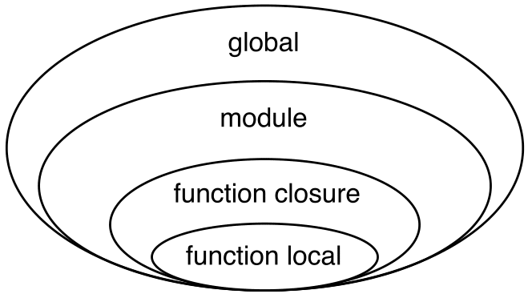

Document Attributes
N4JS Language Specification
Version 0.4
Revision Date: 28.10.2016

© 2016 NumberFour AG
Authors:
Jens von Pilgrim, Jakub Siberski, Mark-Oliver Reiser,
Torsten Krämer, Ákos Kitta, Sebastian Zarnekow, Lorenzo Bettini, Jörg Reichert
Abstract
This document contains the NumberFour JavaScript Specification.
Revision History
| Date | Tasks | Author | Description |
|---|---|---|---|
2013-03-21 |
|
v.Pilgrim |
initial commit |
2016-03-13 |
|
v.Pilgrim |
public release, version 0.3 (alpha) |
2016-05-31 |
mor |
support for definition-site variance, cf. [sec:DefinitionSiteVariance] |
|
2016-07-18 |
mor |
rename manifest property |
|
2016-09-09 |
mor |
add |
Licence
This specification and the accompanying materials is made available under the terms of the Eclipse Public License v1.0 which accompanies this distribution, and is available at http://www.eclipse.org/legal/epl-v10.html
Eclipse Public License - v 1.0
THE ACCOMPANYING PROGRAM IS PROVIDED UNDER THE TERMS OF THIS ECLIPSE
PUBLIC LICENSE (AGREEMENT). ANY USE, REPRODUCTION OR DISTRIBUTION OF
THE PROGRAM CONSTITUTES RECIPIENT’S ACCEPTANCE OF THIS AGREEMENT.
1. DEFINITIONS
Contributionmeans:-
-
in the case of the initial Contributor, the initial code and documentation distributed under this Agreement, and
-
in the case of each subsequent Contributor:
-
changes to the Program, and
-
additions to the Program;
where such changes and/or additions to the Program originate from and are distributed by that particular Contributor. A Contribution ’originates’ from a Contributor if it was added to the Program by such Contributor itself or anyone acting on such Contributor’s behalf. Contributions do not include additions to the Program which:
-
are separate modules of software distributed in conjunction with the Program under their own license agreement, and
-
are not derivative works of the Program.
-
-
-
Contributor-
means any person or entity that distributes the Program.
Licensed Patents-
mean patent claims licensable by a Contributor which are necessarily infringed by the use or sale of its Contribution alone or when combined with the Program.
Program-
means the Contributions distributed in accordance with this Agreement.
Recipient-
means anyone who receives the Program under this Agreement, including all Contributors.
2. GRANT OF RIGHTS
-
Subject to the terms of this Agreement, each Contributor hereby grants Recipient a non-exclusive, worldwide, royalty-free copyright license to reproduce, prepare derivative works of, publicly display, publicly perform, distribute and sublicense the Contribution of such Contributor, if any, and such derivative works, in source code and object code form.
-
Subject to the terms of this Agreement, each Contributor hereby grants Recipient a non-exclusive, worldwide, royalty-free patent license under Licensed Patents to make, use, sell, offer to sell, import and otherwise transfer the Contribution of such Contributor, if any, in source code and object code form. This patent license shall apply to the combination of the Contribution and the Program if, at the time the Contribution is added by the Contributor, such addition of the Contribution causes such combination to be covered by the Licensed Patents. The patent license shall not apply to any other combinations which include the Contribution. No hardware per se is licensed hereunder.
-
Recipient understands that although each Contributor grants the licenses to its Contributions set forth herein, no assurances are provided by any Contributor that the Program does not infringe the patent or other intellectual property rights of any other entity. Each Contributor disclaims any liability to Recipient for claims brought by any other entity based on infringement of intellectual property rights or otherwise. As a condition to exercising the rights and licenses granted hereunder, each Recipient hereby assumes sole responsibility to secure any other intellectual property rights needed, if any. For example, if a third party patent license is required to allow Recipient to distribute the Program, it is Recipient’s responsibility to acquire that license before distributing the Program.
-
Each Contributor represents that to its knowledge it has sufficient copyright rights in its Contribution, if any, to grant the copyright license set forth in this Agreement.
3. REQUIREMENTS
A Contributor may choose to distribute the Program in object code form under its own license agreement, provided that:
-
it complies with the terms and conditions of this Agreement; and
-
its license agreement:
-
effectively disclaims on behalf of all Contributors all warranties and conditions, express and implied, including warranties or conditions of title and non-infringement, and implied warranties or conditions of merchantability and fitness for a particular purpose;
-
effectively excludes on behalf of all Contributors all liability for damages, including direct, indirect, special, incidental and consequential damages, such as lost profits;
-
states that any provisions which differ from this Agreement are offered by that Contributor alone and not by any other party; and
-
states that source code for the Program is available from such Contributor, and informs licensees how to obtain it in a reasonable manner on or through a medium customarily used for software exchange.
-
When the Program is made available in source code form:
-
it must be made available under this Agreement; and
-
a copy of this Agreement must be included with each copy of the Program.
Contributors may not remove or alter any copyright notices contained within the Program.
Each Contributor must identify itself as the originator of its Contribution, if any, in a manner that reasonably allows subsequent Recipients to identify the originator of the Contribution.
4. COMMERCIAL DISTRIBUTION
Commercial distributors of software may accept certain responsibilities
with respect to end users, business partners and the like. While this
license is intended to facilitate the commercial use of the Program, the
Contributor who includes the Program in a commercial product offering
should do so in a manner which does not create potential liability for
other Contributors. Therefore, if a Contributor includes the Program in
a commercial product offering, such Contributor (Commercial
Contributor) hereby agrees to defend and indemnify every other
Contributor (Indemnified Contributor) against any losses, damages
and costs (collectively Losses) arising from claims, lawsuits and
other legal actions brought by a third party against the Indemnified
Contributor to the extent caused by the acts or omissions of such
Commercial Contributor in connection with its distribution of the
Program in a commercial product offering. The obligations in this
section do not apply to any claims or Losses relating to any actual or
alleged intellectual property infringement. In order to qualify, an
Indemnified Contributor must: a) promptly notify the Commercial
Contributor in writing of such claim, and b) allow the Commercial
Contributor to control, and cooperate with the Commercial Contributor
in, the defense and any related settlement negotiations. The Indemnified
Contributor may participate in any such claim at its own expense.
For example, a Contributor might include the Program in a commercial product offering, Product X. That Contributor is then a Commercial Contributor. If that Commercial Contributor then makes performance claims, or offers warranties related to Product X, those performance claims and warranties are such Commercial Contributor’s responsibility alone. Under this section, the Commercial Contributor would have to defend claims against the other Contributors related to those performance claims and warranties, and if a court requires any other Contributor to pay any damages as a result, the Commercial Contributor must pay those damages.
5. NO WARRANTY
EXCEPT AS EXPRESSLY SET FORTH IN THIS AGREEMENT, THE PROGRAM IS PROVIDED
ON AN AS IS BASIS, WITHOUT WARRANTIES OR CONDITIONS OF ANY KIND,
EITHER EXPRESS OR IMPLIED INCLUDING, WITHOUT LIMITATION, ANY WARRANTIES
OR CONDITIONS OF TITLE, NON-INFRINGEMENT, MERCHANTABILITY OR FITNESS FOR
A PARTICULAR PURPOSE. Each Recipient is solely responsible for
determining the appropriateness of using and distributing the Program
and assumes all risks associated with its exercise of rights under this
Agreement , including but not limited to the risks and costs of program
errors, compliance with applicable laws, damage to or loss of data,
programs or equipment, and unavailability or interruption of operations.
6. DISCLAIMER OF LIABILITY
EXCEPT AS EXPRESSLY SET FORTH IN THIS AGREEMENT, NEITHER RECIPIENT NOR ANY CONTRIBUTORS SHALL HAVE ANY LIABILITY FOR ANY DIRECT, INDIRECT, INCIDENTAL, SPECIAL, EXEMPLARY, OR CONSEQUENTIAL DAMAGES (INCLUDING WITHOUT LIMITATION LOST PROFITS), HOWEVER CAUSED AND ON ANY THEORY OF LIABILITY, WHETHER IN CONTRACT, STRICT LIABILITY, OR TORT (INCLUDING NEGLIGENCE OR OTHERWISE) ARISING IN ANY WAY OUT OF THE USE OR DISTRIBUTION OF THE PROGRAM OR THE EXERCISE OF ANY RIGHTS GRANTED HEREUNDER, EVEN IF ADVISED OF THE POSSIBILITY OF SUCH DAMAGES.
7. GENERAL
If any provision of this Agreement is invalid or unenforceable under applicable law, it shall not affect the validity or enforceability of the remainder of the terms of this Agreement, and without further action by the parties hereto, such provision shall be reformed to the minimum extent necessary to make such provision valid and enforceable.
If Recipient institutes patent litigation against any entity (including a cross-claim or counterclaim in a lawsuit) alleging that the Program itself (excluding combinations of the Program with other software or hardware) infringes such Recipient’s patent(s), then such Recipient’s rights granted under Section 2(b) shall terminate as of the date such litigation is filed.
All Recipient’s rights under this Agreement shall terminate if it fails to comply with any of the material terms or conditions of this Agreement and does not cure such failure in a reasonable period of time after becoming aware of such noncompliance. If all Recipient’s rights under this Agreement terminate, Recipient agrees to cease use and distribution of the Program as soon as reasonably practicable. However, Recipient’s obligations under this Agreement and any licenses granted by Recipient relating to the Program shall continue and survive.
Everyone is permitted to copy and distribute copies of this Agreement, but in order to avoid inconsistency the Agreement is copyrighted and may only be modified in the following manner. The Agreement Steward reserves the right to publish new versions (including revisions) of this Agreement from time to time. No one other than the Agreement Steward has the right to modify this Agreement. The Eclipse Foundation is the initial Agreement Steward. The Eclipse Foundation may assign the responsibility to serve as the Agreement Steward to a suitable separate entity. Each new version of the Agreement will be given a distinguishing version number. The Program (including Contributions) may always be distributed subject to the version of the Agreement under which it was received. In addition, after a new version of the Agreement is published, Contributor may elect to distribute the Program (including its Contributions) under the new version. Except as expressly stated in Sections 2(a) and 2(b) above, Recipient receives no rights or licenses to the intellectual property of any Contributor under this Agreement, whether expressly, by implication, estoppel or otherwise. All rights in the Program not expressly granted under this Agreement are reserved.
This Agreement is governed by the laws of the State of New York and the intellectual property laws of the United States of America. No party to this Agreement will bring a legal action under this Agreement more than one year after the cause of action arose. Each party waives its rights to a jury trial in any resulting litigation.
1. Introduction
This specification defines the N4JS language.
In general, the N4 JavaScript dialect used is identical to the standard ECMAScript as defined in the 6th edition of ECMA-262, also known as ECMAScript 2015, referred to as [ECMA15a].
1.1. Notation
1.1.1. Grammar Notation
For the specification of the syntax and structure of elements, we use a slightly augmented similar to the grammar language of Xtext Grammar Language.
Similar to [ECMA11a], we define types with properties only for the purpose of
explanation and usage within this specification. We use the Xtext
notation style to assign values to meta-properties. Particularly, we use
the Xtext notation for collection (+=) and boolean (?=) values. These
properties are written in italics. Enumerations are defined similar to
Xtext. In order to allow the specification of default values, which are
often defined by omitting the value, we always define the literal
explicitly if it can be defined by the user.
The following lists informally defines the grammar:
- Terminal
-
Terminals (or terminal strings) are enclosed in single quotes, e.g.,
terminal. - Enumerations
-
Rules which contain only terminals used as values for properties are marked with
enumfor enumeration. - Properties
-
Values of non-terminals, e.g., other rules, can be assigned to properties. The property name and the assignment are not part of the original syntax and only used for the meta description. E.g.,
name=Identifier. - Collection Properties
-
If a property is a collection, values are added to that list via
+=. E.g.,property+=Value. - Boolean Properties
-
Boolean properties are set to false by default, if the value (usually a terminal) is found, the boolean value is set to true. Often, the name of the property is similar to the terminal. E.g.,
final?='final'?.
Properties of a non-terminal are sometimes listed again below the grammar. In that case, often pseudo properties are introduced which are derived from other properties and which are only used for simplification.
1.1.2. Type Judgments and Rules and Constraints Notation
Typing Rules and Judgments
Both parts of the rule may contain multiple expressions, which are
concatenated via and. For example, the following
can be read as
' if , , and are all true, then is true as well '.
The following judgments (with relation symbols) are used:
- subtype
< - type
: -
in which the left hand side is a declaration or expression, and the right hand side a type. We also use as a function returning the (inferred) type of an expression.
- expectedTypeIn
-
a relation with three arguments: means, that is expected to be a subtype of inside
The following statement, for example, defines transitivity of subtypes (in a simplified manner):
is the context containing (bound) type variables etc.,
can be read as entails. Thus, the rule can be
read as follows: if the type B is a subtype of type A in context (i.e.
with constraints on type variables specified in ), and if type C is a
subtype of B, then C is also a subtype of A in context .
In rules, we sometimes omit the environment if it is not needed. New information is sometimes added to the environment, in particular, substitutions (that is binding type variables to a type). The set of substitutions is written with (theta). If new substitutions are explicitly added to that set, we write ( is substituted with type ). Often, these bindings are computed from a parameterized type reference which declares type arguments which are bound to the type variables of the generic declaration. In this case we simply write , in which is the parameterized type declaration. As these new substitutions must become part of a (newly) created environment, we then usually write . These substitutions are usually omitted.
Types of an Element
A variable or other typed element may be associated with three types:
-
Declared type: the type explicitly specified in the code, e.g., .
-
Inferred type: the type inferred by the type inferencer, e.g., infers the type of s to
string. I.e. will be true, or \!] < :string $\]]. If an element is annotated with a type ,i.e. it has a declared type, the inferred type will always be the declared type. -
Actual type: the actual type of a variable during runtime. This type information is not available at compile time and ignored in this specification.
These types are not type declarations but type references, in fact, as
they may be parameterized. For the sake of simplicity, we often omit the
Ref suffix to shorten formulas. Consequently, we define the
following properties and pseudo properties for typed elements such as
variables:
The explicitly declared type, this is usually a real property of the construct. Not all elements allow the specification of a declared type, such as expressions.
or : This pseudo property is the inferred type computed by the type inferencer.
A pseudo property for elements with a property. It is similar to the inferred type, i.e.
1.2. Auxiliary Functions
This section describes some auxiliary functions required for definition of type inference rules later on.
1.2.1. Binding
Binding an identifier (variable reference) to a variable declaration (or variable definition) is not part of this specification as this is standard ECMAScript functionality. However, some valid ECMAScript bindings are permitted due to visibility constraints.
Definition: Binding Relation
We define a pseudo relation which binds a reference, i.e. an identifier, to a declaration (e.g.,variable declaration).
Binding of variable references to declaration is defined by ECMAScript already. Type references only occur in type expressions, how these are handled is explained in [sec:Type_Expressions].
We usually omit this binding mechanism in most rules and use the reference similarly to the declaration or definition it is bound to. If a variable reference , for example, is bound to a variable declaration , i.e. , we simply write instead of to refer to the type expression (of the variable).
[2]
A DeclaredType references the type declaration by its simple name that has been
imported from a module specifier. We define the method
for declared types as well:
Definition: Binding Relation of Types
We define a pseudo relation which binds a type reference, i.e. a simple name, to the type declaration.
1.2.2. Merging Types
In some cases we have to merge types, e.g., types of a union type or item types of an array. For that purpose, we define a method as follows.
[Merge Function][def:Merge Function] We define a pseudo function
The idea of this function is to remove duplicates. For example; if a union type contains two type expressions and , and if , then contains only one element. The order of the elements is lost, however.
Logic Formulars
In general, we use a pragmatic mixture of pseudo code, predicate logic, and OCL. Within constraints (also within the inference rules), the properties defined in the grammar are used.
In some rules, it is necessary to type the rule variables. Instead of explicitly checking the metatype (via ), we precede the variable with the type, that is: .
Instead of type casting elements, often properties are simply
accessed. If an element does not define that element, it is either
assumed to be false or null by default.
If a property is optional and not set, we write to test its absence. Note that is different from , as the latter refers to the null type. Non-terminals may implicitly be subclasses. In that case, the concrete non-terminal, or type, of a property may be subject for a test in a constraint.
1.2.3. Symbols and Font Convention
Variables and their properties are printed in italic when used in formulas (such as rules). A dot-notation is used for member access, e.g. . Also defined functions are printed in italic, e.g., . Properties which define sets are usually ordered and we assume 0-indexed access to elements, the index subscripted, e.g., .
We use the following symbols and font conventions:
, , ,
::
Logical and, or, exclusive or (xor), and not.
, ,
::
Logical implication, if and only if, and if-then-else.
, , ,
::
Boolean true, boolean false, null (i.e., not specified, e.g.,
means that there are is no
(super class) specified), empty set.
, , ,
, ::
Element of, not an element of, union set, intersection set,
cardinality of set x.
::
Power set of , i.e.
.
, , ::
Exists, not exists, for all; we write
and say there exists
such that predicate is true.
Note that .
::
(mu) read metatype of; metatype of a variable or property, e.g.,
.
::
Sequence of elements . E.g., if we want to
define a constraint that the owner of a members of a class
is the class, we simply write
instead of
or even more
complicated with index variables.
Sequences are 1-based, e.g., a sequence with length , has elements .
2. Grammar
2.1. Lexical Conventions

As a super language on top of ECMAScript, the same lexical conventions are supported as described in [ECMA11a(p.S7)] within strict mode. Some further constraints are defined, however, restricting certain constructs. These constraints are described in the following.
2.1.1. Identifier Names and Identifiers
Cf. [ECMA11a(p.S7.6)], [ECMA11a(p.S11.1.2, p.p.63)] and [ECMA11a(p.S01.2, p.p.51ff)].
As a reminder, identifiers are defined as follows in the ECMAScript specification:
IdentifierName: IdentifierStart* IdentifierPart;
IdentifierStart : UnicodeLetter | '_';
\ UnicodeEscapeSequenceN4JS supports a limited form of computed-names for member declarations:
N4JSPropertyComputedName:
'[' (SymbolLiteralComputedName | StringLiteralComputedName) ']'
;
SymbolLiteralComputedName: N4JSIdentifier '.' N4JSIdentifier ;
StringLiteralComputedName: STRING ;As can be seen, a computed-name must be either
-
a symbol reference, e.g.
Symbol.iterator, -
a string literal, i.e., a compile time known constant. This notation is useful when interoperating with libraries that define members whose names contain special characters (e.g., a field name starting with commercial-at)
In N4JS, identifiers are further constrained in order to avoid ambiguities and to make code more readable. Some of these constraints will lead to errors, others only to warnings. They do not apply for identifiers declared in definitions file (n4jsd) in order to enable declaration of external entities.
-
If the following constraints do not hold, errors are created.
-
Leading
$(dollar sign) character is prohibited for any variable name such as fields, variables, types functions and methods. -
Leading
_(underscore) character is not allowed for identifying any functions or methods.
-
-
If the following constraints do not hold, warnings are created.
-
Variable names should, in general, be constructed form the 26 ASCII upper and lower case alphabetic letters (a..z, A..Z), from the 10 decimal digits (0..9) and from the _ (underline). Although the usage of the international characters are allowed (according to the ECMAScript specification) it is discouraged because these characters may not be read or understood well in every circumstance. [3]
-
Type (and Type Variable) Identifiers
TypeIdentifier: [_A-Z][_a-zA-Z0-9]* TypeVariableIdentifier: [_A-Z][_a-zA-Z0-9]* -
Package Identifiers
PackageIdentifier: [_a-z][._a-zA-Z0-9]*; // i.e. the folder names, must not end with . -
Member Identifiers and Enum Literals
InstanceFieldIdentifier: [_a-z][_a-zA-Z0-9]* StaticFieldIdentifier: [_A-Z][_A-Z0-9]*([_A-Z0-9]+)* EnumLiteral: [_A-Z][_A-Z0-9]*([_A-Z0-9]+)* -
Variable and Parameter Names
VariableIdentifier: [_a-zA-Z0-9]* ParameterIdentifier: [_a-z][_a-zA-Z0-9]* -
Methods
MethodIdentifier: [_a-z][_a-zA-Z0-9]*; -
Annotations
AnnotationIdentifier: [_A-Z][_a-zA-Z0-9]*
-
The following rules describe how fully qualified names of elements are created. Note that these fully qualified names cannot be used in N4JS directly. Though they may be shown in error messages etc. to identify elements.
TypeIdentifier: [A-Z][a-zA-Z0-9]*;
PackageIdentifier: [a-z][a-zA-Z0-9]*;
FQNType: (PackageIdentifier '.')+ TypeIdentifier;2.1.4. Automatic Semicolon Insertion
Cf. [ECMA11a(p.S7.9)]
ASI is supported by the parser, however warnings are issued.
2.1.5. JSDoc
JSDoc are comments similar to JavaDoc in Java for documenting types, functions and members. There is no semantic information expressed in JSDoc, that is, the behavior of a program must not change if all the JSDoc is removed. The JSDoc tags and overall syntax is a mixture of tags defined by the Google Closure Compiler, Java’s JavaDoc tool and N4-specific tags.
JSDoc comments are multiline comments, starting with `/** `
(instead of simple multiline comments, starting with `/* `).
MultiLineComment: '/*' MultiLineCommentChars? '*/' // from ECMAScript specification
JSDoc: '/**' MultiLineCommentChars? '*/'In general, JSDoc comments are placed directly before the annotated language element. In some cases, this is slightly different, such as for method parameters, for example, where it is then explicitly specified.
The content of JSDoc comments will be covered in more detail in upcoming chapters. For documentation purposes, multi- and single-line descriptions are used in several constructs.
MLVALUE: ([^@]+[^\n]+)+;
SLVALUE: ([^\n]+);MLVALUE-
short for
multi-line value. This is usually only used for the general description of types or members. SLVALUE-
short for
single-line value. This is a description which ends at the end of a line. It is usually used in combination with other tags, e.g., to further describe a parameter of a method.
3. Names
Visibility defines the scope in which a declaration is visible, that is in which context references can be bound to the declaration. Access control defines the extent to which types and members are accessible beyond their immediate context. Access control may, therefore, restrict the visibility of a declaration by limiting its scope.
Extensibility refers to whether a given type can be subtyped, or in the case of members, whether they can be overridden. Access control is a prerequisite for extensibility which is further explained in [N4_Specific_Classifiers]
3.1. Access Control
Types from one project may or may not be made accessible to another project. Likewise, members from a given type may or may not be made accessible to members existing outside that type. For example, if a developer writes an application which uses a library, which types within that library can the application see? Given a type that is set as visible, which members of that type can the application see?
Accessing a type or member actually means that a reference is bound to a declaration with the same identifier.
We distinguish the following contexts from which an element is accessed as follows:
-
Module or type: access from elements in the same module or type.
-
Subtype: access from a subtype.
-
Project: access from the same project.
-
Vendor: access from different project of the same vendor.
-
World: access from anything else.
Accessibility is defined by modifiers on types and members, e.g , via the statement, and by the annotation. Extensibility is defined by the annotation respectively.
3.2. Accessibility of Types, Top-Level Variables and Function Declarations
We define types (classes, interfaces, enums) whereby each type has members (fields and methods, depending on the kind of type). When we define a type, we need to define whether it is visible only for the specifying module, project or whether that type should be accessible from outside of that project.
The same is true for variable declarations and function declarations defined as top-level elements of a module.
The following type access modifiers are supported by N4JS:
enum TypeAccessModifier: project
| public;If a type is not exported, its visibility is private. If a type has declared visibility , it may additionally be marked as internal via the annotation . Thus, we have the following set of type access modifiers:
TAM =
That is, in N4JS, only the type access modifiers and are available. The redundant modifier serves only documentation purpose and can be synthesized if the modifier is preset.
All other modifiers used here are synthesized as shown in the next example:
class C0 {} // private
export class C1 {} // project
export project class C1 {} // project
export @Internal public class C1 {} // public@Internal
export public class C2 {} // public
var v0; // private
export var v1; // project
export project var v1; // project
export @Internal public var v3; // public@Internal
export public var v2; // public
function f0() {} // private
export function f1() {} // project
export project function f1() {} // project
export @Internal public function f3() {} // public@Internal
export public function f2() {} // publicThe access control levels are defined as listed in .
| Type Access | ||||
|---|---|---|---|---|
Modifier |
Module |
Project |
Vendor |
World |
|
yes |
no |
no |
no |
|
yes |
yes |
no |
no |
|
yes |
yes |
yes |
no |
|
yes |
yes |
yes |
yes |
is a totally ordered set:
The following constraints for type access modifiers for a given type (which may be a classifier declaration, a function or a variable) must hold:
-
It is an error if is not exported but defined as
project,publicorpublic@Internal. -
It is an error if an annotation
@Internalis present on a module private orprojectvisible type. -
The type modifier for all built-in ECMAScript types is
public. -
The default modifier for user declared exported declarations is
project. That is, this modifier is assumed if no modifier is explicitly specified.
Definition: Type Accessibility T
The function computes whether a given type, (top-level) variable or function reference can access the declaration that it references. is defined with .
Formally, we define for a given reference and a module top level variable, function or type declaration as follows: [4] If the type of the arguments is clear from the context, we simply write instead of .
Accessibility for types is only checked for types that manifest themselves in the concrete syntax of the N4JS file. Types that do not have to be written to concrete syntax may be used even if they are generally not accessible. This is illustrated by the following example:
export public class D {
public takeC(): C { .. }
public acceptC(c: C): void { .. }
}
/* private */ class C {}var d: D = new D()
d.acceptC( d.takeC() )3.2.1. Accessibility of Members
Accessibility at the member level is only applicable when the type
itself is accessible. If you cannot access the type, you cannot access
any of its members. Note that inherited members (from an interface or
class) become members of a class. For example, if B extends A, and if A is not
accessible to some client C but B is, then the members of A are indirectly
accessible to C in so far as they are accessed via B. This is true in
particular for interfaces, as their properties are possibly merged into
the consuming class (cf. [Implementation_of_members]).
The following member access modifiers are supported by N4JS:
enum MemberAccessModifier: private
| project
| protected
| public;The modifiers and may be annotated with . Thus, we can define the
following set of member access modifiers:
protected@Internal and public@Internal are synthesized tags and were
introduced as shorthand notation for the @Internal annotation together with protected or public access modifiers.
The modifier is the default one and it can be omitted.
As with the type access modifiers, not all member access modifiers are
available in N4JS. Instead, they are synthesized from different
construct as shown in the next example.
export @Internal public class C {
private f0; // private
f1; // project
project f2; // project
@Internal protected f3; // protected@Internal
protected f4; // protected
@Internal public f5; // public@Internal
public f6; // public
private m0() {} // private
m1() {} // project
project m2() {} // project
@Internal protected m3() {} // protected@Internal
protected m4() {} // protected
@Internal public m5() {} // public@Internal
public m6() {} // public
}does not define a totally ordered set. However, its subset is a totally ordered set [5]:
[Member Access Controls] shows which members are accessible from where.
[[Member Access Controls]]
| Access Modifier | Inside Module | Inside Project | Vendor | Vendor Subtypes | Other Projects | Everywhere |
|---|---|---|---|---|---|---|
|
yes |
no |
no |
no |
no |
no |
|
yes |
yes |
no |
no |
no |
no |
|
yes |
yes |
yes |
no |
no |
no |
|
yes |
yes |
yes |
no |
yes |
no |
|
yes |
yes |
yes |
yes |
no |
no |
|
yes |
yes |
yes |
yes |
yes |
yes |
We define the relation as follows: We further define the relation as follows: Less, greater then etc. are defined accordingly.
] The function computes if a given reference can access the member declaration that it references.
Note that and are different functions. A reference can only bind to a declaration if it can access the declaration. However, bind requires more condition to work (correct metatypes, no shadowing etc).
Formally, we define for a given reference and member declaration as follows: [6]
[7]]
math:[\[\begin{aligned}
&\infer{\alpha_m(r, M)}{M.acc = \lenum{public}}\\
&\infer{\alpha_m(r, M)}{r.vendor = M.vendor & M.acc = \lenum{public@Internal}}\\
&\infer{\alpha_m(r, M)}{r.owner \in r.receiver.super^* & M.acc = \lenum{protected}}\\
&\infer{\alpha_m(r, M)}{r.owner \in r.receiver.super^* & r.vendor = M.vendor & M.acc = \lenum{protected@Internal}}\\
&\infer{\alpha_m(r, M)}{r.project = M.project & M.acc = \lenum{project}}\\
&\infer{\alpha_m(r, M)}{r.module = r.module & M.acc =\lenum{private}}\\
\end{aligned}\]]
If the type of the arguments is clear from the context, we simply write instead of .
Although private members are accessible inside a module, it is not possible to redefine (override etc.) these members (see [Redefinition_of_Members]).
The following constraints for member access modifiers must hold:
-
The default modifier for members of user-declared classes is
project. -
The default modifier for members of interfaces is the same as the visibility of the interface itself, except for private interfaces. For private interfaces, the default modifier for members is
project. -
The modifier for enum literals is always
public. -
Private members of a classifier are visible and accessible within a module, i.e. you can access the private method of a class, for instance, when the use of the class as receiver is in the same module where the class has been defined. In case of inheritance, private members are visible if the host (e.g. the class) is in the same module as the provider (the extended class). This also means that abstract members of a class are allowed to be defined private as they may be overridden within a module.
export project interface I {
project foo();
}
// This interface may be used publicly, but since the inherited method foo() is project visible only,
// it is not possible to implement that interface in other projects.
export public interface J extends I {
}
// Since the visibility of foo is set to public here, it is possible to implement this interface in other projects.
export public interface K extends I {
@Override public foo();
}
// Since foo is private, it is not possible to subclass the class in other modules. Still, it
// is possible to use it in other projects.
// XPECT noerrors -->
export public abstract class C {
private abstract foo();
public static C instance() {
// return some default instance
...
}
}As demonstrated in the following snippet, class can be used but not subclassed in other modules:
import C from "C"
// XPECT errors --> "Cannot extend class C: cannot implement one or more non-accessible abstract members: method C.foo." at "C"
export public abstract class Sub extends C {
}
// XPECT noerrors -->
var c: C = C.instance();Members of non-visible types are, in general, not visible for a client. Members may become visible, however, if they are accessed via a visible type which inherits these members. The following examples demonstrate two different scenarios:
[[ex:Declaring type vs receiver type]] It is especially noteworthy that the declaring type of a member is generally not considered for the accessibility of that member but only the receiver type is relevant.
class Base {
public m(b: Base): void {}
}
export public class ApiType extends Base {
}import * as N from "Base";
var t = new N.ApiType();
// member can be accessed although type Base is not exported:
t.m(t);The property access to the member m is valid because it fulfills the
constraints for accessibility. The receiver of the property access is t of
type ApiType. That type is exported and accessible. Therefore, the inherited
member m is also considered valid since it is also defined public.
This rule allows for defining a common functionality in module or project visible types that becomes accessible via exported, visible subtypes.
The following example demonstrates the behavior when non-visible types are used as return types. In this case, all the members of the non-visible types are not accessible, even if they have a public access modifier.
class A {
foo(): void{}
}
export public class C {
public getHidden(): A { return new A() };
}import * as Nfrom "A"
class Client {
f(): void {
var c = new N.C();
// XPECT noerrors --> Getting an instance the hidden type is possible
var hidden = c.getHidden();
// XPECT errors --> "The method foo is not visible." at "foo"
hidden.foo();
}
}3.2.2. Valid Names
For identifier and property names, the same constraints as in ECMAScript [ECMA11a(p.S7.6)] [ECMA11a(p.S7.6.1.2)] [ECMA11a(p.S11.6)] are applied.
Identifier names in N4JS are defined similar to [ECMA11a(p.S11.6)], making it possible to even use reserved words (keywords etc.). For some element types, errors or warnings are issued in order to prevent problems when using these names.
5Forbidden Identifier Names in N4JS[req:Identifier_Names_in_N4JS] In N4JS mode, errors are generated in the following cases:

-
A name of a type equals
-
an access modifier
-
setorget -
an ECMAScript keyword
-
a boolean literal
-
the name of a base type
-
-
The name of a function or function expression equals (but not the method)
-
an ECMAScript keyword
-
a reserved future ECMAScript word
-
6Undesired Identifier Names in N4JS[req:Undesired_Identifier_Names_in_N4JS] In N4JS mode, warnings are generated in the following cases:
-
The name of a member (of a non external type)
-
equals the name of a base type [8] but the type of the variable is different from that type
-
is not static nor const but starts with an upper case letter
-
-
The name of a non-external n4 types (class, interface, enum) starts with a lower case letter
-
The name of a variable (incl. formal parameter or catch variable and fields)
-
equals an N4JS keyword
-
equals the name of a base type but the type of the variable is different from that type
-
is not const but starts with an upper case letter
-
3.2.3. Qualified Names
In N4JS source code, types can only be referenced using their simple name. There is no such thing as a fully-qualified type name in N4JS or ECMAScript. Types are uniquely identified by their simple name, maybe together with an import and the module specifier given there. Clashes between simple names of imported type and locally declared types can be resolved by importing the type under an alias.
In some cases, however, we need to define references to types or even members. For example, if we want to reference certain members in JSDoc comments or for unambiguous error messages. For this reason, we formally define qualified names even if they cannot occur in source code.
Type Names shows the different names of a given type C, defined in a module
M.n4js, defined in a package p of a project MyProject.
| Name | Example |
|---|---|
Simple Type Name |
|
(Plain) Module Specifier |
|
Complete Module Specifier |
|
Complete Type Specifier |
|
Simple type names are used throughout N4JS code in order to refer to types. The different forms of module specifiers are only used in import declarations in the string following the keyword.
3.2.4. Name Duplicates
There might be cases where two (or more) scopes created by different entities with the same (simple) name overlap. Those situations can be referred to as shadowing, hiding, or obscuring. While they are not the same, many of those cases are not allowed in N4JS. For simplicity we refer to them all as shadowing or duplication (see below). Rule of thumb is that N4JS allows everything that is allowed in JavaScript StrictMode.
Lexical Environment
N4JS handles scopes similar to ECMAScript, so that function scope is
applied to variables declared with var (and parameters), and block scope for
variables is declared with let or const. In general, ECMAScript defines Lexical
Environments as a specification type used to define the association of
Identifiers to specific variables and functions based upon the lexical
nesting structure of ECMAScript code. [ECMA11a(p.10.2)].
- Elements that introduce lexical environments:
-
FunctionDefinition,VariableDeclaration,CatchBlock,WithStatement,ImportDeclaration - N4JS specific declarations:
-
N4ClassDeclaration,N4InterfaceDeclaration,N4EnumDeclaration,N4MethodDeclaration.
Additionally, a built-in lexical environment that defines global scope
exists for every Script.
Since N4JS is extended (and a bit more strict) JS strict mode, Object
environment records created by WithStatement are not taken into account when
resolving duplicates. This applies to both N4JS mode and JS strict mode.
In unrestricted JS the WithStatement is allowed but duplicates are not validated.
In case of names introduced by ImportDeclarations only NamedImportSpecifierss are taken into account (their import name or its alias if available). WildcardImportSpecifierss are not taken into
account. Potential optimizations by compiler or user annotation are also
not currently taken into account during analysis.
|
Duplicates and Shadowing
Definition: Shadowing Overriding Duplicates
Two elements with the same name declared in the same lexical environment (cf. [ECMA11a(p.S10.2.2.1)] are called duplicates. An element defined in an environment shadows all elements with the same name in outer environments.
In class hierarchies, a member with the same name as a member defined in a supertype is said to override the latter. Overriding is discussed in .
For the following constraints, we make the following assumptions:
-
Names of function expressions or declarations are handles similar to locally declared elements in the function. Function declarations are additionally declaring a name in their outer scope.
-
The implicit formal parameter
argumentsis treated similar to declared formal parameters. -
Formal parameters are defined in the lexical environment of a function, that is, they are defined in the same lexical environment as local
var-variables or other declarations in that function. -
The "global" environment contains objects globally defined by the execution environment.
There must be no two elements defined in the same lexical environment with the same name, that is, there must be no duplicates.
8Forbidden Shadowing[req:Forbidden_Shadowing] In general, shadowing is allowed in N4JS. But it is not allowed in the following cases:
-
No element defined in the standard global scope must be shadowed.
-
There must be no function shadowing another function.
-
Elements defined in catch blocks must not shadow elements defined all parent non-catch-block environments.
-
In the script environment, it is not allowed to use the name ’arguments’. [9]
[Forbidden shadowing] shows nested lexical environments with named elements declared inside (all named x here), the forbidden cases are marked with arrows (the
numbers at the left side refer to the numbers in
[req:Forbidden_Shadowing].
[[Forbidden shadowing]]

Rational:
-
We expect only few named nested functions. Since this is expected to be a rare case, no shadowing should occur there as this is maybe not expected by the programmer.
-
It is typical that nested environments define local variables. In particular helper variables (such as
i: number iors: string) are expected to be used quite often. Since this is a typical case, we allow shadowing for local variables. -
Function declarations may shadow type declarations. However, both entities are to be handled completely differently, so that an error will occur if the shadowing is ignored by the programmer anyway.
4. Types
4.1. Overview
N4JS is essentially ECMAScript with the inclusion of types. In the following sections we will describe how types are defined and used in N4JS.
Besides standard JavaScript types, the following metatypes are introduced:
-
Classifiers, that is class or interface (see )
-
Enum
Classifiers, methods and functions may be declared generic.
Types are related to each other by the subtype relation.
Definition: Subtype Relation
We use subtype for the general subtype relation or type conformance. In nominal typing, means that is a (transitive) supertype of . Generally in structural typing, this means that conforms to . is defined transitive reflexive by default. We write to refer to the transitive non-reflexive relation, that is
Whether nominal or structural typing is used depends on the declaration of the type or the reference. This is explained further in .
For convenience reasons, we sometimes revert the operator, that is We write if is not type conforming to . (cf. [Gosling12a(p.S4.10)])
Join and meet are defined as follows:
Definition: Join and Meet
A type math:[$J$] is called a
_join_ (or least common supertype, ) of a pair of types math:[$S$]
and math:[$T$], written math:[$S \join T = J$], if +
math:[\[\begin{aligned}
& S \subtype J\\
& T \subtype J\\
& \forall L: (S\subtype L) \land (T\subtype L) \to J\subtype L\end{aligned}\]]
Similarly, we say that a type math:[$M$] is a _meet_ (or greatest
common subtype, ) of math:[$S$] and math:[$T$], written
math:[$S \meet T = M$], if +
math:[\[\begin{aligned}
& M \subtype S\\
& M \subtype T\\
& \forall L: (L\subtype S) \land (L\subtype T) \to L\subtype M\end{aligned}\]]
Note that this declarative definition needs to be specified in detail for special cases, such as union and intersection types. Usually, the union type of two types is also the join.
summarizes all predefined types, that is primitive and built-in
ECMAScript and N4JS types. Specific rules for the subtype relation are
defined in the following sections. This type hierarchy shows any and undefined as the
top and bottom type (cf. [Pierce02a(p.15.4)]) We define these types here explicitly:
Definition: Top and Bottom Type
We call the top type, if for all types the relation is true. We call the bottom type, if for all types the relation is true. In N4JS, , the bottom type .
null is almost similar to , except that it is not a subtype
of undefined.

For every primitive type there is a corresponding built-in type as defined in [ECMA11a], e.g. and . There is no inheritance supported for primitive types and built-in types – these types are final.
Although the diagram shows inheritance between void and undefined, this relationship is only semantic: void is a refinement of undefined from a type system viewpoint. The
same applies to the relation of Object as well as the subtypes shown for string and String.
[[ex:Type Examples, Class Hierarchy]] In the following examples, we assume the following classes to be given:
// C <: B <: A
class A{}
class B extends A{}
class C extends B{}
// independent types X, Y, and Z
class X{} class Y{} class Z{}
// interfaces I, I1 <: I, I2 <: I, I3
interface I
interface I1 extends I {}
interface I2 extends I {}
interface I3 {}
// class implementing the interfaces
class H1 implements I1{}
class H12 implements I1,I2{}
class H23 implements I2,I3{}
// a generic class with getter (contra-variance) and setter (co-variance)
class G<T> {
get(). T;
set(x: T): void;
}4.2. Type Expressions
In contrast to ECMAScript, N4JS defines static types. Aside from simple type references, type expressions may be used to specify the type of variables.
4.2.1. Syntax
summarizes the type expression grammar. Depending on the context, not all constructs are allowed. For example, the variadic modifier is only allowed for function parameters.
References to user-declared types are expressed via ParameterizedTypeRef. This is also true
for non-generic types, as the type arguments are optional.
See Parameterized Types for details on that reference.
For qualified names and type reference names, see
The type expressions are usually added to parameter, field, or variable declarations as a suffix, separated with colon (’:’). The same is true for function, method, getter or setter return types. Exceptions in the cases of object literals or destructuring are explained later on.
var x: string;
var s: string = "Hello";
function f(p: string): string {
return p;
}
class C {
f: string;
s: string = "Hello";
m(p: string): string {
return p;
}
get x(): string {
return this.f;
}
set x(v: string) {
this.f = v;
}
}var x;
var s = "Hello";
function f(p) {
return p;
}
class C {
f;
s = "Hello";
m(p) {
return p;
}
get x() {
return this.f;
}
set x(v) {
this.f = v;
}
}The code on the right hand side is almost all valid ECMAScript 2015, with the exception of field declarations in the class. These are moved into the constructor by the N4JS transpiler.
4.2.2. Properties
Besides the properties indirectly defined by the grammar, the following pseudo properties are used for type expressions: Properties of :
If true, variable of that type is variadic. This is only allowed for parameters. Default value: .
If true, variable of that type is optional. This is only allowed for parameters and return types. This actually means that the type actually is a union type of . Default value: .
, reflect the facts that a variadic parameter is also optional (as its cardinality is ).$]
Pseudo property referencing the variable declaration (or expression)
which owns the type expression.
4.2.3. Semantics
The ECMAScript types undefined and null are also supported. These
types cannot be referenced directly, however. Note that void and undefined
are almost similar. Actually, the inferred type of a types element with
declared type of void will be undefined. The difference between void and
undefined is that an element of type void can never have another type,
while an element of type undefined may be assigned a value later on and
thus become a different type. void is only used for function and method return types.
Note that not any type reference is allowed in any context. Variables or
formal parameters must not be declared void or union types must not be
declared dynamic, for example. These constraints are explained in the
following section.
The types mentioned above are described in detail in the next sections. They are hierarchically defined and the following list displays all possible types. Note that all types are actually references to types. A type variable can only be used in some cases, e.g., the variable has to be visible in the given scope.
ECMAScript Types
- Predefined Type
-
Predefined types, such as String, Number, or Object; and .
- Array Type
- Function Type
-
Described in [../06_funtions/Functions.adoc], [../06_funtions/Functions#function_type].
- Any Type
N4Types
- Declared Type
-
(Unparameterized) Reference to defined class Classes or enum Enums.
- Parameterized Type
-
Parameterized reference to defined generic class or interface; Parameterized Types.
- This Type
- Constructor and Type Type
-
Class type, that is the meta class of a defined class or interface, Constructor and Classifier Type.
- Union Types
-
Union of types, Union Type.
- Type Variable
-
Type variable, Type Variables.
Type expressions are used to explicitly declare the type of a variable, parameter and return type of a function or method, fields (and object literal properties).
4.3. Type Inference
If no type is explicitly declared, it is inferred based on the given context, as in the expected type of expressions or function parameters, for example. The type inference rules are described in the remainder of this specification.
Definition: Default Type
In N4JS mode , if no type is explicitly
specified and if no type information can be inferred, any is assumed as the default type.
In JS mode, the default type is any+.
Once the type of a variable is either declared or inferred, it is not supposed to be changed.
[Variable type is not changeable] Given the following example.
var x: any;
x = 42;
x-5; // error: any is not a subtype of number.Type of x is declared as any in line 1. Although a number is assigned to x in line 2, the type of x is not changed. Thus an error is issued in line 3 because the type of x is still any.
At the moment, N4JS does not support type guards or, more general, effect system (cf. [Nielson99a]).
4.4. Generic and Parameterized Types
Some notes on terminology:
- Type Parameter vs. Type Argument
-
A type parameter is a declaration containing type variables. A type argument is a binding of a type parameter to a concrete type or to another type parameter. Binding to another type parameter can further restrict the bounds of the type parameter.
This is similar to function declarations (with formal parameters) and function calls (with arguments).
4.4.1. Generic Types
A class declaration or interface declaration with type parameters declares a generic type. A generic type declares a family of types. The type parameters have to be bound with type arguments when referencing a generic type.
4.4.2. Type Variables
A type variable is an identifier used as a type in the context of a generic class definition, generic interface definition or generic method definition. A type variable is declared in a type parameter as follows.
Syntax
TypeVariable:
name=IDENTIFIER
('extends' declaredUpperBounds+=ParameterizedTypeRef
('&' declaredUpperBounds+=ParameterizedTypeRef)*
)?
;[Type Variable as Upper Bound][ex:Type Variable as Upper Bound] Note that type variables are also interpreted as types. Thus, the upper bound of a type variable may be a type variable as shown in the following snippet:
class G<T> {
<X extends T> foo(x: X): void { }
}Properties
A type parameter defines a type variable, which type may be constrained with an upper bound.
Properties of TypeVariable:
Type variable, as type variable contains only an identifier, we use type parameter instead of type variable (and vice versa) if the correct element is clear from the context.
Upper bounds of concrete type bound to the type variable, i.e. a super class.
Semantics
[[req:10Type Variables]]
-
Enum is not a valid metatype in .
-
Wildcards are not valid in .
-
Primitives are not valid in .
-
Type variables are valid in .
A type variable can be used in any type expression contained in the generic class, generic interface, or generic function / method definition.
[F-bounded quantification][ex:F_bounded_quantification] Using a type variable in the upper bound reference may lead to recursive definition.
class Chain<C extends Chain<C, T>, T> {
next() : C { return null; }
m() : T { return null; }
}Type Inference
In many cases, type variables are not directly used in subtype relations as they are substituted with the concrete types specified by some type arguments. In these cases, the ordinary subtype rules apply without change. However, there are other cases in which type variables cannot be substituted:
-
Inside a generic declaration.
-
If the generic type is used as raw type.
-
If a generic function / method is called without type arguments and without the possibility to infer the type from the context.
In these cases, an unbound type variable may appear on one or both sides of a subtype relation and we require subtype rules that take type variables into account.
It is important to note that while type variables may have a declared upper bound, they cannot be simply replaced with that upper bound and treated like existential types. The following example illustrates this:
[Type variables vs. existential types][ex:TypeVariablesVsExistentialTypes]
class A {}
class B extends A {}
class C extends B {}
class G<T> {}
class X<T extends A, S extends B> {
m(): void {
// plain type variables:
var t: T;
var s: S;
t = s; // ERROR: "S is not a subtype of T." at "s"
// existential types:
var ga: G<? extends A>;
var gb: G<? extends B>;
ga = gb; // ok!
}
}Even though the upper bound of is a subtype of ’s upper bound (since ), we cannot infer that is a subtype of (line 15), because there are valid concrete bindings for which this would not be true: for example, if were bound to and to .
This differs from existential types (see and and line 21): ).
We thus have to define subtype rules for type variables, taking the declared upper bound into account. If we have a subtype relation in which a type variable appears on one or both sides, we distinguish the following cases:
-
If we have type variables on both sides: the result is true if and only if there is the identical type variable on both sides.
-
If we have a type variable on the left side and no type variable on the right side: the result is true if and only if the type variable on the left has one or more declared upper bounds.
This is the case for in which T is an unbound type variable and A, B two classes with . -
In all other cases the result is false.
This includes cases such as
which is always false, even if or
which is always false, even if .
We thus obtain the following defintion:
[Subtype Relation for Type Variables][def:SubtypeRelationForTypeVariables] For two types of which at least one is a type variable, we define
-
if both and are type variables:
-
if is a type variable and is not:
4.4.3. Parameterized Types
References to generic types (cf. ) can be parameterized with type arguments. A type reference with type arguments is called parameterized type.
Syntax
ParameterizedTypeRef:
ParameterizedTypeRefNominal | ParameterizedTypeRefStructural;
ParameterizedTypeRefNominal:
declaredType=[Type|TypeReferenceName]
(=> '<' typeArgs+=TypeArgument (',' typeArgs+=TypeArgument)* '>')?;
ParameterizedTypeRefStructural:
definedTypingStrategy=TypingStrategyUseSiteOperator
declaredType=[Type|TypeReferenceName]
(=>'<' typeArgs+=TypeArgument (',' typeArgs+=TypeArgument)* '>')?
('with' TStructMemberList)?;
TypeArgument returns TypeArgument:
Wildcard | TypeRef;
Wildcard returns Wildcard:
'?'
(
'extends' declaredUpperBound=TypeRef
| 'super' declaredLowerBound=TypeRef
)?
;Properties
Properties of parameterized type references (nominal or structural):
Referenced type by type reference name (either the simple name or a qualified name, e.g. in case of namespace imports).
The type arguments, may be empty.
Typing strategy, by default nominal, see for details
in case of structural typing, reference can add additional members to the structural type, see for details.
Pseudo Properties:
The ImportSpecifier, may be null if this is a local type reference. Note that this may
be a NamedImportSpecifier. See \autoref{sec:Import_Statement} for details for details.
Returns simple name of type, that is either the simple name as declared, or the alias in case of an imported type with alias in the import statement.
Semantics
The main purpose of a parameterized type reference is to simply refer to the declared type. If the declared type is a generic type, the parameterized type references defines a substitution of the type parameters of a generic type with actual type arguments. A type argument can either be a concrete type, a wildcard or a type variable declared in the surrounding generic declaration. The actual type arguments must conform to the type parameters so that code referencing the generic type parameters is still valid.
[[req:11 Parameterized Types]]
For a given parameterized
type reference with
, the following constraints must hold:
-
The actual type arguments must conform to the type parameters, that is:
We define type erasure similar to Java [Gosling12a(p.S4.6)] as a "mapping from types (possibly including parameterized types and type variables) to types (that are never parameterized types or type variables)". We write $T°$ for the erasure of type $T$.\footnote{The notation $|T|$ used in [Gosling12a] conflicts with the notation of cardinality of sets, which we use in case of union or intersection types for types as well. The notation used here is inspired by [Crary02a], in which a mapping is defined between a typed language $\lambda$ to an untyped language $\lambda°$.}
[Parameterized Type, Raw Type][def:Parameterized_Type] A parameterized type reference defines a parameterized type , in which all type parameters of are substituted with the actual values of the type arguments. We call the type , in which all type parameters of are ignored, the raw type or erasure of .
We define for types in general:
-
The erasure of a parameterized type is simply .
-
The erasure of a type variable is the erasure of its upper bound.
-
The erasure of any other type is the type itself.
This concept of type erasure is purely defined for specification
purposes. It is not to be confused with the real type erasure which
takes place at runtime, in which almost no types (except primitive
types) are available.
That is, the type reference in var G<string> gs;
actually defines a type G<string>, so that
. It may reference a type
defined by a class declaration class G<T> .
It is important that the type G<string> is different from G<T>.
If a parameterized type reference has no type arguments, then it is similar to the declared type. That is, if (and only if) .
In the following, we do not distinguish between parameter type reference and parameter type – they are both two sides of the same coin.
In Java, due to backward compatibility (generics were only introduced in Java 1.5), it is possible to use raw types in which we refer to a generic type without specifying any type arguments. This is not possible in N4JS, as there is no unique interpretation of the type in that case as shown in the following example. Given the following declarations:
class A{}
class B extends A{}
class G<T extends A> { t: T; }
var g: G;In this case, variable refers to the raw type . This is forbidden in N4JS, because two interpretations are possible:
-
is of type
-
is of type
In the first case, an existential type would be created, and
must fail.
In the second case,
must fail.
In Java, both assignments work with raw types, which is not really save. To avoid problems due to different interpretations, usage of raw types is not allowed in N4JS.[11]
Calls to generic functions and methods can also be parameterized, this is described in [sec:Function_Calls]. Note that invocation of generic functions or methods does not need to be parameterized.
[Type Conformance][def:Type_Conformance] We define type conformance for non-primitive type references as follows:
* For two non-parameterized types math:[$T^0$] and
math:[$S^0$], math:[\[\begin{aligned}
\infer{T^0 <: S^0}{S^0 \in T^0.sup^* \cup T^0.interfaces^*}
\end{aligned}\]]
* For two parameterized types math:[$T<T_1,...,T_n>$] and
math:[$S<S_1,...,S_m>$] math:[\[\begin{aligned}
\infer{\hspace{10em}T <: S\hspace{10em}}{
{T^0<:S^0} \\
{(n=0 \lor m=0 \lor (n=m \to \forall i:}\\
\hspace{2em} {T_i.upperBound <: S_i.upperBound} \\
\hspace{1em} \land {T_i.lowerBound :> S_i.lowerBound}))}
\end{aligned}\]][[ex:Subtyping with parameterized types]] Let classes A, B, and C are defined as in the chapter beginning (). The following subtype relations are evaluated as indicated:
G<A> <: G<B> -> false
G<B> <: G<A> -> false
G<A> <: G<A> -> true
G<A> <: G<?> -> true
G<? extends A> <: G<? extends A> -> true
G<? super A> <: G<? super A> -> true
G<? extends A> <: G<? extends B> -> false
G<? extends B> <: G<? extends A> -> true
G<? super A> <: G<? super B> -> true
G<? super B> <: G<? super A> -> false
G<? extends A> <: G<A> -> false
G<A> <: G<? extends A> -> true
G<? super A> <: G<A> -> false
G<A> <: G<? super A> -> true
G<? super A> <: G<? extends A> -> false
G<? extends A> <: G<? super A> -> false
G<?> <: G<? super A> -> false
G<? super A> <: G<?> -> true
G<?> <: G<? extends A> -> false
G<? extends A> <: G<?> -> trueshows the subtype relations of parameterized types (of a single generic type), which can be used as a cheat sheet.

Cheat sheet: subtype relation of parameterized types]
[[ex:Subtyping between different generic types]] Let classes and be two generic classes where:
class G<T> {}
class H<T> extends G<T> {}Given a simple, non-parameterized class , the following subtype relations are evaluated as indicated:
G<A> <: G<A> -> true
H<A> <: G<A> -> true
G<A> <: H<A> -> falseType Inference
Type inference for parameterized types uses the concept of existential types (in Java, a slightly modified version called capture conversion is implemented).
[12] for Featherweight Java with Generics].
The concept of existential types with wildcard capture (a special kind of existential type) is published in [Torgersen05], further developed in [Cameron08b] (further developed in [Cameron09a] [Summers10], also see [Wehr08a] for a similar approach). The key feature of the Java generic wildcard handling is called capture conversion, described in [Gosling12a(p.S5.1.10)]. However, there are some slight differences to Java 6 and 7, only with Java 8 similar results can be expected. All these papers include formal proofs of certain aspects, however even these paper lack proof of other aspect
The idea is quite simple: All unbound wildcards are replaced with freshly created new types [13], fulfilling the constraints defined by the wildcard’s upper and lower bound. These newly created types are then handled similar to real types during type inference and type conformance validation.
[[ex:Existential Type]] The inferred type of a variable declared as
,
that is the parameterized type, is an existential type , which is a subtype of A. If you have another variable declared as
another type is created, which is also a subtype of A. Note that ! Assuming typical setter or getter in G, e.g. and , the following code snippet will produce an error:
This is no surprise, as actually returns a type , which is not a subtype of .
The upper and lower bound declarations are, of course, still available during type inference for these existential types. This enables the type inferencer to calculate the join and meet of parameterized types as well.
[[req:12Join of Parameterized Types]] The join of two parameterized types and is the join of the raw types, this join is then parameterized with the join of the upper bounds of of type arguments and the meet of the lower bounds of the type arguments.
For all type rules, we assume that the upper and lower bounds of a non-generic type, including type variables, simply equal the type itself, that is for a given type , the following constraints hold:
[[ex:Upper and lower bound of parameterized types]] Assuming the given classes listed above, the following upper and lower bounds are expected:
G<A> -> upperBound = lowerBound = A
G<? extends A> -> lowerBound = null, upperBound = A
G<? super A> -> lowerBound = A, upperBound = any
G<?> -> lowerBound = null, upperBound = anyThis leads to the following expected subtype relations:
(? extends A) <: A -> true
(? super A) <: A -> false
A <: (? extends A) -> false
A <: (? super A) -> trueNote that there is a slight difference to Java: In N4JS it is not possible to use a generic type in a raw fashion, that is to say without specifying any type arguments. In Java this is possible due to backwards compatibility with early Java versions in which no generics were supported.
In case an upper bound of a type variable shall consist only of a few members, it seems convenient to use additional structural members, like on interface I2 in the example [ex:Use declared interfaces for lower bounds] below. However, type variables must not be constrained using structural types (see constraint [Use_Site_Structural_Typing]). Hence, the recommended solution is to use an explicitly declared interface that uses definition site structural typing for these constraints as an upper bound (see interface in the example).
[[ex:Use declared interfaces for lower bounds]]
interface I1<T extends any with {prop : int}> { // error
}
interface ~J {
prop : int;
}
interface I2<T extends J> {
}4.5. Primitive ECMAScript Types
N4JS provides the same basic types as ECMAScript [ECMA11a(p.p.28)].
In ECMAScript, basic types come in two flavors: as primitive types [ECMA11a(p.S8Types, p.p.28)] and as Objects [ECMA11a(p.S15, p.p.102)].
In N4JS, primitive types are written with lower cases, object types with first case capitalized.
For example, string is the primitive ECMAScript string type, while String is an object.
|
The following ECMAScript primitive types are supported, they are written with lower case letters::
-
undefined: [ECMA11a(p.S8.3)]; cannot be used in type expression, see void below. -
null[ECMA11a(p.S8.3)]; cannot be used in type expression -
boolean[ECMA11a(p.S8.3)] -
string[ECMA11a(p.S8.4)] -
number[ECMA11a(p.S8.5)]
Although Object is a primitive type in [ECMA11a(p.S8.5)], it is interpreted here as an object type and described in .
Please note that primitive types are values (= no objects) so they have no properties and you cannot inherit from them.
4.5.1. Undefined Type
The undefined type cannot be declared explicitly by the user by means of a type
expression. Every variable that has not been assigned to a value has
this value and type respectively. This applies also to functions that
have no or an empty return statement. Note in ECMAScript there are three
undefined elements:
-
undefinedas type (as used here) -
undefinedas value (the only value of the undefined type) -
undefinedis a property of the global object with undefined (value) as initial value. Since ECMAScript 5 it is not allowed to reassign this property but this is not enforced by all ECMAScript/JavaScript engines.
The type undefined will be inferred to false in a boolean expression. It is
important to note that something that is not assigned to a value is undefined but not null.
Although it is not possible to use undefined in a type expression, there are two
ways of declaring an element as undefined:
-
For functions, the return type can be declared
void, which is almost similar toundefined, see Void Type. -
(Local) Variables can be declared as by using the annotation
@Undefined. This does not only set the type toundefined, but also prevents users from assigning a value to this variable. That is,@Undefinedbasically means that the value of the variable is constantly set toundefined.
[[ex:Undefined Annotation]] The following examples illustrate the use of the annotation:
var @Undefined undef;
undef = 1; // will issue an error!The type undefined is a subtype of all types. That is,
is an axiom and
true for all types .
4.5.2. Null Type
The null type cannot be declared explicitly by the user. Only the keyword null is inferred to type null.
Semantics
In contrast to undefined, it expresses the intentional absence of a value.
The null type can be assigned to any other type. That is, the type null is a
subtype of all other types except undefined:
Please note that
-
null==undefinedevaluates totrue -
null===undefinedevaluates tofalse -
typeof nullevaluates toobject
Only the null keyword is inferred to type null. If null is assigned to a variable, the type of the variable is not changed. This is true, in particular,
for variable declarations. For example in
var x = null;the type of variable x is inferred to any (cf. [Var Statement]).
The type null will be inferred to false in a boolean expression.
The call typeof null will return ’object’.
4.5.3. Primitive Boolean Type
Represents a logical entity having two values, true and false.
Please note that a boolean primitive is coerced to a number in a comparison operation so that
| Source | Result |
|---|---|
|
prints true |
|
prints true |
Semantics
The type is subtype of :
Variables of type boolean can be auto-converted (coerced) to Boolean, as described in Auto-Boxing and Coercing.
4.5.4. Primitive String Type
A finite sequence of zero or more 16-bit unsigned integer values (elements). Each element is considered to be a single UTF-16 code unit.
Also string as primitive type has no properties, you can access the properties available on the object String as string will be coerced to String on the fly but just for that property call, the original variable keeps its type:
var a = "MyString"
console.log(typeof a) // string
console.log(a.length) // 8
console.log(typeof a) // stringYou can handle a primitive string like an object type String but with these
exceptions:
-
typeof "MyString"is'string'buttypeof new String("MyString")is'object' -
"MyString" instanceof Stringorinstanceof Objectwill returnfalse, fornew String("MyString")both checks evaluate totrue -
console.log(eval("2+2"))returns4,console.log(eval(new String("2+2")))returns string"2+2"
This marks a difference to Java. In JavaScript, Unicode escape sequences are never interpreted as a special character.
Semantics
The string type is a subtype of any:
It is supertype of the N4JS primitive type pathselector, and i18nKey.
Primitive Pathselector and I18nKey
However, variables of type string can be auto-converted (coerced) to string, as described in [Autoboxing and coercing].
4.5.5. Primitive Number Type
In ECMAScript numbers are usually 64-bit floating point numbers. For
details see [ECMA11a(p.8.5)].
With prefix 0 you indicate that the number is octal based and with prefix 0x it is marked as hexadecimal based.
NaN can be produced by e.g. '`0 / 0`’ or ’1 - x’. typeof NaN will return number.
Semantics
The type number is subtype of any:
However, variables of type number can be auto-converted (coerced) to Number, as
described in Integer Literals .
4.5.6. Primitive Type int
Actually ECMAScript defines an internal type int32. A number of this type is
returned by the binary or operation using zero as operand, e.g.
ECMAScript’s internal type int32 can be represented in N4JS by a
built-in primitive type called int. For details on how numeric literals map to types number and int, refer to [integer Literals].
for the time being, built-in type int is synonymous to type number. This means one can be assigned to the other and a value declared to be of type int may actually be a 64-bit floating point number.
[14]
|
4.5.7. Primitive Symbol Type
The primitive type symbol is directly as in ECMAScript 6. Support for symbols is kept to a minimum in N4JS. While this primitive type can be used
without any restrictions, the only value of this type available in N4JS
is the built-in symbol Symbol.iterator. Other built-in symbols from ECMAScript 6 and the creation of new symbols are not supported. For more details, see [Primitive Symbol Type Object Type].
4.6. Primitive N4JS Types
Additionally to the primitive ECMAScript types, the following N4JS-specific primitive types are supported:
-
any: enables ECMAScript-like untyped variable declarations
-
void: almost similar to undefined, except it can be used as a return type of functions and methods
-
unknown: inferred in case of a type inference error
-
pathSelector<T>, i18nKey: subtypes of string
4.6.1. Any Type
Any type is the default type of all variables for without a type
declaration. It has no properties. A value of any other type can be
assigned to a variable of type any, but a variable declared any can only be assigned to another variable declared with the type any.
Type Inference
If a variable is explicitly declared as type any, the inferred type of that variable will always be any.
Default Type of Variables
If a type annotation is missing and no initializer is provided, then the
type of a variable is implicitly set to any.
In that case, the inferred type of that variable will always be any as well.
If an initializer is provided, the declared type of the variable will be
set to the inferred type of the initializer. Therefore in the latter
case, the inferred type of the variable will always be the type of the
initializer (cf. [Var_Statement]).
If a variable is declared as type , it can be used just as every variable can be used in raw ECMAScript. Since every property can be get and set, the types of properties is inferred as as well. This is formally expressed in Identifier.
4.6.2. Void Type
The type void is the type returned by the ECMAScript void operator (see [Unary Expressions]), which is similar to undefined. However, the type undefined cannot be expressed explicitly in type
expressions. Instead, it is possible to declare the return type of a
function or method as void in order to state that the function does not return anything.
Semantics
-
The type
voidmay only be used to declare the return type of a function or method. -
If a function is declared to return
void, an error is created if a return statement contains an expression: -
If a function is declared to return
void, an error is issued if the function is called in any statement or expression but an expression statement directly:
The following type hierarchy is defined: void is only a subtype of itself but
not of any other type and no other type is a subtype of void.
Since void cannot be
used as the type of variables, fields, formal parameters, etc., a
function or method with a return type of void cannot be used as an
lvalue, e.g. it may not appear on the left-hand side of an assignment or
in the argument list of a call expression (note the difference to plain
JavaScript).
4.6.3. Unknown Type
Internally N4JS defines the type unknown.
This type cannot be used by the user.
Instead, it is inferred in case of errors.
unknown behaves almost similar to any+.
However no error messages once a variable or expression has been
inferred to unknown in order to avoid consequential errors.
4.6.4. Primitive Pathselector and I18nKey
N4JS introduces three new types which are subtypes of string. These types are, in fact, translated to strings and do not add any new functionality. They are solely defined for enabling additional validation.
-
pathSelector<T>}is a generic type for specifying path selector expressions. PathSelectors are used to specify a path to a property in a (JSON-like) model tree. -
The type variable defines the context type (or type of the root of the tree) in which the selector is to be validated. A path selector is defined as a string literal that has to conform to the path selector grammar . [PathSelector]. The context type is then used to perform a semantic validation of the path selector.
-
is a string which refers to an internationalization key. The type is used to reference resource keys specified in resource files. In a project , the type defines the transitive set of all resource keys accessible from . Since resource keys are specified as strings, this means that the type defines a subset of all string literals that can be assigned to a variable of type in the current project. That means that an assignment of a string literal to a variable of type is only valid if that string literal is contained in the set defined by . Resource keys are declared in the properties files of a project and all resource keys from a project are accessible to any project depending on it.
Semantics
The N4JS primitive types i18nKey and pathSelector<T> are basically only marker types of strings
for enabling additional validation. Thus, they are completely
interchangeable with string types:
As special literals for these N4JS types do not exist, the type has to be explicitly specified in order to enable the additional validation. Note that this validation cannot be applied for more complicated expressions with parts which cannot be evaluated at compile time. For example, cannot be evaluated at compile time.
4.7. Built-in ECMAScript Object Types
N4JS supports all built-in ECMAScript objects [ECMA11a(p.S15)], interpreted as classes. Some of these object types are object versions of primitive types. The object types have the same name as their corresponding primitive type, but start with an upper case letter.
The following types, derived from certain ECMAScript predefined objects and constructs, are supported by means of built-in types as they are required by certain expressions.
-
Object[ECMA11a(p.p111)]; -
Function[ECMA11a(p.p117)]; representing functions and function objects [Function_Type] but also methods ([methods]) -
Array[ECMA11a(p.1p122)], representing array objects, see Array Object Type -
String[ECMA11a(p.p141)] -
Boolean[ECMA11a(p.p141)] -
Number[ECMA11a(p.p141)] -
RegExp[ECMA11a(p.p180)]; they can be constructed by means of special literals (cf. Literals) -
global object type
-
Symbol -
Promise -
IteratorandIterable
All other ECMAScript types ([ECMA11a(p.S15)], such as Math, Date, or Error are supported by means of predefined classes.
ECMAScript 2015 types are defined in the ECMAScript
2015 runtime environment. Since they are defined and used similar to
user defined classes, they are not explained in further detail here.
These predefined objects are kind of subtypes of .
4.7.1. Semantics
It is not possible to inherit from any of the built-in ECMAScript object
types except for Object and Error, that is, to use one of these types as supertype
of a class. From the N4JS language’s point of view, these built-in types
are all final.
4.7.2. Object Type
Object [ECMA11a(p.S8.6)] is the (implicit) supertype of all declared (i.e., non-primtive) types, including native types.
It models the ECMAScript type Object, except that no properties may be dynamically added to it.
In order to declare a variable to which properties can be dynamically added, the type Object+ has to be declared (cf. Type Modifiers).
4.7.3. Function Object Type
The built-in object type Function, a subtype of Object, represents all functions, regardless of how they are defined (either via function expression,
function declaration, or method declaration).
They are described in detail in Function Object Type.
Since Function is the supertype of all functions regardless of number and types
of formal parameters, return type, and number and bounds of type
parameters, it would not normally be possible to invoke an instance of Function.
For the time being, however, an instance of Function can be invoked, any number
of arguments may be provided and the invocation may be parameterized
with any number of type arguments (which will be ignored), i.e.
[req:Function_Call_Constraints] and
[req:Parameterized_Function_Call_Constraints] do not apply.
4.7.4. Array Object Type
The Array type is generic with one type parameter,
which is the item type. An array is accessed with the index operator,
the type of the index parameter is Number. The type of the stored values is
typeArgs[0] (cf. [Array_Literal]). Due to type erasure, the item type is not
available during runtime, that is to say there are no reflective methods
returning the item type of an array.
For an array type , the following conditions must be true:
4.7.5. String Object Type
Object type version of string. It is highly recommend to use the primitive
version only. Note that is is not possible to assign a primitive typed
value to an object typed variable.
4.7.6. Boolean Object Type
Object type version of boolean. It is highly recommend to use the primitive
version only. Note that is is not possible to assign a primitive typed
value to an object typed variable.
4.7.7. Number Object Type
Object type version of number. It is highly recommend to use the primitive
version only. Note that is is not possible to assign a primitive typed
value to an object typed variable.
4.7.8. Global Object Type
This is the globally accessible namespace which contains element such as undefined, and in case of browsers, window. Depending on the runtime environment, the global object may has different properties defined by means of dynamic polyfills.
4.7.9. Symbol
The symbol constructor function of ECMAScript 2015. Support for symbols is kept to a minimum in N4JS:
-
creating symbols with
var sym = Symbol("description")is not supported. -
creating shared symbols with
var sym = Symbol.for("key")is not supported. Also the inverseSymbol.keyFor(sym)is not supported. -
retrieving built-in symbols via properties in
Symbolis supported, however, the only built-in symbol available in N4JS is the iterator symbol that can be retrieved withSymbol.iterator.
The rationale for this selective support for symbols in N4JS is to allow for the use (and custom definition) of iterators and iterables and their application in the loop with as little support for symbols as possible.
4.7.10. Promise
Promise is provided as a built-in type as in ECMAScript 2015. Also see
[sec:Asynchronous_Functions] for asynchronous functions.
4.7.11. Iterator Interface
A structurally typed interface for iterators as defined by the ECMAScript 6 iterator protocol.
// providedByRuntime
export public interface ~Iterator<T> {
public next(): IteratorEntry<T>
}
// providedByRuntime
export public interface ~IteratorEntry<T> {
public done: boolean;
public value: T?;
}Interface IteratorEntry was introduced mainly to work around IDEBUG-273; after solving this bug, this interface could be removed and replaced with a corresponding structural type reference as return type of method next()
4.7.12. Iterable Interface
A structurally typed interface for objects that can be iterated over, i.e. iterables as defined by the ECMAScript 6 iterator protocol.
// providedByRuntime
export public interface ~Iterable<T> {
public [Symbol.iterator](): Iterator<T>
}Note that this interface’s method is special in that a symbol is used as identifier. You can use the ordinary syntax for computed property names in ECMAScript 6 for overriding / implementing or invoking this method.
4.8. Built-In N4JS Types
N4JS additionally provides some built-in classes which are always available with the need to explicitly import them.
4.8.1. N4Object
Although N4Object is a built-in type, it is not the default supertype. It is a
subtype of Object.
4.8.3. IterableN
Currently there are built-in types Iterable2<T1,T2>…Iterable9<T1,…,T9>. They are mainly intended for type system support of array destructuring literals.
Not documented in detail yet, because we want to gain experience with current solution, first, and major refinement might be incoming…
4.9. Type Modifiers
Type expressions can be further described with type modifiers. The type modifiers add additional constraints to the type expression which are then used to perform a stricter validation of the source code. Type modifiers can not be used in type arguments.
The general type modifiers , and can be used for variables, attributes, method parameters and method types. Optional and variadic modifiers can only be applied for formal parameters.
4.9.1. Dynamic
The dynamic type modifier marks a type as being dynamic. A dynamic type behaves like a normal JavaScript object, so you can read/write any property and call any method on it. The default behavior for a type is to be static, that is no new properties can be added and no unknown properties can be accessed.
and is always true. Using dynamically added members of a dynamic type is never type safe. Using the operator on a subtype of is not allowed.
15Non-Dynamic Primitive Types[req:Non-Dynamic Primitive Types]
-
All primitive types except
anymust not be declared dynamic. -
Only parameterized type references and this type reference can be declared dynamic. [15]
4.9.2. Optional
Only formal parameters and return types can be marked as optional.
An optional formal parameter can be omitted when calling the function /
method; an omitted parameter has the value undefined. Every parameter after an
optional parameter also has to be optional or variadic.
An optional return type indicates that the function / method need not be
left via a return statement with an expression; in that case the return
value is undefined. For constraints on using the optional modifier, see Function Object Type.
4.9.3. Variadic
Only method parameters can be marked as variadic. Marking a parameter as variadic indicates that method accepts a variable number of parameters. A variadic parameter implies that the parameter is also optional as the cardinality is defined as $]. No further parameter can be defined after a variadic parameter.
For a parameter , the following condition must hold: .
A parameter can, however, be declared either optional or variadic. That is to say that one can either write (optional) or , but not
Declaring a variadic method parameter of type causes the
type of the method parameter to become Array<T>. That is, declaring function(string …tags) causes tags to be
an Array<string> and not just a scalar string value.
To make this work at runtime, the compiler will generate code that
constructs the method parameter from the arguments parameter explicitly passed to the function.
At runtime, a variadic parameter is never set to undefined. Instead, the array may be empty. This must be true even if preceding parameters are optionally and not arguments are passed at runtime.
For more constraints on using the variadic modifier, see Function Object Type.
4.10. Union and Intersection Type (Composed Types)
Given two or more existing types, it is possible to compose a new type by forming either the union or intersection of the base types. The following sections define these union and intersection types in detail.
4.10.1. Union Type
Union type reflect the dynamic nature of JavaScript. Union types can be used almost everywhere (e.g., in variable declarations or in formal method parameters). The type inferencer usually avoids returning union types and prefers single typed joins or meets. The most common use case for union types is for emulating method overloading, as we describe later on.
[16] and [Igarashi07a], other languages that explicitly support the notion of union type include Ceylon [King13a(p.3.2.4/5)]
Syntax
For convenience, we repeat the definition of union type expression:
UnionTypeExpression: 'union' '{' typeRefs+=TypeRefWithoutModifiers (',' typeRefs+=TypeRefWithoutModifiers)* '}';Semantics
An union type states that the type of a variable may be one or more types contained in the union type. In other words, a union type is a kind of type set, and the type of a variable is contained in the type set. Due to interfaces, a variable may conform to multiple types.
For a given union type , the following conditions must hold:
-
Non-empty: At least one element has to be specified: (
-
Non-dynamic: The union type itself must not be declared dynamic:
-
Non-optional elements:
Let be an union type.
-
The union type is a common supertype of all its element types:
-
More generally, a type is a subtype of a union type, if it is a subtype of at least one type contained in the union:
-
A union type is a subtype of a type , if all types of the union are subtypes of that type. [17]}]
-
Commutativity: The order of element does not matter:
-
Associativity:
-
Uniqueness of elements: A union type may not contain duplicates (similar to sets):
Let be an union type. The following simplification rules are always automatically applied to union types.
-
Simplification of union type with one element: If a union type contains only one element, it is reduced to the element:
-
Simplification of union types of union types: A union type containing another union types is reduced to a single union type , with :
-
Simplification of union type with undefined or null: Since undefined is the bottom type, and null is kind of a second button type, they are removed from the union: Note that the simplification rules for union types with one element are applied first.
-
The structural typing strategy is propagated to the types of the union:
Remarks:
-
The simplification rules may be applied recursively.
-
For given types , and the union type , . The types are equivalent, however: and .
[18]), in
which the union is defined to be the same type as .
Although the meaning of same is not clear, it is possibly used as a
synonym for equivalent.]
Let A, B, and C be defined as in the chapter beginning ()
The following subtyping relations with union types are to be evaluated as follows [19]:
A <: union{A} -> true
A <: union{A,B} -> true
B <: union{A,B} -> true
C <: union{A,B} -> true
A <: union{B,C} -> false
B <: union{B,C} -> true
C <: union{B,C} -> true
union{A} <: A -> true
union{B} <: A -> true
union{B,C} <: A -> true
union{A,B} <: B -> false
union{X,Z} <: union{Z,X} -> true
union{X,Y} <: union{X,Y,Z} -> true
union{X,Y,Z} <: union{X,Y} -> falseThe simplification constraints are used by the type inferrer. It may be useful, however, to define union types with superfluous elements, as the next example demonstrates
[[ex:Superfluous elements in union type]]
class A{}
class B extends A{}
class C extends A{}
function foo(p: union{A,B}) {..}Although B is superfluous, it may indicate that the function handles
parameters of type differently than one of type A or C.
Although a union type is a LCST of its contained (non-superfluous) types, the
type inferrer usually does not create new union types when computing the
join of types. If the join of types including at least one union type is
calculated, the union type is preserved if possible. The same is true
for meet.
For the definition of join and meet for union types, we define how a type is added to a union type:
The union of union types is defined similar to the union of sets. The union is not simplified, but it contains no duplicates.
If a type A is contained in a union type, then the union type is a
common supertype, and (since it is the union itself) also the LCST of both types.
This finding is the foundation of the definition of join of a (non-union) type with a union type:
The join of a union type with a type is the union of both types:
- Remarks:
-
-
Joining a union type with another type is not similar to joining the elements of the union type directly with another type. That is
-
The computed join is simplified according to the constraints defined above.
-
The meet of union types is defined as the meet of the elements. That is
Remarks:
-
The meet of a union type with another type is not a union type itself. This gets clear when looking at the definition of meet and union type. While for a given , and , the opposite is usually not true (unless can be simplified to ). So, for , usually cannot be the meet.
The upper and lower bound of a union type is a union type containing the upper and lower bound of the elements of :
Warnings
In case the any type is used in a union type, all other types in the union
type definition become obsolete. However, defining other typers along
with the any type might seem reasonable in case those other types are
treated specifically and thus are mentioned explicitly in the
definition. Nevertheless the use of the any type produces a warning, since
its use can indicate a misunderstanding of the union type concept and
since documentation can also be done in a comment.
No union type shall conatin an type:
Similar to the documentary purpose of using specific classes along with
the any type is the following case. When two types are used, one of them a
subtype of the other, then this subtype is obsolete. Still it can be
used for documentary purposes. However, a warning will be produced to
indicate unecessary code. The warning is only produced when both of the
types are either classes or interfaces, since e.g. structural types are
supertypes of any classes or interfaces.
Union types shall not contain class or interface types which are a subtype of another class or interface type that also is contained in the union type.
4.10.2. Intersection Type
Intersection type reflects the dynamic nature of JavaScript, similar to union type. As in Java, intersection type is used to define the type boundaries of type variables in type parameter definitions. They are inferred by the type inferencer for type checking (as a result of join or meet). In contrast to Java, however, intersection type can be declared explicitly by means of intersection type expression. [20] and [Laurent12a], other languages supporting explicit notion of intersection type include Ceylon [King13a(p.3.2.4/5)].
Syntax
For convenience, we repeat the definition of intersection type expression and of type variables in which intersection types can be defined as in Java:
InterSectionTypeExpression: 'intersection' '{' typeRefs+=TypeRefWithoutModifiers (',' typeRefs+=TypeRefWithoutModifiers)* '}';
TypeVariable: name=IDENTIFIER ('extends' declaredUpperBounds+=ParameterizedTypeRefNominal ('&' declaredUpperBounds+=ParameterizedTypeRefNominal)*)?Semantics
An intersection type may contain several interfaces but only one class. It virtually declares a subclass of this one class and implements all interfaces declared in the intersection type. If no class is declared in the intersection type, the intersection type virtually declares a subclass of an N4Object instead. This virtual subclass also explains why only one single class may be contained in the intersection.
27Intersection Type For a given intersection type , the following conditions must hold:
-
The intersection must contain at least one type:
-
Only one class must be contained in the intersection type:
For the time being, only a warning is produced when more than one class is contained in the intersection type .
-
Non-optional elements:
28Intersection Type Subtyping Rules[Intersection Type Subtyping Rules] Let be an intersection type.
-
An intersection type is a subtype of another type, if at least one of its contained types is a subtype of that type: footnote:[This rule is a generalization of the subtyping rules given in
[Laurent12a]Table 2, $\cap^1_l$ and $\cap^2_l$
-
A type is a subtype of an intersection type, if it is a subtype of all types contained in the intersection type: [21]Table 2, $\cap^1_l$ and $\cap^2_l$
-
Non-optional elements:
Let be an intersection type. The following simplification rules are always automatically applied to intersection types.
-
The structural typing strategy is propagated to the types of the intersection:
These subtyping rules are similar to Ceylon. [22]]
During validation, intersection types containing union or other intersection types may be inferred. In this case, the composed types are flattened. The aforementioned constraints must hold. We also implicitly use this representation in this specification.
Let A, B, and C be defined as in the chapter beginning ()
The following subtyping relations with intersection types are to be evaluated as follows [23]:
A <: intersection{A} -> true
A <: intersection{A,A} -> true
intersection{A,X} <: A -> true
intersection{X,A} <: A -> true
A <: intersection{A,X} -> false
intersection{A,X} <: intersection{X,A} -> true
H12 <: intersection{I1,I2} -> true
intersection{I1,I2} <: H12 -> false
H1 <: intersection{I1,I2} -> false
H23 <: intersection{I1,I2} -> false
B <: intersection{A} -> true
intersection{I1,I2} <: I -> true
H12 <: intersection{I,I2} -> true
A <: intersection{A,Any} -> true
intersection{A,Any} <: A -> trueThe join of intersection types is defined as the join of the elements. That is
30Meet with intersection Type[req:Meet_with_intersection_Type] The meet of intersection types is defined over their elements. That is
The upper and lower bound of an intersection type is a union type containing the upper and lower bound of the elements of :
Warnings
Using any types in intersection types is obsolete since they do not change
the resulting intersection type. E.g. the intersection type of A, B and any
is equivialent to the intersection type of A and B. However, using the any
type is no error because it can be seen as a neutral argument to the
intersection. Nevertheless the use of the any type produces a warning, since
its use can indicate a misunderstanding of the intersection type concept
and since it always can be omitted.
No intersection type shall conatin an type:
The use of the any type in an intersection type is similar to the following
case. When two types are used, one of them a supertype of the other,
then this supertype is obsolete. Hence, a warning will be produced to
indicate unecessary code. The warning is only produced when both of the
types are either classes or interfaces, since e.g. structural types are
supertypes of any classes or interfaces.
Intersection types shall not contain class or interface types which are a supertype of another class or interface type that also is contained in the intersection type.
4.10.3. Composed Types in Wildcards
Composed types may appear as the bound of a wildcard. The following constraints apply [24]
A composed type may appear as the upper or lower bound of a wildcard. In the covariant case, the following subtype relations apply:
union{ G<? extends A>, G<? extends B> } <: G<? extends union{A,B}>
G<? extends intersection{A,B}> <: intersection{ G<? extends A>, G<? extends B> }In the contra variant case, the following subtype relations apply:
union{ G<? super A>, G<? super B> } <: G<? super intersection{A,B}>
G<? super union{A,B}> <: intersection{ G<? super A>, G<? super B> }4.10.4. Property Access for Composed Types
It is possible to directly access properties of union and intersection types. The following sections define which properties are accessible.
Properties of Union Type
As an (unfortunately oversimplified) rule of thumb, the properties of a union type are simply the intersection of the properties . It is not quite that simple, however, as the question of "equality" with regards to properties has to be answered.
For a given union type , the following constraints for its members must hold:
Remarks on union type’s members:
-
Fields of the same type are merged to a composed field with the same type. Fields of different types are merged to a getter and setter.
-
The return type of a composed getter is the union type of the return types of the merged getters.
-
The type of a composed setter is the intersection type of the types of the merged setters.
-
Fields can be combined with getters and/or setters:
-
fields combined with getters allow read-access.
-
non-const fields combined with setters allow write-access.
-
non-const fields combined with getters and setters, i.e. each type has either a non-const field or both a getter and a setter of the given name, allow both read- and write-access.
Again, types need not be identical; for read-access the union of the fields’ types and the getters’ return types is formed, for write-access the intersection of the fields’ types and the setters’ types is formed. In the third case above, types are combined independently for read- and write-access if the getters and setters have different types.
-
-
The name of a method’s parameter is only used for error or warning messages and cannot be referenced otherwise.
-
The return type of a composed method is the union type of the return types of the merged methods.
-
A composed method parameter’s type is the intersection type of the merged parameters types.
Properties of Intersection Type
As an (unfortunately oversimplified) rule of thumb, the properties of an intersection type are the union of properties . It is not quite that simple, however, as the question of "equality” with regards to properties has to be answered.
For a given intersection type , the following constraints for its members must hold:
Remarks on intersection type’s methods:
-
The name of a method’s parameter is only used for error or warning messages and cannot be referenced otherwise.
-
The return type of a method is the intersection type of the return types of the merged methods.
-
A method parameter’s type is the union type of the merged parameters types.
4.11. Constructor and Classifier Type
A class definition as described in Classes declares types. Often, it is necessary to access these types directly, for example to access static members or for dynamic construction of instances. These two use cases are actually slightly different and N4JS provides two different types, one for each use case: constructor and classifier type.[25] The constructor is basically the classifier type with the additional possibility to call it via in order to create new instances of the declared type.
Both meta types are different from Java’s type Class<T>, as the latter has a defined set of members, while the N4JS metatypes will have members
according to a class definition. The concept of constructors as
metatypes is similar to ECMAScript 2015 [ECMA15a(p.14.5)]..
4.11.1. Syntax
ConstructorTypeRef returns ConstructorTypeRef: 'constructor' '{' typeArg = [TypeArgument] '}';
ClassifierTypeRef returns ClassifierTypeRef: 'type' '{' typeArg = [TypeRef] '}';
4.11.2. Semantics
-
Static members of a type are actually members of the classifier type .
-
The keyword in a static method of a type actually binds to the classifier type .
-
The constructor type is a subtype of the classifier type :
-
If a class is a subtype (subclass) of a class , then the classifier type also is a subtype of :
-
If a class is a subtype (subclass) of a class , and if the constructor function of is a subtype of the constructor function of , then the classifier type also is a subtype of : The subtype relation of the constructor function is defined in . In the case of the default constructor, the type of the object literal argument depends on required attributes.
This subtype relation for the constructor type is enforced if the constructor of the super class is marked as
final, see [Constructor] for details. -
The type of a classifier declaration or classifier expression is the constructor of that class: }} {\mu© \in \{ \type{classifierDefinition} \} } \end{aligned}\]]
-
A class cannot be called as a function in ECMAScript. Thus, the constructor and type type are only subtype of :
-
If the type argument of the constructor is not a declared type (i.e., a wildcard or a type variable with bounds), the constructor cannot be used in a new expression. Thus, the constructor function signature becomes irrelevant for subtype checking. In that case, the following rules apply:
Note that this is only true for the right hand side of the subtyping rule. A constructor type with a wildcard is never a subtype of a constructor type without a wildcard.
The figure Classifier and Constructor Type Subtype Relations shows the subtype relations defined by the preceding rules.

Consequences:
-
Overriding of static methods is possible and by using the constructor or classifier type, polymorphism for static methods is possible as well.
[[ex:Static Polymorphism]]
class A { static foo(): string { return "A"; } static bar(): string { return this.foo(); } } class B extends A { @Override static foo(): string { return "B"; } } A.bar(); // will return "A" B.bar(); // will return "B", as foo() is called polymorphical -
It is even possible to refer to the constructor of an abstract class. The abstract class itself cannot provide this constructor (it only provides a type..), that is to say only concrete subclasses can provide constructors compatible to the constructor.
[[ex:Constructor of Abstract Class]]
abstract class A {} class B extends A {} function f(ctor: constructor{A}): A { return new ctor(); } f(A); // not working: type{A} is not a subtype of constructor{A}. f(B); // ok
Allowing wildcards on constructor type references has pragmatic reasons.
The usage of constructor references usually indicates very dynamic
scenarios. In some of these scenarios, e.g., in case of dynamic creation
of objects in the context of generic testing or injectors, arbitrary
constructors may be used. Of course, it won’t be possible to check the
correct new expression call in these cases – and using new expressions
is prevented by N4JS if the constructor reference contains a wildcard.
But other constraints, implemented by the client logic, may guarantee
correct instantiation via more dynamic constructors, for example via the
ECMAScript 2015 reflection API. In order to simplify these scenarios and
preventing the use of any, wildcards are supported in constructors. Since a
constructor with a wildcard cannot be used in a new expression anyway,
using a classifier type is usually better than using a constructor type
with wildcard.
Using wildcards on classifier types would have the same meaning as using
the upper bound directly. That is, a type reference type{? extends C} can simply be replaced with type{c}, and type{?} with type{any}.
To conclude this chapter, let us compare the different types introduced above depending on whether they are used with wildcards or not:
-
having a value of type
constructor{C}, we know we have …-
a constructor function of
{C}or a subclass of{C}, -
that can be used for instantiation (i.e. the represented class is not abstract),
-
that has a signature compatible to the owned or inherited constructor of
{C}.This means we have the constructor function of class
{C}(but only if is non-abstract) or the constructor function of any non-abstract subclass of{C}with an override compatible signature to that of `{C}’s constructor function.
-
-
having a value of type
constructor{? extends C}, we know we have …-
a constructor function of
{C}or a subclass of{C}, -
that can be used for instantiation (i.e. the represented class is not abstract).
So, same situation as before except that we know nothing about the constructor function’s signature. However, if
{C}has a covariant constructor, cf. [Covariant_Constructors], we can still conclude that we have an override compatible constructor function to that of{C}, because classes with covariant constructors enforce all their subclasses to have override compatible constructors.
-
-
have a value of type
type{? extends C}ortype{C}(the two types are equivalent), we know we have …-
an object representing a type (often constructor functions are used for this, e.g. in the case of classes, but could also be a plain object, e.g. in the case of interfaces),
-
that represents type
{C}or a subtype thereof, -
that cannot be used for instantiation (e.g. could be the constructor function of an abstract class, the object representing an interface, etc.).
-
Slightly simplified, we can say that in the first above case we can
always use the value for creating an instance with new, in the second case
only if the referenced type has a covariant constructor, cf. [Covariant_Constructors], and never
in the third case.
4.11.3. Constructors and Prototypes in ECMAScript 2015
The figure below for two classes A and B in ECMAScript 2015 shows the constructors, prototypes, and the relations between them for the following ECMAScript 2015 code.
class A {}
class B extends A {}
var b = new B();
Note that the diagram shows plain ECMAScript 2015 only. Further note
that A is defined without an extends clause, which is what ECMAScript 2015 calls a base class (as opposed to a derived class). The constructor of a
base class always has Function.prototype as its prototype. If we had
defined A as class A extends Object {} in the listing above, then the constructor of A would have Object’s constructor as its prototype (depicted in as a dashed red
arrow), which would make a more consistent overall picture.
[[Constructors and prototypes]] image::fig/ctorsProtosInES6.png[title="Constructors and prototypes for two classes A and B in ECMAScript 2015 (not N4JS!)"]
Base classes in the above sense are not available in N4JS. If an N4JS
class does not provide an extends clause, it will implicitly inherit from
built-in class N4Object, if it provides an extends clause stating Object as its super type, then it corresponds to what is shown in [Constructors and prototypes] with the red dashed arrow.
4.12. This Type
The keyword may represent either a literal (cf. [ex:This keyword and type in instance and static context]) or may refer to the type. In this section, we describe the latter case.
Typical use cases of the type include:
-
declaring the return type of instance methods
-
declaring the return type of static methods
-
as formal parameter type of constructors in conjunction with use-site structural typing
-
the parameter type of a function type expression, which appears as type of a method parameter
-
the parameter type in a return type expression (
this,constructor{this}) -
an existential type argument inside a return type expression for methods (e.g.
ArrayList<? extends this> method(){…})
The precise rule where it may appear is given below in [req:37 This Type].
The this type is similar to a type variable, and it is bound to the declared
or inferred type of the receiver. If it is used as return type, all
return statements of the methods must return the this keyword or a variable
value implicitly inferred to a this type (e.g. var x = this; return x;).
[[Simple This Type]] .Simple This Type
class A {
f(): this {
return this;
}
})
class B extends A {}
var a: A; var b: B;
a.f(); // returns something with the type of A
b.f(); // returns something with the type of Bthis can be thought of as a type variable which is implicitly substituted with
the declaring class (i.e. this type used in a class {A} actually means <? extends A>).
4.12.1. Syntax
ThisTypeRef returns ThisTypeRef:
ThisTypeRefNominal | ThisTypeRefStructural;
ThisTypeRefNominal returns ThisTypeRefNominal:
{ThisTypeRefNominal} 'this'
;
ThisTypeRefStructural returns ThisTypeRefStructural:
typingStrategy=TypingStrategyUseSiteOperator
'this'
('with' '{' ownedStructuralMembers+=TStructMember* '}')?
;
The keyword this and the type expression this look similar, however they can refer
to different types. The type always refers to the type of instances of a
class. The this keyword refers to the type of instances of the class in case
of instance methods, but to the classifier the of the class in case of
static methods. See [This_Keyword] for details.
[[ex:This keyword and type in instance and static context]] Note that the following code is not working, because some usages below are not valid in N4JS. This is only to demonstrate the types.
class C {
instanceMethod() {
var c: this = this;
}
static staticMethod() {
var C: type{this} = this;
}
}Structural typing and additional members in structural referenced types is described in [Structural_Typing].
4.12.2. Semantics
[[req:37 This Type]]
-
used in the context of a class is actually inferred to an existential type inside the class itself.
-
the type may only be used
-
as the type of a formal parameter of a constructor, if and only if combined with use-site structural typing.
-
at covariant positions within member declarations, except for static members of interfaces.
-
Remarks
-
Due to the function subtype relation and constraints on overriding methods (in which the overriding method has to be a subtype of the overridden method), it is not possible to use the type in formal parameters but only as return type. The following listing demonstrates that problem:
class A { bar(x: this): void { ... } // error // virtually defines: bar(x: A): void } class B extends A { // virtually defines: bar(x: B): void }As the
thistype is replaced similar to a type variable, the virtually defined methodbarin is not override compatible withbarin{A}.In case of constructors, this problem does not occur because a subclass constructor does not need to be override compatible with the constructor of the super class. Using
thisas the type of a constructor’s parameter, however, would mean that you can only create an instance of the class if you already have an instance (considering that due to the lack of method overloading a class can have only a single constructor), making creation of the first instance impossible. Therefore,thisis also disallowed as the type of a constructor’s parameter. -
The difference between the type
thisand the keywordthisis when and how the actual type is set: The actual type of thethistype is computed at compile (or validation) time and is always the containing type (of the member in which the type expression is used) or a subtype of that type – this is not a heuristic, this is so by definition. In contrast, the actual type of the keywordthisis only available at runtime, while the type used at compilation time is only a heuristically computed type, in other words, a good guess. -
The value of the
thistype is, in fact, not influenced by any@Thisannotations. Instead of usingthisin these cases, the type expressions in the@Thisannotations can be used. -
The
thistype is always bound to the instance-type regardless of the context it occurs in (non-static or static). To refer to the this-classifier (static type) the constructtype{this}is used.
[[ex:this type in function-type-expression]]
class A {
alive: boolean = true;
methodA(func: {function(this)}): string {
func(this); // applying the passed-in function
return "done";
}
}The use of this type is limited to situations where it cannot be referred in
mixed co- and contra-variant ways. In the following example the problem
is sketched up. [26]
[[ex:problems with this type and type arguments]]
// Non-working example, see problem in line 15.
class M<V> { public value: V; }
class A {
public store: M<{function(this)}>; // usually not allowed, but let's assume it would be possible----
}
class B extends A { public x=0; } // type of store is M<{function(B)}>
var funcA = function(a: A) {/*...something with a...*/}
var funcB = function(b: B) { console.log(b.x); }
var a: A = new A(); var b: B = new B();
b.store.value = funcA // OK, since {function(A)} <: {function(B)}
b.store.value = funcB // OK.
var a2: A = b; // OK, since B is a subtype of A
a2.store.value( a ) // RUNTIME ERROR, the types are all correct, but remember b.store.value was assigned to funcB, which can only handle subtypes of B !4.13. Enums
Enums are an ordered set of literals. Although enums are not true classes, they come with built-in methods for accessing value, name and type name of the enum.
In N4JS, two flavours of enumerations are distinguished: ordinary enums (N4JS) and string based enums. Ordinary enums (or in short, enums) are used while programming in N4JS. String based enums are introduced to access enumerations derived from standards, mainly developed by the W3C, in order to access the closed set of string literals defined in webIDL syntax.
4.13.1. Enums (N4JS)
Definition and usage of an enumeration:
// assume this file to be contained in a package "myPackage"
enum Color {
RED, GREEN, BLUE
}
enum Country {
DE : "276",
US : "840",
TR : "792"
}
var red: Color = Color.RED;
var us: Country = Country.US;
console.log(red.name); // --> RED
console.log(red.value); // --> RED
console.log(red.n4class.fqn); // --> myPackage.Color
console.log(red.toString()); // --> RED
console.log(us.name); // --> US
console.log(us.value); // --> 840
console.log(us.n4classfqn); // --> myPackage.Country
console.log(us.toString()); // --> 840
Syntax
N4EnumDeclaration:
annotations+=Annotation*
(accessModifier=N4JSTypeAccessModifier)?
'enum' name=IDENTIFIER
'{'
literals+=N4EnumLiteral (',' literals+= N4EnumLiteral)*
'}' ;
N4EnumLiteral:
name=IDENTIFIER (':' value=StringLiteral)?
Semantics
The enum declaration is of type type{E} and every enumeration is
implicitly derived from {N4Enum}. There are similarities to other languages such
as Java, for example, where the literals of an enum are treated as final
static fields with the type of the enumeration and the concrete
enumeration provides specific static methods including the literals.
This leads to the following typing rules:
For a given enumeration declaration with literals , the following type rules are defined:
-
Every enumeration is a subtype of the base type :
-
Every literal of an enumeration is of the type of the enumeration: That means that every literal is a subtype of :
-
Since the implementation of enumerations may vary per runtime, enum literals are not objects:
The base enumeration type is defined as follows [27]
/**
* Base class for all enumeration, literals are assumed to be static constant fields of concrete subclasses.
*/
public object N4Enum extends any {
/**
* Returns the name of a concrete literal
*/
public get name(): string
/**
* Returns the value of a concrete literal. If no value is
* explicitly set, it is similar to the name.
*/
public get value(): string
/**
* Returns a string representation of a concrete literal, it returns
* the same result as value()
*/
public toString(): string
/**
* Returns the meta class object of this enum literal for reflection.
* The very same meta class object can be retrieved from the enumeration type directly.
*/
public static get n4type(): N4EnumType
//IDE-785 this as return type in static
/**
* Returns array of concrete enum literals
*/
public static get literals(): Array<? extends this>
/**
* Returns concrete enum literal that matches provided name,
* if no match found returns undefined.
*/
public static findLiteralByName(name: string): this
/**
* Returns concrete enum literal that matches provided value,
* if no match found returns undefined.
*/
public static findLiteralByValue (value: string): this
}Enums do not define a type hierarchy except that they are subtypes of N4Enum.
In particular, for all enums. Still,
enums could be used similarly to objects:
-
enum types could be used on the right hand side of the
instanceofoperator. -
enum variables could be used with the
typeofoperator, returning the simple name of the enumaration. -
enum variables used with the
+operator will always be converted tostring. -
enum variables must not be used in a context in which a boolean or number type is expected.
[[req:39Unique literal names]]
-
.name = literals[j].name \iff i = j$] Literal names have to be unique.
[[req:40Enum Literals are Singletons]] Enum literals are singletons:
[[ex:Enumeration List]]
Due to the common base type N4Enum it is possible to define generics accepting only enumeration, as shown in this example:
enum Color { R, G, B}
class EList<T extends N4Enum> {
add(t: T) {}
get(): T { return null; }
}
var colors: EList<Color>;
colors.add(Color.R);
var c: Color = colors.get();4.13.2. String-Based Enums
In current web standards [W3C:Steen:14:XL], definitions of enumerations are often given in webIDL syntax.
While the webIDL-definition assembles a set of unique
string literals as a named enum-entity, the language binding to
ECMAScript refers to the usage of the members of these enumerations
only. Hence, if an element of an enumeration is stored in a variable or
field, passed as a parameter into a method or function or given back as
a result, the actual type in JavaScript will be string. To provide the N4JS
user with some validations regarding the validity of a statement at
compile time, a special kind of subtypes of string are introduced: the
string-based enum using the @StringBased annotation. (See also other string-based
types like pathSelector<T> and i18nKey in Primitive Pathselector and I18nKey.)
String-based enums do not have any kind of runtime representation;
instead, the transpiler will replace each reference to a literal of a
string-based enum by a corresponding string literal in the output code.
Furthermore, no meta-information is available for string-based enums,
i.e. the n4type property is not available. The only exception is the static
getter literals: it is available also for string-based enums and has the same
meaning. In case of string-based enums, however, there won’t be a getter
used at runtime; instead, the transpiler replaces every read access to
this getter by an array literal containing a string literal for each of
the enum’s literals.
[[req:41String-Based Enum Type Rules]] For a string-based enum declaration with literals the following type rules are defined:
-
Every string-based enumeration is a subtype of the base type
N4StringBasedEnum: -
N4StringBasedEnumis a subtype ofstring -
Each literal in of a string-based enumeration is of the type of the string-based enumeration.
-
[req:39Unique literal names] also applies for
N4StringBasedEnum. -
[[req:40Enum Literals are Singletons]] also applies for
N4StringBasedEnum. -
References to string-based enums may only be used in the following places:
-
in type annotations
-
in property access expressions to refer to one of the enum’s literals
-
in property access expressions to read from the static getter
literalsIn particular, it is invalid to use the type of a string-based enum as a value, as in
@StringBased enum Color { RED, GREEN, BLUE } var c = Color;
-
enum XMLHttpRequestResponseType {
"",
"arraybuffer",
"blob",
"document",
"json",
"text" //, ... and some mozilla-specific additions
}Compatible Definition of this Enumeration in N4JS, provided through a runtime-library definition:
@StringBased enum XMLHttpRequestResponseType {
vacant : "",
arrayBuffer : "arraybuffer",
blob : "blob",
document : "document",
json : "json",
text : "text"
}Usage of the enumeration in the definition files of the runtime-library. Note the explicit import of the enumeration.
@@ProvidedByRuntime
import XMLHttpRequestResponseType from "w3c/dom/XMLHttpRequestResponseType";
@Global
export external public class XMLHttpRequestResponse extends XMLHttpRequestEventTarget {
// ...
// Setter Throws TypeError Exception
public responseType: XMLHttpRequestResponseType;
// ...
}Client code importing the runtime-library as defined above can now use the Enumeration in a type-safe way:
import XMLHttpRequestResponseType from "w3c/dom/XMLHttpRequestResponseType";
public function process(req: XMLHttpRequest) : void {
if( req.responseType == XMLHttpRequestResponseType.text ) {
// do stuff ...
} else {
// signal unrecognized type.
var errMessage: req.responseType + " is not supported"; // concatination of two strings.
show( errMessage );
}
}Classifiers
5. N4JS Specific Classifiers
N4JS provides three new metatypes: class, interface, and enums. In this section we describe classes and interfaces. These metatypes, called classifiers, share some common properties which are described before type specific properties are outlined in the following sections.
All of these metatypes can be marked with type access modifiers:
enum N4JSTypeAccessModifier: project | public;5.1. Properties
Properties defined by syntactic elements:
annotations:-
Arbitrary annotations, see Annotations for details.
accessModifier:-
N4JS type access modifier:
public, orproject;publiccan be combined with@Internal; if is the default is else the default isprivate. task:IDE-84[] name:-
The simple name of a classifier. If the classifier is defined by an anonymous class expression, an artificial but unique name is created. The name needs to be a valid identifier, see [Valid_Names].
typePars:-
Collection of type parameters of a generic classifier; empty by default.
ownedMembers:-
Collection of owned members, i.e. methods and fields defined directly in the classifier and, if present, the explicitly defined constructor. Depending on the concrete classifier, additional constraints are defined.
typingStrategy:-
The definition-site typing strategy. By default nominal typing is used. See [Structural_Typing]for details.
The following pseudo properties are defined via annotations:
export:-
Boolean property set to true if the
exportmodifier is set. If value is true, the classifier may be accessible outside the project. task:IDE-84[] final:-
Boolean property which is set to final if annotation
@Finalis set. Also see [Final_Extensibility] deprecated:-
Boolean property set to true if annotation
@Deprecatedis set. task:IDE-138[]
We additionally define the following pseudo properties:
acc:-
Type access modifier as described in [Accessibility_of_Types], it is the aggregated value of the and the property.
owned{Fields|Methods|Getters|Setters|Accessors}:-
Filters ownedMembers by metatype, short for
etc. members:-
Reflexive transitive closure of all members of a classifier and its super classifiers, see below on how this is calculated.
fields|methods|getters|setters|accessors:-
Filters members by metatype, short for
etc. superClassifiers:-
Classes and interface may extend or implement classes or interfaces. Any class or interface extended or interface implemented is called super classifier. We distinguish the directly subtyped classifiers and from the transitive closure of supertypes
5.2. Common Semantics of Classifiers
For a given type , and supertypes
directly subtyped
,
the following constraints must be true:
-
The supertypes must be accessible to the subtype: must be accessible to .
-
All type parameters of the direct supertypes have to be bound by type arguments in the subtype and the type arguments have to be substitutable types of the type parameters.
-
Wildcards may not be used as type argument when binding a supertype’s type parameters.
-
A classifier cannot be directly subtyped directly multiple times:
In order to simplify the following constraints, we use the pseudo property to refer to all members of a classifier. This includes all members directly declared by the classifier itself, i.e. the , and all members inherited from its super classifiers. The concrete mechanisms for inheriting a member are different and further constraint (cf. [Redefinition_of_Members]). A classifier only inherits its members from its direct supertypes, although the supertypes may contains members inherited from their supertypes.
5.3. Classes
5.3.1. Definition of Classes
Classes are either declared with a class declaration on top level, or they can be used as anonymous classes in expressions. The latter may have a name, which may be used for error messages and reflection.
At the current stage, class expressions are effectively disabled at least until the semantics of them are finalized in ECMAScript 6.
In N4JS (as in many other languages) multi-inheritance of classes is not
supported. Although the diamond problem (of functions being defined
in both superclasses) could be solved via union and intersection types,
this would lead to problems when calling these super implementations.
This is particularly an issue due to JavaScript not supporting multiple
prototypes.
[28]
Interfaces, however, allow for multi-inheritance. Since the
former can also define functions with bodies, this is not a hard
restriction.
Syntax
N4ClassDeclaration <Yield>:
=>(
{N4ClassDeclaration}
annotations+=Annotation*
(declaredModifiers+=N4Modifier)*
'class' typingStrategy=TypingStrategyDefSiteOperator? name=BindingIdentifier<Yield>?
)
TypeVariables?
ClassExtendsClause<Yield>?
Members<Yield>
;
N4ClassExpression <Yield>:
{N4ClassExpression}
'class' name=BindingIdentifier<Yield>?
ClassExtendsClause<Yield>?
Members<Yield>;
fragment ClassExtendsClause <Yield>*:
'extends' (
=>superClassRef=ParameterizedTypeRefNominal ('implements' ClassImplementsList)?
| superClassExpression=LeftHandSideExpression<Yield>
)
| 'implements' ClassImplementsList
;
fragment ClassImplementsList*:
implementedInterfaceRefs+=ParameterizedTypeRefNominal
(',' implementedInterfaceRefs+=ParameterizedTypeRefNominal)*
;
fragment Members <Yield>*:
'{'
ownedMembers+=N4MemberDeclaration<Yield>*
'}'
;Properties
These are the properties of class, which can be specified by the user: Syntax N4 Class Declaration and Expression
abstract:-
Boolean flag indicating whether class may be instantiable; default is , see Abstract Classes.
external:-
Boolean flag indicating whether class is a declaration without implementation or with an external (non-N4JS) implementation; default is , see [Definition_Site_Structural_Typing].
defStructural:-
Boolean flag indicating whether subtype relation uses nominal or structural typing, see [Definition_Site_Structural_Typing] for details.
superType/sup:-
The type referenced by is called direct superclass of a class, and vice versa the class is a direct subclass of . Instead of , we sometimes simply write . The derived set is defined as the transitive closures of all direct and indirect superclasses of a class. If no supertype is explicitly stated, classes are derived from
N4Object. implementedInterfaces$/$interfaces$]:-
Collection of interfaces directly implemented by the class; empty by default. Instead of , we simply write .
ownedCtor:-
Explicit constructor of a class (if any), see [Constructor].
And we additionally define the following pseudo properties:
ctor:-
Explicit or implicit constructor of a class, see .
fields:-
Further derived properties for retrieving all methods (property ), fields (property ), static members (property ), etc. can easily be added by filtering properties or .
Type Inference
The type of a class declaration or class expression
(i.e., a class definition in general) is of type {C} if it is not abstract,
that is if it can be instantiated. If it is abstract, the type of the
definition simply is {C}:
The type of supertypes and implemented interfaces is always the nominal type, even if the supertype is declared structurally.
5.3.2. Semantics
This section deals with the (more or less) type-independent constraints on classes.
Class expressions are not fully supported at the moment.
Definition: Transitive closure of members
The reflexive transitive closure of members of a class is indirectly defined by the override and implementation constraints defined in .
Note that since overloading is forbidden, the following constraint is
true:
[29]
Remarks: Class and method definition is quite similar to the proposed ECMAScript version 6 draft [ECMA15a(p.S13.5)], except that an N4 class and members may contain
-
annotations, abstract and access modifiers
-
fields
-
types
-
implemented interfaces
Note that even static is used in ECMAScript 6.
Mixing in members (i.e. interface’s methods with default implementation or fields) is similar to mixing in members from roles as defined in [Dart13a(p.S9.1)]. It is also similar to default implementations in Java 8 [Gosling15a]. In Java, however, more constraints exist, (for example, methods of interfaces must be public).
This first example shows a very simple class with a field, a constructor and a method.
class C {
data: any;
constructor(data: any) {
this.data = data;
}
foo(): void { }
}[[ex:Extend and implement]] The following example demonstrate how a class can extend a superclass and implement an interface.
interface I {
foo(): void
}
class C{}
class X extends C implements I {
@Override
foo(): void {}
}A class is a subtype of another classifier (which can be a class or interface) if the other classifier is (transitively) contained in the supertypes (superclasses or implemented interfaces) of the class: \ right}{left=right}[shortcut] \\ \infer{\tee \type{TClass}\ left \subtype[TClass]\ right}{\tee left.superType.declaredType \subtype right}\end{aligned}\]]
-
The implicit supertype of all classes is
N4Object. All classes with no explicit supertype are inherited fromN4Object. -
If the supertype is explicitly set to
Object, then the class is not derived fromN4Object. Meta-information is created similar to anN4Object-derived class. Usually, there is no reason to explicitly derive a class fromObject. -
External classes are implicitly derived from , unless they are annotated with
@N4JS(cf.[External_Declarations]).
5.3.3. Final Modifier
Extensibility refers to whether a given classifier can be subtyped.
Accessibility is a prerequisite for extensibility. If a type cannot be
seen, it cannot be subclassed. The only modifier influencing the
extensibility directly is the annotation @Final, which prevents all subtyping.
The following table shows how to prevent other projects or vendors from
subtyping by also restricting the accessibility of the constructor:
Type C Settings |
Subclassed in | ||
|---|---|---|---|
Project |
Vendor |
World |
|
|
no |
no |
no |
|
yes |
no |
no |
|
yes |
yes |
no |
Since interfaces are always to be implemented, they must not be declared final.
5.3.4. Abstract Classes
A class with modifier abstract is called an abstract class and has its
property set to true. Other classes are called
concrete classes.
-
A class must be declared abstract if it owns or inherits one or more abstract members and neither C nor any interfaces implemented by C implements these members. A concrete class has to, therefore, implement all abstract members of its superclasses’ implemented interfaces. Note that a class may implement fields with field accessors and vice versa.
-
An abstract class may not be instantiated.
-
An abstract class cannot be set to final (with annotation @Final).
-
A member declared as abstract must not have a method body (in contrary a method not declared as abstract have to have a method body).
-
Only methods, getters and setters can be declared as abstract (fields cannot be abstract).
-
It is not possible to inherit from an abstract class which contains abstract members which are not visible in the subclass.
-
An abstract member cannot be set to final (with annotation @Final).
-
Static members may not be declared abstract.
5.3.5. Non-Instantiable Classes
To make a class non-instantiable outside a defining compilation unit, i.e. disallow creation of instances for this class, simply declare the constructor as private. This can be used for singletons.
5.3.6. Superclass
47Superclass For a class with a supertype , the following constraints must hold
-
must reference a class declaration
-
must be be extendable in the project of
-
All abstract members in must be accessible from :
is accessible from
(note that need not be an owned member of and that this constraint applies even if is abstract).
All members of superclasses become members of a class. This is true even if the owning classes are not directly accessible to a class. The member-specific access control is not changed.
5.4. Interfaces
5.4.1. Definition of Interfaces
Syntax
N4InterfaceDeclaration <Yield>:
=> (
{N4InterfaceDeclaration}
annotations+=Annotation*
(declaredModifiers+=N4Modifier)*
'interface' typingStrategy=TypingStrategyDefSiteOperator? name=BindingIdentifier<Yield>?
)
TypeVariables?
InterfaceImplementsList?
Members<Yield>
;
fragment InterfaceImplementsList*:
'implements' superInterfaceRefs+=ParameterizedTypeRefNominal
(',' superInterfaceRefs+=ParameterizedTypeRefNominal)*
;Properties
These are the additional properties of interfaces, which can be specified by the user:
Collection of interfaces extended by this interface; empty by default. Instead of , we simply write .
Semantics
Interfaces are used to describe the public API of a classifier. The main requirement is that the instance of an interface, which must be an instance of a class since interfaces cannot have instances, provides all members declared in the interface. Thus, a (concrete) class implementing an interface must provide implementations for all the fields, methods, getters and setters of the interface (otherwise it the class must be declared abstract). The implementations have to be provided either directly in the class itself, through a superclass, or by the interface if the member has a default implementation.
A field declaration in an interface denotes that all implementing classes can either provide a field of the same name and the same(!) type or corresponding field accessors. If no such members are defined in the class or a (transitive) superclass, the field is mixed in from the interface automatically. This is also true for the initializer of the field.
All instance methods, getters and setters declared in an interface are
implicitly abstract if they do not provide a default implementation. The
modifier abstract is not required, therefore, in the source code. The following
constraints apply:
For any interface , the following must hold:
-
Interfaces may not be instantiated.
-
Interfaces cannot be set to final (with annotation @Final): .
-
Members of an interface must not be declared private. The default access modifier in interfaces is the the type’s visibility or , if the type’s visibility is .
-
Members of an interface, except methods, must not be declared : (note: not allowing field accessors to be declared final was a deliberate decision, because it would complicate the internal handling of member redefinition; might be reconsidered at a later time)
-
The literal may not be used in the initializer expression of a field of an interface.
This restriction is required, because the order of implementation of these fields in an implementing class cannot be guaranteed. This applies to both instance and static fields in interfaces, but in case of static fields,thisis also disallowed due to [StaticMembersOfInterfaces].
It is possible to declare members in interfaces with a smaller visibility as the interface itself. In that case, clients of the interface may be able to use the interface but not to implement it.
In order to simplify modeling of runtime types, such as elements, interfaces do not only support the notation of static methods but constant data fields as well. Since IDL [OMG14a] is used to describe these elements in specifications (and mapped to JavaScript via rules described in [W3C12a]) constant data fields are an often-used technique there and they can be modeled in N4JS 1:1.
As specified in [Defining and Calling Constructors], interfaces cannot contain a constructor i.e. .
[[ex:Simple Interfaces]] The following example shows the syntax for defining interfaces. The second interface extends the first one. Note that methods are implicitly defined abstract in interfaces.
interface I {
foo(): void
}
interface I2 extends I {
someText: string;
bar(): void
}If a classifier implements an interface , we say is implemented by . If redefines members declared in , we say that these members are implemented by . Members not redefined by but with a default implementations are mixed in or consumed by . We all cases we call A the implementor.
Besides the general constraints described in , the following constraints must hold for extending or implementing interfaces:
For a given type , and directly extended by , the following constraints must be true:
-
Only interfaces can extend interfaces: must be interfaces.
-
An interface may not directly extend the same interface more than once:
for any . -
An interface may (indirectly) extend the same interface more than once only if
-
is not parameterized, or
-
in all cases is extended with the same type arguments for all invariant type parameters.
Note: for type parameters of that are declared covariant or contravariant on definition site, different type arguments may be used.
-
-
All abstract members in , , must be accessible from :
is accessible from
(note that need not be an owned member of ).
50Implementing Interfaces[req:Implementing_Interfaces] For a given type , and directly implemented by , the following constraints must be true:
-
Only classes can implement interfaces: must be a Class.
-
A class can only implement interfaces: must be interfaces.
-
A class may not directly implement the same interface more than once:
for any . -
A class may (indirectly) implement the same interface more than once only if
-
is not parameterized, or
-
in all cases is implemented with the same type arguments for all invariant type parameters.
Note: for type parameters of that are declared covariant or contravariant on definition site, different type arguments may be used.
-
-
All abstract members in , , must be accessible from :
is accessible from
(note that need not be an owned member of ).
For default methods in interfaces, see .
5.5. Generic Classifiers
Classifiers can be declared generic by defining a type parameter via .
Definition: Generic Classifiers
A generic classifier is a classifier with at least one type parameter. That is, a given classifier is generic if and only if .
If a classifier does not define any type parameters, it is not generic, even if its superclass or any implemented interface is generic.
The format of the type parameter expression is described in Parameterized Types. The type variable defined by the type parameter’s type expression can be used just like a normal type inside the class definition.
If using a generic classifier as type of a variable, it may be
parameterized. This is usually done via a type expression (cf.
[sec:Parameterized_Types]) or via type-arg in case of supertypes. If a generic
classifier defines multiple type variables, these variables are bound in
the order of their definition. In any case, all type variables have to
be bound. That means in particular that raw types are not allowed. (cf [Parametrized_Types] for details).
If a generic classifier is used as super classifier, the type arguments
can be type variables. Note that the type variable of the super
classifier is not lifted, that is to say that all type variables are to
be explicitly bound in the type references used in the extend, with, or implements section using type-arg. If a type variable is used in to bound a type variable of a type parameter, it has to fulfil possible type constraints (upper/lower
bound) specified in the type parameter.
export class Container<T> {
private item: T;
getItem(): T {
return this.item;
}
setItem(item: T): void {
this.item = item;
}
}This type can now be used as a type of a variable as follows
import Container from "p/Container"
var stringContainer: Container<string> = new Container<string>();
stringContainer.setItem("Hello");
var s: string = stringContainer.getItem();In line 3, the type variable T of the generic class Container is bound to string.
[Binding of type variables with multiple types] For a given generic
class G
class A{}
class B{}
class C extends A{}
class G<S, T extends A, U extends B> {
}the variable definition
var x: G<Number,C,B>;would bind the type variables as follows:
|
|
Bound by first type argument, no bound constraints defined for |
|
|
Bound by second type argument, |
|
|
Bound by third type argument, |
For a given generic superclass SuperClass
class SuperClass<S, T extends A, U extends B> {};and a generic subclass SubClass
class SubClass<X extends A> extends SuperClass<Number, X, B> {..};the variable definition
var s: SubClass<C>;would bind the type variables as follows:
| TypeVariable | Bound to | Explanation |
|---|---|---|
|
|
Type variable |
|
|
Type variable |
|
|
Type variable |
|
|
Bound by first type argument specified in variable definition. |
5.6. Definition-Site Variance
In addition to use-site declaration of variance in the form of Java-like wildcards, N4JS provides support for definition-site declaration of variance as known from languages such as C# and Scala.
The variance of a parameterized type states how its subtyping relates to its type arguments’ subtyping. For example, given a parameterized type and plain types and , we know
-
if
Gis covariant w.r.t. its parameterT, then -
if
Gis contravariant w.r.t. its parameterT, then -
if
Gis invariant w.r.t. its parameterT, then
Note that variance is declared per type parameter, so a single parameterized type with more than one type parameter may be, for example, covariant w.r.t. one type parameter and contravariant w.r.t. another.
Strictly speaking, a type parameter/variable itself is not co- or
contravariant; however, for the sake of simplicity we say " T is
covariant" as a short form for "G is covariant with respect to its type
parameter T " (for contravariant and invariant accordingly).
To declare the variance of a parameterized classifier on definition
site, simply add keyword in or out before the corresponding type parameter:
class ReadOnlyList<out T> { // covariance
// ...
}
interface Consumer<in T> { // contravariance
// ...
}In such cases, the following constraints apply.
Given a parameterized type with a type parameter , the following must hold:
-
Tmay only appear in variance-compatible positions:-
if
Tis declared on definition site to be covariant, then it may only appear in covariant positions within the type’s non-private member declarations. -
if
Tis declared on definition site to be contravariant, then it may only appear in contravariant positions within the type’s non-private member declarations. -
if
Tis invariant, i.e. neither declared covariant nor declared contravariant on definition site, then it may appear in any position (where type variables are allowed).Thus, no restrictions apply within the declaration of private members and within the body of field accessors and methods.
-
-
definition-site variance may not be combined with incompatible use-site variance:
-
if
Tis declared on definition site to be covariant, then no wildcard with a lower bound may be provided as type argument forT. -
if
Tis declared on definition site to be contravariant, then no wildcard with an upper bound may be provided as type argument forT. -
if
Tis invariant, i.e. neither declared covariant nor declared contravariant on definition site, then any kind of wildcard may be provided as type argument.Unbounded wildcards are allowed in all cases.
-
class Person {
name: string;
}
class Employee extends Person {}
interface List<T> {
add(elem: T)
read(idx: int): T
}
function getNameOfFirstPerson(list: List<? extends Person>): string {
return list.read(0).name;
}Function getNameOfFirstPerson below takes a list and returns the name of the first person in
the list. Since it never adds new elements to the given list, it could
accept Lists of any subtype of Person, for example a List<Employee>. To allow this, its formal
parameter has a type of List<? extends Person> instead of List<Person>. Such use-site variance is useful whenever an invariant type, like List above, is being used in a way such that it can be treated as if it were co- or contravariant.
Sometimes, however, we are dealing with types that are inherently
covariant or contravariant, for example an ImmutableList from which we can only read elements would be covariant. In such a case, use-site declaration of
variance is tedious and error-prone: we would have to declare the
variance wherever the type is being used and would have to make sure not
to forget the declaration or otherwise limit the flexibility and
reusability of the code (for example, in the above code we could not
call getNameOfFirstPerson with a List<Employee>).
The solution is to declare the variance on declaration site, as in the following code sample:
interface ImmutableList<out T> {
// add(elem: T) // error: such a method would now be disallowed
read(idx: int): T
}
function getNameOfFirstPerson2(list: ImmutableList<Person>): string {
return list.read(0).name;
}Now we can invoke getNameOfFirstPerson2 with a List<Employee> even though the implementor of getNameOfFirstPerson2 did not add a
use-site declaration of covariance, because the type ImmutableList is declared to be covariant with respect to its parameter T, and this applies globally
throughout the program.
6. Members
A member is either a method (which may be a special constructor function), a data field, or a getter or a setter. The latter two implicitly define an accessor field. Similar to object literals, there must be no data field with the same name as a getter or setter.
Redefinition of members (overriding, implementation and consumption) is described in .
6.1. Syntax
enum N4JSMemberAccessModifier: private | project | protected | public;
N4MemberDeclaration: N4MethodDeclaration | N4FieldDeclaration | N4GetterDeclaration | N4SetterDeclaration;6.1.1. Properties
Members share the following properties:
annotations-
Arbitrary annotations, see Annotations for details.
accessModifier$-
N4JS member access modifier:
private,project,potected, orpublic; the latter two can be combined with@Internal; default isprojectfor classes and private interfaces. For a non-private interface defaults to the interface’s visibility. task:IDE-84[] name-
The simple name of the member, that is an identifier name (cf. [Valid_Names]).
static-
Boolean property to distinguish instance from classifier members, see Static Members.
The following pseudo properties are defined via annotations:
deprecated-
Boolean property set to true if annotation
@Deprecatedis set. task:IDE-138[]
And we additionally define the following pseudo properties:
acc-
Member access modifier as described in [Accessibility_of_Members], it is the aggregated value of the and the property.
owner-
Owner classifier of the member.
typeRef-
Type of the member—this is the type of a field or the type of the method which is a function type (and not the return type).
assignability-
Enumeration, may be one of the following values:
set: Member may only be set, i.e. it could only be used on the left hand side of an assignment.get: Member may only be retrieved, i.e. it could only be used on the right hand side of an assignment. This is the default setting for methods.any: Member may be set or retrieved, i.e. it could only be used on the left or right hand side of an assignment. This is the default setting for fields.
| is related but not equal to writable modifiers used for fields. We define a partial order on this enumeration as follows: |
abstract-
All members have a flag , which is user-defined for methods, getters and setter, but which is always false for fields.
The following pseudo property is set to make fields compatible with properties of an object literal, however it cannot be changed:
configurable-
Boolean flag reflecting the property descriptor , this is always set to false for members.
6.1.2. Semantics
The members of a given classifier must be named such that the following constraints are met:
1. No two members may have the same name, except one is static and the other is non-static: 2. The member name must be a valid identifier name, see .
Thus, over_loading_ of methods is not supported [30] and no field
may have the same name as a method. However, over_riding_ of methods,
getters, and setters are possible, see Redefinition of Members. Static members may also have the same name as non-static members
[31], ClassBody : ClassElementList indicates that it is possible to have the same name for instance and static members.].
The dollar character $ is not allowed for user-defined member
identifier, as the dollar sign is used for rewriting private members.
6.2. Methods
Methods are simply JavaScript functions. They are defined similarly to methods as proposed in [ECMA15a(p.S13.5)] except for the type information and some modifiers.
6.2.1. Syntax
N4MethodDeclaration <Yield>:
=> ({N4MethodDeclaration}
annotations+=Annotation*
accessModifier=N4JSMemberAccessModifier?
(abstract?=’abstract’ | static?=’static’)?
TypeVariables?
(
generator?='*' LiteralOrComputedPropertyName<Yield> -> MethodParamsReturnAndBody <Generator=true>
| AsyncNoTrailingLineBreak LiteralOrComputedPropertyName<Yield> -> MethodParamsReturnAndBody <Generator=false>
)
) ';'?
;
fragment MethodParamsAndBody <Generator>*:
StrictFormalParameters<Yield=Generator>
(body=Block<Yield=Generator>)?
;
fragment MethodParamsReturnAndBody <Generator>*:
StrictFormalParameters<Yield=Generator>
(':' returnTypeRef=TypeRef)?
(body=Block<Yield=Generator>)?
;
fragment LiteralOrComputedPropertyName <Yield>*:
name=IdentifierName | name=STRING | name=NumericLiteralAsString
| '[' (=>((name=SymbolLiteralComputedName<Yield> | name=StringLiteralAsName) ']') | computeNameFrom=AssignmentExpression<In=true,Yield> ']')
;
SymbolLiteralComputedName <Yield>:
BindingIdentifier<Yield> ('.' IdentifierName)?
;
BindingIdentifier <Yield>:
IDENTIFIER
| <!Yield> 'yield'
| N4Keyword
;
IdentifierName: IDENTIFIER | ReservedWord | N4Keyword;
NumericLiteralAsString: DOUBLE | INT | OCTAL_INT | HEX_INT | SCIENTIFIC_INT;
StringLiteralAsName: STRING;
// see ~\autoref{sec:Asynchronous_Functions}~
fragment AsyncNoTrailingLineBreak *: (declaredAsync?='async' NoLineTerminator)?;
fragment StrictFormalParameters <Yield>*:
'(' (fpars+=FormalParameter<Yield> (',' fpars+=FormalParameter<Yield>)*)? ')'
;
FormalParameter <Yield>:
{FormalParameter} BindingElementFragment<Yield>
;
fragment BindingElementFragment <Yield>*:
(=> bindingPattern=BindingPattern<Yield>
| annotations+=Annotation*
(
variadic?='...'? name=BindingIdentifier<Yield> ColonSepTypeRef?
)
)
('=' initializer=AssignmentExpression<In=true, Yield>)?
;
fragment ColonSepTypeRef*:
':' declaredTypeRef=TypeRef
;6.2.2. Properties
Methods have all the properties of members and the following additional properties can be explicitly defined:
abstract-
Method is declared but not defined.
typePars-
Collection of type parameters of a generic method; empty by default.
returnTypeRef-
Return type of the method, default return type is . The type of the method as a member of the owning classifier is not the method’s return type but is instead a function type.
fpars-
List of formal parameters, may be left empty.
body-
The body of the method (this is not available in the pure types model)
The following pseudo properties are defined via annotations:
final-
Boolean flag set to true if annotation
@Finalis set. Flag indicates that method must not be overridden in subclasses; see [Final_Methods]. declaresOverride-
Flag set to true if annotation
@Overridesis set. Flag indicates that method must override a method of a superclass; see , .
Additionally, we define the following pseudo properties:
overrides-
True if method overrides a super method or implements an interface method, false otherwise.
typeRef-
Type of the method. This is, in fact, a function type (and not the return type).
enumerable-
The following pseudo property is set to make methods compatible with properties of an object literal, however it cannot be changed:
Boolean flag reflecting the property descriptor , this is always set to false for methods.
6.2.3. Semantics
Since methods are ECMAScript functions, all constraints specified in [Function_Type] apply to methods as well. This section describes default values and function type conformance which is required for overriding and implementing methods.
In addition, method declarations and definitions have to comply with the constraints for naming members of classifiers (cf. [Member_Names]) and with the constraints detailed in the following sections on final methods ([Final_Methods]), abstract methods ([Abstract_Methods] and method overriding and implementation (Overriding of Members, Implementation of Members).
The following constraints are defined for methods in ECMAScript 6 [ECMA15a(p.207)]
-
It is a Syntax Error if any element of the BoundNames of StrictFormalParameters also occurs in the VarDeclaredNames of FunctionBody. -
It is a Syntax Error if any element of the BoundNames of StrictFormalParameters also occurs in the LexicallyDeclaredNames of FunctionBody.
Methods – like functions – define a variable execution environment and therefore provide access to the actual passed-in parameters through the implicit variable inside of their bodies (c.f. [Arguments_Objects]).
Methods are similar to function definitions but they must not be assigned to or from variables. The following code issues an error although the type of the method would be compatible to the type of the variable :
class C {
m(): void {}
}
var v: {function():void} = new C().m;54Method Assignment[req:Method_Assignment]
-
Different from ECMAScript 2015, methods are defined as readonly, that is, it is not possible to dynamically re-assign a property defined as method with a new value. This is because assigning or re-assigning a method breaks encapsulation. Methods are the API of a class, their implementation is internal to the class.
-
When assigning a method to a variable, a warning is issued since this would lead to an detached this reference inside the method when it is called without explicitly providing the receiver. No warning is issued only if it is guaranteed that no problems will occur:
-
The method’s body can be determined at compile time (i.e., it has been declared
@Final) and it lacks usages ofthisorsuper. This is true for instance and static methods. -
The method is the constructor.
-
| The following code demonstrates problems arising when methods are assigned to variables in terms of function expressions. Given are two classes and instances of each class as follows: |
class C {
m(): void { }
static k(): void {}
}
class D extends C {
@Override m(): void { this.f()}
f(): void {}
@Override static k(): void { this.f()}
static f(): void {}
}
var c: C = new C();
var d: C = new D(); // d looks like a CAssigning an instance method to a variable could cause problems, as the method assumes this to be bound to the class in which it is defined. This may work in some cases, but will cause problems in particular in combination with method overriding:
var v1: {@This(C)function():void} = c.m;
var v2: {@This(C)function():void} = d.m;
v1.call(c);
v2.call(c);Calling c.m indirectly via v1 with c as this object will work. However, it won’t
work for v2: the method is overridden in D, and the method in expects other
methods available in D but not in C. That is, the last call would lead to a
runtime error as method f which is called in D.m won’t be available.
The same scenario occurs in case of static methods if they are retrieved
polymorphically via the variables of type constructor{C}:
var ctor: constructor{C} = C;
var dtor: constructor{C} = D;
var v3: {@This(constructor{C})function():void} = ctor.k;
var v4: {@This(constructor{C})function():void} = dtor.k;In both cases, the problem could be solved by restricting these kinds of assignments to final methods only. In the static case, the problem would also be solved by accessing the static method directly via the class type (and not polymorphically via the constructor). Both restrictions are severe but would be necessary to avoid unexpected runtime problems.
The following example shows a problem with breaking the encapsulation of a class.
class C {
x: any = "";
f(): void { this.g(this); }
g(c: C): void { c.h(); }
h(): void {}
}
class D extends C {
@Override f(): void {
this.g(this.x);
}
@Override g(c: any) {
// do nothing, do not call h())
}
}
var c = new C();
var d = new D();
var v5: {@This(C)function():void} = c.f;
var v6: {@This(C)function():void} = d.f;
v5.call(c)
v6.call(c)In D, method g is overridden to accept more types as the original method
defined in C. Calling this new method with receiver type C (as done in the
last line) will cause problems, as in D not only f has been adapted but also g. Eventually, this would lead to a runtime error as well.
6.2.4. Final Methods
By default, methods can be overridden. To prevent a method from being
overridden, it must be annotated with @Final.
Of course, a method cannot be declared both abstract and final (cf. [Abstract_Member]). Private methods are implicitly declared final. Because static methods can be overridden in subclasses (which is different to Java), they also can be marked as final.
Default methods in interfaces, cf. [sec:Default_Methods_in_Interfaces], may also be declared @Final.
If a method in an interface is provided with a body, it may be declared final. This will ensure that the given method’s body will be in effect for all instances of the interface. Note that this means that; (a) a class implementing that interface must not define a method with the same name and (b) a class inheriting a method of that name cannot implement this interface. The latter case is illustrated here:
interface I {
@Final m(): void {}
}
class C1 {
m(): void {}
}
// error at "I": "The method C1.m cannot override final method I.m."
class C2 extends C1 implements I {
}6.2.5. Abstract Methods
A method can be declared without defining it, i.e. without providing a
method body, and is then called an abstract method. Such methods
must be declared with modifier abstract and have their property
set to true. Constraints for abstract methods are
covered in [Abstract_Member] (see [Abstract_Classes]).
In interfaces, methods are always abstract by default and they do not have to be marked as abstract. If a method in an interface provides a body, then this is the default implementation. See Implementation of Members about how the default implementation may be mixed in the consumer.
6.2.6. Generic Methods
Methods of generic classes can, of course, refer to the type variables defined by type parameters of the generic class. These type variables are used similarly to predefined or declared types. Additionally, methods may be declared generic independently from their containing class. That is to say that type parameters (with type variables) can be defined for methods as well, just like for generic functions (see Generic Functions).
For a given generic method of a class , the following
constraint must hold:
Since type variables can be used similarly to types in the scope of a generic class, a generic method may refer to a type variable of its containing class.
class C {
<T> foo(p: T p): T { return p;}
};If a generic type parameter is not used as a formal parameter type or the return type, a warning is generated unless the method overrides a member inherited from a super class or interface.
6.3. Default Methods in Interfaces
If a method declared in an interface defines a body, then this is the so-called default implementation and the method is called a default method. This will be mixed into an implementor of the interface if, and only if, neither the implementing class nor any of its direct or indirect superclasses already provides an implementation for this method; for details see Member Consumption. Since the implementor is not known, some constraints exist for the body. I.e., no access to super is possible, cf. [req:Access_Super_Member_with_Super_Literal].
In order to declare an interface to provide a default implementation in
a definition file, annotation @ProvidesDefaultImplementation can be used, cf.
[req:External_class_interface_members].
When a method in an interface is provided with a default implementation,
it may even be declared @Final, see [Final_Methods].
6.3.1. Asynchronous Methods
N4JS implements the async/await concept proposed for ECMAScript 7, which provides a more convenient and readable syntax for writing asynchronous code compared to using built-in type Promise directly. This concept can be applied to methods in exactly the same way as to declared functions. See [Asynchronous_Functions] and [Asynchronous_Arrow_Functions] for details.
6.4. Constructors
A constructor is a special function defined on a class which returns an instance of that class. The constructor looks like a normal method with name "constructor". The constructor can be defined explicitly or implicitly and every class has an (implicit) constructor.
For a given a class , the constructor is available via two properties:
the explicitly defined constructor (if any).
the explicit or implicit constructor.
If is provided with an explicit constructor, we have and . Note that in all cases.
The return type of the constructor of a class is . If has type parameters , then the return type is . The constructor is called with the operator. Since the return type of a constructor is implicitly defined by the class, it is to be omitted. By this definition, a constructor looks like the following:
class C {
public constructor(s: string) {
// init something
}
}Constructors define a variable execution environment and therefore provide access to the actual passed-in parameters through the implicit variable inside of their bodies (c.f. [Arguments_Object]).
For a constructor of a class , the following conditions must hold:
-
must neither be abstract nor static nor final and it must not be annotated with
@Override. -
If a class does not explicitly define a constructor then the constructor’s signature of the superclass constructor is assumed.
-
If a class defines a constructor with formal parameters then this constructor has to be called explicitly in constructors defined in subclasses.
-
If a super constructor is called explicitly, this call must be the only expression of an expression statement which has to be the first statement of the body.
-
Constructors may appear in interfaces, but some restrictions apply:
-
constructors in interfaces must not have a body.
-
constructors in interfaces or their containing interface or one of its direct or indirect super interfaces must be annotated with
@CovariantConstructor.
-
-
A constructor must not have an explicit return type declaration.
-
The implicit return type of a constructor is
this?.
Properties of object literals may be called constructor. However they are not
recognized as constructors in these cases.
[[req:Initialization of Final Fields in the Constructor]]
-
Required attributes must be initialized:
Note on syntax: ECMAScript 6 defines constructors similarly, [ECMA15a(p.S13.5)]. In ECMAScript 6 the super constructor is not called automatically as well.
The super literal used in order to call super methods is further described in [Super_keyword].
6.4.1. Structural This Type in Constructor and Spec Parameter
The use of a structural this reference as a formal parameter type is
possible only in constructors. This parameter can be annotated with @Spec
which causes the compiler to generate initialization code.
Simply using $~~$this as a type in the constructor causes the constructor to
require an object providing all public fields of the class for
initialization purposes. The fields have to be set manually as shown in
the following code snippet.
class A{
public s: string;
public constructor(src: ~~this) {
this.s = src.s;
}
}Remarks:
-
The type of the formal parameter
thisrefers to the structural field type, see for details on structural typing. It contains all public fields of the type. -
Subclasses may override the constructor and introduce additional parameters. They have to call the super constructor explicitly, however, providing a parameter with at least all required attributes of the superclass. Usually the type
thisis replaced with the actual subclass, but in the case of asuper()call thethistype of structural formal parameters is replaced with thethistype of the superclass, hence only required fields of the superclass must be present.
As with other structural references, it is possible to add the structural reference with additional structural members, which can be used to initialize private fields which become not automatically part of the structural field type. For example:
class A{
public s: string;
private myPrivateNumber: number;
public constructor(src: ~~this with { x: number; }) {
this.s = src.s;
this.myPrivateNumber = src.x;
}
}Defining additional members may become a problem if a subclass defines
public fields with the same name, as the $~~$this type will contain these fields
in the subclass. This is marked as an error in the subclass.
.Names of additional members of structural this type in constructor
If the structural this type is used in a constructor of a class , and if this structural reference contains an additional structural member , the following constraints must hold true:
-
For any subclass of , with (the subclass does not define its own constructor), must not contain a public member with same name as :
-
itself must not contain a public member with same name as :
Field name conflicts with structural member name
The situation described in [req:Fields_and_constructor_this_type_members] is demonstrated in the following code fragment:
class A {
private myPrivateNumber: number;
public constructor(src: ~~this with { x: number; }) {
this.myPrivateNumber = src.x;
}
}
class B extends A {
public x: number; // will cause an error message
}- @Spec-style Constructor
-
The tedious process of copying the members of the parameter to the fields of the class can be automated via the annotation if the argument has structural initializer field typing. For more details about this typing can be found in [sec:Structural_Read_only_Write_only_and_Initializer_Field_Typing]. This can be used as shown in the following listing:
class A {
public constructor(@Spec spec: ~i~this) {}
}Spec-style Constructor
-
Annotation
@Specmay only appear on a formal parameter of a constructor. -
Only a single formal parameter of a constructor may be annotated with
@Spec. -
If a formal parameter is annotated with
@Spec, the parameter’s type must be or (i.e. use-site structurally typed ). -
Fields provided by the parameter, but not defined in the structural field type, are not used to set fields.
-
Non-
publicfields explicitly added to the spec parameter are copied as well. -
Even if the
@Specannotation is used, the super constructor must be called accordingly. -
The type of an additional member which match owned non-public field must be subtype of the field’s type:
-
constructor ignores superfluous properties provided by an object literal. These ignored properties are not used to set non- fields.
-
Since use-site structural initializer field types can be defined via public, non-static, non-optional writable fields, constructor accepts those properties provided by an object literal which has the corresponding readble fields. These properties will be initialzed.
Example: Anonymous Interface in Constructor
The base class A in the examples redefines the constructor already defined in N4Object. This is not
generally necessary and is only used here to make the example legible.
class A {
public s: string;
public constructor(@Spec spec: ~i~this) {
// initialization of s is automatically generated
}
}
class B extends A {
public t: string;
private n: number;
public constructor(spec: ~~this with {n: number;}) {
super(spec); // only inherited field s is set in super constructor
}
}Example: Spec Object and Subclasses
[[ex:Spec Object and Subclasses]]
class A1 {
public s: string;
public n: number;
public constructor(@Spec spec: ~i~this) {}
}
class B extends A1 {
public constructor() {
super({s:"Hello"}); // <-- error, n must be set in object literal
}
}
class C extends A1 {
public constructor() {
super({s:"Hello"}); // <-- error, n must be set in object literal
this.n = 10; // <-- this has no effect on the super constructor!
}
}
class A2 {
public s: string;
public n: number?; // now n is optional!
public constructor(@Spec spec: ~i~this) {}
}
class D extends A2 {
public constructor() {
super({s:"Hello"}); // and this is ok now!
this.n = 10; // this explains why it is optional
}
}
class A3 {
public s: string;
public n: number = 10; // now n is not required in ~~this
public constructor(@Spec spec: ~i~this) {}
}
class E extends A3 {
public constructor() {
super({s:"Hello"}); // and this is ok now!
}
}The last case (class E) demonstrates a special feature of the typing
strategy modifier in combination with the tihs type, see [Structural_Typing] for details.
The constructor in class B contains an error because the super constructor
expects all required attributes in A1 to be set. The additional
initialization of the required field A1.n as seen in C does not change that
expectation. In this example, the field n should not have been defined as
required in the first place.
Optional fields like n? in class A2 or fields with default values like n=10 in
class A3 are not required to be part of the spec object.
Superfluous Properties in Spec-style Constructor]
Each non- field has to be set in the constructor via the to the parameter otherwise properties are not used to set non- fields.
class C {
public s: string;
n: number;
constructor(@Spec spec: ~i~this) {}
}
// n is ignored here
new C( { s: "Hello", n: 42 });
// but:
var ol = { s: "Hello", n: 42 };
// "ol may be used elsewhere, we cannot issue warning here" at "ol"
new C(ol) ;
// of course this is true for all superfluous properties
// weird is not used in constructor
new C( { s: "Hello", weird: true } );6.4.3. Covariant Constructors
Usually, the constructor of a subclass need not be override compatible
with the constructor of its super class. By way of annotation @CovariantConstructor it is
possible to change this default behavior and enforce all subclasses to
have constructors with override compatible signatures. A subclass can
achieve this by either inheriting the constructor from the super class
(which is usually override compatible, with the special case of @Spec
constructors) or by defining a new constructor with a signature
compatible to the inherited constructor. The same rules as for method
overriding apply.
The @CovariantConstructor annotation may be applied to the constructor, the containing
classifier, or both. It can also be used for interfaces; in fact,
constructors are allowed in interfaces only if they themselves or the
interface is annotated with @CovariantConstructor (see
Defining and CallingConstructors).
Definition: Covariant Constructor
A classifier is said to have a covariant constructor if and
only if one of the following applies:
-
has a direct super class and is annotated with
@CovariantConstructoror has a constructor annotated with@CovariantConstructor. -
has a directly implemented interface and is annotated with
@CovariantConstructoror has a constructor annotated with@CovariantConstructor. -
has a direct super class or directly implemented interface that
has a covariant constructor(as defined here).
Note that does not need to have an owned(!) constructor; also a constructor inherited from a super class can be declared covariant.
The following rules apply to covariant constructors.
Covariant Constructors
-
Annotation
@CovariantConstructormay only be applied to classes, interfaces, and constructors. Annotating a constructor with this annotation, or its containing classifier, or both have all the same effect. -
Given a class with an owned constructor and a super class that has a covariant constructor (owned or inherited, see ), then
-
must be accessible from ,
-
must be override compatible with :
This constraint corresponds to [req:Overriding_Members] except for the
Overrideannotation, which is not required, here.
-
-
Given a classifier implementing interface and has a covariant constructor (owned or inherited, see [def:Covariant_Constructors]), we require
-
must be accessible from ,
-
an implementation-compatible constructor must be defined in C with
This constraint corresponds to [req:Implementation_of_Interface_Members] except for the
@Overrideannotation, which is not required, here. -
Given a classifier without an owned constructor and an extended class or interface that has a covariant constructor (owned or inherited, see [def:Covariant_Constructors]), we require the inherited constructor of within the context of to be override compatible to itself in the context of . Using notation $] to denote that a member is to be treated as defined in container type , which means the this-binding is set to , we can write: , ctor[Sup]) \end{aligned}\]] This constraint does not correspond to any of the constraints for the redefinition of ordinary members.
-
The following example demonstrates a use case for covariant
constructors. It shows a small class hierarchy using covariant
constructors, Cls and Cls2, together with a helper function createAnother that creates and returns a new instance of the same type as its argument value.
Covariant Constructors
class A {}
class B extends A {}
@CovariantConstructor
class Cls {
constructor(p: B) {}
}
class Cls2 extends Cls {
constructor(p: A) { // it's legal to generalize the type of parameter 'p'
super(null);
}
}
function <T extends Cls> createAnother(value: T, p: B): T {
let ctor = value.constructor;
return new ctor(p);
}
let x = new Cls2(new A());
let y: Cls2;
y = createAnother(x, new B());In the code of [ex:Covariant_Constructors] we would get an error if we changed the type of parameter p in the constructor of Cls2 to some other type that is not a super type of B,
i.e. the type of the corresponding parameter of Cls’s constructor. If we
removed the @CovariantConstructor annotation on Cls, we would get an error in the new expression inside function createAnother.
The next example illustrates how to use @CovariantConstructor with interfaces and shows a behavior that might be surprising at first sight.
Covariant Constructors in Interfaces
@CovariantConstructor
interface I {
constructor(p: number)
}
class C implements I {
// no constructor required!
}
class D extends C {
// XPECT errors --> "Signature of constructor of class D does not conform to overridden constructor of class N4Object: {function(number)} is not a subtype of {function()}." at "constructor"
constructor(p: number) {}
}Interface I declares a covariant constructor expecting a single parameter
of type number. Even though class C implements I, it does not need to define an
owned constructor with such a parameter. According to
[req:Covariant_Constructors], it is enough for C to have a constructor,
either owned or inherited, that is override compatible with the one
declared by I. Class C inherits the default constructor from N4Object, which does not have any arguments and is thus override compatible to I’s
constructor.
In addition, subclasses are now required to have constructors which are
override compatible with the constructor of class C, i.e. the one
inherited from N4Object. The above example shows that this is violated even when
repeating the exact same constructor signature from interface I, because
that constructor now appears on the other side of the subtype test
during checking override compatibility.
6.5. Data Fields
A data field is a simple property of a class. There must be no getter or
setter defined with the same name as the data field. In ECMAScript 6, a
class has no explicit data fields. It is possible, however, to
implicitly define a data field by simply assigning a value to a variable
of the this element (e.g. this.x = 10 implicitly defines a field x).
Data fields in N4JS are similar to these implicit fields in ECMAScript 6 except that
they are defined explicitly in order to simplify validation and user
assistance.
6.5.1. Syntax
N4FieldDeclaration <Yield>:
{N4FieldDeclaration}
annotations+=Annotation*
FieldDeclarationImpl<Yield>
;
fragment FieldDeclarationImpl <Yield>*:
accessModifier=N4JSMemberAccessModifier?
(static?=’static’ | const?=’const’)?
LiteralPropertyName<Yield> ColonSepTypeRef? ('=' expression=Expression<In=true,Yield>)? ';'
;6.5.2. Properties
Fields have the following properties which can be explicitly defined:
typeRef-
Type of the field; default value is .
expr-
Initializer expression, i.e. sets default value.
static-
Boolean flag set to true if field is a static field.
const-
Boolean flag set to true if field cannot be changed. Note that const fields are automatically static. Const fields need an initializer. Also see [sec:Assignment_Modifiers].
Note that is not the (reversed) value of the property descriptor as the latter is checked at runtime while const may or may not be checked at runtime.
The following pseudo properties are defined via annotations for setting the values of the property descriptor:
enumerable-
Boolean flag reflecting the property descriptor , set via annotation
@Enumerable(true|false). The default value is . declaredWriteable-
Boolean flag reflecting the property descriptor , set via annotation
@Writeable(true|false). The default value is . final-
Boolean flag making the field read-only, and it must be set in the constructor. Also see [Assignment_Modifiers].
Derived values for fields
readable-
Always true for fields.
abstract-
Always false for fields.
writeable-
Set to false if field is declared const or final. In the latter case, it may be set in the constructor (cf. Assignment Modifiers).
Attributes
For any attribute if a class , the following constraints must hold:
-
A required data field must not define an initializer:
-
There must be no other member with the same name of a data field . In particular, there must be no getter or setter defined with the same name:
If a subclass should set a different default value, this has to be done in the constructor of the subclass.
For the relation of data fields and field accessors in the context of extending classes or implementing interfaces see [Redefinition_of_Members].
Type Inference
The type of a field is the type of its declaration:
The type of a field declaration is either the declared type or the inferred type of the initializer expression:
If the type contains type variables they are substituted according to type parameters which are provided by the reference:
6.5.3. Assignment Modifiers
Assignment of data fields can be modified by the assignment modifiers
(similar to constant variable declarations, see Const) and @Final.
Const Data Fields
[[req:Const_Data_Fields]
For a data field marked as const, the following constraints must hold:
-
An initializer expression must be provided in the declaration (except in n4jsd files):
-
A constant data field is implicitly static and must be accessed only via the classifier type. It is not possible, therefore, to use the
thiskeyword in the initializer expression of a constant field: -
A constant data field must not be annotated with
@Final: -
Constant data fields are not writeable (cf. [req:Write_Acccess]):
Final Data Fields
For a data field marked as @Final, the following constraints must hold:
-
A final data field must not be modified with
constorstatic: -
A final data field is not writeable: A final field may, however, be set in the constructor. See [req:Write_Acccess] for details.
-
A final data field must be either initialized by an initializer expression or in the constructor. If the field is initialized in the constructor, this may be done either explicitly or via a spec-style constructor.
6.5.4. Field Accessors (Getter/Setter)
Instead of a simple data field, a field can be defined by means of the getter and setter accessor methods. These accessor methods are similar to the accuser methods in object literals:
Syntax
N4GetterDeclaration <Yield>:
=> ({N4GetterDeclaration}
annotations+=Annotation*
accessModifier=N4JSMemberAccessModifier?
(abstract?='abstract' | static?='static')?
GetterHeader<Yield>)
(body=Block<Yield>)? ';'?
;
fragment GetterHeader <Yield>*:
('get' -> LiteralOrComputedPropertyName <Yield> '(' ')' ColonSepTypeRef?)
;
N4SetterDeclaration <Yield>:
=>({N4SetterDeclaration}
annotations+=Annotation*
accessModifier=N4JSMemberAccessModifier?
(abstract?='abstract' | static?='static')?
'set'
->LiteralOrComputedPropertyName <Yield>
)
'(' fpar=FormalParameter<Yield> ')' (body=Block<Yield>)? ';'?
;Notes with regard to syntax: Although ECMAScript 6 does not define fields in classes, it defines getter and setter methods similarly (cf. [ECMA15a(p.S13.3, p.p.209)]).
Getter and Setter
[[ex:Getter and Setter]] The getter and setter implementations usually reference data fields internally. These are to be declared explicitly (although ECMAScript allows creating fields on the fly on their first usage (see task IDE-422 )). The following example demonstrates a typical usage of getter and setter in combination with a data field. The getter lazily initializes the field on demand. The setter performs some notification.
class A {}
class C {
private _data: A = null;
public get data(): A {
if (this._data==null) {
this._data = new A();
}
return this._data;
}
public set data(data: A) {
this._data = data;
this.notifyListeners();
}
notifyListeners(): void {
// ...
}
}Properties
Derived values for field accessors:
readable-
True for getters and false for setters.
writable-
False for getters and true for setters.
Semantics
There must be no field or method with the same name as a field accessor (follows from [req:Member_Names]). In addition, the following constraints must hold:
Field Accessors
-
The return type of a getter must not be
void. -
The type of the parameter of a setter must not be
void. -
If a getter is defined or consumed (from an interface) or merged-in (via static polyfill) in a class and a setter with is inherited by from one of its super classes, then must define a setter with [32]. The same applies to setters, accordingly.
-
[req:Overriding_Members], [req:Consumption_of_Interface_Members], and [req:Implementation_of_Interface_Members] apply to field accessors accordingly (getter / setter overriding).
| A getter and setter with the same name need not have the same type, i.e. the getter’s return type need not be the same as a subtype of the type of the setter’s parameter (the types can be completely unrelated). [33] |
Getters and setters – like functions – define a variable execution
environment and therefore provide access to the actual passed-in
parameters through the implicit arguments variable inside of their bodies (c.f. [Arguments_Objects]).
6.6. Static Members
Static data fields, field accessors and methods are quite similar to
instance members, however they are not members of instances of the type
but the type itself. They are defined similarly to instance members
except that they are specified with the modifier static. Since they are
members of the type, the this keyword is not bound to instances of the class,
but again to the type itself. This is similar as in ECMAScript 6
([ECMA15a(p.14.5.15)]).
Since static members are not instance but type members, it is even
possible that a static member has the same name as an instance member.
Note that static members are not only allowed in classes but also in interfaces, but there are important differences (for example, no inheritance of static members of interfaces, cf. Section [Static_Members_of_Interfaces]) .
[[req:Static member not abstract]] For a static field accessor or method , the following constraint must hold:
Like instance methods, static methods of classes are inherited by subclasses and it is possible to override static methods in subclasses. The very same override constraints are valid in this case as well.
6.6.1. Access From and To Static Members
- Accessing Static Members
-
Let be a static member of class
C. Except for write-access to fields, which will be explained later, you can access via:-
The class declaration instance, i.e. the classifier or constructor type,
constructor{C}, i.e.C.m -
The class declaration instance of a subtype, i.e. the classifier or constructor type, i.e.
D.m, ifDis a subclass ofC. -
v.m, ifvis a variable of typeC(i.e. classifier type as defined in [Constructor_Type]) or a subtype thereof. -
this.minside the body of any static method declared inCor any sub-class ofC. -
Via a type variable which upper bound is a subclass of
C,
e.g.,function <T extends C> f(){T.m}task:GH-222[]
-
It is not possible to access instance members from static members. This is true in particular for type variables defined by a generic classifier.
[[req:write_access_of_static_data_fields] For static data fields and static setter the following constraint must hold:
-
For every assign expression with .
-
For every writing unary expression with .
In the special case of being a static data field,
write-access is only possible via the defining type name C.m: . So in the
list above, only the first line can be used when assigning values to a
field. Note that this only applies to fields and
set-accessors.
[34]
It is even possible to call a static field accessor or method of a class using dynamic polymorphism, as demonstrated in the following example:
Static members of classes, inheritance and polymorphism
class A {
static m(): void { console.log('A#m'); }
static foo(): void { console.log('A#foo'); }
static bar(): void {
this.foo();
}
}
class B extends A {
@Override
static foo(): void { console.log('B#foo'); }
}
A.m(); // will print "A#m"
B.m(); // will print "A#m" (m is inherited by B)
var t: type{A} = A;
t.foo(); // will print "A#foo"
t = B;
t.foo(); // will print "B#foo"
// using 'this':
A.bar(); // will print "A#foo"
B.bar(); // will print "B#foo"This is quite different from Java where static methods are not inherited and references to static methods are statically bound at compile time depending on the declared type of the receiver (and not its value):
Static members in Java
// !!! JAVA CODE !!!
public class C {
static void m() { System.out.println("C#m"); }
public static void main(String[] args) {
final C c = null;
c.m(); // will print "C#m" (no NullPointerException at runtime)
}
}6.6.2. Generic static methods
It is not possible to refer to type variables of a generic class, as these type variables are never bound to any concrete types. A static method can, however, be declared generic. Generic static methods are defined similarly to generic instance methods. Since they cannot refer to type variables of a generic class, the constraint to avoid type variables with equal names (see [req:Type_variable_names_for_generic_methods]) does not need to hold for generic static methods.
6.6.3. Static Members of Interfaces
Data fields, field accessors and methods of interfaces may be declared static. A few restrictions apply:
-
Static members of interfaces may only be accessed directly via the containing interface’s type name (this means, of the four ways of accessing static members of classes defined in [req:Accessing_Static_Members] above, only the first one applies to static members of interfaces).
-
The
thisliteral may not be used in static methods or field accessors of interfaces and it may not be used in the initializer expression of static fields of interfaces. See [req:ValidLocationForThisLiteral]. -
The
superliteral may not be used in static methods or field accessors of interfaces (in fact, it may not be used in interfaces at all, cf. [req:Access_Super_Member_with_Super_Literal]).
Note that the this type as a return type for methods is only allowed for
instance methods and as an argument type only in constructors
(structurally typed). There is no need to disallow these cases for
static interface methods in the constraints above.
In general, static members may not be abstract, cf. [req:Abstract_Member], which applies here as well. Static methods and field accessors of interfaces, therefore, always have to provide a body.
Static members of interfaces are much more restricted than those of classes. Compare the following example to [ex:Polymorphism_and_static_methods] for classes above:
Example: Static members of interfaces
interface I {
static m(): void { console.log('I#m'); }
}
interface J extends I {}
I.m(); // prints "I#m"
J.m(); // ERROR! (m is not inherited by J)
var ti: type{I} = I;
ti.m(); // ERROR! (access to m only allowed directly via type name I)
ti = J;
ti.m(); // ERROR! (access to m only allowed directly via type name I)The last line in is the reason why access to static members has to be restricted to direct access via the type name of the containing interfaces.
6.7. Redefinition of Members
Members defined in classes or interfaces can be redefined by means of being overridden or implemented in subclasses, sub-interfaces, or implementing classes. Fields and methods with default implementation defined in interfaces can be consumed by the implementor, but certain restrictions apply.
70Override Compatible[Override Compatible] A member is override compatible to a member if and only if the following constraints hold:
-
The name and static modifiers are equal:
-
The metatypes are compatible:
-
The overridden member must not be declared final:
-
Overridden member declared const can only be overridden (redefined) by const members:
-
It is not possible to override a non-abstract member with an abstract one:
-
The types are compatible:
-
The access modifier is compatible:
We define a relation accordingly.
Members overriding or implementing other members must be declared as override. If a member does not override another, however, it must not be declared as override.
If and only if a member of a class (extending a class and interfaces ) does not override or implement another member, then it must not be declared as override. That is the following constraint must hold:
6.7.1. Overriding of Members
In general, the N4 platform supports overriding members by redefining them in sub-classes. This definition allows for overriding of static methods, but it does not apply to constructors because .
Given a class and a superclass . If for an instance or static member defined in a member exists with then we call the overriding member and the overridden member. In that case the following constraints must hold:
-
must be accessible from
-
must be override compatible with :
-
If is a field and is an accessor, then an additional accessor must exists so that are an accessor pair for :
-
must be declared as override:
Remarks:
-
An overridden method, getter, or setter may called via
super. Note that this is not possible for fields. -
There is no ’hiding’ of fields as in Java, instead there is field overriding.
-
It is not possible to override a field with a consumed getter and an overridden setter, because the getter is not consumed if there exists a field in a superclass. In this case, the consuming and extending class needs to define the accessor pair explicitly. The same is true for other combination of accessors and fields.
-
Overriding a field usually makes only sense if the visibility of the field is to be increased.
6.7.2. Implementation of Members
Definition: Interface and Class Member Sets
For the following constraints, we define two helper sets and as follows: Given a , and interface , implemented by , with Note that these sets already contain only non-private data fields.
Member Consumption
Definition: Member Consumption and Implementation
A member defined in an interface is consumed by an implementor , if it becomes a member of the class, that is, .
A member is consumed if there is no member defined in the implementor with the same name and if there is no non-private non-abstract member with that name inherited by the implementor from its superclass.footnote:[There had been the idea of preventing static members of being consumed. However, this would break the type subtype relation.
If the implementor defines the member itself, then the member is implemented rather than consumed.
The concrete rules are described in the following;
It is not always possible to directly consume a member. In general, a rather conservative strategy is used: if two implemented interfaces define the same (non-abstract) member then the implementor must redefine the member in order to solve conflicts. Even if the two conflicting members have the same types, the implementor must redefine them as we generally assume semantic differences which the consumer has to be aware of. Data fields defined in interfaces, in particular, are assumed to be concrete. It is not, therefore, possible to consume a field defined in two implemented interfaces.
Given a classifier [35], and interfaces implemented (or extended) by , and sets and as defined in . A non-static member defined in any interface is merged into the consumer (), if for all other (possible) members of the following constraints hold:
-
The other member’s meta type matches the meta type of the merge candiate:
-
The other member is abstract and not owned by the consumer:
-
The merge candidate’s access modifier is not less than the modifier of the other member:
-
The merge candidate’s type compatible with the other member:
Member Implementation
For any non-static abstract member defined in an interface implemented (or extended) by a classifier , must be accessible from and one or two member(s) in must exist which are implementation-compatible with . The implementing member(s) must be declared as override if they are directly defined in the consumer.
-
must be accessible from .
-
An implementation-compatible member must exist in :
-
if is not a field:
-
if is a field, then either an implementation-compatible field or accessor pair must exist:
-
Methods defined in interfaces are automatically declared abstract if
they do not provide a default implementation. This can also be expressed
explicitly via adding the abstract modifier. If a class implementing an abstract
interface does not implement a method declared in the interface, the
class needs to be declared abstract (cf. [Abstract_Classes]).
Consequences for method implementation:
-
It may be require the implementor to explicitly define a method in order to solve type conflicts produced by methods of different interfaces with same name but different signatures.
-
Methods in an implementor cannot decrease the accessibility of methods from implemented interfaces, that is
-
Methods in the implementor must be a supertype [36] of methods from implemented interfaces. That is to say the implemented methods are override-compatible.
-
There may be several methods defined in different implemented interfaces and a single owned method in . In this case, the above constraints must hold for all methods. In particular, ’s signature must conform to all conflicting methods’ signatures. This is possible by using union types for the arguments and an intersection type as return type. Such a method is said to resolve the conflict between the implemented (and also inherited) methods.
-
Since abstracts methods may become part of the implementor methods, the implementor must either define these methods or it must be declared abstract itself. Since interfaces are abstract by default, responsibility for implementing abstract methods is passed on to any implementor of interfaces.
-
If two implemented interfaces provide (non-abstract) members with the same name, they are not automatically consumed by the implementor even if the types would be similar. In these cases, the implementor has to redefine the members in order to be aware of possible semantic differences.
There is currently no separate annotation to indicate that methods are
implemented or overridden in order to solve conflicts.
We always use the @Override annotation.
[[ex:Method Consumption]]
Table Method Consumption shows simple examples of above rules.
Assuming that class C extends super class S and implements interface I1 and I2:
class C extends S implements I1, I2 {...}The columns describe different scenarios in which a method (with same
name) is defined in different classifiers. We assume that the defined
methods are always non-abstract (i.e. have default implementations),
non-private and have the same signature. The last row shows which method
will be actually used in class C. If the method is defined in class C, and
if this method is printed bold, then this means that the method is
required to be defined in C in order to solve conflicts.
Interface |
MI1 |
MI1 |
MI1 |
MI1 |
MI1 |
MI1 |
|---|---|---|---|---|---|---|
Interface |
MI2 |
MI2 |
MI2 |
|||
class |
MS |
MS |
MS |
|||
class |
MC |
MC |
MC |
|||
MI1 |
MC |
MC |
MS |
MS |
MC |
- Consuming Field Initializers
-
Aside from the fields themselves, an implementor always consumes the field initialization if the field is consumed – this is how the consumption is noticed at runtime.
[[ex:Field and Field Initializer Consumption]]
/* XPECT output ~~~
<==
stdout:
s: C , t: D ,u: I1 ,v: I2
stderr:
==>
~~~ */
interface I0 {
v: string = "I0";
}
interface I1 {
s: string = "I1";
t: string = "I1";
u: string = "I1";
}
interface I2 extends I1, I0 {
@Override
t: string = "I2";
@Override
v: string = "I2";
}
class C {
s: string = "C";
}
class D extends C implements I1, I2 {
@Override
t: string = "D";
}
var d = new D();
console.log(
"s:", d.s, ", t:", d.t, ",u:", d.u, ",v:", d.v
)We expect the following output (for each field):
-
d.s = "C":s: is inherited fromC, so it is not consumed fromI1(orI2). Consequently, the initializer ofsinCis used. -
d.t = "D":tis defined inD, solving a conflict stemming from the definition oftinI1andI2. Thus, the initializer oftinDis used. -
d.u = "I1":uis only defined inI1, thus the initializer defined inI1is used. -
d.v = "I2":vis overridden inI2, so is the field initializer. This is whyd.vmust be assigned toI2and notI0.
7. Structural Typing
In general, N4JS uses nominal typing. This is to say that a duck is a duck only if it is declared to be a duck. In particular when working with external APIs, it is more convenient to use structural or duck typing. That is, a thing that can swim and quacks like a duck, is a duck.
Interfaces or classes can be used for this purpose with a typing strategy modifier . Given a type , the simple ~ (tilde) can be added to its declaration (on definition-site) or in a reference (on use-site) to indicate that the type system should use structural typing rather than nominal typing.[37] This means that some other type must provide the same members as type to be deemed a structural subtype. However, the operator cannot be used anymore with the type or reference as this operator relies on the declaration information (or at least the closest thing available at runtime). In this case, is, therefore, always a structural subtype of .
Sometimes it is convenient to refer only to the fields of a classifier,
for example when the initial field values are to be provided in a
variable passed to the constructor. In that case, the type can be
modified with ~~ (two tildes). This is only possible on use-site, i.e.
on type references. Furthermore, only on the use-site, it is possible to
consider only either readable or writable or fields by using the
read-only r or write-only w structural field typing. For
initialization blocks, it is even possible to use structural initializer
field typing via the i operator.
7.1. Syntax
Structural typing is specified using the typing strategy modifier. There are two modifiers defined; one for definition-site and one for use-site structural typing.
TypingStrategyUseSiteOperator returns TypingStrategy:
'~' ('~' | STRUCTMODSUFFIX)?;
TypingStrategyDefSiteOperator returns TypingStrategy:
'~';
terminal STRUCTMODSUFFIX:
('r' | 'i' | 'w') '~'
;
ParameterizedTypeRefStructural returns ParameterizedTypeRefStructural:
definedTypingStrategy=TypingStrategyUseSiteOperator
declaredType=[Type|TypeReferenceName]
(=> '<' typeArgs+=TypeArgument (',' typeArgs+=TypeArgument)* '>')?
(=> 'with' '{' astStructuralMembers+=TStructMember* '}')?
;
ThisTypeRefStructural returns ThisTypeRefStructural:
definedTypingStrategy=TypingStrategyUseSiteOperator
'this'
('with' '{' astStructuralMembers+=TStructMember* '}')?
;7.2. Definition Site Structural Typing
An interface or class can be defined to be used with structural typing
by adding the structural modifier to its definition (or, in case of
external classes, to the declaration). This changes the default type
system strategy from nominal to structural typing for that type. That
means that all types with the same members as the specified type are
subtypes of that type, except for subtypes of N4Object. In the latter case,
programmers are enforced to nominal declare the type relation.
If a type is declared as structural at its definition, is true.
[[req:Definition Site Structural Typing]]
-
The structurally defined type cannot be used on the right hand side of the
instanceofoperator: -
A type is a subtype of a structurally defined type either
-
if it is not a subtype of
N4Object[38] but it contains all public, non-static members of that type or -
if it is a subtype of
N4Objectwhich explicitly extends or implements the structurally defined type. -
A structurally defined type is implicitly derived from
Objectif no other type is specified. In particular, a structurally defined type must not be inherited from
-
[[ex:Declaration Site Structural Typing]] The following snippet demonstrates the effect of definition-site structural types by comparing them to nominal declared types:
[[lst:Declaration Site Structural Typing]]
interface ~Tilde { x; y; }
interface Nominal { x; y; }
class C { public x; public y;}
class D extends C implements Tilde { }
function f(p: Tilde) {}
function g(p: Nominal) {}
f(new C()); // error: nominal typing, C does not implement ~Tilde
f(new D()); // ok, D is a nominal subtype (as it implements Tilde)
f({x:10,y:10}); // ok: Tilde is used with structural typing for non-N4-classifiersDefinition site structural typing may lead to unexpected results. For example;
class C{}
class ~E extends C{}It may be unexpected, but E is not a subtype of C, i.e.
! E.g., instanceof won’t work with E, while it works
with C!
7.3. Use-Site Structural Typing
Use-site structural typing offers several typing strategy modifiers to define the accessability of public properties of classes and interfaces. They can be used e.g. on variable declarations like this: `var c : ~C ` . The table [tab:Available_Fields_of_Structural_Types] shows which properties of structural types can be accessed in the different type strategies. For example, when using the write-only structural strategy (i.e. ), only the writeable fields, can be accessed for writing. In the table, the term field to both, public datafields and accessors of type . Non-public properties are never accessable in use-site structural types. In any field-structural type, methods of the referenced nominal type are not available. The initializer structural typing provides readable fields for every writeable field of the references type.
[[tab:Available Fields of Structural Types]]
| Property of | |||||
|---|---|---|---|---|---|
public method |
|||||
public writable field |
|||||
public readable field |
writable fields |
Multiple structural typing strategies can be nested when there are
multiple use sites, like in the
example [ex:Nested Structural Typing Strategies] below at the locations
ST1 and ST2. In the example, the datafield a.field has the nested structural
type {\tsInitFld A} and thus the datafield a.field.df is
readable. Nested structural types are evaluated on the fly when doing
subtype checks.
[[ex:Nested Structural Typing Strategies]]
class A {
public df : string;
}
interface I<T> {
public field : ~r~T; // ST1
}
var a : ~i~A; // ST2The following example demonstrates the effect of the structural type modifiers:
[[ex:Effect of structural type modifiers on use-site]] Let’s assume the type defined on the left. The following pseudo code snippets explicitly list the type with its members virtually created by a structural modifier. Note that this is pseudo code, as there are no real or virtual types created. Instead, only the subtype relation is defined accordingly:
Effect of structural type modifiers on use-site
Effect of structural type modifiers on use-site |
||
|---|---|---|
|
|
|
Type |
Structural Type |
Structural Field Type |
|
|
|
Structural Read-only Field Type |
Structural Write-only Field Type |
Structural Initializer Field Type |
|---|
Note that even if a type is defined without the structural modifier, it
is not possible to use instanceof for variables declared as structural, as shown in
the next example:
|
|
|
Type |
Structural Type |
Structural Field Type |
|---|
-
If a type is referenced with the structural type modifier `~
-
If a type is referenced with the structural read-only field type modifier `~r~
-
If a type is referenced with the structural write-only field type modifier `~w~
We call the (nominal) type T, the structural version of , the structural field version of , the structural read-only field, the structural write-only field and the structural initializer field version of .
-
The structural version of a type is a supertype of the nominal type:
-
The structural field version of a type is a supertype of the structural type:
-
The structural read-only field version of a type is a supertype of the structural field type:
-
The structural write-only field version of a type is a supertype of the structural field type:
-
The structural (field) version of a type cannot be used on the right hand side of the
instanceofoperator: That is, the following code will always issue an error: `x instanceof ~T -
A type is a subtype of a structural version of a type , if it contains all public, non-static members of the type : [39]
-
A type is a subtype of a structural field version of a type , if it contains all public, non-static and non-optional fields of the type :
-
A type is a subtype of a structural read-only field version of a type , if it contains all public, non-optional and non-static readable fields of the type :
-
A type is a subtype of a structural write-only field version of a type , if it contains all public, non-optional and non-static writable fields of the type :
-
A type is a subtype of a structural field version of a type , if it contains all public, non-static and non-optional fields, either defined via data fields or field get accessors, of the inferred type of
this. All fields which have an initializer are handled as if they were optional. -
A structural field type is a subtype of a structural type , if only contains fields (except methods inherited from
Object) and if . -
Use-site structural typing cannot be used for declaring supertypes of classes or interfaces. That is to say that structural types cannot be used after
extends,implementsoreithin type declarations. [40]
Note that all members of N4Object are excluded. This implies that extended
reflective features (cf. [reflection_meta-information] ) are not available in the context of structural typing. The instanceof operator is still working as described in [Relational_Expression], in
that it can be used to check the type of an instance.
If a type is a (nominal) subtype of T, it is, of course, also a subtype of : This is only a shortcut for the type inference defined above.
77Definition and Use-Site Precedence
If a type is structurally typed on both definition and use-site, the rules for use-site structural typing ([req:Use_Site_Structural_Typing]) are applied.
Use-Site Structural Typing
The following example demonstrates the effect of the structural (field) modifier, used in this case for function parameters.
interface I { public x: number; public foo()};
class C { public x: number; public foo() {}};
function n(p: I) {}
function f(p: ~I) {}
function g(p: ~~I) {}
n(new C()); // error: nominal typing, C does not implement I
f(new C()); // ok: C is a (structural) subtype of ~I
f({x:10}); // error, the object literal does not provide function foo()
g({x:10}); // ok: object literal provides all fields of I[[ex:Structural types variable and instanceof operator]]
It is possible to use a variable typed with a structural version of a type on the left hand side of the instanceof operator, as demonstrated in this example:
class C {
public x;
public betterX() { return this.x||1;}
}
function f(p: ~~C) {
if (p instanceof C) {
console.log((p as C).betterX);
} else {
console.log(p.x||1);
}
}The following table describes the member availability of X in various
typing scenarios. Such as ,
, and
.
Member of type X |
`~~X |
`~r~X |
`~w~X |
`~i~X |
|---|---|---|---|---|
|
— |
— |
— |
— |
|
write |
— |
write |
read |
|
read |
read |
— |
|
|
read/write |
read |
write |
read |
|
read/write |
read |
write |
read ?] |
|
read?/write |
read? |
write |
read |
|
read |
read |
||
|
read |
read |
read |
|
|
read/write |
read |
write |
read |
|
7.4. Structural Read-only, Write-only and Initializer Field Typing
Structural read-only, write-only and initializer field typings are extensions of structural field typing. Everything that is defined for the field structural typing must comply with these extension field typings. For the read-only type, readable fields (mutable and ones) and setters are considered, for the write-only type; only the setters and mutable fields are considered. Due to the hybrid nature of the initializer type it can act two different ways. To be more precise, a type (structural initializer field type) is a supertype of (structural initializer field type) if for each public, non-static, non-optional writable field (mutable data field of setter) of , there is a corresponding, public, non-static readable field of . All public member fields with annotation are considered to be mandatory in the initializer field typing constructors. The already-initialized fields can be either omitted from, or can be re-initialized via, an initializer field typing style constructor.
Subtype relationship between structural field typing [[ex:Subtype relationship between structural field typing]]
class A1 {
public s: string;
}
class A2 {
public set s(s: string) { }
public get s(): string { return null; }
}
class A3 {
@Final public s: string = null;
}
class A4 {
public get s(): string { return null; }
}
class A5 {
public set s(s: string) { }
}A1 |
~A1 |
~~A1 |
~r~A1 |
~r~A2 |
~r~A3 |
~r~A4 |
~r~A5 |
~w~A1 |
~w~A2 |
~w~A3 |
~w~A4 |
~w~A5 |
~i~A1 |
~i~A2 |
~i~A3 |
~r~A4 |
~r~A5 |
|
|---|---|---|---|---|---|---|---|---|---|---|---|---|---|---|---|---|---|---|
A1 |
✓ |
✓ |
✓ |
✓ |
✓ |
✓ |
✓ |
✓ |
✓ |
✓ |
✓ |
✓ |
✓ |
✓ |
✓ |
✓ |
✓ |
✓ |
~A1 |
✓ |
✓ |
✓ |
✓ |
✓ |
✓ |
✓ |
✓ |
✓ |
✓ |
✓ |
✓ |
✓ |
✓ |
✓ |
✓ |
✓ |
|
~~A1 |
✓ |
✓ |
✓ |
✓ |
✓ |
✓ |
✓ |
✓ |
✓ |
✓ |
✓ |
✓ |
✓ |
✓ |
✓ |
✓ |
✓ |
|
~r~A1 |
✓ |
✓ |
✓ |
✓ |
✓ |
✓ |
✓ |
✓ |
✓ |
✓ |
✓ |
✓ |
||||||
~r~A2 |
✓ |
✓ |
✓ |
✓ |
✓ |
✓ |
✓ |
✓ |
✓ |
✓ |
✓ |
✓ |
||||||
~r~A3 |
✓ |
✓ |
✓ |
✓ |
✓ |
✓ |
✓ |
✓ |
✓ |
✓ |
✓ |
✓ |
||||||
~r~A4 |
✓ |
✓ |
✓ |
✓ |
✓ |
✓ |
✓ |
✓ |
✓ |
✓ |
✓ |
✓ |
||||||
~r~A5 |
✓ |
✓ |
✓ |
✓ |
✓ |
|||||||||||||
~w~A1 |
✓ |
✓ |
✓ |
✓ |
✓ |
✓ |
✓ |
✓ |
||||||||||
~w~A2 |
✓ |
✓ |
✓ |
✓ |
✓ |
✓ |
✓ |
✓ |
||||||||||
~w~A3 |
✓ |
✓ |
✓ |
✓ |
✓ |
|||||||||||||
~w~A4 |
✓ |
✓ |
✓ |
✓ |
✓ |
|||||||||||||
~w~A5 |
✓ |
✓ |
✓ |
✓ |
✓ |
✓ |
✓ |
✓ |
||||||||||
~i~A1 |
✓ |
✓ |
✓ |
✓ |
✓ |
✓ |
✓ |
✓ |
✓ |
✓ |
✓ |
✓ |
||||||
~i~A2 |
✓ |
✓ |
✓ |
✓ |
✓ |
✓ |
✓ |
✓ |
✓ |
✓ |
✓ |
✓ |
||||||
~i~A3 |
✓ |
✓ |
✓ |
✓ |
✓ |
✓ |
✓ |
✓ |
✓ |
✓ |
✓ |
✓ |
||||||
~r~A4 |
✓ |
✓ |
✓ |
✓ |
✓ |
✓ |
✓ |
✓ |
✓ |
✓ |
✓ |
✓ |
||||||
~r~A5 |
✓ |
✓ |
✓ |
✓ |
✓ |
7.5. Public Setter Annotated With ProvidesInitializer
Public setters with ProvidesInitializer annotation can declare optional fields implemented by means of field accessors instead of data fields. Data fields with an
initializer are treated as optional in the initializer field type.
It is important to note that it is valid to use the ProvidesInitializer annotation for
setters in n4js files and not only definition files.
[[ex:Setters with @ProvidesInitializer treated as optional]]
class C {
private _y: int = 1;
public get y() { return this._y; }
@ProvidesInitializer
public set y(v: int) { this._y = v; }
public constructor(@Spec spec: ~i~this) { }
}
console.log(new C({}).y); // 1
console.log(new C({y: 42}).y); //247.6. Structural Types With Optional Fields
Public optional fields become a member of the structural (field) type as well. But they will be optional in the structural type, that is to say it is not necessary to define the field.
If a type defines an optional field then this type is always compatible with a type that does not define a field with same name and type but is equal in all other members.
[[ex:Optional field on one side]]
class C {
public s: number;
public t: string?;
}
class D {
public s: number;
}
function f(c: ~C) {}
f(new D()); // ok: D is a (structural) subtype of ~C
function g(~D d) {}
g(new C()); // ok: C is a (structural) subtype of ~D[[ex:Optional field on one side]]
class C {
public s: number;
public t: string?;
}
class D {
public s: number;
public t: string?;
}
class E {
public s: number;
public t: number?;
}
class F {
public s: number;
public t: string;
}
function f(c: ~C) {}
f(new D()); // ok: D is a (structural) subtype of ~C
f(new E()); // error: E is not (structural) subtype of ~C, as t types differ (string vs number)
f(new F()); // ok: F is a (structural) subtype of ~C
function g(f: ~F) {}
g(new C()); // ok: C is a (structural) subtype of ~F7.7. Structural Types With Access Modifier
The access modifier of the subtype have to provide equal or higher visibility.
Access modifier in structural typing [[ex:Access modifier in structural typing]]
class C {
public s: number;
}
class D {
project s: number;
}
function f(c: ~C) {}
f(new D()); // error: D is no (structural) subtype of ~C, as visibility of s in D is lower
function g(d: ~D) {}
g(new C()); // ok: C is a (structural) subtype of ~D, as visibility of s in C is greater-than-or-equal to s in D7.8. Structural Types With Additional Members
It is possible to add additional members when structurally referencing a declared type.
7.8.1. Syntax
TStructMember:
TStructGetter | TStructGetterES4 | TStructSetter | TStructMethod | TStructMethodES4 | TStructField;
TStructMethod:
=>
({TStructMethod} ('<' typeVars+=TypeVariable (',' typeVars+=TypeVariable)* '>')?
returnTypeRef=TypeRef name=TypesIdentifier '(')
(fpars+=TAnonymousFormalParameter (',' fpars+=TAnonymousFormalParameter)*)? ')'
';'?;
TStructMethodES4 returns TStructMethod:
=>
({TStructMethod} ('<' typeVars+=TypeVariable (',' typeVars+=TypeVariable)* '>')?
name=TypesIdentifier '(')
(fpars+=TAnonymousFormalParameter (',' fpars+=TAnonymousFormalParameter)*)? ')'
(':' returnTypeRef=TypeRef)?
';'?;
TStructField:
(
typeRef=TypeRef name=TypesIdentifier
| name=TypesIdentifier (':' typeRef=TypeRef)?
)
';';
TStructGetter:
=> ({TStructGetter}
declaredTypeRef=TypeRef
'get'
name=TypesIdentifier)
'(' ')' ';'?;
TStructGetterES4 returns TStructGetter:
=> ({TStructGetter}
'get'
name=TypesIdentifier)
'(' ')' (':' declaredTypeRef=TypeRef)? ';'?;
TStructSetter:
=> ({TStructSetter}
'set'
name=TypesIdentifier)
'(' fpar=TAnonymousFormalParameter ')' ';'?;
TAnonymousFormalParameter:
typeRef=TypeRef variadic?='...'? name=TIdentifier?
| variadic?='...'? (=> name=TIdentifier ':') typeRef=TypeRef;Semantics
[[req:Additional structural members]]
It is only possible to add additional members to a type if use-site structural typing is used. The following constraints must hold:
-
For all additional members defined in a structural type reference, the constraints for member overriding ([req:Overriding_Members]) apply as well.
-
All additional members have the access modifier set to .
-
Type variables must not be augmented with additional structural members.
Additional fields may be declared optional in the same way as fields in classes. The rules given in Structural Types With Optional Fields apply accordingly. Consider the following example:
Additional optional members in structural typing
class C {
public f1: number;
}
var c1: ~C with { f3: string; } c1;
var c2: ~C with { f3: string?; } c2;
c1 = { f1:42 }; // error: "~Object with { number f1; } is not a subtype of ~C with { string f3; }."
c2 = { f1:42 }; // ok!!Augmenting a type variable T with additional structural members can cause collisions with another member of a type argument for T. Hence, type variables must not be augmented with additional structural members like in the following example.
Forbidden additional structural members on type variables
interface I<T> {
public field : ~T with {prop : int} // error "No additional structural members allowed on type variables."
}Using an additional structural member on a type variable T could be seen as a constraint to T. However, constraints like this should be rather stated using an explicit interface like in the example below.
Use explicitly defined Interfaces
interface ~J {
prop : int;
}
interface II<T extends J> {
}8. Functions
Functions, be they function declarations, expressions or even methods, are internally modeled by means of a function type. In this chapter, the general function type is described along with its semantics and type constraints. Function definitions and expressions are then introduced in terms of statements and expressions. Method definitions and special usages are described in Methods
8.1. Function Type
A function type is modeled as (see [ECMA11a(p.S13, p.p.98)] in ECMAScript .
Function types can be defined by means of;
-
A function object ([Function_Object_Type]).
-
A function type expression ([Type_Expressions]).
-
A function declaration ([Function_Definition]).
-
A method declaration (Methods).
8.1.1. Properties
In any case, a function type declares the signature of a function and allows validation of calls to that function. A function type has the following properties:
typePars-
(0-indexed) list of type parameters (i.e. type variables) for generic functions.
fpars-
(0-indexed) list of formal parameters.
returnType-
(possibly inferred) return type (expression) of the function or method.
name-
Name of function or method, may be empty or automatically generated (for messages).
body-
The body of the function, it contains statements . The body is null if a function type is defined in a type expression, and it is the last argument in case of a function object constructor, or the content of the function definition body.
Additionally, the following pseudo properties for functions are defined:
thisTypeRef-
The this type ref is the type to which the
this-keyword would be evaluated if used inside the function or member. The inference rules are described in [This_Keyword]. fpars-
List of formal parameters and the this type ref. This is only used for sub typing rules. If
thisis not used inside the function, thenanyis set instead of the inferred thisTypeRef to allow for more usages. The property is computed as follows:
Parameters (in ) have the following properties:
name-
Name of the parameter.
type-
Type (expression) of the parameter. Note that only parameter types can be variadic or optional.
The function definition can be annotated similar to Methods except that
the final and abstract modifiers aren’t supported for function declarations. A function declaration is always final and never abstract. Also, a function has no
property advice set.
Semantics
Type Given a function type , the following constraints must be true:
-
Optional parameters must be defined at the end of the (formal) parameter list. In particular, an optional parameter must not be followed by a non-optional parameter:
-
Only the last parameter of a method may be defined as variadic parameter:
-
If a function explicitly defines a return type, the last statement of the transitive closure of statements of the body must be a return statement:
math:[\[\begin{aligned} F.typeRef \neq Undefined \to \\
& |f.body.stmts|>0 \\
& \land f.body.stmts^*_{|f.body.stmts^*|-1} isa\ \lstnfbnf{ReturnStatement}
\end{aligned}\]]
-
If a function explicitly defines a return type, all return statements must return a type conform to that type:
8.1.2. Type Inference
Definition: Function Type Conformance, Non-Parameterized
For the given non-parameterized function types
with
and
with
and
,
we say conforms to ,
written as , if and only if:
-
-
if :
-
else ():
Function Variance Chart shows a simple example with the function type conformance relations.

{function()} $<:$ {function(A)} $<:$ {function(A, A)} might be surprising for Java programmers. However, in JavaScript it is
possible to call a function with any number of arguments independently
from how many formal parameters the function defines.
If a function does not define a return type, any is assumed if at least one
of the (indirectly) contained return statements contains an expression.
Otherwise is assumed. This is also true if there is an error due to
other constraint violations.
with
Function type conformance
[[ex:Function type conformance]]
The following incomplete snippet demonstrates the usage of two function variables
and , in which
must hold true according to
the aforementioed constraints. A function bar declares a parameter
, which is actually a function itself.
is a variable, to which a function expression is a assigned. Function bar is
then called with as an argument. Thus, the type of
must be a subtype of the ’s type.
function bar(f1: {function(A,B):C}) { ... }
var f1: {function(A,B):C} = function(p1,p2){...};
bar(f1);The type of can be explicitly set via the annotation.
Function Subtyping [[ex:Function Subtyping]]
function f(): A {..}
function p(): void {..}
fAny(log: {function():any}) {...}
fVoid(f: {function():void}) {..}
fA(g: {function():A}) {...}
fAny(f); // --> ok A <: any
fVoid(f); // -->error A !<: void
fA(f); // --> ok (easy) A <: A
fAny(p); // --> ok void <: any
fVoid(p); // --> ok void <: void
fA(p); // --> error void !<: ASubtyping with function types [[ex:Subtyping_with function types]] If classes A, B, and C are defined as previously mentioned ()
The following subtyping relations with function types are to be evaluated as follows:
{function():void} <: {function():void} -> true
{function(A):A} <: {function(A):A} -> true
{function(A):void} <: {function(B):void} -> true
{function():B} <: {function():A} -> true
{function(A):B} <: {function(B):A} -> true
{function(A):A} <: {function(B):void} -> true (!)
{function(A):A} <: {function(B):any} -> true
{function(A):A} <: {function(B)} -> true
{function(A):void} <: {function(B):any} -> false (!)
{function(A):void} <: {function(B)} -> true
{function(A):void} <: {function(B):A} -> falseThe following examples demonstrate the effect of optional and variadic parameters:
{function(A)} <: {function(B)} -> true
{function(A...)} <: {function(A)} -> true
{function(A, A)} <: {function(A)} -> false
{function(A)} <: {function(A,A)} -> true (!)
{function(A, A...)} <: {function(A)} -> true
{function(A)} <: {function(A,A...)} -> true (!)
{function(A, A...)} <: {function(B)} -> true
{function(A?)} <: {function(A?)} -> true
{function(A...)} <: {function(A...)} -> true
{function(A?)} <: {function(A)} -> true
{function(A)} <: {function(A?)} -> false
{function(A...)} <: {function(A?)} -> true
{function(A?)} <: {function(A...)} -> true (!)
{function(A,A...)} <: {function(A...)} -> false
{function(A,A?)} <: {function(A...)} -> false
{function(A?,A...)} <: {function(A...)} -> true
{function(A...)} <: {function(A?,A...)} -> true
{function(A...)} <: {function(A?)} -> true
{function(A?,A?)} <: {function(A...)} -> true (!)
{function(A?,A?,A?)} <: {function(A...)} -> true (!)
{function(A?)} <: {function()} -> true (!)
{function(A...)} <: {function()} -> true (!)The following examples demonstrate the effect of optional return types:
{function():void} <: {function():void} -> true
{function():X} <: {function():void} -> true
{function():X?} <: {function():void} -> true
{function():void} <: {function():Y} -> false
{function():X} <: {function():Y} -> X <: Y
{function():X?} <: {function():Y} -> false (!)
{function():void} <: {function():Y?} -> true (!)
{function():X} <: {function():Y?} -> X <: Y
{function():X?} <: {function():Y?} -> X <: YThe following examples show the effect of the annotation:
{@This(A) function():void} <: {@This(X) function():void} -> false
{@This(B) function():void} <: {@This(A) function():void} -> false
{@This(A) function():void} <: {@This(B) function():void} -> true
{@This(any) function():void} <: {@This(X) function():void} -> true
{function():void} <: {@This(X) function():void} -> true
{@This(A) function():void} <: {@This(any) function():void} -> false
{@This(A) function():void} <: {function():void} -> falseDefinition: MISSING DEFINITION TITLE
For the given function types
with
with
,
we say conforms to ,
written as , if and only if:
-
if :
-
else if :
-
(cf. [def:Function_Type_Conformance_NonParameterized])
(i.e. there exists a substitution of type variables in so that after substitution it becomes a subtype of as defined by [def:Function_Type_Conformance_NonParameterized])
-
-
else if :
-
( accordingly)
-
with and
(i.e. we replace each type variable in by the corresponding type variable at the same index in and check the constraints from[def:Function_Type_Conformance_NonParameterized] as if and were non-parameterized functions and, in addition, the upper bounds on the left side need to be supertypes of the upper bounds on the right side).
-
Note that the upper bounds on the left must be supertypes of the right-side upper bounds (for similar reasons why types of formal parameters on the left are required to be supertypes of the formal parameters’ types in ). Where a particular type variable is used, on co- or contra-variant position, is not relevant:
class A {}
class B extends A {}
class X {
<T extends B> m(): T { return null; }
}
class Y extends X {
@Override
<T extends A> m(): T { return null; }
}Method m in Y may return an A, thus breaking the contract of m in X, but only if it is parameterized to do so, which is not allowed for clients of X, only those of Y. Therefore, the override in the above example is valid.
The subtype relation for function types is also applied for method
overriding to ensure that an overriding method’s signature conforms to
that of the overridden method, see [req:Overriding_Members] (applies to
method comnsumption and implementation accordingly, see
[req:Consumption_of_Interface_Members] and
[req:Implementation_of_Interface_Members]). Note that this is very
different from Java which is far more restrictive when checking
overriding methods. As Java also supports method overloading: given two
types with and a super class
method void m(B param), it is valid to override m as void m(A param) in N4JS but not in Java. In Java this would be handled as method overloading and therefore an @Override annotation on m would produce an error.
Upper and Lower Bound of a Function Type
The upper bound of a function type is a function type with the lower bound types of the parameters and the upper bound of the return type: The lower bound of a function type is a function type with the upper bound types of the parameters and the lower bound of the return type:
8.1.3. Autoboxing of Function Type
Function types, compared to other types like String, come only in on flavour: the Function object representation. There is no primitive function type. Nevertheless, for function type expressions and function declarations, it is possible to call the properties of Function object directly. This is similar to autoboxing for strings.
// function declaration
var param: number = function(a,b){}.length // 2
function a(x: number) : number { return x*x; }
// function reference
a.length; // 1
// function variable
var f = function(m,l,b){/*...*/};
f.length; // 3
class A {
s: string;
sayS(): string{ return this.s; }
}
var objA: A = new A();
objA.s = "A";
var objB = {s:"B"}
// function variable
var m = objA.sayS; // method as function, detached from objA
var mA: {function(any)} = m.bind(objA); // bind to objA
var mB: {function(any)} = m.bind(objB); // bind to objB
m() // returns: undefined
mA() // returns: A
mB() // returns: B
m.call(objA,1,2,3); // returns: A
m.apply(objB,[1,2,3]); // returns: B
m.toString(); // returns: function sayS(){ return this.s; }8.1.4. Arguments Object
A special arguments object is defined within the body of a function. It
is accessible through the implicitly-defined local variable named ,
unless it is shadowed by a local variable, a formal parameter or a
function named arguments or in the rare case that the function
itself is called ’arguments’ [ECMA11a(p.S10.5, p.pp59)]. The argument object has array-like behavior even though it is not of type array:
-
All actual passed-in parameters of the current execution context can be retrieved by index access.
-
The
lengthproperty of the arguments object stores the actual number of passed-in arguments which may differ from the number of formally defined number of parameters of the containing function. -
It is possible to store custom values in the arguments object, even outside the original index boundaries.
-
All obtained values from the arguments object are of type
any.
In non-strict ES mode the property holds a reference to the function executed [ECMA11a(p.S10.6, p.pp61)].
arguments as formal parameter name
In N4JS, the formal parameters of the function cannot be named arguments. This applies to all variable execution environments like field accessors (getter/setter, [Field_Accessor]), methods (Methods) and
constructors ([Constructor]), where FormalParameter type is used.
Usage of arguments object
// regular function
function a1(s1: string, n2: number) {
var l: number = arguments.length;
var s: string = arguments[0] as string;
}
class A {
// property access
get s(): string { return ""+arguments.length; } // 0
set s(n: number) { console.log( arguments.length ); } // 1
// method
m(arg: string) {
var l: number = arguments.length;
var s: string = arguments[0] as string;
}
}
// property access in object literals
var x = {
a:5,
get b(): string {
return ""+arguments.length
}
}
// invalid:
function z(){
arguments.length // illegal, see next lines
// define arguments to be a plain variable of type number:
var arguments: number = 4;
}8.2. ECMAScript 5 Function Definition
8.2.1. Function Declaration
Syntax
A function can be defined as described in [ECMA11a(p.S13, p.p.98)] and additional annotations can be specified. Since N4JS is based on [ECMA15a], the syntax contains constructs not available in [ECMA11a]. The newer constructs defined only in [ECMA15a] and proposals already implemented in N4JS are described in ECMAScript 2015 Function Definition and ECMAScript Proposals Function Definition.
In contrast to plain JavaScript, function declarations can be used in blocks in N4JSl. This is only true, however, for N4JS files, not for plain JS files.
FunctionDeclaration <Yield>:
=> ({FunctionDeclaration}
annotations+=Annotation*
(declaredModifiers+=N4Modifier)*
-> FunctionImpl <Yield,Yield,Expression=false>
) => Semi?
;
fragment AsyncNoTrailingLineBreak *: (declaredAsync?='async' NoLineTerminator)?;
fragment FunctionImpl<Yield, YieldIfGenerator, Expression>*:
'function'
(
generator?='*' FunctionHeader<YieldIfGenerator,Generator=true> FunctionBody<Yield=true,Expression>
| FunctionHeader<Yield,Generator=false> FunctionBody<Yield=false,Expression>
)
;
fragment FunctionHeader<Yield, Generator>*:
TypeVariables?
name=BindingIdentifier<Yield>?
StrictFormalParameters<Yield=Generator>
(-> ':' returnTypeRef=TypeRef)?
;
fragment FunctionBody <Yield, Expression>*:
<Expression> body=Block<Yield>
| <!Expression> body=Block<Yield>?
;Properties of the function declaration and expression are described in in Function Type.
For this specification, we introduce a supertype for both, and . This supertype contains all common properties of these two subtypes, that is, all properties of .
[Function Declaration with Type Annotation][ex:Function_Declaration_with_Type_Annotation]
// plain JS
function f(p) { return p.length }
// N4JS
function f(p: string): number { return p.length }Semantics
A function defined in a class’s method (or method modifier) builder is a method, see Methods for details and additional constraints. The metatype of a function definition is function type (Function Type), as a function declaration is only a different syntax for creating a object. Constraints for function type are described in Function Type. Another consequence is that the inferred type of a function definition is simply its function type . Note that the type of a function definition is different from its return type !
-
In plain JavaScript, function declarations must only be located on top-level, that is they must not be nested in blocks. Since this is supported by most JavaScript engines, only a warning is issued.
8.2.2. Function Expression
A function expression [ECMA11a(p.S11.2.5)] is quite similar to a function declaration. Thus, most details are explained in .
Syntax
FunctionExpression:
({FunctionExpression}
FunctionImpl<Yield=false,YieldIfGenerator=true,Expression=true>
)
;Semantics and Type Inference
In general, the inferred type of a function expression simply is the function type as described in Function Type. Often, the signature of a function expression is not explicitly specified but it can be inferred from the context. The following context information is used to infer the full signature:
-
If the function expression is used on the right hand side of an assignment, the expected return type can be inferred from the left hand side.
-
If the function expression is used as an argument in a call to another function, the full signature can be inferred from the corresponding type of the formal parameter declaration.
Although the signature of the function expression may be inferred from the formal parameter if the function expression is used as argument, this inference has some conceptual limitations. This is demonstrated in the next example.
Example: Inference Of Function Expression’s Signature
In general, {function():any} is a subtype of {function():void} (cf. Function Type). When the return type of a function
expression is inferred, this relation is taken into account which may
lead to unexpected results as shown in the following code snippet:
function f(cb: {function():void}) { cb() }
f(function() { return 1; });No error is issued: The type of the function expression actually is
inferred to {function():any}, because there is a return statement with an expression.
It is not inferred to {function():void}, even if the formal parameter of f suggests that.
Due to the previously-stated relation {function():any} <: {function():void} this is correct – the client (in this
case function f) works perfectly well even if cb returns something.
The contract of arguments states that the type of the argument is a subtype
of the type of the formal parameter. This is what the inferencer takes
into account!
8.3. ECMAScript 2015 Function Definition
8.3.1. Generator Functions
Cf. [ECMA15a(p.S14.4)], also see [Kuizinas14a]. Syntax supported, semantic and transpilation not supported yet.
8.3.2. Arrow Function Expression
This is an ECMAScript 6 expression (see [ECMA15a(p.S14.2)]) for simplifying the definition of anonymous function expressions, aka lambdas or closures. The ECMAScript Specification calls this a function definition even though they may only appear in the context of expressions.
Along with Assignments, Arrow function expressions have the least precedence, e.g. they serve as the entry point for the expression tree.
Arrow function expressions can be considered syntactic window-dressing for old-school function expressions and therefore do not support the benefits regarding parameter annotations although parameter types may be given explicitly. The return type can be given as type hint if desired, but this is not mandatory (if left out, the return type is inferred). The notation `@=> ` stands for an async arrow function (Asynchronous Arrow Functions).
Syntax
The simplified syntax reads like this:
ArrowExpression returns ArrowFunction:
=>(
{ArrowFunction}
(
'('
( fpars+=FormalParameterNoAnnotations ( ',' fpars+=FormalParameterNoAnnotations )* )?
')'
(':' returnTypeRef=TypeRef)?
| fpars+=FormalParameterNoType
)
'=>'
) (
(=> hasBracesAroundBody?='{' body=BlockMinusBraces '}') | body=ExpressionDisguisedAsBlock
)
;
FormalParameterNoAnnotations returns FormalParameter:
(declaredTypeRef=TypeRef variadic?='...'?)? name=JSIdentifier
;
FormalParameterNoType returns FormalParameter: name=JSIdentifier;
BlockMinusBraces returns Block: {Block} statements+=Statement*;
ExpressionDisguisedAsBlock returns Block:
{Block} statements+=AssignmentExpressionStatement
;
AssignmentExpressionStatement returns ExpressionStatement: expression=AssignmentExpression;Semantics and Type Inference
Generally speaking, the semantics are very similar to the function expressions but the devil’s in the details:
-
arguments: Unlike normal function expressions, an arrow function does not introduce an implicitargumentsvariable (Arguments Object), therefore any occurrence of it in the arrow function’s body has always the same binding as an occurrence ofargumentsin the lexical context enclosing the arrow function. -
this: An arrow function does not introduce a binding of its own for thethiskeyword. That explains why uses in the body of arrow function have the same meaning as occurrences in the enclosing lexical scope. As a consequence, an arrow function at the top level has both usages ofargumentsandthisflagged as error (the outer lexical context doesn’t provide definitions for them). -
super: As with function expressions in general, whether of the arrow variety or not, the usage ofsuperisn’t allowed in the body of arrow functions.
In N4JS, a top-level arrow function can’t refer to this as there’s no outer lexical context that provides a binding for it.
In N4JS, a top-level arrow function can’t include usages of arguments in its body, again because of the missing binding for it.
8.4. ECMAScript Proposals Function Definition
8.4.1. Asynchronous Functions
To improve language-level support for asynchronous code, there exists an ECMAScript proposal [41] based on Promises which are provided by ES6 as built-in types. N4JS implements this proposal. This concept is supported for declared functions and methods ([Asynchronous_Methods]) as well as for function expressions and arrow functions (Asynchronous Arrow Functions).
Syntax
The following syntax rules are extracted from the real syntax rules. They only display parts relevant to declaring a function or method as asynchronous.
AsyncFunctionDeclaration <Yield>:
(declaredModifiers+=N4Modifier)*
declaredAsync?='async' NoLineTerminator 'function'
FunctionHeader<Yield,Generator=false>
FunctionBody<Yield=false,Expression=false> Semi
;
AsyncFunctionExpression:
declaredAsync?='async' NoLineTerminator 'function'
FunctionHeader<Yield=false,Generator=false>
FunctionBody<Yield=false,Expression=true>
;
AsyncArrowExpression <In, Yield>:
declaredAsync?='async' NoLineTerminator '('
(fpars+=FormalParameter<Yield>
(',' fpars+=FormalParameter<Yield>)*)?
')' (':' returnTypeRef=TypeRef)? '=>'
( '{' body=BlockMinusBraces<Yield> '}'
| body=ExpressionDisguisedAsBlock<In>
)
;
AsyncMethodDeclaration:
annotations+=Annotation+ (declaredModifiers+=N4Modifier)* TypeVariables?
declaredAsync?='async' NoLineTerminator LiteralOrComputedPropertyName<Yield>
MethodParamsReturnAndBody’async’ is not a reserved word in ECMAScript and it can therefore be
used either as an identifier or as a keyword, depending on the context.
When used as a modifier to declare a function as asynchronous, then
there must be no line terminator after the async modifier. This enables the
parser to distinguish between using async as an identifier reference and a
keyword, as shown in the next example.
Async as keyword and identifier
async (1)
function foo() {}
// vs
async function bar(); (2)-
In this snippet, the
asyncon line 1 is an identifier reference (referencing a variable or parameter) and the function defined on line 2 is a non-asynchronous function. The automatic semicolon insertion adds a semicolon after the reference on line 1. -
In contrast,
asyncon line 3 is recognized as a modifier declaring the function as asynchronous.
Semantics
The basic idea is to make code dealing with Promises easier to write and more readable without changing the functionality of Promises. Take this example:
// some asynchronous legacy API using promises
interface DB {}
interface DBAccess {
getDataBase(): Promise<DB,?>
loadEntry(db: DB, id: string): Promise<string,?>
}
var access: DBAccess;
// our own function using async/await
async function loadAddress(id: string) : string {
try {
var db: DB = await access.getDataBase();
var entry: string = await access.loadEntry(db, id);
return entry.address;
}
catch(err) {
// either getDataBase() or loadEntry() failed
throw err;
}
}The modifier async changes the return type of loadAddress() from string (the declared return type) to Promise<string,?> (the actual return type).
For code inside the function, the return
type is still string: the value in the return statement of the last line will
be wrapped in a Promise. For client code outside the function and in
case of recursive invocations, the return type is Promise<string,?>. To raise an error, simply throw an exception, its value will become the error value of the returned Promise.
If the expression after an await evaluates to a Promise, execution of the enclosing asynchronous function will be suspended until either a success value is available (which will then make the entire await-expession evaluate to
this success value and continue execution) or until the Promise is
rejected (which will then cause an exception to be thrown at the
location of the await-expression).
If, on the other hand, the expression
after an await evaluates to a non-promise, the value will be simply passed
through. In addition, a warning is shown to indicate the unnecessary await
epression.
Note how method loadAddress() above can be implemented without any explicit references to the built-in type Promise.
In the above example we handle the errors of the nested asynchronous calls to getDataBase() and loadEntry() for demonstration purposes only; if we are not interested in the errors we could simply remove the try/catch block and any errors would be forwarded to the caller of loadAddress().
Invoking an async function commonly adopts one of two forms:
-
var p: Promise<successType,?> = asyncFn() -
await asyncFn()
These patterns are so common that a warning is available whenever both
-
Promiseis omitted as expected type; and -
awaitis also omitted.
The warning aims at hinting about forgetting to wait for the result, while remaining non-noisy.
-
asyncmay be used on declared functions and methods, and for function expressions. and arrow functions. -
A function or method with a declared return type that is declared has an actual return type of
async.for the time being this applies also to functions with a void return type, producing the actual return type Promise<void,?>(to be reconsidered). -
Given a function or method with a declared return type that is declared , all return statements in must have an expression of type (and not of type ).
-
awaitcan be used in expressions directly enclosed in an async function, and behaves like a unary operator with the same precedence as in ES6. -
Given an expression of type , the type of is inferred to if is not a Promise or it is inferred to if is a Promise with a success value of type , i.e. .
8.5. N4JS Extended Function Definition
8.5.1. Generic Functions
A generic function is a function with a list of generic type parameters. These type parameters can be used in the function signature to declare the types of formal parameters and the return type. In addition, the type parameters can be used in the function body, for example when declaring the type of a local variable.
In the following listing, a generic function foo is defined that has two
type parameters S and T. Thereby S is used as to declare the parameter type Array<S> and T is used as the return type and to construct the returned value in the function body.
function <S,T> foo(s: Array<S>): T { return new T(s); }If a generic type parameter is not used as a formal parameter type or the return type, a warning is generated.
8.5.2. Promisifiable Functions
In many existing libraries, which have been developed in pre-ES6-promise-API times, callback methods are used for asynchronous behavior. An asynchronous function follows the following conventions:
'function' name '(' arbitraryParameters ',' callbackFunction ')'Usually the function returns nothing (void). The callback function usually
takes two arguments,in which the first is an error object and the other
is the result value of the asynchronous operation. The callback function
is called from the asynchronous function, leading to nested function
calls (aka ’callback hell’).
In order to simplify usage of this pattern, it is possible to mark such
a function or method as @Promisifiable. It is then possible to ’promisify’ an
invocation of this function or method, which means no callback function
argument has to be provided and a will be returned. The function or
method can then be used as if it were declared with async. This is
particularly useful in N4JS definition files (.n4jsd) to allow using an
existing callback-based API from N4JS code with the more convenient await.
Given a function with an N4JS signature
f(x: int, cb: {function(Error, string)}): voidThis method can be annotated with Promisifiable as follows:
@Promisifiable f(x: int, cb: {function(Error, string)}): voidWith this annotation, the function can be invoked in four different ways:
f(42, function(err, result1) { /* ... */ }); // traditional
var promise: Promise<string,Error> = @Promisify f(42); // promise
var result3: string = await @Promisify f(42); // long
var result4: string = await f(42); // shortThe first line is only provided for completeness and shows that a
promisifiable function can still be used in the ordinary way by
providing a callback - no special handling will occur in this case.
The second line shows how f can be promisified using the @Promisify annotation - no callback needs to be provided and instead, a Promise will be returned.
We can either use this promise directly or immediately await on it, as shown in line 3.
The syntax shown in line 4 is merely shorthand for await @Promisify, i.e. the
annotation is optional after await.
A function or method can be annotated with @Promisifiable if and only if the following constraints hold:
-
Last parameter of is a function (the ).
-
The has a signature of
-
{function(E, T0, T1, …, Tn): V}, or -
{function(T0, T1, …, Tn): V}in which is type
Erroror a subtype thereof, are arbitrary types except or its subtypes. , if given, is then the type of the error value, and are the types of the success values of the asynchronous operation.
Since the return value of the synchronous function call is not available when using@Promisify, is recommended to bevoid, but it can be any type.
-
-
The callback parameter may be optional. [42]
According to [req:Promisifiable], a promisifiable function or method may
or may not have a non-void return type, and that only the first
parameter of the callback is allowed to be of type Error, all other
parameters must be of other types.
A promisifiable function with one of the two valid
signatures given in [req:Promisifiable] can be promisified with Promisify or
used with await, if and only if the following constraints hold:
-
Function must be annotated with
@Promisifiable. -
Using
@Promisify f()withoutawaitreturns a promise of typePromise<S,F>where-
is
IterableN<T0,…,Tn>if ,Tif , andvoidif . -
is
Eif given,voidotherwise.
-
-
Using
await @Promisify f()returns a value of typeIterableN<T0,…,Tn>if ,Tif , andvoidif . -
In case of using an
await, the annotation can be omitted.
I.e.,await @Promisify f()is equivalent toawait f(). -
Only call expressions using f as target can be promisified, in other words this is illegal:
var pf = @Promisify f; // illegal code!
9. Conversions and Reflection
9.1. Auto-Boxing and Coercing
Coercing is the ability to implicitly cast one (primitive) type to
another.
Auto-Boxing is a special kind of coercing in that is the ability to automatically convert a primitive value type, such as string, number, or boolean, to its corresponding Object type version String, Number, Boolean.
The capital letters in the latter are an essential distinction.
Conversion between primitives and object-representations of a datatype
are not automatic in N4JS. Only in the cases of object-method
invocations on a primitive type (for string to call "abc".length, for example) automatic conversion is applied.
Note that N4JS specific primitive types pathselector and i18nkey are handled similarly to string.
9.1.1. Coercing
In [ECMA11a], coercing is defined by means of the abstract specification method ToPrimitive [ECMA11a(p.S9.1)], also see [ECMA11a(p.S9.10)]). Other conversions, such as ToNumber, are not directly supported but reflected in the typing rules of expressions.
We express absence of automatic coercion here by means of subtype relations:
and for the N4JS specific types:
If a conversion between primitive and object type is desired, we require the user of N4JS to actively convert the values. The reason for that is the notably different behavior of object- and primitive-variants of a type in expression evaluation:
var bool: boolean = false;
var Bool: Boolean = new Boolean( false );
console.log( bool ? "true" : "false"); // prints "false"
console.log( Bool ? "true" : "false"); // prints "true"!Conversion between a primitive type to its object-variant is achieved by
the new operator. The valueOf() method converts the object-variant back to a primitive value.
// objects from literals:
var bo: Boolean = new Boolean( true ); // typeof bo: object
var no: Number = new Number( 42 ); // typeof no: object
var so: String = new String( "foo" ); // typeof so: object
// to primitive
var b: boolean = bo.valueOf(); // typeof b: boolean -- true
var n: number = no.valueOf(); // typeof n: number -- 42
var s: string = so.valueOf(); // typeof s: string -- "foo"
// to object-type
bo = new Boolean( b );
no = new Number( n );
so = new String( s );Conversion of variables of type Object or from one primitive type to another is expressed in terms of typing rules for expressions. That is, it is not
possible to convert any Object to a primitive in general, but it is possible to do so in the context of certain expressions such as additive operator.
The applied conversions are described in [Auto_Conversion_of_Class_Instances]
9.1.2. Auto-Boxing of Primitives
In [ECMA11a], autoboxing is defined by \lstnfjs{ToObject} [ECMA11a(p.S9.9)].
Auto-boxing is not directly supported in N4JS. Instead, primitive types
virtually have the same members as their corresponding object types. It
is then possible to use the auto-boxing feature when calling a member.
In general, auto-boxing is only supported for accessing built-in
read-only (immutable) properties. For example, "some string value".split(" "); is supported but "some string value".foo=1; will be rejected as String does not allow properties to be added (cf. vs. , see [Type_Modifiers_Dynamic]).
Auto-boxing often leads to problems, in particular in combination with dynamic types – this is why it is not directly supported in N4JS. For example,
var s: String+ = "Hello"; // will produce an error to prevent the following scenario:
s.prop = 1;
console.log(s.prop); // prints "undefined"9.1.3. Auto-Boxing of Function Expressions and Declarations
Function expressions and declarations always define an object of type Function, thus coercing or auto-boxing is not required in case of functions:
It is always possible to use a function expression where a Function is required, and to use an object of type Function where a function expression is expected.
This is only possible if the function signatures are subtype-compatible,
see [Function_Type] for details.
Still, it is always possible to call members of Function, e.g.,
function(){}.length().
9.2. Auto-Conversion of Objects
9.2.1. Auto-Conversion of Class Instances
All classes defined in N4JS modules implicitly subclass N4Object, which is a
plain JavaScript Object type. The same auto-conversion rules defined for
JavaScript Object therefore apply to N4Object instances as well.
The basic conversion uses the abstract JavaScript function ToPrimitive [ECMA11a(p.S9.1)], which relays on the specification method Object
[ECMA11a(p.S8.12.8)].
DefaultValue calls valueOf or toString methods if they are defined by the class (in the methods-builder).
Note that according to the [ECMA11a], in most cases, objects are first converted into primitives. That is, in most cases, no extra hint is passed to
DefaultValue. Thus valueOf usually takes precedence over toString as
demonstrated in the following example:
Auto-Conversion
Assume some classes and corresponding instances defined as follows:
class A {}
class B{
@Override public toString(): string { return "MyB"}
}
class C{
@Override public valueOf(): any { return 10}
}
class D{
@Override public toString(): string { return "MyD"}
@Override public valueOf(): any { return 20}
}
var a = new A(), b = new B(), c = new C(), d = new D();Instances of these classes will be converted as demonstrated as follows:
console.log(a+""); // [object Object]
console.log(a+1); // [object Object]1
console.log(""+b+""); // MyB
console.log(1+b+1); // 1MyB1
console.log(c+""); // 10
console.log(c+1); // 11
console.log(d+""); // 20
console.log(d+1); // 21Auto-Conversion of Interface Instances
Instances of interfaces actually are instances of classes at runtime. The auto-conversion rules described in Auto-Conversion of Class Instances are applied to instances declared as instances of interfaces as well.
9.3. Type Cast and Type Check
9.3.1. Type Cast
(IDEBUG-56): Casting to TypeVars
Type casts are expressed with the cast expression (as), see [As_Expression] for details.
We first define helper rules for the type cast constraints as follows:
[[req:Cast Validation At Compile Time]] Given a type cast expression in which and and target type , the following constraints must hold:
-
must be a classifier, enum, primitive, function type expression, classifier type, type variable, union or intersection type:
-
If is a subtype of , the cast is unnecessary and a warning will be generated.
-
If and are classes, enums or primitive types, then must be a subtype of . This is also true if is an interface and the type of cannot have subtypes, or vice versa.
-
If is a class, enum or primitive type and is a type-variable, then for each given boundary of of type class, enum or primitive must be a member of the type hierarchy: [43]
-
If is a union or intersection type, then the type cast is valid if it is valid for at least one element of .
-
If and are generics, and if , a cast is possible if type arguments are sub- or supertypes of each other: [44]
-
It is a union type, then the type cast is valid if it is valid for at least one element of .
-
It is an intersection type, then the type cast is valid if it is valid for all elements of .
Note that any is a supertype of all other types, thus it is always possible
to cast a variable of type any to other (non-composed) types.
9.3.2. Type Check
There are basically two ways of testing the type of a variable: typeof and instanceof.
N4JS supports type comparison via the ECMAScript instanceof operator. The operator instanceof retains its standard ECMAScript behavior (e.g. checking whether a value is an instance of a constructor function), but has additional functionality when used with N4JS types.
When used with an N4JS class, instanceof also supports checking against an interface. For N4JS enumeration values, it can be used to check whether the value is part of a specific enumeration.
typeof only returns a string with the name of the ECMAScript type, which is Object for all class instances.
N4 specific string types, that is pathSelector and i18nkey cannot be tested during runtime. These types, therefore, must not be used in instanceof expressions. The same is true for string-based enums and arrays which cannot be tested during runtime, thus string-based enum and array types are not permitted on the right-hand side of instancesof constructs. For all types for which the evaluation result of instanceof could be computed at compile time, the check is unnecessary and thus it is refused by the compiler. Using structural types on the right-hand side of instancesof constructs is also not permitted.
In order to avoid errors at runtime, the instanceof operator defines appropriate constraints, see [Relational_Expression] for details.
Type Check Example
Given the following classes and variable:
interface I{}
class S{}
class Sub extends S implements I{}
var x = new Sub();typeof x will simply return object. The following table shows the difference between plain JavaScript instanceof and N4JS’s instanceof:
| Check | JavaScript | N4JS |
|---|---|---|
|
|
|
|
|
|
|
|
|
9.4. Reflection meta-information
All N4JS classes, interfaces and enumerations provide meta-information
that is used by the runtime and standard library.
All classifiers (including enums) provide meta-information by means of a static getter n4class.
Since it is static getter, it is actually an instance getter of the
constructor (or classifier) of a type, which is the only way to retrieve
that information in case of interfaces. For enums, this can be retrieved
from instances as well.
This getter is of type N4Class which is a built-in type just like N4Object. It contains the following members:
fqn-
The of the type.
n4superType-
The
N4Classof the supertype, may be null if supertype is a not an . allImplementedInterfaces-
List of The of implemented interfaces (transitively but without interfaces implemented by supertype)
get isClass-
True if the type is an N4Class.
get isInterface]-
True if the type is an N4Interface.
This meta-information is currently not available to non-N4 developers.
9.4.1. Reflection for Classes
The meta-information for classes is available by means of N4Object’s static
getter n4class. Since it is static getter, it is actually an instance getter of the constructor of a type.
Reflection with N4class
This example demonstrates how these reflective features are accessed:
class A {}
class B extends A {}
var b = new B();
console.log(B.n4class.fqn);
console.log(b.constructor.n4class.fqn);
console.log(b.constructor.n4class.n4superType.fqn);
console.log(B.n4class.constructor.n4class.fqn);Assuming this code is defined in file A, this will output
A.B
A.B
A.A
N4ClassThe built-in types N4Object and N4Class are also accessible.
They are not defined in a module, thus their FQN returns only their simple name.
Reflection with Built-In Types
console.log('N4Object.n4class.fqn: ' + N4Object.n4class.fqn)
console.log('N4Class.n4class.fqn: ' + N4Class.n4class.fqn)
class A {}
console.log('A.n4class.fqn: ' + A.n4class.fqn)
console.log('A.n4class.n4superType.fqn: ' + A.n4class.n4superType.fqn)Assuming this code is defined in file A, this will output
N4Object.n4class.fqn: N4Object
N4Class.n4class.fqn: N4Class
A.n4class.fqn: A.A
A.n4class.n4superType.fqn: N4ObjectNote that classes extending Object do not provide the static n4class getter, hat is
class B extends Object {}
console.log('B.n4class.fqn: ' + B.n4class.fqn)would issue an error as cannot be resolved.
N4Class.of
The type has a method to retrieve the meta-information from instances (i.e. or enumeration literals using ) without using the constructor.
class C { }
interface I {} class IImpl implements I {}
enum E { L }
var c: C = new C();
var i: I = new IImpl();
var e: E = E.L;
console.log(C.n4type.fqn);
console.log(N4Class.of(c).fqn);
console.log(I.n4type.fqn);
console.log(N4Class.of(i).fqn);
console.log(E.n4type.fqn);
console.log(N4EnumType.of(e).fqn);9.4.2. Reflection for Interfaces
The meta-information of an interface is available via
getter n4class defined in the type{X}. This field is of type N4Class as well. Since an interface cannot have a super classs, the property n4superTypes will always be empty.
Calling isInterface respectively on the returned N4Class instance will return true.
9.4.3. Reflection for Enumerations
var n: number; var b: boolean; var s: string;The meta-information for enumerations is available by means of the getter n4class, either statically by using the enumeration type or (in terms of an
instance getter) via a literal.
Calling isEnum on the returned N4Class instance will return true.
9.5. Conversion of primitive types
Conversion between primitives is given as follows:
var n: number; var b: boolean; var s: string;| From | To | Conversion | Example |
|---|---|---|---|
|
|
|
|
|
|
|
|
|
|
|
|
|
|
|
|
|
|
|
|
|
|
|
|
Remarks:
-
ECMAScript doesn’t define explicit conversion from string content. Implicit handling states all strings with 0==true.
N4Primitives.parseBoolean( x )yields true forx.trim().toLowerCase().equals("true") -
The call to
Boolean(..)for the arguments0, -0, null, false, NaN, undefinedand""evaluate tofalse. All other values evaluate totrue. -
Numberhas several methods for converting a value to string [ECMA11a(p.S15.7.4)]:toExponential(), to Fixed(), toPrecision(). -
ECMAScript doesn’t define explicit conversion from boolean to number. Implicit handling states true 1 and false 0, which
N4Primitives.toNumber()yields.
10. Expressions
For all expressions, we define the following pseudo properties:
containingExpression-
The parent expression, in which an expression is contained, may be null.
containingStatement-
The statement in which the expression is (indirectly) contained.
containingFunctionOrAccessor-
The function, method, getter or setter in which the expression is (indirectly) contained, may be null
containingClass-
The class in which the expression is (indirectly) contained, may be null.
probableThisTarget-
The potential target of a this keyword binding, this is not necessarily the containing class or object literal. In case of instance methods of a class
T, this usually is the classifierT; in case of static methods, it is the classifier typetype{type}. container-
The direct owner of the expression.
The expressions and statements are ordered, describing first the constructs available in the 5th edition of ECMA-262, referred to as [ECMA11a] in the following. It is worth noting that the grammar snippets already use newer constructs in some cases.
10.1. ECMAScript 5 Expressions
[sec:ECMAScript_Expressions] N4JS supports the same expressions as ECMAScript. The semantics are described in [ECMA11(p.S11)] . In N4JS, some expressions are extended for supporting the declaration of types, annotations, or parameterized usages. These extensions and type-related aspects as well as specific N4JS constraints are described in this section.
Some operators come in different ’flavors’, that is as binary operator, unary pre- or postfix operators, or assignment operators. For these operators, type constraints are only defined for the binary operator version and the other variants are deduced to that binary version. E.g., ’+’ and ’=’ are deduced to ’+’ (and simple assignment).
10.1.1. The this Literal
This section describes the this literal and the semantics of the @This annotation, the type this is described in [This_Type].
Semantics
Semantics are similar to the original ECMAScript this keyword, see [ECMA11a(p.11.1.1, p.p.63)]) Also see [West06a] and cite:[MozillaJSRef(https://developer.mozilla.org/en-US/docs/Web/JavaScript/Reference/Operators/this)]
Regarding the location where this may be used, the following restrictions
apply:
The literal may not be used in
-
the initializer expression of static data fields in classes.
-
the initializer expression of data fields in interfaces (applies to both static and non-static).
-
static methods of interfaces and static field accessors of interfaces.
See also [req:StaticMembersOfInterfaces].
The use of this is illustrated with some examples as it can often be
confusing. Type inference heuristics and explanations are provided in
the next section.
this in unrestricted mode
In unrestricted mode, this is bound to the receiver. If there is no receiver it is bound to the global object, however, we often do not know exactly
what the global object would be.
var name = "global a"; // assume the top level is similar to the global object
this.name; // <-- "global a"
function f() {
return this.name; // <-- depends on call, usually "global a"
}
var ol1 = {
name: "John",
greeting: "Hello " + this.name, // "Hello global a" -- we do not greet John!
}
var ol2 = {
name: "John",
f: function() {
this.name; // usually "John", as we assume f is called like ol2.f()
var g = function() {
return this.name; // "global a"
}
return g(); // no receiver, this in nested function g will be global scope
}
}this in strict mode
In strict mode, this is bound to the receiver.
If there is no receiver, it is bound to undefined.
Thus, we will probably get a lot of errors:
"use strict"
var name = "global a"; // assume the top level is similar to the global object
this.name; // <-- error, this is undefined, there is no receiver
function f() {
return this.name; // <-- depends on call, usually this produces an error as this is undefined
}
var ol1 = {
name: "John",
greeting: "Hello " + this.name, // will produce an error, as this is undefined
}
var ol2 = {
name: "John",
f: function() {
this.name; // usually "John", as we assume f is called like ol2.f()
var g = function() {
this.name; // an error, see call below:
}
return g(); // no receiver, this in nested function g is undefined
}
}this in N4JS mode
As in strict mode, this is bound to the receiver and if there is no receiver, it is bound to undefined. So the example above is also true for N4JS mode. Classes behave slightly differently:
class A {
name = "John";
greeting = "Hello " + this.name; // works, in N4JS classes, greeting is "Hello John"
f() {
return this.name; // this usually is instance object, similar to object literals.
}
g() {
var h = function() {
return this.name; // as in object literals: no receiver, no this.
}
return h();
}
}Note that in N4JS classes, is always bound to the instance when used in field initialization.
Type Inference
The type is inferred from the this type is bound to. The inference,
therefore, has to consider the original semantics as described in [ECMA11a(p.10.4., p.10.4.3, p.p.58)] . In
ECMAScript the type of this is unfortunately determined by the function
call and not by the function definition:
-
By default,
thisis bound to the global object [ECMA11a(p.10.4.1.1)] . Unfortunately it is often unknown what the global object will be at run time (e.g., node.js differs from browsers). -
If a function is called without a receiver,
thisis bound to-
the global object or
-
to
undefinedin strict mode.
-
-
If a function is called with a receiver,
thisis bound to the receiver object.
Actually, this is bound to the newly created object if a function is called
with the new operator. If a function is known to be invoked with an explicit
(apply() etc.), the @This annotation can be used to explicitly set the this type. This annotation has precedence over otherwise
inferred bindings.
In general, the actual this target can not be inferred from the context of the this keyword. A heuristic is defined, however, to compute the probable this type:
-
If the this keyword is used in some function annotated with an annotation , the type specified in the annotation is used. The inferred type is always nominal. }}\\ \end{aligned}\]]
-
If the this keyword is used in some instance method of a classifier or in an instance field initializer, is bound to the itself. If the this keyword is used in some static method of a classifier or in a static field initializer, the prototype type (or constructor) of the classifier is used, that is . In both cases, the target is determined by using the expressions’s pseudo property . If the this keyword is used in a function expression assigned to an property of an object literal, the type of the object literal is used. Note that usually this is the type in instance methods, and the type in static methods.
-
In all other cases: Non-strict mode: Strict mode and N4JS mode:
If the actual this type is defined as a structural type, the structural type information is moved to the this type itself. This is transparent to the user in general but maybe visible in case of error messages. That is to say that the actual this type is always a nominal type. This is indicated by the nominal modifier f (cf. [req:Type_Inference_Heuristic_for_This_Keyword] .1. and 2.).
91Valid Target and Argument for @This Annotation[req:ValidTargetAndArgumentForThisAnnotation]
-
The
@Thisannotation is only allowed on declared functions, function expressions (including arrow functions), methods, and field accessors, i.e. getters and setters, except static members of interfaces. -
The type declared by way of
@This(..)an annotation of a method or field accessor must be a subtype of the member’s containing classifier.
It is not allowed to use more then one annotation on an element.
Effect of Nominal This Type
Given the following declaration
@This(~Object with {a: string;}) f() {}Since the this type is always nominal, ~ Object
` becomes `Object. In case of method call,
however, the returned value becomes structural again. In case of error
messages the type of the return type is then
~this[Object] with {a: string;}For the sake of simplicity, additional structural members are usually omitted in error messages, leading to
~this[Object]instead of
this[~Object]This and Function Declaration
[[ex:This and Function Declaration]]
This example demonstrates the usage of functions annotated with @This.
By using the argument union{A,B} it is possible to have two completely unrelated classes as the receiver type of the function logger. To pass an actual object the apply() method of the function is used.
[language=n4js,escapeinside={^}{^}]
class A {
log: string() { return "A was logged"; }
}
class B {
log: string() { return "B was logged"; }
}
@This(union{A,B})
function logger() { console.log("~ "+this.log()+" ~"); }
var a: A = new A();
logger.apply(a,[]); // prints "~ A was logged ~"
logger.apply( new B(),[]) // prints "~ B was logged ~"This and Function Expressions [[ex:This and Function Expressions]] In this example a function is created via a function expression. The function is then assigned to member field of class B. Via annotating the expression with access to the receiver of type B is enabled.
[language=n4js,escapeinside={^}{^}]
class B {
log(): string { return "B was logged"; } // method
logMe : {@This(B) function():void}; // reference to a function
}
var b: B = new B();
b.logMe = @This(B) function() { console.log("*>"+this.log()+"<*"); }
b.logMe(); // prints "*>B was logged<*"This and Constructor Functions
[[ex:This and Constructor Functions]]
Note that if a function is called as a constructor function with new, the
type of this can be declared via annotation @This, as shown in the following
snippet:
[language=n4js,escapeinside={^}{^}]
@This(
~Object with {
w: number; h: number;
area: {function():number};
})
function Box(w: number w, h: number) {
this.w = w;
this.h = h;
this.area = @This(
~Object with {
w: number; h: number;
area: {function():number};
}) function() { return this.w * this.h }
}
var bError = Box(1,2)
var bOK = new Box(1,2)Inside the constructor function Box, this is bound to the structural type
definition due to the annotation.
Inside the nested function area, this is bound to the receiver object (if the function is called like bOk.area()). Again, this depends on the way the nested
function is called, which can usually not be determined at the
declaration location. The nested function must then be annotated
accordingly.
When calling this function, the type of this is checked against the declared this type, which would cause an error in the first case.
The use of the @This annotation is not allowed on methods.
| Using constructor functions is not recommended and an error or warning will be created. This is only useful for adapting third-party library code. Even in the latter case, it would probably make more sense to declare a (library) \emph{class} Rectangle rather then defining the constructor function.} |
10.1.2. Identifier
Syntax
Identifiers as expressions are identifier references. They are defined as follows:
IdentifierRef <Yield>:
id=[types::IdentifiableElement|BindingIdentifier<Yield>]
;
BindingIdentifier <Yield>:
IDENTIFIER
| <!Yield> 'yield'
| N4Keyword
;Semantics
The type of an identifier is resolved depending on its binding and scope respectively (cf. [ECMA11a(p.10.2.2.1GetIdentifierReference, p.p.56)] . The following scopes (aka Lexical Environments) are defined:
-
function local; local variables, parameters
-
zero or more function closure in case of nested functions
-
module
-
global
These scope are nested as illustrated in .
Note that classes definitions and object literal do not define a scope:
members of a class or properties of an object literal are to be accessed
via this. Identifier references always reference declared elements, that is
to say either variable, function, or class declarations. Properties of
object literals or members of a class are referenced via
(see Property Accessors).

An identifier may be bound to a variable (global or local variable, parameter, variable defined in a function’s closure), or to a property of an object. The latter case is known as property access as further described in Property Accessors.
//Requirement
//93Read Access to Identifier
[[req:Read_Access_to_Identifier]]
If an identifier math:[$i$] is accessed, the bound declared element
math:[$D$] must be readable if it is not used on the left-hand side
of an assignment expression. math:[\[\begin{aligned}
& bind(i, D) \\
& \hspace{2em}\land \not\exists\ \type{AssignmentExpression}\ ae \in i.container^*: \\
& \hspace{3em} ae.left = i \\
& \hspace{4em}\lor (\mu(ae.left)=\type{PropertyAccessExpression} \land ae.left.property=i): \\
& \Rightarrow D.readable \\\end{aligned}\]]
10.1.3. Literals
Type Inference
The type of a literal can directly be derived from the grammar. The following axioms are defined for literals:
Note that there are no literals specific for pathSelector or i18nkey.
Integer Literals
Numeric literals representing integers in the range of JavaScript’s
int32 are inferred to the built-in primitive type int instead of number. The
following rules apply:
[[req:Numeric literals]]
-
Numeric literals with a fraction or using scientific notation, e.g.
2.0and2e0, respectively, are always inferred tonumber, even if they represent integers in the range of int32. -
Numeric literals that represent integers in the range of JavaScript’s int32, i.e. from to , are inferred to
int. -
Hexadecimal and octal literals are always interpreted as positive numbers, so all values above
0x7fffffffand017777777777lie outside the range of int32 and will thus be inferred tonumber; this is an important difference to Java. See below for further elaboration.
There are differences to numeric literals in Java:
| Java | JavaScript & N4JS | |||
|---|---|---|---|---|
Literal |
Value |
Type |
Value |
Type |
|
-2147483648 |
|
-2147483648 |
|
|
2147483647 |
|
2147483647 |
|
|
2147483647 |
|
2147483647 |
|
|
-2147483648 |
|
+2147483648 |
|
|
-1 |
|
4294967295 |
|
|
n/a |
4294967296 |
|
|
|
2147483647 |
|
2147483647 |
|
|
-2147483648 |
|
+2147483648 |
|
|
-1 |
|
4294967295 |
|
|
0 |
|
4294967296 |
|
|
n/a |
8589934592 |
|
|
The literals 0x100000000 and 0100000000000 produce a syntax error in Java.
Until IDE-1881 is complete, all built-in operations always return a number even if all operands are of type int. For the time being, we therefore interpret -1 as
a negative integer literal (inferred to int), but -(1) as the negation of a
positive integer literal (inferred to number).
10.1.4. Array Literal
Syntax
ArrayLiteral <Yield> returns ArrayLiteral:
{ArrayLiteral} '['
elements+=ArrayPadding* (
elements+=ArrayElement<Yield>
(',' elements+=ArrayPadding* elements+=ArrayElement<Yield>)*
(trailingComma?=',' elements+=ArrayPadding*)?
)?
']'
;
/**
* This array element is used to pad the remaining elements, e.g. to get the
* length and index right
*/
ArrayPadding returns ArrayElement: {ArrayPadding} ',';
ArrayElement <Yield> returns ArrayElement: {ArrayElement} spread?='...'? expression=AssignmentExpression<In=true,Yield>;Type Inference
In general, an array literal is inferred as
(similar to the type of new Array()).
The interesting question is the binding of the type variable .
The type of an array padding is inferred as follows:
The element type of an array literal is simply inferred as the (simplified) union of the type elements of the array. Thus, the type of an array literal is inferred as follows:
In other languages not supporting union types, the element type is often inferred as the join (LCST) of the element types. Using a union type here preserves more information (as the actual types are still known). For many use cases the behavior is similar though, as the members of a union type are the members of the join of the elements of the union.
Note that typeof [1,2,3] does not return Array<number> (as ECMAScript is not aware of the generic array type), but Object.
The type for all variables declared in this example is inferred to
:
var names1 = ["Walter", "Werner"];
var names2 = new Array("Wim", "Wendelin");
var names3 = new Array<string>(3); // length is 3
var names4: Array<string>;Empty array literals are inferred to any, by default. We are not using Array<?> here
because then a typical JavaScript pattern would no longer be supported:
var a = [];
a.push('hello'); // would fail if a and thus [] were inferred to Array<?>There is an important exception, however: if a type expectation exists for the empty array literal and the expected type is , then this will be used as the type of the array literal.
95Empty array literal An empty array literal will be inferred as follows:
-
If there is a type expectation for the empty array literal and the expected type is , for any type , then the type of the empty array literal will be inferred to .
-
Otherwise, the type of the empty array literal will be inferred to .
10.1.5. Object Literal
Syntax
Cf. [ECMA11a(p.S11.1.5, p.p.65ff)] The syntax of an object literal is given by:
ObjectLiteral <Yield>: {ObjectLiteral}
'{'
( propertyAssignments+=PropertyAssignment<Yield>
(',' propertyAssignments+=PropertyAssignment<Yield>)* ','?
)?
'}'
;
PropertyAssignment <Yield>:
PropertyNameValuePair<Yield>
| PropertyGetterDeclaration<Yield>
| PropertySetterDeclaration<Yield>
| PropertyMethodDeclaration<Yield>
| PropertyNameValuePairSingleName<Yield>
;
PropertyMethodDeclaration <Yield>:
=> ({PropertyMethodDeclaration}
annotations+=Annotation*
TypeVariables? returnTypeRef=TypeRef?
(
generator?='*' LiteralOrComputedPropertyName<Yield> ->MethodParamsAndBody<Generator=true>
| LiteralOrComputedPropertyName<Yield> ->MethodParamsAndBody <Generator=false>
)
)
';'?
;
PropertyNameValuePair <Yield>:
=> (
{PropertyNameValuePair}
annotations+=Annotation*
declaredTypeRef=TypeRef? LiteralOrComputedPropertyName<Yield> ':'
)
expression=AssignmentExpression<In=true,Yield>
;
/*
* Support for single name syntax in ObjectLiteral (but disallowed in actual object literals by ASTStructureValidator
* except in assignment destructuring patterns)
*/
PropertyNameValuePairSingleName <Yield>:
declaredTypeRef=TypeRef?
identifierRef=IdentifierRef<Yield>
('=' expression=AssignmentExpression<In=true,Yield>)?
;
PropertyGetterDeclaration <Yield>:
=>(
{PropertyGetterDeclaration}
annotations+=Annotation*
GetterHeader<Yield>
)
body=Block<Yield=false>
;
PropertySetterDeclaration <Yield>:
=>(
{PropertySetterDeclaration}
annotations+=Annotation*
'set'
->LiteralOrComputedPropertyName <Yield>
)
'(' fpar=FormalParameter<Yield> ')' body=Block<Yield=false>
;import Address from "my/Address";
var simple = {name: "Walter", age: 72, address: new Address()};Properties
PropertyAssignments have common properties of PropertyNameValuePair, PropertyGetterDeclaration, and PropertySetterDeclaration:
annotations-
The annotations of the property assignment.
name-
The name of the property. This may be an identifier, a string or a numeric literal. When comparing names, we implicitly assume the name to be converted to an identifier, even if this identifier is not a valid ECMAScript identifier.
declaredType-
The declared type of the property which may be null. This property is a pseudo property for PropertySetterDeclaration, in this case it is derived from the declared type of the setter’s formal parameter.
Additionally, we introduce the following pseudo properties to simplify constraints:
isAccessor-
The read-only boolean property. This is true if the property assignment is a setter or getter declaration. This is comparable to ECMAScript’s spec function
IsAccessoprDescriptor. For a given property assignment this is semantically equivalent to . isData-
The read-only boolean property. This is true if the property assignment is a name value pair. For a given property assignment this is semantically equivalent to . It is comparable to ECMAScript’s spec function
isDataDescriptor. The equation is always true.
Semantics
[[req:Object Literal]] For a given object literal the following constraints must hold (cf. [ECMA11a(p.p.66)]:
-
Object literal may not have two PropertyNameValuePairs with the same name in strict mode (cf. 4.a):
-
Object literal may not have PropertyNameValuePair and PropertyGetterDeclaration/PropertySetterDeclaration with the same name (cf. 4.b/c):
-
Object literal may not have multiple PropertyGetterDeclaration or PropertySetterDeclaration with the same name (cf. 4.d):
-
It is a SyntaxError if the Identifier
evalor the Identifierargumentsoccurs as the Identifier in a PropertySetParameterList of a PropertyAssignment that is contained in strict code or if its FunctionBody is strict code. [ECMA11a(p.p.66)] -
If two or more property assignments have the same name (and the previous conditions hold), then the types of these assignments must
conform. That is to say that the inferred (but not declared) type of all assignments must be type of probably declared types and if the types are explicitly declared, they must be equal. -
In N4JS mode, the name of a property must be a valid N4JSIdentifier:
Scoping and linking
var p = {
f: function() {
console.log("p´s f");
},
b: function() {
this.f();
},
o: {
nested: "Hello"
}
};
p.b();
p.o.nested;-
Other properties within an object literal property can be accessed using this. In the expression of property name value pairs, however,
thisis not be bound to the containing object literal, but usually to undefined or global. -
The properties of an object literal are accessible from outside.
-
Nested properties of an object literal are also accessible from outside.
Type Inference
An object literal implicitly extends Object, therefore, object literal types use structural typing. For details see [Structural_Typing].
From a type systems point of view, the two variables ol and st below have the same type.
var ol = {
s: "hello",
n: 42
}
var st: ~Object with { s: string; n: number;};10.1.6. Parenthesized Expression and Grouping Operator
The grouping operator is defined here as a parenthesized expression.
Type Inference
The type of the grouping operator simply is the type of its nested expression. The type if a parenthesized expression is inferred as follows:
Parenthesized Expression Type Examples [[ex:Parenthesized Expression Type Examples]] In the following listing, the type of the plain expressions is equivalent to the parenthesized versions:
class A{} class B extends A{}
var f: boolean; var a: A a; var b: B;
/* simple <-> parenthesized */
10; (10);
"hello"; ("hello");
true; (true);
a; (a);
10-5; (10-5);
f?a:b (f?a:b);10.1.7. Property Accessors
Syntax
Property accessors in N4JS are based on [ECMA11a(p.S11.2.1, p.p.67ff)]. They cannot only be used for accessing properties of an object, but also for accessing members of a class instance. In order to support parameterized calls, the syntax is extended to optionally allow type arguments.
ParameterizedPropertyAccessExpression:
target=PrimaryExpression<Yield> ParameterizedPropertyAccessExpressionTail<Yield>
;
IndexedAccessExpression:
target=PrimaryExpression<Yield> IndexedAccessExpressionTail<Yield>
;
fragment IndexedAccessExpressionTail <Yield>*:
'[' index=Expression<In=true,Yield> ']'
;
fragment ParameterizedPropertyAccessExpressionTail <Yield>*:
'.' TypeArguments? property=[types::IdentifiableElement|IdentifierName]
;Note that in [ECMA11a], the index access is called bracket notation.
Properties
We define the following properties:
target-
The receiver of the property access.
index-
The index expression in case of an IndexedAccessExpression (returns otherwise).
property-
The name of the property in case of non-indexed-access expressions (returns otherwise, although the index may be interpreted as property name).
We define the following pseudo properties:
isDotAccess-
Read-only boolean property, returns true for non-index access expression (similar to .
isIndexAccess-
Read-only boolean property, returns true for index access expression (similar to .
The equation is always true. name-
Returns the name of the property. This is either the converted to a simple name or the index converted to a name (where possible) if it is an indexed-accessed expression.
Semantics
The parameterization is part of the property access in case of generic methods. For generic functions, a parameterized function call is introduced (cf. ). The constraints are basically similar.
-
If dot notation is used in N4JS mode, the referenced property must exist unless receiver is a dynamic type:
-
If dot notation is used and the referenced property exists, then the property must be accessible:
-
If dot notation is used and the referenced property exists and this property is a member with a declared
@Thistype (only possible for methods or field accessors), then the receiver must be a subtype of the declared@Thistype.
-
A limited form of computed-name indexed-access is allowed in N4JS mode. In case the receiver is of dynamic type, the index can be any expression . Otherwise, the indexed-access is limited in that the index must be a string literal. Feasible targets of such accesses are the same as for dot-access.
This notation is useful when interoperating with libraries that define members whose names contain special characters (for example, a field name starting with commercial-at).
-
Additionally, an indexed-access expression is allowed when targeting one of the types
or subtypes, for (not including subtypes of and not for and ), and for dynamic types. It is not allowed to access members of enums in particular. That is to say, for an indexed-access expression , the following constraint must hold:
-
In N4JS mode, if the receiver is an array and is not dynamic, in case of index access the index expression must be a number:
\end{aligned}\]] -
In N4JS mode, if the receiver is a subtype of types or and is not dynamic, in case of index access the index expression must be a number:
-
In N4JS mode, if the receiver is an iterable and is not dynamic, in case of index access the index expression must be a property access expression to the built-in symbol :
Although index access is very limited, it is still possible to use
immediate instances of Object in terms of a map (but this applies only to index access, not the dot notation):
Object as Map
var map: Object = new Object();
map["Kant"] = "Imperative";
map["Hegel"] = "Dialectic";
map.spinoza = "Am I?"; // error: Couldn't resolve reference to IdentifiableElement 'spinoza'.For a parameterized property access expression , the following constraints must hold:
-
The receiver or target must be a function or method:
-
The number of type arguments must match the number of type parameters of the generic function or method:
-
The type arguments of a parameterized property access expression must be subtypes of the boundaries of the parameters of the called generic method.
Also see constraints on read ([req:Read_Access_to_Identifier]) and write ([req:Write_Acccess]) access.
Type Inference
We define the following type inferencing rules for property accessors:
-
The type of an indexed-access expression is inferred as follows task:IDE-342]: & \tee p.target: \type{Array<T>}} \\ & \infer{\tee p: \type{any}}{else} \end{aligned}\]]
-
The type of a property access expression is inferred as follows:
-
The type of a parameterized access expression is inferred as follows:
10.1.8. New Expression
Syntax
NewExpression: 'new' callee=MemberExpression<Yield> (-> TypeArguments)?
(=> withArgs?='(' Arguments<Yield>? ')' )?
import Address from "my/Address";
var a = new Address();
// a.type := my/Address
class C<T> {
constructor(param: T) {}
}
var c = new C<string>("hello");
Semantics
Let be a new expression, with . The following constraints must hold:
-
The callee must be a constructor type: or a constructable type.
-
Let be the type argument of , that is . In that case,
-
must not be an interface or enum:
-
must not contain any wildcards.
-
must not be a type variable.
-
-
If is not a constructor type, it must be a constructable type, that is one of the following: In particular, it must not refer to a primitive type or a defined functions (i.e., subtypes of ) cannot be used in new-expressions in N4JS.
Remarks:
to 1) The type of an abstract class A is .
Or in other words: Only instantiable classes have an inferred type of
.
to 2) Even though it is possible to use the constructor type of an abstract class – concrete subclasses with override compatible constructor signature will be subclasses of this constructor.
to 3) It is not possible to refer to union or intersection at that location. So this is not explicitly denied here since it is not possible anyway.
Abstract classes and construction [[ex:Abstract classes and construction]] The following examples demonstrates the usage of abstract classes and constructor types, to make the first two constraints more clearer:
/* XPECT_SETUP eu.numberfour.n4js.spec.tests.N4JSSpecTest END_SETUP */
abstract class A {}
class B extends A {}
// XPECT errors --> "Cannot instantiate abstract class A." at "A"
var x = new A();
// XPECT noerrors -->
var y = new B();
function foo(ctor : constructor{A}) {
// XPECT noerrors -->
return new ctor();
}
// XPECT errors --> "type{A} is not a subtype of constructor{A}." at "A"
foo(A);
// XPECT noerrors -->
foo(B);Type Inference
The type of a new expression is inferred as follows:
For classes, constructors are described in [Constructor].
In N4JS it is not allowed to call new on a plain function. For example:
function foo() {}
var x = new foo();will issue an error.
10.1.9. Function Expression
See [Functions.adoc] for details.
10.1.10. Function Calls
In N4JS, a function call [ECMA11a(p.S11.2.3)] is similar to a method call. Additionally to the ECMAScript’s CallExpression, a ParameterizedCallExpression is introduced to allow type arguments passed to plain functions.
Syntax
Similar to [ECMA11a(p.S11.2.3, p.p.68ff)], a function call is defined as follows:
CallExpression <Yield>:
target=IdentifierRef<Yield>
ArgumentsWithParentheses<Yield>
;
ParameterizedCallExpression <Yield>:
TypeArguments
target=IdentifierRef<Yield>
ArgumentsWithParentheses<Yield>
;
fragment ArgumentsWithParentheses <Yield>*:
'(' Arguments<Yield>? ')'
;
fragment Arguments <Yield>*:
arguments+=AssignmentExpression<In=true,Yield> (',' arguments+=AssignmentExpression<In=true,Yield>)* (',' spread?='...' arguments+=AssignmentExpression<In=true,Yield>)?
| spread?='...' arguments+=AssignmentExpression<In=true,Yield>
;Semantics
101Function Call Constraints
For a given call expression bound to a method or function declaration , the following constraints must hold:
-
If less arguments are provided than formal parameters were declared, the missing formal parameters must have been declared optional:
-
If more arguments are provided than formal parameters were declared, the last formal parameter must have been declared variadic:
-
Types of provided arguments must be subtypes of the formal parameter types:
-
If more arguments are provided than formal parameters were declared, the type of the exceeding arguments must be a subtype of the last (variadic) formal parameter type:
-
The number of type arguments in a parameterized call expression must be equal to the number of type parameters of the generic function / method and the type arguments must be subtypes of the corresponding declared upper boundaries of the type parameters of the called generic function.
Note that (for a limited time), constraints
[req:Function_Call_Constraints] and
[req:Parameterized_Function_Call_Constraints] are not applied if the the
type of is Function. See [Function_Object_Type].
Type Inference
A call expression is bound to a method (Methods) or function
declaration (which may be part of a function definition ([Function_Definition] or specified via a function type [Fucntion_Type]) (via evaluation of MemberExpression. The type of the call is inferred from the function declaration or type as follows:
A generic method invocation may be parameterized as well. This is rarely required as the function argument types are usually inferred from the given arguments. In some cases, for instance with pathSelectors, this is useful. In that case, the type variable defined in the generic method declaration is explicitly bound to types by using type arguments. See [Property_Accessors] for semantics and type inference.
[[ex:Generic Method Invocation]] This examples demonstrate how to explicitly define the type argument in a method call in case it cannot be inferred automatically.
class C {
static <T> foo(p: pathSelector<T>): void {..}
};
C.<my.Address>foo("street.number");Note that in many cases, the type inferencer should be able to infer the type automatically. For example, for a method
function <T> bar(c: T, p: pathSelector<T>): void {..};and a function call
bar(context, "some.path.selector");
[source,n4js]the type variable T can be automatically bound to the type of variable context.
10.1.11. Postfix Expression
Syntax
PostfixExpression returns Expression: LeftHandSideExpression
(=>({PostfixExpression.expression=current} /* no line terminator here */ op=PostfixOperator))?
;
enum PostfixOperator: inc='++' | dec='--';Semantics and Type Inference
The type inference and constraints for postfix operators ` and
`
For a given postfix expression with and , the following constraints must hold:
-
In N4JS mode, the type of the expression must be a number.
-
If both and must be defined.
10.1.12. Unary Expression
Syntax
- We define the following unary operators and expression, similar to [ECMA11a(p.p.70ff)]
UnaryExpression returns Expression:
PostfixExpression
| ({UnaryExpression} op=UnaryOperator expression=UnaryExpression);
enum UnaryOperator: delete | void | typeof | inc='++' | dec='--' | pos='+' | neg='-' | inv='$\sim$' | not='!';Semantics
For semantics of the delete operator, see also cite:[MozillaJSRef(https://developer.mozilla.org/en-US/docs/JavaScript/Reference/Operators/delete)]
104delete Operator Constraints[req:DeleteOperatorConstraints] For a given unary expression with , the following constraints must hold:
-
In strict mode, must be a reference to a property of an object literal, a member of a class type, or to a property of the global type (i.e., the reference must be bound, and the bound target must not be a variable).
-
In N4JS mode, the referenced property or member must not be declared in the containing type and the containing type reference must be declared dynamic.
There are no specific constraints defined for with
There are no specific constraints defined for unary expression with .
107Increment/Decrement Constraints[req:IncrementOperatorConstraints] For a given unary expression with and , the following constraints must hold:
-
If mode is N4JS, the type of the expression must be a number
-
If both and must be defined.
108Unary Plus/Minus/Bitwise Not Operator Constraints[req:UnaryPlusOperatorConstraints] For a given unary expression with and , the following constraints must hold:
-
In N4JS mode, the type T of the expression must be a number:
There are no specific constraints defined for with .
Type Inference
The following operators have fixed types independent of their operand types:
math:[\[\begin{aligned}
&\infer{\tee \lstnfbnf{'delete'}\ expression: \type{boolean}}{} \tag{\S 11.4.1}\\
&\infer{\tee \lstnfbnf{'void'}\ expression: \type{undefined}}{} \tag{\S 11.4.2}\\
&\infer{\tee \lstnfbnf{'typeof'}\ expression: \type{string}}{} \tag{\S 11.4.3}\\
&\infer{\tee \lstnfbnf{('++'|'$--$'|'+'|'$-$'|'~')}\ expression: \type{number}}{} \tag{\S 11.4.4-8}\\
&\infer{\tee \lstnfbnf{'!'}\ expression: \type{boolean}}{} \tag{\S 11.4.9}\end{aligned}\]]
10.1.13. Multiplicative Expression
Syntax
Cf. [ECMA11a(p.p.73ff)]
MultiplicativeExpression returns Expression: UnaryExpression
(=>({MultiplicativeExpression.lhs=current} op=MultiplicativeOperator) rhs=UnaryExpression)*;
enum MultiplicativeOperator: times='*' | div='/' | mod='%';10.1.14. Additive Expression
Syntax
Cf. [ECMA11a(p.p.75ff)]
AdditiveExpression returns Expression: MultiplicativeExpression
(=>({AdditiveExpression.lhs=current} op=AdditiveOperator) rhs=MultiplicativeExpression)*;
enum AdditiveOperator: add='+' | sub='-';Semantics
111Additive Expression Constraints[req:AdditiveExpressionConstraints] For a given additive expression the following constraints must hold in N4JS mode:
-
The types of the operands must be subtypes of number if the operator is not ’+’, otherwise, any type could be used:
Type Inference
The type of an additive expression is usually inferred to . The result for the addition operator may only be a number if both operands are numbers, booleans, or one is boolean or number and the other is undefined or null.
We first define two helper rules to simplify the addition operator condition:
{nb(T)}{T = \type{number} \lor T = \type{boolean}} &\infer[nb]{nb(expr)}{nb\tee expr}\\ &\infer[un]{un(T)}{T = \type{undefined} \lor T = \type{null}} &\infer[un]{un(expr)}{un\tee expr.lhs \lor un\tee expr.rhs}\end{aligned}\]]
The type of an additive expression is inferred as follows:
1+2; // number 3
"1"+"2"; // string "12"
"1"+2; // string "12"
1+true; // number 2
false+1; // number 1
"1"+true; // string "1true"
"1"+null; // string "1null"
1+null; // number 1
1+undefined; // number NaN
"1"+undefined; // string "1undefined"10.1.15. Bitwise Shift Expression
Syntax
Cf. [ECMA11a(p.p.76f)]
ShiftExpression returns Expression: AdditiveExpression
(=>({ShiftExpression.lhs=current} op=ShiftOperator rhs=AdditiveExpression))*
;
ShiftOperator returns ShiftOperator:
'>' '>' '>'? // SHR, USHR
| '<' '<' // SHL
;10.1.16. Relational Expression
Syntax
Cf. [ECMA11a(p.p.77ff)]
RelationalExpression returns Expression: ShiftExpression
(=>({RelationalExpression.lhs=current} op=RelationalOperator) rhs=ShiftExpression)*;
RelationalExpressionNoIn returns Expression: ShiftExpression
(=>({RelationalExpression.lhs=current} op=RelationalOperatorNoIn) rhs=ShiftExpression)*;
enum RelationalOperator:
lt='<' | gt='>' | lte='<=' | gte='>=' | instanceof | in;
RelationalOperatorNoIn returns RelationalOperator:
'<' | '>' | '<=' | '>=' | 'instanceof';Semantics
113Greater/Less (Equals) Operator Constraints[req:GreaterOperatorConstraints] For a given relational expression with in N4JS mode, the following constraints must hold:
-
The operands must have the same type and the type must be either a number, string, or boolean:
For a given relational expression with , the following constraints must hold:
-
The right operand of the instanceof operator must be a
Function[45]$]. Thus instanceof expressions are rewritten by the compiler for other types. Note that a reference to a class returns the constructor type, which actually is a function itself. In other words, is contained in the the first type rule.] , an object type reference [46] or an enum type reference.
The type of a definition site structural classifier is
not of type C. Thus, the instanceof operator cannot be used for structural types.
Use-site structural typing is also not possible since `~
` would be
interpreted (by the parser) as a binary operator.
-
The right operand of the in operator must be an
Object:
-
In N4JS mode,the left operand is restricted to be of type
stringornumber:
A special feature of N4JS is support for interface type references in
combination with the instance of operator. The compiler rewrites the code to make this work.
instanceof with Interface
The following example demonstrates the use of the operator with an interface. This is, of course, not working in pure ECMAScript.
interface I {}
class A implements I {}
class B extends A {}
class C {}
function f(name: string, p: any) {
if (p instanceof I) {
console.log(name + " is instance of I");
}
}
f("A", new A())
f("B", new B())
f("C", new C())This will print out
A is instance of I
B is instance of I10.1.17. Equality Expression
Syntax
Cf. [ECMA11a(p.p.80ff)]
EqualityExpression returns Expression: RelationalExpression
(=>({EqualityExpression.lhs=current} op=EqualityOperator) rhs=RelationalExpression)*;
EqualityExpressionNoIn returns Expression: RelationalExpressionNoIn
(=>({EqualityExpression.lhs=current} op=EqualityOperator) rhs=RelationalExpressionNoIn)*;
enum EqualityOperator: same='===' | nsame='!==' | eq='==' | neq='!=';Semantics
There are no hard constraints defined for equality expressions.
In N4JSmode, a warning is created if for a given expression , neither nor and no interface or composed type is involved as the result is constant in these cases.
Note that a warning is only created if the upper bounds do not match the described constraints. This is necessary for wildcards. For example in
// with
class A{} class B extends A{}
function isFirst(ar: Array<? extends A>, b: B): boolean {
return b === ar[0]
}the type of array elements is ? extends A.
Neither nor
is true. This
is why the upper bounds are to be used.
10.1.18. Binary Bitwise Expression
Syntax
Cf. [ECMA11a(p.p.82ff)]
BitwiseANDExpression returns Expression: EqualityExpression
(=> ({BitwiseANDExpression.lhs=current} '&') rhs=EqualityExpression)*;
BitwiseANDExpressionNoIn returns Expression: EqualityExpressionNoIn
(=> ({BitwiseANDExpression.lhs=current} '&') rhs=EqualityExpressionNoIn)*;
BitwiseXORExpression returns Expression: BitwiseANDExpression
(=> ({BitwiseXORExpression.lhs=current} '^') rhs=BitwiseANDExpression)*;
BitwiseXORExpressionNoIn returns Expression: BitwiseANDExpressionNoIn
(=> ({BitwiseXORExpression.lhs=current} '^') rhs=BitwiseANDExpressionNoIn)*;
BitwiseORExpression returns Expression: BitwiseXORExpression
(=> ({BitwiseORExpression.lhs=current} '|') rhs=BitwiseXORExpression)*;
BitwiseORExpressionNoIn returns Expression: BitwiseXORExpressionNoIn
(=> ({BitwiseORExpression.lhs=current} '|') rhs=BitwiseXORExpressionNoIn)*;10.1.19. Binary Logical Expression
Syntax
LogicalANDExpression returns Expression: BitwiseORExpression
(=> ({LogicalANDExpression.lhs=current} '&&') rhs=BitwiseORExpression)*;
LogicalANDExpressionNoIn returns Expression: BitwiseORExpressionNoIn
(=> ({LogicalANDExpression.lhs=current} '&&') rhs=BitwiseORExpressionNoIn)*;
LogicalORExpression returns Expression: LogicalANDExpression
(=> ({LogicalORExpression.lhs=current} '||') rhs=LogicalANDExpression)*;
LogicalORExpressionNoIn returns Expression: LogicalANDExpressionNoIn
(=> ({LogicalORExpression.lhs=current} '||') rhs=LogicalANDExpressionNoIn)*;Semantics
117Binary Logical Expression Constraints[req:BinaryLogicalExpressionConstraints] For a given binary logical expression with and the following constraints must hold:
-
In N4JS mode must not be or .
Type Inference
The evaluation relies on ECMAScript’s abstract operation ToBoolean [ECMA11a(p.p.43)].
A short-circuit evaluation strategy is used so that depending on the types
of the operands, different result types may be inferred. In particular,
the inferred type usually is not boolean ((cf. [ECMA11a(p.S11.11., p.p.83ff)] ).
The type inference does not take this short-circuit evaluation strategy into account, as it will
affect the result in case one of the types is null either or undefined, which is not allowed in N4JS mode.
10.1.20. Conditional Expression
Syntax
ConditionalExpression returns Expression: LogicalORExpression
(=> ({ConditionalExpression.expression=current} '?') trueExpression=AssignmentExpression ':' falseExpression=AssignmentExpression)?;
ConditionalExpressionNoIn returns Expression: LogicalORExpressionNoIn
(=> ({ConditionalExpression.expression=current} '?') trueExpression=AssignmentExpression ':' falseExpression=AssignmentExpressionNoIn)?;Semantics
118Conditional Expression Constraints[req:ConditionalExpressionConstraints] For a given conditional expression with the following constraints must hold:
-
A warning will be issued in N4JSmode if evaluates to a constant value. That is to say
or .
There are no specific constraints defined for the condition. The
ECMAScript operation ToBoolean [ECMA11a(p.S9.2, p.p.43)] is used to convert any type to boolean.
Type Inference
The inferred type of a conditional expression is the union of the true and false expression (cf. [ECMA11a(p.S11.12, p.p.84)] ():
[[ex:Type of Conditional Expressions]] Given the following declarations:
class A{} class B extends A{}
class C{} class D extends A{}
class G<T> { field: T; }
var ga: G<A>, gb: G<B>;
a: A, b: B, c: C, d: D;
var boolean cond;Then the type of the following conditional expression is inferred as noted in the comments:
cond ? a : a; // A
cond ? a : b; // union{A,B}
cond ? a : c; // union{A,C}
cond ? b : d; // union{B,D}
cond ? (cond ? a : b) : (cond ? c : d); // union{A,B,C,D}
cond ? (cond ? a : b) : (cond ? b : d); // union{A,B,D}
cond ? ga : gb; // union{G<A>,G<B>}10.1.21. Assignment Expression
Syntax
[language=n4bnf,caption={Syntax Assignment Expression},label={lst:EBNFAssignment},escapeinside={^}{^}]
AssignmentExpression <In, Yield>:
lhs=Expression op=AssignmentOperator rhs=AssignmentExpression<In,Yield>
;
AssignmentOperator:
'='
| '*=' | '/=' | '%=' | '+=' | '-='
| '<<=' | '>>=' | '>>>='
| '&=' | '^=' | '|='
;Semantics
For a given assignment with the following constraints must hold:
In the following inference rule and the constraint, ’@’ is to be
replaced with the right part of one of the assignment operators listed
above, that is,
120Compound Assignment For a given assignment
, with but
not , both, left and right must be subtypes of number.
For operator '+=',
-
if the left-hand side is a
number, then must return a number as well. The right-hand side must, in fact, be anumber(and not aboolean) here in order to avoid unexpected results. -
if the left-hand side is a
string, then must return a string as well. That means that the right-hand side can be ofanytype.
The expected type for the left-hand side is union{number,string}.
The basic idea behind these constraints is that the type of the left-hand side is not to be changed by the compound assignment.
For a given assignment expression , the left-hand side must be writeable or a final data field and the assignment must be in the constructor. Let be the bound variable (or field) with
The value of writeable is true for setters and usually for variables and
data fields. Assignability of variables and data fields can be
restricted via const or the @Final annotation. See [Assignment_Modifiers](data fields) and Const (const variables) for details.
Also see [req:Read_Access_to_Identifier] for read access constraint.
The left-hand side of an assignment expression may be an array or object literal and the assignment expression is then treated as a destructuring assignment. See [Destructuring] for details.
Type Inference
Similarly to [ECMA11a(p.S11.1, p.p.84ff)], we define type inference for simple assignment (=) and compound assignment (op=) individually.
The type of the assignment is simply the type of the right-hand side:
Compound assignments are reduced to the former by splitting an operator ’@=’, in which ’@’ is a simple operator, into a simple operator expression with operator ’@’ and a simple assignment ’=’. Since the type of the latter is the right-hand side, we can define:
10.1.22. Comma Expression
Syntax
CommaExpression <In, Yield>:
exprs+=AssignmentExpression<In,Yield> ',' exprs+=AssignmentExpression<In,Yield>
(',' exprs+=AssignmentExpression<In,Yield>)*
;Semantics
All expressions will be evaluated even though only the value of the last expression will be the result.
[Comma Expression][ex:CommaExpression] Assignment expressions preceed comma expressions:
var b: boolean;
b = (12, 34, true); // ok, b=true
b = 12, 34, true ; // error, b=12 is invalid10.2. ECMAScript 6 Expressions
10.2.1. The super Keyword
SuperLiteral: {SuperLiteral} 'super';Apart from the use of keyword super in wildcards of type expressions (cf. [Type_Expressions]), there are two use cases for keyword super: super member access and super
constructor calls.
Super Keyword
Two use cases for keyword super:
class B extends A {
constructor() {
// super call
super();
}
@Override
m();: void {
// super member access
super.m();
}
}Semantics
super can be used to access the supertype’s constructor, methods, getters and
setters. The supertype is defined lexically, which is different from how this
works.
[47]],
Chapter 12.3.5 "The Super Keyword"; note the use of "HomeObject" instead of "thisValue"; also see this
blog). Note that in cite:[ECMA15a]
Chapter 12.3.5 The Super Keyword, super is defined as a keyword but the
syntax and semantics are defined in conjunction of member access.]
The type referenced with the super literal is always nominal. This is a consequence of references to types in extend clauses to be nominal.
If the super literal is used to access the super constructor of a class, all of the following constraints must hold:
-
The super constructor access must be a call expression:
-
The super constructor call must be the expression of an expression statement :
-
The containing statement must be directly contained in a constructor body:
-
There must be no access to and not return statement before the containing statement .
Let be the index of in the constructor body:
.
Then, the following constraint must hold[48]
Further constraints with regard to super constructor calls are described in [Constructor].
124Access Super Member with Super Literal[req:Access_Super_Member_with_Super_Literal] If the super literal is used to access a member of the super class, all of the following constraints must hold, with
-
The super literal must be the receiver of a method call (cf. remarks below):
-
The super literal is used in a method or field accessor of a class:
-
The super literal must not be used in a nested function expression:
-
If the return type of the method access via super is this, the actually bound this type will be the type of the calling class (and not of the class defining the method).
[[req:Super Literal Usage]] For super literals, either [req:Access_Super_Constructor_with_Super_Literal] or [req:Access_Super_Member_with_Super_Literal] must hold, no other usage is allowed.
Consequences:
-
Since fields cannot be overridden (except for changing the access modifier), it is not possible nor allowed to access a field via
super. -
Super literals must not be used with index access (e.g.,
super["foo"]) -
It is not possible to chain super keywords. That is, it is not possible to call
super.super.m(). -
It is not allowed to use the super literal in interfaces or non-methods/accessors.
-
Super cannot be used to call an overridden method of an implemented method from the overriding method in the implementing class.
-
In order to be able to access a super method of a method of a class , exactly one non-abstract super method in a super class of must exist. This is assured by the standard rules for binding identifiers.
If super is used to access a super member, the receiver type is not changed. This is important in particular for static methods as demonstrated in the following example:
class A {
static foo(): void { console.log("A") }
static bar(): void {
this.foo();
}
}
class B extends A {
@Override
static foo(): void { console.log("B") }
@Override
static bar(): void {
A.bar(); // outputs "A"
super.bar(); // outputs "B"
}
}
B.bar();In line 14, the receiver (which is similar to the this-binding in
ECMAScript) is changed to A . In line 15, using super, the receiver is
preserved, i.e. B coming from line 19.
10.3. ECMAScript 7 Expressions
10.3.1. Await Expression
In N4JS, await is implemented as a unary operator with the same precedence as
yield in ECMAScript 6.
Constraints governing the use of await are given together with those for async in [Asynchronous_Functions].
10.4. N4JS Specific Expressions
10.4.1. Class Expression
A class expression in N4JS is similar to a class expression in ECMAScript 6 [ECMA15a(p.14.5)]. .
Syntax
See Classes.
Semantics and Type Inference
The inferred type of a class expression simply is the class type as described in [Constructor_Type].
10.4.2. Cast (As) Expression
Syntax
CastExpression <Yield> returns Expression: expression=Expression 'as' targetTypeRef=TypeRefForCast;
TypeRefForCast returns StaticBaseTypeRef:
ParameterizedTypeRef
| ThisTypeRef
| ConstructorTypeRef
| ClassifierTypeRef
| FunctionTypeExpression
| UnionTypeExpression
| IntersectionTypeExpression10.4.3. Semantics and Type Inference
The inferred type of the type cast expression is the target type:
The type cast returns the expression without further modifications. Type casts are simply removed during compilation so there will be no exceptions thrown at the cast until later when accessing properties which may not be present in case of a failed cast.
An error is issued if the cast is either unnecessary or cannot succeed. See further details in .
11. Statements
For all statements, we define the following pseudo properties:
containingFunction-
The function or method in which the statement is (indirectly) contained, this may be null.
containingClass-
The class in which the statement is (indirectly) contained, this may be null.
The expressions and statements are ordered, at first describing the constructs available in the 5th edition of ECMA-262 referred to as [ECMA11a] in the following. The grammar snippets already use newer constructs in some cases.
11.1. ECMAScript 5 Statements
N4JS supports the same statements as ECMAScript. Some of these statements are enhanced with annotations Annotations and type information.
Although some statements may return a value which can be used via
certain constructs such as eval), no type is inferred for any statement. The
compiler will always create a warning if a statement is used instead of
an expression.
The following sections, therefore, do not define how to infer types for statement but how types and type annotations are used in these statements and the specific type constraints for a given statement.
All syntax definitions taken from [ECMA11a] are repeated here for convenience reasons and in order to define temporary variables for simplifying constraint definitions. If non-terminals are not defined here, the definition specified in [ECMA11a] is to be used.
11.1.1. Function or Field Accessor Bodies
126Dead Code[req:Dead_Code] For all statements in a function or field accessor (getter/setter) body, the following constraints must hold:
-
Statements appearing directly after return, throw, break, or continue statements (in the same block) are considered to be dead code and a warning is issued in these cases.
11.1.2. Variable Statement
Syntax
A var statement can declare the type of the variable with a type reference. This is described with the following grammar similar to [ECMA11a(p.S12.2, p.p.87)]:
VariableStatement <In, Yield>:
=>({VariableStatement}
'var'
)
varDeclsOrBindings+=VariableDeclarationOrBinding<In,Yield,false> (',' varDeclsOrBindings+=VariableDeclarationOrBinding<In,Yield,false>)* Semi
;
VariableDeclarationOrBinding <In, Yield, OptionalInit>:
VariableBinding<In,Yield,OptionalInit>
| VariableDeclaration<In,Yield,true>
;
VariableBinding <In, Yield, OptionalInit>:
=> pattern=BindingPattern<Yield> (
<OptionalInit> ('=' expression=AssignmentExpression<In,Yield>)?
| <!OptionalInit> '=' expression=AssignmentExpression<In,Yield>
)
;
VariableDeclaration <In, Yield, AllowType>:
{VariableDeclaration} VariableDeclarationImpl<In,Yield,AllowType>;
fragment VariableDeclarationImpl <In, Yield, AllowType>*:
annotations+=Annotation*
(
<AllowType> =>(
name=BindingIdentifier<Yield> ColonSepTypeRef?
) ('=' expression=AssignmentExpression<In,Yield>)?
| <!AllowType> =>(
name=BindingIdentifier<Yield>
) ('=' expression=AssignmentExpression<In,Yield>)?
)
;var any: any;
// any.type := any
var anyNull = null;
// anyNull.type := any
var s: string;
// s.type := string
var init = "Hi";
// init.type := string
const MESSAGE = "Hello World";
// MESSAGE.type := stringSemantics
From a model and type inference point of view, variable and constant statements and declarations are similar except that the pseudo property is set to false for variables and true for constants. Also see exported variable statement (Export Statement) and constant statement and declaration (Const).
For a given variable declaration , the following constraints must hold:
-
The type of the initializer expression must conform to the declared type:
-
The initializer expression should not contain a reference to except where the reference is contained in a class expression or function expression and the class is not immediately initialized or the function is not immediately invoked. In these cases, the code is executed later and the self-reference is not a problem.
To clarify:should notmeans that only a warning will be produced.
// not ok (simple case)
var n = n + 1;
// ok (class expression not in version 0.1)
// var cls1 = class { static sfield1 = "hello"; field2 = cls1.sfield1; };
// not ok, immediately instantiated (class expression not in version 0.1)
// var cls2 = new class { field1 = "hello"; field2 = cls2.field1; };
// ok
var fun1 = function() : number { var x = fun1; return -42; };
// not ok, immediately invoked
var fun2 = function() : number { var x = fun2; return -42; }();The variable statement may contain array or object destructuring patterns, see [Destructuring] for details.
11.1.3. If Statement
Syntax
Cf. [ECMA11a(p.S12.5, p.p.89)]
IfStatement <Yield>:
'if' '(' expression=Expression<In=true,Yield> ')'
ifStmt=Statement<Yield>
(=> 'else' elseStmt=Statement<Yield>)?;Semantics
There are no specific constraints defined for the condition, the
ECMAScript operation ToBoolean [ECMA11a(p.S9.2, p.p.43)] is used to convert any type to boolean.
[[req:If_Statement]
In N4JS, the expression of an if statement must not evaluate to void. If the expressions is a function call
in particular, the called function must not be declared to return void.
11.1.4. Iteration Statements
Syntax
The syntax already considers the for-of style described in .
IterationStatement <Yield>:
DoStatement<Yield>
| WhileStatement<Yield>
| ForStatement<Yield>
;
DoStatement <Yield>: 'do' statement=Statement<Yield> 'while' '(' expression=Expression<In=true,Yield> ')' => Semi?;
WhileStatement <Yield>: 'while' '(' expression=Expression<In=true,Yield> ')' statement=Statement<Yield>;
ForStatement <Yield>:
{ForStatement} 'for' '('
(
// this is not in the spec as far as I can tell, but there are tests that rely on this to be valid JS
=>(initExpr=LetIdentifierRef forIn?='in' expression=Expression<In=true,Yield> ')')
| ( ->varStmtKeyword=VariableStatementKeyword
(
=>(varDeclsOrBindings+=BindingIdentifierAsVariableDeclaration<In=false,Yield> (forIn?='in' | forOf?='of') ->expression=AssignmentExpression<In=true,Yield>?)
| varDeclsOrBindings+=VariableDeclarationOrBinding<In=false,Yield,OptionalInit=true>
(
(',' varDeclsOrBindings+=VariableDeclarationOrBinding<In=false,Yield,false>)* ';' expression=Expression<In=true,Yield>? ';' updateExpr=Expression<In=true,Yield>?
| forIn?='in' expression=Expression<In=true,Yield>?
| forOf?='of' expression=AssignmentExpression<In=true,Yield>?
)
)
| initExpr=Expression<In=false,Yield>
(
';' expression=Expression<In=true,Yield>? ';' updateExpr=Expression<In=true,Yield>?
| forIn?='in' expression=Expression<In=true,Yield>?
| forOf?='of' expression=AssignmentExpression<In=true,Yield>?
)
| ';' expression=Expression<In=true,Yield>? ';' updateExpr=Expression<In=true,Yield>?
)
')'
) statement=Statement<Yield>
;
ContinueStatement <Yield>: {ContinueStatement} 'continue' (label=[LabelledStatement|BindingIdentifier<Yield>])? Semi;
BreakStatement <Yield>: {BreakStatement} 'break' (label=[LabelledStatement|BindingIdentifier<Yield>])? Semi;Since are VariableStatements as described in [Var_Statement], the declared variables can be type annotated.
| Using for-in is not recommended, instead `_each ` should be used. |
Semantics
There are no specific constraints defined for the condition, the
ECMAScript operation ToBoolean [ECMA11a(p.S9.2, p.p.43)] is used to convert any type to boolean.
For a given the following conditions must hold:
-
The type of the expression must be conform to object:
-
Either a new loop variable must be declared or an rvalue must be provided as init expression:
-
The type of the loop variable must be a string (or a super type of string, i.e. any):
11.1.5. Return Statement
Syntax
The returns statement is defined as in [ECMA11a(p.S12.9, p.p.93)] with
ReturnStatement <Yield>:
'return' (expression=Expression<In=true,Yield>)? Semi;Semantics
130Return statement[req:Return_statement]
-
Expected type of expression in a return statement must be a sub type of the return type of the enclosing function: Note that the expression may be evaluated to .
-
If enclosing function is declared to return , then either
-
no return statement must be defined
-
return statement has no expression
-
type of expression of return statement is
-
-
If enclosing function is declared to to return a type different from , then
-
all return statements must have a return expression
-
all control flows must either end with a return or throw statement
-
-
Returns statements must be enclosed in a function. A return statement, for example, must not be a top-level statement.
11.1.6. With Statement
Syntax
The with statement is not allowed in N4JS, thus an error is issued.
WithStatement <Yield>:
'with' '(' expression=Expression<In=true,Yield> ')'
statement=Statement<Yield>;Semantics
N4JS is based on strict mode and the with statement is not allowed in strict mode, cf. [ECMA11a(p.S12.10.1, p.p.94)].
131With Statement[req:With Statement] With statements are not allowed in N4JS or strict mode.
11.1.7. Switch Statement
Syntax
SwitchStatement <Yield>:
'switch' '(' expression=Expression<In=true,Yield> ')' '{'
(cases+=CaseClause<Yield>)*
((cases+=DefaultClause<Yield>)
(cases+=CaseClause<Yield>)*)? '}'
;
CaseClause <Yield>: 'case' expression=Expression<In=true,Yield> ':' (statements+=Statement<Yield>)*;
DefaultClause <Yield>: {DefaultClause} 'default' ':' (statements+=Statement<Yield>)*;11.1.8. Throw, Try, and Catch Statements
Syntax
ThrowStatement <Yield>:
'throw' expression=Expression<In=true,Yield> Semi;
TryStatement <Yield>:
'try' block=Block<Yield>
((catch=CatchBlock<Yield> finally=FinallyBlock<Yield>?) | finally=FinallyBlock<Yield>)
;
CatchBlock <Yield>: {CatchBlock} 'catch' '(' catchVariable=CatchVariable<Yield> ')' block=Block<Yield>;
CatchVariable <Yield>:
=>bindingPattern=BindingPattern<Yield>
| name=BindingIdentifier<Yield>
;
FinallyBlock <Yield>: {FinallyBlock} 'finally' block=Block<Yield>;There must be not type annotation for the catch variable, as this would lead to the wrong assumption that a type can be specified.
11.2. ECMAScript 6 Statements
N4JS export and import statements are similar to ES6 with some minor differences which are elaborated on below.
11.2.2. Const
Additionally to the var statement, the const statement is supported. It allows for
declaring variables which must be assigned to a value in the declaration
and their value must not change. That is to say that constants are not
allowed to be on the left-hand side of other assignments.
ConstStatement returns VariableStatement: 'const' varDecl+=ConstDeclaration ( ',' varDecl+=ConstDeclaration )* Semi;
ConstDeclaration returns VariableDeclaration: typeRef=TypeRef? name=IDENTIFIER const?='=' expression=AssignmentExpression;Semantics
A const variable statement is more or less a normal variable statement (see Variable Statement), except that all variables declared by that statement are not writable (cf. [req:Write_Acccess]). This is similar to constant data fields (cf. [Assignment_Modifiers]).
All variable declarations of a const variable statement are not writeable:
11.2.3. for … of statement
ES6 introduced a new form of for statement: for … of to iterate over the elements of an Iterable, cf. [Iterable_Object_Type].
Semantics
For a given the following conditions must hold:
-
The value provided after
ofin afor … ofstatement must be a subtype ofIterable<?>. -
Either a new loop variable must be declared or an rvalue must be provided as init expression:
-
If a new variable is declared before
ofand it has a declared type , the value provided after must be a subtype of . If does not have a declared type, the type of is inferred to the type of the first type argument of the actual type of the value provided after . -
If a previously-declared variable is referenced before with a declared or inferred type of , the value provided after
ofmust be a subtype ofIterable<? extends T>.
Iterable is structurally typed on definition-site so non-N4JS types can
meet the above requirements by simply implementing the only method in
interface Iterable (with a correct return type).
|
The first of the above constraints (the type required by the
’of’ part in a for … of loop is Iterable) was changed during the definition of ECMAScript 6.
This is implemented differently in separate implementations and even
in different versions of the same implementation (for instance in
different versions of V8). Older implementations require an Iterator or accept
both Iterator an or Iterable.
|
Requiring an Iterable and not accepting a plain Iterator seems to be the final decision (as of Dec. 2014). For reference, see abstract operations
GetIterator in [ECMA15a(p.S7.4.2)] and "CheckIterable"
[ECMA15a(p.S7.4.1)] and their application in "ForIn/OfExpressionEvaluation" [ECMA15a(p.S13.6.4.8)] and CheckIterable and their application in
ForIn/OfExpressionEvaluation . See also a related blog
post
[49] that is kept up
to date with changes to ECMAScript 6: "ECMAScript 6 has a new loop,
for-of. That loop works with iterables. Before we can use it with
createArrayIterator(), we need to turn the result into an iterable".
An array or object destructuring pattern may be used left of the of.
This is used to destructure the elements of the Iterable on the right-hand side (not the Iterable itself). For detais, see [Destructuring].
11.2.4. Import Statement
Cf. ES6 import [ECMA15a(p.15.2.2)], see also https://babeljs.io/docs/usage/modules/
Syntax
The grammar of import declarations is defined as follows:
ImportDeclaration:
{ImportDeclaration}
ImportDeclarationImpl
;
fragment ImportDeclarationImpl*:
'import' (
ImportClause importFrom?='from'
)? module=[types::TModule|ModuleSpecifier] Semi
;
fragment ImportClause*:
importSpecifiers+=DefaultImportSpecifier (',' ImportSpecifiersExceptDefault)?
| ImportSpecifiersExceptDefault
;
fragment ImportSpecifiersExceptDefault*:
importSpecifiers+=NamespaceImportSpecifier
| '{' (importSpecifiers+=NamedImportSpecifier (',' importSpecifiers+=NamedImportSpecifier)* ','?)? '}'
;
NamedImportSpecifier:
importedElement=[types::TExportableElement|BindingIdentifier<Yield=false>]
| importedElement=[types::TExportableElement|IdentifierName] 'as' alias=BindingIdentifier<Yield=false>
;
DefaultImportSpecifier:
importedElement=[types::TExportableElement|BindingIdentifier<Yield=false>]
;
NamespaceImportSpecifier: {NamespaceImportSpecifier} '*' 'as' alias=BindingIdentifier<false> (declaredDynamic?='+')?;
ModuleSpecifier: STRING;These are the properties of import declaration which can be specified by the user:
annotations-
Arbitrary annotations, see Annotations and below for details.
importSpecifiers-
The elements to be imported with their names.
Also see compilation as described in Modules, for semantics see following section.
import A from "p/A"
import {C,D,E} from "p/E"
import * as F from "p/F"
import {A as G} from "p/G"
import {A as H, B as I} from "p/H"Semantics
Import statements are used to import identifiable elements from another module. Identifiable elements are
-
types (via their type declaration), in particular
-
classifiers (classes, interfaces)
-
functions
-
-
variables and constants.
The module to import from is identified by the string literal following
keyword from. This string must be a valid
-
complete module specifier [50]:
import {A} from "ProjectA/a/b/c/M" -
plain module specifier:
import {A} from "a/b/c/M" -
or project name only, assuming the project defines a main module in its manifest (using the
MainModulemanifest property, [Manifest_Properties]):import {A} from "ProjectA"
For choosing the element to import, there are the exact same options as in ECMAScript6:
-
named imports select one or more elements by name, optionally introducing a local alias:
import {C} from "M" import {D as MyD} from "M" import {E, F as MyF, G, H} from "M" -
namespace imports select all elements of the remote module for import and define a namespace name; the imported elements are then accessed via the namespace name:
import * as N from "M" var c: N.C = new N.C(); -
default imports select whatever element was exported by the remote module as the default (there can be at most one default export per module):
import C from "M"
The following constraints are defined on a (non-dynamic) import statement :
-
The imported module needs to be accessible from the current project.
-
The imported declarations need to be accessible from the current module.
For named imports, the following constraints must hold:
-
No declaration must be imported multiple times, even if aliases are used.
-
The names must be unique in the module. They must not conflict with each other or locally declared variables, types, or functions.
-
Declarations imported via named imports are accessible only via used name (or alias) and not via original name directly.
For wildcard imports, the following constraints must hold:
-
Only one namespace import can be used per (target) module, even if different namespace name is used.
-
The namespace name must be unique in the module. They must not conflict with each other or locally declared variables, types, or functions.
-
Declarations imported via namespace import are accessible via namespace only and not with original name directly.
For namespace imports, the following constraints must hold:
-
If the referenced module is a plain
jsfile, a warning will be created to use the dynamic import instead.
For default imports, the following constraints must hold:
-
The referenced module must have a default export.
Cross-cutting constraints:
-
No declaration can be imported via named import and namespace import at the same time.
Imports cannot be duplicated:
import * as A from 'A';
import * as A from 'A';//error, duplicated import statement
import B from 'B';
import B from 'B';//error, duplicated import statementGiven element cannot be imported multiple times:
import * as A1 from 'A';
import * as A2 from 'A';//error, elements from A already imported in A1
import B from 'B';
import B as B1 from 'B';//error, B/B is already imported as B
import C as C1 from 'C';
import C from 'C';//error, C/C is already imported as C1
import D as D1 from 'D';
import D as D2 from 'D';//error, D/D is already imported as D1
import * as NE from 'E';
import E from 'E';//error, E/E is already imported as NE.E
import F from 'F';
import * as NF from 'F';//error, F/F is already imported as FNames used in imports must not not conflict with each other or local declarations:
import * as A from 'A1';
import * as A from 'A2';//A is already used as namespace for A1
import B from 'B1';
import B1 as B from 'B2';//B us already used as import B/B1
import C1 as C from 'C1';
import * as C from 'C2'; //C is already used as import C1/C1
import * as D from 'D1';
import D2 as D from 'D2';//D is already used as namespace for D1
import E from 'E';
var E: any; // conflict with named import E/E
import * as F from 'F';
var F: any; // conflict with namespace FUsing named imports, aliases and namespaces allows to refer to mulitple
types of the same name such as A/A, B/A and C/A:
import A from 'A';// local name A referencess to A/A
import A as B from 'B';//local name B referencess to B/A
import * as C from 'C';//local name C.A referencess to C/AIf a declaration has been imported with an alias or namespace, it is not accessible via its original name:
import * as B from 'A1';
import A2 as C from 'A2';
var a1_bad: A1;//error, A1/A1 is not directly accessible with original name
var a1_correct: B.A1;// A1/A1 is accessible via namespace B
var a2_bad: A2;//error, A2/A2 is not directly accessible with original name
var a2_correct: C;// A2/A2 is accessible via alias CDynamic Imports
N4JS extends the ES6 module import in order that modules without a
n4jsd or n4js file (plain js modules) can be imported. This is
done by adding + to the name of the named import.
136Dynamic Import
Let be an import statement with a dynamic namespace specifier. The following constraints must hold:
-
must not reference an
n4jsfile. -
If references an
n4jsdfile, a warning is to be created. -
If the file referenced by is not found, an error is created just as in the static case.
These constraints define the error level when using dynamic import: we
receive no error for js, a warning for n4jsd, and an error for
n4js files. The idea behind these distinct error levels is as follows:
If only a plain js file is available, using the dynamic import is the
only way to access elements from the js module. This might be an
unsafe way, but it allows the access and simplifies the first steps. An
n4jsd file may then be made available either by the developer using
the js module or by a third-party library. In this case, we do not
want to break existing code. There is only a warning created in the case
of an available n4jsd file and a js file still must be provided by
the user. Having an n4js file is a completely different story; no
n4jsd file is required, no js file is needed (since the transpiler
creates one from the n4js file) and there is absolutely no reason to
use the module dynamically.
Immutabilaty of Imports
Imports create always immutable bindings, c.f. [ECMA15a(p.8.1.1.5)] http://www.ecma-international.org/ecma-262/6.0/index.html#sec-createimportbinding
137Immutable Import[req:Immutable Import] Let be a binding to an imported element. It is an error if
-
occurs on the left-hand side as the assignment-target of an assignment expression (this also includes any level in a destructuring pattern on the left-hand side),
-
as a direct argument of a postfix operator (/),
-
as a direct argument of a operator,
-
as a direct argument of the
incrementordecrementunary operator (/)
11.2.5. Export Statement
Cf. ES6 import [ECMA15a(p.15.2.3)]
Syntax
Grammar of export declarations is defined as follows:
ExportDeclaration:
{ExportDeclaration}
ExportDeclarationImpl
;
fragment ExportDeclarationImpl*:
'export' (
wildcardExport?='*' ExportFromClause Semi
| ExportClause ->ExportFromClause? Semi
| exportedElement=ExportableElement
| defaultExport?='default' (->exportedElement=ExportableElement | defaultExportedExpression=AssignmentExpression<In=true,Yield=false> Semi)
)
;
fragment ExportFromClause*:
'from' reexportedFrom=[types::TModule|ModuleSpecifier]
;
fragment ExportClause*:
'{'
(namedExports+=ExportSpecifier (',' namedExports+=ExportSpecifier)* ','?)?
'}'
;
ExportSpecifier:
element=IdentifierRef<Yield=false> ('as' alias=IdentifierName)?
;
ExportableElement:
N4ClassDeclaration<Yield=false>
| N4InterfaceDeclaration<Yield=false>
| N4EnumDeclaration<Yield=false>
| ExportedFunctionDeclaration<Yield=false>
| ExportedVariableStatement
;This are the properties of export declaration, which can be specified by the user:
exportedElement-
The element to be exported, can be a declaration or a variable/const statement.
export public class A{}
export interface B{}
export function foo() {}
export var a;
export const c="Hello";Semantics
With regard to type inference, export statements are not handled at all.
Only the exported element is inferred and the export keyword is ignored.
In order to use types defined in other compilation units, these types have to be explicitly imported with an import statement.
Imported namespaces cannot be exported.
Declared elements (types, variables, functions) are usually only visible outside the declaring module if the elements are exported and imported (by the using module, cf. [Import_Statement]>>).
Some special components (runtime environment and libraries, cf. [Runtime_Environment_Libraries], may export elements globally. This is done by annotating the export (or the
whole module) with @Global, see [Global_Definitions] for details.
By adding default after the keyword export, the identifiable element can be exported as ’the default’. This can then be imported from other modules via
default imports (see [Import_Statement]).
12. Annotations
12.1. Introduction
Annotations are used to further define meta properties of language elements such as types, variables and functions. These annotations are used by the compiler and validator to prohibit the developer from introducing constructs which are either not allowed or are unnecessary in certain contexts.
Since annotations are to be processed by the compiler and the compilation cannot be extended by third-party users for security reasons, annotations cannot be defined by developers. Instead, the compiler comes with a predefined set of annotations which are summarized here.
12.1.1. Syntax
Annotations are used similarly as in Java (although new annotations cannot be defined by the user). They are formally defined as follows:
Annotation:'@' AnnotationNoAtSign;
ScriptAnnotation returns Annotation: '@@' AnnotationNoAtSign;
AnnotationNoAtSign returns Annotation:
name=AnnotationName (=> '(' (args+=AnnotationArgument (',' args+=AnnotationArgument)*)? ')')?;
AnnotationArgument:
LiteralAnnotationArgument | TypeRefAnnotationArgument
;
LiteralAnnotationArgument:
literal=Literal
;
TypeRefAnnotationArgument:
typeRef=TypeRef
;12.1.2. Properties
We use the map notation for retrieving annotation properties and values from a list of annotations, for example $], or shorter .
12.1.3. Element-Specific Annotations
The following annotations are element-specific and are explained in the corresponding sections:
| Annotation | Element Types | Section |
|---|---|---|
|
|
|
|
|
|
|
|
|
|
|
|
|
|
|
|
|
|
|
|
|
|
|
|
|
|
|
|
|
|
|
|
|
|
|
|
|
|
|
|
|
|
|
|
|
|
|
|
|
|
|
|
|
-
intended for internal use only; will be removed.
12.1.5. Syntax
'@IDEBUG' '(' bugID = INT ',' errorMessage=STRING ')'The annotation is defined transitively and repeatable on script, type declaration, function and method level.
Semantics
This annotation will cause errors issued in the scope of the annotation
(in the defined script, type, or method) to be transformed to warnings
if their message text is similar to the text.
If ends with … (three dots as a single
character, created by Eclipse to abbreviate messages), then the error’s
message text must start with the specified text.
If no matching error is found, the annotation itself will issue an error.
[IDEBUG][ex:IDEBUG] In the following code snippet, two errors are to be transformed to warnings.
export class TestDataBridge with IModuleTest {
@IDEBUG(166, "{function(number):void} is not a subtype of {function(T):void}.")
@IDEBUG(91, "Incorrect number of arguments: expected 1, got 2.")
@Override public run(): void {
var foo = new Foo(),
cb = function(val: number): void {},
db = DataBridge.<number>bind(foo, "bar");
db.add(cb);
Assert.isTrue(called);
}
}The first one would occur on line 8, since there is a bug in the IDE type system (as of writing this example) that type arguments are not correctly bound in case of function expressions used as callback methods. The annotation in line 2 transforms the error
{function(number):void} is not a subtype of {function(T):void}.into a warning with the following text:
IDEBUG-166: {function(number):void} is not a subtype of {function(T):void}.refers to the corresponding bug report, that is .
The annotation on line 3 was proposed as a workaround for IDEBUG-91 which has
been fixed. [51]. No error message is produced and an error will be issued on line 3 instead:
No matching error found, apparently bug IDEBUG-91 has been fixed or does not occur here.13. Extended Fetaures
13.1. Array and Object Destructuring
N4JS supports array and object destructuring as provided in ES6. This is used to conveniently assign selected elements of an array or object to a number of newly-declared or pre-existing variables or to further destructure them by using nested destructuring patterns.
[52], Verification [Zhu13a; Hudli13a], Frameworks [Lesiecki08a; Betts13a; Knol13a; Dagger] , Verification , Frameworks ]
13.1.1. Syntax
BindingPattern <Yield>:
ObjectBindingPattern<Yield>
| ArrayBindingPattern<Yield>
;
ObjectBindingPattern <Yield> returns BindingPattern:
{BindingPattern}
'{' (properties+=BindingProperty<Yield,AllowType=false> (',' properties+=BindingProperty<Yield,AllowType=false>)*)? '}'
;
ArrayBindingPattern <Yield> returns BindingPattern:
{BindingPattern}
'['
elements+=Elision* (
elements+=BindingRestElement<Yield>
(',' elements+=Elision* elements+=BindingRestElement<Yield>)*
(',' elements+=Elision*)?
)?
']'
;
BindingProperty <Yield, AllowType>:
=>(LiteralBindingPropertyName<Yield> ':') value=BindingElement<Yield>
| value=SingleNameBinding<Yield,AllowType>
;
fragment LiteralBindingPropertyName <Yield>*:
declaredName=IdentifierName | declaredName=STRING | declaredName=NumericLiteralAsString
// this is added here due to special treatment for a known set of expressions
| '[' (declaredName=SymbolLiteralComputedName<Yield> | declaredName=STRING) ']'
;13.1.2. Semantics
The following example declares four variables a, b, x, and prop2. Variables a and x will have the value hello, whereas b and prop2 will have value 42.
var [a,b] = ["hello", 42];
var {prop1:x, prop2} = {prop1:"hello", prop2:42};In the case of prop2, we do not provide a property name and variable name
separately; this is useful in cases where the property name also makes
for a suitable variable name (called single name binding).
One of the most useful use cases of destructuring is in a for..of loop. Take
this example:
var arr1 = [ ["hello",1,2,3], ["goodbye",4,5,6] ];
for(var [head,...tail] of arr1) {
console.log(head,'/',tail);
}
// will print:
// hello / [ 1, 2, 3 ]
// goodbye / [ 4, 5, 6 ]
var arr2 = [ {key:"hello", value:42}, {key:"goodbye", value:43} ];
for(var {key,value} of arr2) {
console.log(key,'/',value);
}
// will print:
// hello / 42
// goodbye / 43Array and object destructuring pattern can appear in many different places:
-
In a variable declaration (not just in variable statements but also in other places where variable declarations are allowed, e.g. plain for loops; called destructuring binding; see [Var_Statement]).
-
On the left-hand side of an assignment expression (the assignment expression is then called destructuring assignment; see [Assignment_Expression]).
-
In a
for..inorfor..ofloop on the left side of thein/of(see [for_of_statement]).
NOTE: It can also be used in plain statements, but then we actually have one of the above two use cases. -
With lists of formal parameters or function arguments (NOT SUPPORTED YET) .
For further details on array and object destructuring please refer to the ECMAScript 6 specification.
Type annotations can only be added when a new variable name is introduced since the short version would be ambiguous with the long one. For example:
var {x: someTypeOrNewVar} = olcould either mean that a new variable is declared and is assigned to it, or that a new variable is declared with type . The longer form would look like this:
var {x: x: someType} = olWe can make this more readable:
var {propOfOl: newVar: typeOfNewVar} = ol13.2. Dependency Injection
This chapter describes DI mechanisms for N4JS. This includes compiler, validation and language extensions that allow to achieve DI mechanisms built in into the N4JS language and IDE.
N4JS DI support specifies a means for obtaining objects in such a way as to maximize reusability, testability and maintainability, especially compared to traditional approaches such as constructors, factories and service locators. While this can be achieved manually (without tooling support) it is difficult for nontrivial applications. The solutions that DI provides should empower N4JS users to achieve the above goals without the burden of maintaining so-called ’boilerplate’ code.
image::fig/diTerms.PNG[[fig:diTerms] key: pass the dependency instead of letting the client create or find it]
Core terms
-
Service - A set of APIs describing the functionality of the service.
-
Service Implementations - One or more implementations of given service API.
-
Client - Consumer of a given functionality, uses the given Service Implementation.
-
Injector - Object providing Service Implementation of a specific Service, according to configuration.
-
Binding - Part of configuration describing which interface implementing a subtype will be injected, when a given interface is requested.
-
Provider - Factory used to create instances of a given Service Implementation or its sub-components, can be a method.
-
Injection Point - Part of the user’s code that will have the given dependency injected. This is usually fields, method parameters, constructor parameters etc.
-
di configuration - This describes which elements of the user’s code are used in mechanisms and how they are wired. It is derived from user code elements being marked with appropriate annotations, bindings and providers.
-
di wiring - The code responsible for creating user objects. These are injectors, type factories/providers, fields initiators etc.
13.2.1. DI Components and Injectors
N4JS’ DI systems is based on the notion of .
[DI Component][def:DI_Component] A is a N4Class annotated with
.
This annotation causes an injector to be created for (and associated
to) the DI. can be composed; meaning that when requested to inject an
instance of a type, a DIC’s injector can delegate this request to the
injector of the containing DIC. An injector always prioritizes its own
configuration before delegating to the container’s injector. For
validation purposes, a child DI can be annotated with @WithParent to ensure that it is
always used with a proper parent.
Injector is the main object of DI mechanisms responsible for creating
object graphs of the application. At runtime, injectors are instances of
N4Injector.
The following constraints must hold for a class marked as DIC:
-
A subclass of is a [DIC] as well and it must be marked with
GenerateInjector. -
If a parent DIC is specified via
WithParent, then must be a \ac{DIC} as well. -
The injector associated to a \ac{DIC} is of type
N4Injector. It can be retrieved viaN4Injector.of(DIC)in whichDICis theDIC. -
Injectors associated to \ac{DIC} a are DI-singletons (cf. Singleton Scope). Two calls to
N4Injector.of(DIC)are different (as different \acp{DIC} are assumed).
We call the (transitive) creation and setting of values by an injector caused by the creation of an root object the injection phase. If an instance is newly created by the injector (regardless of the injection point being used), the injection is transitively applied on . The following constraints have to hold:
-
Root objects are created by one of the following mechanisms:
-
Any class or interface can be created as root objects via an injector associated to a \ac{DIC}:
var x: X = N4Injector.of(DIC).create(X);in whichDICis aac{DIC}. Of course, an appropriate binding must exist. [53] -
If a type has the injector being injected, e.g. via field injection
@Inject injector: N4Injector;, then this injector can be used anytime in the control flow to create a new root object similar as above (usingcreatemethod). -
If a provider has been injected (i.e., an instance of
N4Provider}), then its method can be used to create a root object causing a new injection phase to take place.
-
-
If is marked as injection point, all its arguments are set by the injector. This is also true for an inherited constructor marked as an injection point. See [req:Constructor_Injection] . For all arguments the injection phase constraints have to hold as well. \item All fields of $C$, including \emph{inherited} once, marked as injection points are set by the injector. For all fields the injection phase constraints have to hold as well.
-
All fields of , including inherited once, marked as injection points are set by the injector. For all fields the injection phase constraints have to hold as well.
The injector may use a provider method (of a binder) to create nested instances.
The injector is configured with Binders and it tracks Bindings
between types (). An N4JS developer normally would not interact with
this object directly except when defining an entry-point to his
application. Injectors are configured with Binders which contain
explicit Bindings defined by an N4JS developer. A set of these
combined with implicit bindings creates the di configuration used by
a given injector. To configure given Injectors with given
Binder(s) use @UseBinder annotation.
DIComponent Relations
A Parent-Child relation can be established between two DIComponents.
Child DIComponents use the parent bindings but can also be configured
with their own bindings or change targets used by a parent. The final
circumstance is local to the child and is referred to as rebinding.
For more information about bindings see . A Child-Parent relation is
expressed by the annotation attached to a given DIComponent. When this
relation is defined between DIComponents, the user needs to take care to
preserve the proper relation between injectors. In other words, the user
must provide an instance of the parent injector (the injector of the
DIComponent passes as a parameter to @WithParentInjector) when creating the child injector
(injector of the DIComponent annotated with @WithParentInjector).
[[ex:Simple DIComponents Relation]]
@GenerateInjector
class ParentDIComponent{}
@GenerateInjector
@WithParentInjector(ParentDIComponent)
class ChildDIComponent{}
var parentInejctor = N4Inejctor.of(ParentDiCompoennt);
var childInjector = N4Inejctor.of(ChildDIComponent, parentInjector);With complex DIComponent structures, injector instances can be created with a directly-declared parent and also with any of its children. This is due to the fact that any child can rebind types, add new bindings, but not remove them. Any child is, therefore, compatible with its parents.
Definition: Compatible DIComponent
A given DIComponent
is compatible with another DIComponent if it has bindings for all keys
in other component bindings.
| Although subtype notation is used here it does not imply actual subtype relations. It was used in this instance for of lack of formal notations for DI concepts and because this is similar to the Liskov Substitution principle. |
A complex Child-Parent relation between components is depicted in Complex DIComponents Relations and [ex:Complex_DIComponents_Relations].
Complex DIComponents Relations
@GenerateInjector class A {}
@GenerateInjector @WithParentInjector(A) class B {}
@GenerateInjector @WithParentInjector(B) class C {}
@GenerateInjector @WithParentInjector(C) class D {}
@GenerateInjector @WithParentInjector(A) class B2 {}
@GenerateInjector @WithParentInjector(B2) class C2 {}
@GenerateInjector @WithParentInjector(C2) class D2 {}
@GenerateInjector @WithParentInjector(A) class X {}
@GenerateInjector @WithParentInjector(C) class Y {}
// creating injectors
var injectorA = N4Injector.of(A);
//following throws DIConfigurationError, expected parent is not provided
//var injectorB = N4Injector.of(B);
//correct declarations
var injectorB = N4Injector.of(B, injectorA);
var injectorC = N4Injector.of(C, injectorB);
var injectorD = N4Injector.of(D, injectorC);
var injectorB2 = N4Injector.of(B2, injectorA);
var injectorC2 = N4Injector.of(C2, injectorB2);
var injectorD2 = N4Injector.of(D2, injectorC2);
//Any injector of {A,B,C,D,b2,C2,D2} s valid parent for injector of X, e.g. D or D2
N4Injector.of(X, injectorD);//is ok as compatible parent is provided
N4Injector.of(X, injectorD2);//is ok as compatible parent is provided
N4Injector.of(Y, injectorC);//is ok as direct parent is provided
N4Injector.of(Y, injectorD);//is ok as compatible parent is provided
N4Injector.of(Y, injectorB2);//throws DIConfigurationError, incompatible parent is provided
N4Injector.of(Y, injectorC2);//throws DIConfigurationError, incompatible parent is provided
N4Injector.of(Y, injectorD2);//throws DIConfigurationError, incompatible parent is provided13.2.2. Binders and Bindings
Binder allows an N4JS developer to (explicitly) define a set of
Bindings that will be used by an Injector configured with a given
Binder. There are two ways for Binder to define Bindings: @Bind (N4JS DI @Bind)
annotations and a method annotated with @Provides.
Binder is declared by annotating a class with the annotation.
A Binding is part of a configuration that defines which instance of what type should be injected into an injection point ([N4JS_DI_Injection_Points]) with an expected type.
Provider Method is essentially a factory method that is used to create an instance of a type. N4JS allows a developer to declare those methods (see [N4JS_DI_@Provides]) which gives them a hook in instance creation process. Those methods will be used when creating instances by the Injector configured with the corresponding Binder. A provider method is a special kind of binding () in which the return type of the method is the . The type is unknown at compile time (although it may be inferred by examining the return statements of the provide method).
A binding is a pair . It defines that for a dependency with a given key which usually is the expected type at the injection point. An instance of type is injected.
A binding is called explicit if it is declared in the code, i.e. via @Bind
annotation or @Provides annotation).
A binding is called implicit if it is not declared. An implicit binding can only be used if the is a class and derived from the type at the injection point, i.e. the type of the field or parameter to be injected. In that case, the equals the .
A provider method (in the binder) defines a binding (in which is an existential type with ).
For simplification, we define
and
140Bindings[req:Bindings] For a given binding , the following constraints must hold: [54]
-
must be either a class or an interface.
-
must either be a class or a provider method.
-
If is implicit, then must be a class. If references a type , then – even if is a use-site structural type.
-
and can be nominal, structural or field-structural types, either definition-site or use-site. The injector and binder needs to take the different structural reference into account at runtime!
-
must hold
-
If during injection phase no binding for a given key is found, an is thrown.
141Transitive Bindings[req:Transtive_Bindings] If an injector contains two given bindings and , an effective binding is derived (replacing ).
N4JS \ac{DI} mechanisms don’t allow for injection of primitives or built-in types. Only user-defined N4Types can be used. In cases where a user needs to inject a primitive or a built-in type, the developer must wrap it into its own class.[55]. This is to say that none of the following metatypes can be bound: primitive types, enumerations, functions, object types, union- or intersection types. It is possible to (implicitly) bind to built-in classes.
While direct binding overriding or rebinding is not allowed, Injector can be configured in a way where one type can be separately bound to different types with implicit binding, explicit binding and in bindings of the child injectors. Binding precedence is a mechanism of Injector selecting a binding use for a type. If operates in the following order:
-
Try to use explicit binding, if this is not available:
-
Try to delegate to parent injectors (order of lookup is not guaranteed, first found is selected). If this is not available then:
-
Try to use use implicit binding, which is simply to attempt to create the instance.
If no binding for a requested type is available an error will be thrown.
13.2.3. Injection Points
By injection point we mean a place in the source code which, at runtime, will be expected to hold a reference to a particular type instance.
Field Injection
In its simplest form, this is a class field annotated with @Inject annotation.
At runtime, an instance of the containing class will be expected to hold
reference to an instance of the field declared type. Usually that case
is called Field Injection.
The injector will inject the following fields:
-
All directly contained fields annotated with
@Inject. -
All inherited fields annotated with
@Inject. -
The injected fields will be created by the injector and their fields will be injected as well.
demonstrates simple
field injection using default bindings. Note that all inherited fields
(i.e. A.xInA) are injected and also fields in injected fields (i.e. )
class X {
@Inject y: Y;
}
class Y {}
class A {
@Inject xInA: X;
}
class B extends A {
@Inject xInB: X;
}
@GenerateInjector
export public class DIC {
@Inject a: B;
}
var dic = N4Injector.of(DIC).create(DIC);
console.log(dic); // --> DIC
console.log(dic.a); // --> B
console.log(dic.a.xInA); // --> X
console.log(dic.a.xInA.y); // --> Y
console.log(dic.a.xInB); // --> X
console.log(dic.a.xInB.y); // --> YConstructor Injection
Parameters of the constructor can also be injected, in which case this is usually referred to as Constructor Inejction. This is similar to Method Injection and while constructor injection is supported in N4JS, method injection is not (see remarks below).
When a constructor is annotated with @Inject annotation, all user-defined,
non-generic types given as the parameters will be injected into the
instance’s constructor created by the dependency injection framework.
Currently, optional constructor parameters are always initialized and
created by the framework, therefore, they are ensured to be available at
the constructor invocation time. Unlike optional parameters, variadic
parameters cannot be injected into a type’s constructor. In case of
annotating a constructor with that has variadic parameters, a validation
error will be reported. When a class’s constructor is annotated with @Inject
annotation, it is highly recommended to annotate all explicitly-defined
constructors at the subclass level. If this is not done, the injection
chain can break and runtime errors might occur due to undefined
constructor parameters. In the case of a possible broken injection chain
due to missing @Inject annotations for any subclasses, a validation warning will
be reported.
If a class has a constructor marked as injection point, the following applies:
-
If is subclassed by , and if has no explicit constructor, then inherits the constructor from and it will be an injection point handled by the injector during injection phase.
-
If provides its own injector, is no longer recognized by the injector during the injection phase. There will be a warning generated in to mark it as injection point as well in order to prevent inconsistent injection behavior. Still, must be called in similarly to other overridden constructors.
Method Injection
Other kinds of injector points are method parameters where (usually) all method parameters are injected when the method is called. In a way, constructor injection is a special case of the method itself.
Provider
Provider is essentially a factory for a given type. By injecting an N4Provider into any injection point, one can acquire new instances of a given type
provided by the injected provider. The providers prove useful when one
has to solve re-injection issues since the depended type can be wired
and injected via the provider rather than the dependency itself and can
therefore obtain new instances from it if required. Provider can be also
used as a means of delaying the instantiation time of a given type.
N4Provider is a public generic built-in interface that is used to support the
re-injection. The generic type represents the dependent type that has to
be obtained. The N4Provider interface has one single public method: public T get() which should be invoked from the client code when a new instance of the dependent type is required.
Unlike any other unbound interfaces, the N4Provider can be injected
without any explicit binding.
The following snippet demonstrates the usage of N4Provider:
class SomeService { }
@Singleton
class SomeSingletonService { }
class SomeClass {
@Inject serviceProvider: N4Provider<SomeService>;
@Inject singletonServiceProvider: N4Provider<SomeSingletonService>;
void foo() {
console.log(serviceProvider.get() ===
serviceProvider.get()); //false
console.log(singletonServiceProvider.get() ===
singletonServiceProvider.get()); //true
}
}It is important to note that the N4Provider interface can be extended by any
user-defined interfaces and/or can be implemented by any user-defined
classes. For those user-defined providers, consider all binding-related
rules; the extended interface, for example, must be explicitly bound via
a binder to be injected. The binding can be omitted only for the
built-in N4Providers.
13.2.4. N4JS DI Life Cycle and Scopes
DI Life Cycle defines when a new instance is created by the injector as its
destruction is handled by JavaScript. The creation depends on the scope
of the type. Aside from the scopes, note that it is also possible to
implement custom scopes and life cycle management via N4JSProvider and
Binder@Provides methods.
Injection Cylces
[Injection Cycle][def:Injection_Cycle] We define an injection graph as a directed graph as follows: (the vertices) is the set types of which instances are created during the injection phase and which use . (the edges) is a set of directed and labeled edges , where label indicates the injection point:
-
, if is the actualy type of an an injected field of an instance of type
-
, if is the type of a parameter used in a constructor injection of type
One cycle in this graph is an injection cycle.
When injecting instances into an object, cycles have to be detected and handled independently from the scope. If this is not done, the following examples would result in an infinite loop causing the entire script to freeze until the engine reports an error:
[c]0.6
class A { @Inject b: B; }
class B { @Inject a: A; }[c]0.4
+
[c]0.6
class C { @Inject constructor(d: D) {} }
class D { @Inject c: C; }[c]0.4

+
[c]0.6
class E { @Inject constructor(f: F) {} }
class F { @Inject constructor(e: E) {} }[c]0.4

+
The injector needs to detect these cycles and resolve them.
144Resolution of Injection Cycles[req:Resolution_of_Injection_Cycles] A cycle , with being an injection graph, is resolved as follows:
-
If contains no edge with , the cycle is resolved using the algorithm described below.
-
If contains at least one edge with , a runtime exception is thrown.
Cycles stemming from field injection are resolved by halting the creation of new instances of types which have been already created by a containing instance. The previously-created instance is then reused. This makes injecting the instance of a (transitive) container less complicated and without the need to pass the container instance down the entire chain. The following pseudo code describes the algorithm to create new instances which are injected into a newly created object:
function injectDependencies(object) {
doInjectionWithCylceAwareness(object, {(typeof object -> object)})
}
function doInjectionWithCylceAwareness(object, createdInstancesPerType) {
forall v $\in$ injectedVars of object {
var type = retrieveBoundType(v)
var instance = createdInstancesPerType.get(type)
if (not exists instance) {
instance = createInstance(type, createdInstancesPerType)
doInjectionWithCylceAwareness(instance,
createdInstancesPerType $\cap$ {(type->instance)})
}
v.value = instance;
}
}The actual instance is created in line 10 via . This function then takes scopes into account. The map is passed to that function in order to enable cycle detection for constructor injection. The following scopes are supported by the N4JS \ac{DI}, other scopes, cf. Jersey custom scopes and Guice custom scopes, may be added in the future.
This algorithm is not working for constructor injection because it is possible to already access all fields of the arguments passed to the constructor. In the algorithm, however, the instances may not be completely initialized.
Singleton Scope
The singleton scope (per injector) creates one instance (of the type with @Singleton scope) per injector, which is then shared between clients.
The injector will preserve a single instance of the type of S and will provide it to all injection points where type of S is used. Assuming nested injectors without any declared binding where the second parameter is S, the same preserved singleton instance will be available for all nested injectors at all injection points as well.
The singleton preservation behavior changes when explicit bindings are declared for type S on the nested injector level. Let’s assume that the type S exists and the type is annotated with @Singleton. Furthermore, there is a declared binding where the binding’s second argument is S. In that case, unlike in other dependency injection frameworks, nested injectors may preserve a singleton for itself and all descendant injectors with @Bind annotation. In this case, the preserved singleton at the child injector level will be a different instance than the one at the parent injectors.
The tables below depict the expected runtime behavior of singletons used at different injector levels.
Assume the following are injectors: C, D, E, F and G. Injector C is the top most injector and its nesting injector D, hence injector C is the parent of the injector D. Injector D is nesting E and so on. The most nested injector is G. Let’s assume J is an interface, class U implements interface J and class V extends class U. Finally assume both U and V are annotated with @Singleton at definition-site.
The example below depicts the singleton preservation for nested injectors without any bindings. All injectors use the same instance from a type. Type J is not available at all since it is not bound to any concrete implementation:
Binding |
|||||
Injector nesting () |
C |
D |
E |
F |
G |
J |
|||||
U |
|||||
V |
The following example is configured by explicit bindings. At the root injector level, type J is binded to type U. Since the second argument of the binding is declared as a singleton at the definition-site, this explicit binding implicitly ensures that the injector and all of its descendants preserve a singleton of the bound type U. At injector level C, D and E, the same instance is used for type J which is type U at runtime. At injector level E there is an additional binding from type U to type V that overrules the binding declared at the root injector level. With this binding, each places where J is declared, type U is used at runtime. Furthermore, since V is declared as a singleton, both injector F and G are using a shared singleton instance of type V. Finally, for type V; injector C, D and E should use a separate instance of V other than injector level F and G because V is preserved at injector level F with the U V binding.
Binding |
J → U |
U → V |
|||
Injector nesting (>) |
C |
D |
E |
F |
G |
J |
|||||
U |
|||||
V |
The following table depicts the singleton behaviour but unlike the above
table, the bindings are declared for the interface J.
Binding |
J → U |
J → V |
|||
Injector nesting () |
C |
D |
E |
F |
G |
J |
|||||
U |
|||||
V |
This table describes the singleton behavior when both bindings are configured at child injector levels but not the root injector level.
| Binding | U V | J U | |||
|---|---|---|---|---|---|
Injector nesting () |
C |
D |
E |
F |
G |
J |
|||||
U |
|||||
V |
Per Injection Chain Singleton
The per injection chain singleton is ’between’ the default and singleton scope. It can be used in order to explicitly describe the situation which happens when a simple cycle is resolved automatically. It has more effects that lead to a more deterministic behavior.
Assume a provider declared as
var pb: Provider<B>;to be available:
@PerInjectionSingleton
class A { }
class B { @Inject a: A; @Inject a1: A;}
b1=pb.get();
b2=pb.get();
b1.a != b2.a
b1.a == b1.a1
b2.a == b2.a1@Singleton
class A { }
class B { @Inject a: A; @Inject a1: A;}
b1=pb.get();
b2=pb.get();
b1.a == b2.a
b1.a == b1.a1
b2.a == b2.a1// no annotation
class A { }
class B { @Inject a A; @Inject a1: A;}
b1=pb.get();
b2=pb.get();
b1.a != b2.a
b1.a != b1.a1
b2.a != b2.a113.2.5. Validation of callsites targeting N4Injector methods
Terminology for this section:
-
a value is injectable if it
-
either conforms to a user-defined class or interface (a non-parameterized one, that is),
-
or conforms to Provider-of-T where T is injectable itself.
-
-
a classifier declaring injected members is said to require injection
To better understand the validations in effect for callsites targeting
N4Injector.of(ctorOfDIC: constructor{N4Object}, parentDIC: N4Injector?, ...providedBinders: N4Object)we can recap that at runtime:
-
The first argument denotes a DIC constructor.
-
The second (optional) argument is an injector.
-
Lastly, the purpose of
providedBindersis as follows:-
The DIC above is marked with one or more
@UseBinder. -
Some of those binders may require injection.
-
Some of those binders may have constructor(s) taking parameters.
-
The set of binders described above should match the providedBinders.
-
Validations in effect for callsites:
-
Tshould be injectable (in particular, it may be anN4Provider).
13.2.6. N4JS DI Annotations
Following annotations describe API used to configure N4JSDI.
N4JS DI @GenerateInjector
3
- name
-
@GenerateInjector
- targets
-
N4Class
- retention policy
-
RUNTIME
- transitive
-
NO
- repeatable
-
NO
- arguments
-
NO
@GenerateInjector marks a given class as DIComponent of the graph. The generated injector
will be responsible for creating an instance of that class and all of
its dependencies.
N4JS DI @WithParentInjector
3
- name
-
@WithParentInjector
- targets
-
N4Class
- retention policy
-
RUNTIME
- transitive
-
NO
- repeatable
-
NO
- arguments
-
TypeRef
- arguments are optional
-
NO
@WithParentInjector marks given injector as depended on other injector. The depended
injector may use provided injector to create instances of objects
required in its object graph.
Additional WithParentInjector constraints:
145DI WithParentInjector[req:DI_WithParentInjector]
-
Allowed only on annotated with
@GenerateInjector. -
Its parameter can only be annotated with .
N4JS DI @UseBinder
- name
-
@UseBinder
- targets
-
N4Class
- retention policy
-
RUNTIME
- transitive
-
NO
- arguments
-
TypeRef
- arguments are optional
-
NO
@UseBinder describes Binder to be used (configure) target Injector.
146 DI UseInjector[req:DI_use_bindings]
-
Allowed only on annotated with
@GenerateInjector. -
Its parameter can only be annotated with
@Binder.
N4JS DI @Binder
- name
-
@Binder
- targets
-
N4Class
- retention policy
-
RUNTIME
- transitive
-
NO
- repeatable
-
NO
- arguments
-
NONE
@UseBinder defines a list of bind configurations.
That can be either annotations on itself or its factory methods annotated with @Bind.
147 DI binder[req:DI_Binder]
-
Target
N4ClassDeclarationmust not be abstract. -
Target
N4ClassDeclarationmust not be annotated with@GenerateInjector. -
Target class cannot have injection points.
N4JS DI @Bind
- name
-
@Bind
- targets
-
N4ClassDeclaration
- retention policy
-
RUNTIME
- transitive
-
NO
- arguments
-
TypeRef key, TypeRef target - arguments are optional
-
NO
Defines binding between type and subtype that will be used by injector when configured with target . See also for description of injectable types.
148 DI Bind[req:DI_bind]
-
Allowed only on
N4ClassDeclarationsthat are annotated with@Binder(N4JS DI @Binder). -
Parameters are instances of one of the values described in [N4JS_DI_Validation_N4Injector_Callsites].
-
The second parameter must be a subtype of the first one.
N4JS DI @Provides
- name
-
@Provides
- targets
-
N4MethodDeclaration
- retention policy
-
RUNTIME
- transitive
-
NO
- repeatable
-
NO
- arguments
-
NONE
- arguments are optional
-
NO
@Provides marks factory method to be used as part \ac{DI}. This is treated as explicit binding between declared return type and actual return type. This
method is expected to be part of the @Binder. Can be used to implement custom
scopes.
149 DI Provides[req:DI_provides]
-
Allowed only on
N4MethodDeclarationsthat are part of a classifier annotated with@Binder. -
Annotated method declared type returns instance of one of the types described in injectable values [N4JS_DI_Validation_N4Injector_Callsites].
N4JS DI @Inject
- name
-
@Inject
- targets
-
N4Field, N4Method, constructor
- retention policy
-
RUNTIME
- transitive
-
NO
- repeatable
-
NO
- arguments
-
NO
@Inject defines the injection point into which an instance object will be injected. The specific instance depends on the injector configuration (bindings)
used. Class fields, methods and constructors can be annotated. See [N4JS_DI_Injection_Points] for more information.
150 DI Inject[req:DI_provides]
-
Injection point bindings need to be resolvable.
-
Binding for given type must not be duplicated.
-
Annotated types must be instances of one of the types described in [N4JS_DI_Validation_N4Injector_Callsites].
N4JS DI @Singleton
- name
-
@Singleton
- targets
-
N4Class
- retention policy
-
RUNTIME
- transitive
-
NO
- repeatable
-
NO
- arguments
-
NO
In the case of annotating a class S with @Singleton on the definition-site, the
singleton scope will be used as described in Singleton Scope.
13.3. Test Support
N4JS provides some annotations for testing. Most of these annotations are similar to annotations found in JUnit 4. For details see our Mangelhaft test framework (stdlib specification) and the N4JS-IDE specification.
In order to enable tests for private methods, test projects may define which project they are testing.
151Test API methods and types[req:Test_API_methods_and_types]
In some cases, types or methods are only provided for testing purposes. In order
to improve usability, e.g. content assist, these types and methods can
be annotated with @TestAPI. There are no constraints defined for that annotation
at the moment.
13.4. Polyfill Definitions
In plain JavaScript, so called polyfill (or sometimes called shim)
libraries are provided in order to modify existing classes which are
only prototypes in plain JavaScript. In N4JS, this can be defined for
declarations via the annotation @Polyfill or @StaticPolyfill.
One of these annotations can be added to class declarations which do not look that much different from
normal classes. In the case of polyfill classes, the extended class is
modified (or filled) instead of being subclassed.
We distinguish two flavours of polyfill classes: runtime and static.
-
Runtime polyfilling covers type enrichment for runtime libraries. For type modifications the annotation
@Polyfillis used. -
Static polyfilling covers code modifications for adapting generated code. The annotation
@StaticPolyfilldenotes a polyfill in ordinary code, which usually provides executable implementations.
A polyfill class (or simply polyfill) is a class modifying an existing one. The polyfill is not a new class (or type) on its own. Instead, new members defined in the polyfill are added to the modified class and existing members can be modified similarly to overriding. We call the modified class the filled class and the modification filling.
We add a new pseudo property to classes in order to distinguish between normal (sub-) classes and polyfill classes.
152Polyfill Class[req:Polyfill_Class] For a polyfill class
annotated with @Polyfill or @StaticPolyfill, that is
, all the following constraints must hold:
-
must extend a class , is called the filled class:
-
’s name equals the name of the filled class and is contained in a module with same qualified name (specifier or global):
-
Both the polyfill and filled class must be top-level declarations (i.e., no class expression):
-
must not implement any interfaces:
-
must have the same access modifier (access, abstract, final) as the filled class:
-
If declares a constructor, it must be override compatible with the constructor of the filled class:
-
must define the same type variables as the filled class and the arguments must be in the same order as the parameters (with no further modifications):
-
All constraints related to member redefinition (cf. [Redefinition_of_Members]) have to hold. In the case of polyfills, this is true for constructors (cf. [req:Overriding_Members]) and private members.
13.4.1. Runtime Polyfill Definitions
(Runtime) Libraries often do not provide completely new types but modify existing types. The ECMA-402 Internationalization Standard [ECMA12a], for example, changes methods of the built-in class \lstnfjs{Date} to be timezone aware. Other scenarios include new functionality provided by browsers which are not part of an official standard yet. Even ECMAScript 6 [ECMA15a] extends the predecessor [ECMA11a] in terms of new methods (or new method parameters) added to existing types (it also adds completely new classes and features, of course).
Runtime polyfills are only applicable to runtime libraries or environments and thus are limited to n4jsd files.
153Runtime Polyfill Class[req:Runtime_Polyfill_Class] For a
runtime-polyfill class annotated with @Polyfill, that is
, all the following constraints
must hold in addition to :
-
Both the polyfill and filled class are provided by the runtime (annotated with
@ProvidedByRuntime+ ): [56]
154Applying Polyfills[req:Applying_Polyfills] A polyfill is automatically applied if a runtime library or environment required by the current project provides it. In this case, the following constraints must hold:
-
No member must be filled by more than one polyfill.
13.4.2. Static Polyfill Definitions
Static polyfilling is a compile time feature to enrich the definition and usually also the implementation of generated code in N4JS. It is related to runtime polyfilling described in () in a sense that both fillings enrich the types they address. Despite this, static polyfilling and runtime polyfilling differ in the way they are handled.
Static polyfills usually provide executable implementations and are thus usually found in n4js files. However, they are allowed in n4jsd files, as well, for example to enrich generated code in an API project.
The motivation for static polyfills is to support automatic code
generation. In many cases, automatically generated code is missing some
information to make it sufficiently usable in the desired environment.
Manual enhancements usually need to be applied. If we think of a
toolchain, the question may arise how to preserve the manual work when a
regeneration is triggered. Static polyfilling allows the separation of
generated code and manual adjustments in separate files. The transpiler
merges the two files into a single transpiled file. To enable this
behaviour, the statically fillable types must be contained in a module
annotated with @StaticPolyfillAware. The filling types must also be annotated with @StaticPolyfill and be contained in a different module with same specifier but annotated with @StaticPolyfillModule.
Static polyfilling is restricted to a project, thus the module to be
filled as well as the filling module must be contained in the same
project.
We add a new pseudo property to classes in order to distinguish between normal (sub-) classes and static polyfill classes. We add two new pseudo properties to modules in order to modify the transpilation process. The mutually-exclusive properties and signal the way these files are processed.
In order to support efficient transpilation, the following constraint must hold in addition to constraints :
155static poly fill layout[req:static_poly_fill_layout] For a static
polyfill class annotated with @StaticPolyfill, that is
, all the following constraints must
hold in addition to [req:Polyfill_Class]:
-
’s name equals the name of the filled class and is contained in a module with the same qualified name:
-
Both the static polyfill and the filled class are part of the same project:
-
The filled class must be contained in a module annotated with
@StaticPolyfillAware: -
The static polyfill and the filled type must both be declared in an n4js file or both in an n4jsd file.
-
The filling class must be contained in a module annotated with :
-
For a statically-filled class there is at most one static polyfill:
156Restrictions on static polyfilling[req:Restrictions_on_static_polyfilling] For a static polyfilling module the following must hold:
-
All top-level elements are static polyfills:
-
It exists exactly one filled module annotated with in the same project.
-
It is an error if two static polyfill modules for the same filled module exist in the same project:
[[ex:Static polyfill]]
[lst:StaticPolyfill_genMod] shows an example of generated code. [lst:StaticPolyfill_polyfillMod] demonstrates the static polyfill.
Note that the containing project has two source folders configured:
Project/src/n4js and Project/src/n4js-gen
.
@@StaticPolyfillAware
export public class A {
constructor() {...}
m1(): void{...}
}
export public class B {
constructor() {...}
m2(): void{...}
}@@StaticPolyfillModule
@StaticPolyfill
export public class B extends B {
@Override
constructor(){ ... } // replaces generated ctor of B
@Override
m1(): void {...} // adds overridden method m1 to B
@Override
m2(): void {...} // replaces method m2 in B
m3(): void {...} // adds new method m3 to B
}13.4.3. Transpiling static polyfilled classes
Transpiling static polyfilled classes encounters the special case that
two different n4js source files with the same qualified name are part of the
project. Since the current transpiler is file-based, both files would be
transpiled to the same output destination and would therefore overwrite
each other. The following pre-transpilation steps handle this situation:
-
Current file to transpile is
-
If , then
-
search for a second file with same qualified name:
-
If , then
-
merge into current file
-
conventionally transpile
-
-
else conventionally transpile
-
-
else, if ,
-
then do nothing. (Transpilation will be triggered for filled type separately.)
-
-
else, conventionally transpile
14. Components
14.1. N4JS Platform Architecture
14.1.1. Overview
shows the N4JS components described in detail in this chapter. [57]

The N4JS platform distinguishes several types of components. The following components can only be created by internal developers:
- Runtime Environment
-
Definition of a runtime environment such as ECMAScript 5. A Runtime Environment describes the base types provided by the runtime directly which are usually globally available. Other components do not directly rely on runtime environments, but on runtime libraries.
- Runtime Library
-
Collections of types provided by the runtime. These types may be extensions to certain language specifications. E.g., the ECMAScript 6 collection classes are already provided by some environments otherwise only supporting ECMAScript 5. The collections are defined in terms of a runtime library which can then be provided by these environments. Runtime libraries may also contain polyfills to alter types predefined in the environment.
- Test Environment
-
Not yet clear. Environments defined for tests
- Test Library
-
Not yet clear. Libraries defined for tests supported by the to enable running tests and viewing test reports directly within the , such as Mangelhaft.
The following components can be created by external developers:
- Apps
-
User-written N4JS applications running in a web browser (the reference browser is Chrome).
- Processors
-
User-written N4JS processors running on Node.js.
- Libraries
-
User-written libraries used by apps, processors or other libraries.
These components are described in detail later.
A component is similar to a single project in the N4JS IDE. It is shipped as NFAR archive and contains:
- Manifest
-
The manifest describing the components, dependencies and metadata.
- Resources
-
Resources such as images, N4ML files etc.
- Sources
-
Source files of modules - actual N4JS files used in a project.
- Compilation
-
Compiled, minified and concatenated versions of the N4JS files and other JS files.
- Tests
-
Optional test sources and compiled tests.
- Source Maps
-
Optional source maps.
Components contain modules. describes what can be contained in a component.
14.2. Component Types
Different N4JS component types are described in this section. At compile time and runtime, dependent components have to be available. This is the responsibility of the user interface ( or ) and described in the specification.
14.2.1. Apps
Applications allow developers to bundle a project as an application and deploy it to an N4 environment. An application is visible to users of the N4 platform in the app store. Users can subscribe and use an application that is available in the app store.
14.2.2. Processors
Processors allow developers to bundle a project as a processor which can run asynchronously on an N4 environment. Users can deploy a processor to an N4 environment so that other developers can use its services.
14.2.4. Runtime Environment and Runtime Libraries
Runtime environments and libraries define globally available elements
(types, variables, functions) provided by the JavaScript engine. Both
must contain only definition files (n4jsd) of which all elements are
marked as (@ProvidedByRuntime) and (@Global)
Other projects may refer to a single runtime environment in their
manifest via RequiredRuntimeEnvironment and to multiple runtime libraries via RequiredRuntimeLibraries
Both types of components are referenced, similarly to libraries, by
their project Id. It is possible, however, to state that a specific
component may be used instead of another one via the CompatibleWith field defined by an environment or library.
The concrete runtime environment and library are selected by the JavaScript engine. Deployment and execution scripts must ensure that a component can run on the given engine; the required environments and libraries must all be compatible with the provided environment. If no runtime environment is specified, a default an ECMAScript 5 runtime is assumed to be present.
Typical runtime environments are ES5 or ES6, typical runtime libraries are DOM or HTML.
In JavaScript, browsers and other execution environments provide
built-in objects. In browsers, for example, the whole DOM is made
available via built-in object types. In this case, even the global
object also becomes a different type (in N4JS terms). Besides execution
environments such as browsers or Node.js, libraries also provide
functionality by exposing globally available functions. This is often
used to bridge execution environment inconsistencies. When browser API
differences are adapted by a library, this is called a polyfil.
Other adaptations, such as enabling ECMSScript 6 object types in
ECMAScript 5 environments, are known as shim. Instead of directly
supporting these kind of hacks, other components specify which
runtime environment and libraries they depend on by specifying unique
runtime ids. Possible shims (in case of environments) or polyfils (in
case of libraries) are transparently provided by the execution
environment and the bootstrap code.
14.2.5. Tests
Tests are special projects which contain tests for other projects.
157Test Project[req:Test_Project]
-
Tests have full access to the tested project including elements with visibility.
-
Only other test projects can depend on tests project. In other words, other components must not depend on test components.
In a test project, the tested projects can be specified via testee.
14.3. Component Content
A component is similar to a project in the N4JS IDE. It consists of sources, test sources, resources (such as images) and libraries (nears). These items are contained in separate folders alongside output folders and settings specified in the manifest file. The manifest file is stored at the root of the project (and explained in ).
For build and production purposes, other files such as pom.xml or
.project files are automatically derived from the . These files are
not to be added manually.
14.4. Component Manifest
14.4.1. Syntax
ProjectDescription:
('ProjectId' ':' projectId=N4mfIdentifier)
& ('ProjectType' ':' projectType=ProjectType)
& ('ProjectVersion' ':' projectVersion=DeclaredVersion)
& ('VendorId' ':' declaredVendorId=N4mfIdentifier)
& ('VendorName' ':' vendorName=STRING)?
& ('MainModule' ':' mainModule=STRING)?
// only available for runtime environments
& (extendedRuntimeEnvironment=ExtendedRuntimeEnvironment)?
// only in case of runtime libraries or runtime environment:
& (providedRuntimeLibraries=ProvidedRuntimeLibraries)?
// not available in runtime environments:
& (requiredRuntimeLibraries=RequiredRuntimeLibraries)?
// only available in N4JS components (Apps, Libs, Processor)
& (projectDependencies=ProjectDependencies)?
// only available in N4JS components (Apps, Libs, Processor)
& ('ImplementationId' ':' implementationId=N4mfIdentifier)?
// only available in N4JS components (Apps, Libs, Processor)
& (implementedProjects=ImplementedProjects)?
//only RuntimeLibrary and RuntimeEnvironemnt
& (initModules=InitModules)?
& (execModule=ExecModule)?
& ('Output' ':' outputPath=STRING)?
& ('Libraries' '{' libraryPaths+=STRING (',' libraryPaths+=STRING)* '}')?
& ('Resources' '{' resourcePaths+=STRING (',' resourcePaths+=STRING)* '}')?
& ('Sources' '{' sourceFragment+=SourceFragment+ '}')?
& ('ModuleFilters' '{' moduleFilters+=ModuleFilter+ '}')?
& (testedProjects=TestedProjects)?
& ('ModuleLoader' ':' moduleLoader=ModuleLoader)?
;
enum ProjectType :
APPLICATION = 'application' |
APPLICATION = 'app' | //XXX deprecated. Will be removed soon. Use application instead.
LIBRARY = 'library' |
LIBRARY = 'lib' | //XXX deprecated. Will be removed soon. Use library instead.
API = 'API' |
RUNTIME_ENVIRONMENT = "runtimeEnvironment" |
RUNTIME_LIBRARY = "runtimeLibrary" |
TEST = "test"
;
ExecModule returns ExecModule:
{ExecModule}
'ExecModule' ':' execModule=BootstrapModule
;
TestedProjects returns TestedProjects:
{TestedProjects}
'TestedProjects' '{'
(testedProjects+=TestedProject (',' testedProjects+=TestedProject)*)?
'}'
;
InitModules returns InitModules:
{InitModules}
'InitModules' '{'
(initModules+=BootstrapModule (',' initModules+=BootstrapModule)*)?
'}'
;
ImplementedProjects returns ImplementedProjects:
{ImplementedProjects}
'ImplementedProjects' '{'
(implementedProjects+=ProjectReference (',' implementedProjects+=ProjectReference)*)?
'}'
;
ProjectDependencies returns ProjectDependencies:
{ProjectDependencies}
'ProjectDependencies' '{'
(projectDependencies+=ProjectDependency (',' projectDependencies+=ProjectDependency)*)?
'}'
;
ProvidedRuntimeLibraries returns ProvidedRuntimeLibraries:
{ProvidedRuntimeLibraries}
'ProvidedRuntimeLibraries' '{'
(providedRuntimeLibraries+=ProvidedRuntimeLibraryDependency (',' providedRuntimeLibraries+=ProvidedRuntimeLibraryDependency)*)?
'}'
;
RequiredRuntimeLibraries returns RequiredRuntimeLibraries:
{RequiredRuntimeLibraries}
'RequiredRuntimeLibraries' '{'
(requiredRuntimeLibraries+=RequiredRuntimeLibraryDependency (',' requiredRuntimeLibraries+=RequiredRuntimeLibraryDependency)*)?
'}'
;
ExtendedRuntimeEnvironment returns ExtendedRuntimeEnvironment:
{ExtendedRuntimeEnvironment}
'ExtendedRuntimeEnvironment' ':' extendedRuntimeEnvironment=ProjectReference
;
DeclaredVersion :
major=INT ('.' minor=INT ('.' micro=INT)?)? ('-' qualifier=N4mfIdentifier)?
;
SourceFragment:
sourceFragmentType=SourceFragmentType '{' paths+=STRING (',' paths+=STRING)* '}'
;
enum SourceFragmentType :
SOURCE = 'source' | EXTERNAL = 'external' | TEST = 'test'
;
ModuleFilter:
moduleFilterType=ModuleFilterType '{'
moduleSpecifiers+=ModuleFilterSpecifier (',' moduleSpecifiers+=ModuleFilterSpecifier)* '}'
;
BootstrapModule:
moduleSpecifierWithWildcard=STRING ('in' sourcePath=STRING)?
;
ModuleFilterSpecifier:
moduleSpecifierWithWildcard=STRING ('in' sourcePath=STRING)?
;
enum ModuleFilterType:
NO_VALIDATE = 'noValidate' | NO_MODULE_WRAPPING = 'noModuleWrap'
;
ProvidedRuntimeLibraryDependency:
project=SimpleProjectDescription
;
RequiredRuntimeLibraryDependency:
project=SimpleProjectDescription
;
TestedProject:
project=SimpleProjectDescription
;
/*
* scope is optional, default scope is compile
*/
ProjectReference :
project=SimpleProjectDescription
;
/*
* scope is optional, default scope is compile
*/
ProjectDependency :
project=SimpleProjectDescription
(versionConstraint=VersionConstraint)?
(declaredScope=ProjectDependencyScope)?
;
/*
* vendorN4mfIdentifier is optional, if it is not specified, vendor id of current project is used.
*/
SimpleProjectDescription :
(declaredVendorId=N4mfIdentifier ':')? projectId=N4mfIdentifier
;
/*
* If no version range is specified, lower version is inclusive.
*/
VersionConstraint:
(
(exclLowerBound?='(' | '[') lowerVersion=DeclaredVersion
((',' upperVersion=DeclaredVersion (exclUpperBound?=')' | ']') )? | ')')
) | lowerVersion=DeclaredVersion
;
enum ProjectDependencyScope :
COMPILE = 'compile' | TEST = 'test'
;
enum ModuleLoader:
N4JS = 'n4js'
| COMMONJS = 'commonjs'
| NODE_BUILTIN = 'node_builtin'
;
// N4mfIdentifier: left off for simplicity, allows everything that starts with a letter, also allows keywords
// Path: project relative path
// ModuleSpecifierWithWildcard14.4.2. Properties
The manifest, called manifest.n4mf, specifies the following information:
- ProjectId
-
Compare to Maven pom / manifest symbolic name.
- VendorId
-
This is similar to the group id in Maven.
- VendorName
-
The vendor of the project as a string. This is optional and if not specified, vendor id is used as vendor name.
- ProjectType
-
The type of the project. The following types of projects exists:
- app
-
Application
- lib
-
Library
- test
- api
- runtimeEnvironment
-
Runtime Environment
- runtimeLibrary
-
Runtime Library
- DeclaredVersion
-
The version of the project. The version consists of a major, minor and micro version. The syntax of the version is given by:
DeclaredVersion :
major=INT ('.' minor=INT ('.' micro=INT)?)? ('-' qualifier=ID)?
;We use in our Maven builds so that each build uses the latest available version of a project. The qualifier is only supported for this tooling and is removed during deployment. The lengths of the major, minor and micro numbers is additionally limited to four digits.
- MainModule
-
(optional) A plain module specifier defining the project’s
main module. If this property is defined, other projects can import from this project using imports where the string following keywordfromstates the project name and not the complete module specifier (see [Imprt_Statement_Semantics]). - CompatibleWith
-
In the case of a runtime environment or library, this specifies to which other component this one is compatible to.
- RequiredRuntimeEnvironment
-
Environment this project depends on. This is a simple project ID, runtime environments are not versioned. This is usually omitted and concrete environments are computed from the required N4JS libraries and runtime libraries.
- RequiredRuntimeLibraries
-
Comma-separated list of runtime libraries this project depends on. These are a simple project IDs, runtime libraries are not versioned.
- ProjectDependencies
-
The dependencies section describes which projects this project requires. A dependency has the following properties:
-
The vendorId. This is optional. If no vendor id is given, the vendor id of the current project is also used as vendor id for this project dependency.
-
The projectId
-
Either the minimum excluded or included version and the maximum excluded or included version. If no version (range) is given [0.0.0, infinity) is assumed. If only one version (e.g. 1.0) is given this is interpreted as [1.0, infinity]. Writing (1.0) means (1.0, infinity).
-
The scope of the dependency. The scopes are inspired by Maven [MavenDependencies] and the following scopes are supported:
-
- compile
-
This dependency is needed for compilation of the project and it needs to exist on the environment when deploying it.
- test
-
This dependency is only needed for compiling and running tests. Types imported from a test dependency are only accessible from a test source fragment.
The deployment descriptor of a project only contains dependencies with scope compile. If there is no scope explicitly set, the scope is set to [compile].
- Output
-
Path to output folder, compilers may use subfolders inside this folder.
- Libraries
-
List of paths to libraries, that is, folders in which nfars are found.
- Resources
-
List of paths to resources, that is, folders in which images, css etc. is found.
- Sources
-
List of source fragments. A source fragment is a path to sources (n4js or js), which are typically compiled to the output path, with a given type. There exist three different source fragment types:
-
Source: files, will be available in scope for projects that defines this project as compile time dependency. A module contained in a source fragment of kind source can only access modules from other source fragments with kind source and from dependencies with scope compile. Files in sources will be validated and compiled to the output folder.
-
test: files, will be available in scope for projects that defines this project as test time dependency. A module contained in a source fragment of kind test can access any module from other source fragments and from dependencies with any scope. Files in sources will be validated and compiled to the output folder (maybe a subfolder).
-
external: Implementation of modules defined in definition files (n4jsd). These implementations are never validated nor fully compiled. Instead, they are only wrapped into module definitions and copied to the output folder. See [External_Declarations] and [Implementation_of_External_Declarations] for details.
-
Filters for fine-tuning the validator and compiler. A filter is applied to modules matching the given module specifier which may contain wildcards, optionally restricted to modules defined in a specific source path. The following filters are supported:
- noValidate
-
Modules matching this filter are not semantically validated. That is, they are still syntactically validated. If they are contained in source or test source fragments, it must be possible to bind references to declarations inside these modules. Note that switching off validation for n4js files is disallowed.
- noModuleWrap
-
Files matching this filter are not wrapped into modules and they are not semantically validated. Since they are assumed to be wrapped into modules, declarations inside these modules cannot be referenced by n4js code.
Optional property that defines what module loader are supported by the modules in this component. Possible values are
- n4js
-
(default) The modules in this component can be loaded with SystemJS or with CommonJS.
- commonjs
-
Modules in this component must be loaded with CommonJS. When these modules are referenced in generated code (i.e. when importing from these modules), the module specifier will be prefixed with
@@cjs/. - node_builtin
-
Modules in this component represent node built-in modules such as
fsorhttps. When these modules are referenced in generated code (i.e. when importing from these modules), the module specifier will be prefixed with@node/.
Validation or module-wrapping can be turned off for certain files or
folders via the manifest properties no-validate and
no-module-wrapping. While this is mostly intended for external
implementation modules below the source-external folder, it is also
allowed for and files in the
source folder.
158GeneralConstraints
-
The projectId used in the manifest file have to match the project name in file system as well as project name in the Eclipse workspace.
-
There must be an output directory specified so the compiler(s) can run.
159Paths Paths are constrained in the following way:
-
A path cannot appear more than one time within a source fragment type (same applies to paths in the resources section).
-
A path cannot be used in different source fragment types at same times.
-
A path can only be declared exclusively in one of the sections Output, Libraries, Resources or Sources.
-
A path must not contain wild cards.
-
A path has to be relative to the project path.
-
A path has to point to folder.
-
The folder a defined path points to must exist in the project (but in case of non-existent folders of source fragments, only a warning is shown).
160ModuleSpecifiers Module specifiers are constrained in the following way:
-
Within a module filter type no duplicate specifiers are allowed.
-
A module specifier is by default applied relatively to all defined source containers, i.e. if there src and src2 defined as source containers in both folders files are looked up that matches the given module specifier
-
A module specifier can be constrained to be applied only to a certain source container.
-
A module specifier is allowed to contain wildcards but it must resolve to some existing files in the project
161ModuleSpecifierWildcardConstraints
-
All path patterns are case sensitive.
-
all module specifiers will be matched.
-
all module specifiers will be matched.
-
matches all module specifiers whose qualified name consists of two segments where the first part matches test and the second part starts with an
Aand then two more characters. -
- matches all module specifiers whose qualified name contains a segment that matches test and the last segment ends with an ’XYZ’.
-
A module specifier wild card isn’t allowed to contain
*\*\*. -
A module specifier wild card isn’t allowed to contain relative navigation.
-
A module specifier wild card shouldn’t contain the file extension (only state the file name (pattern) without extension, valid file extensions will then be used to match the file).
Examples of using external source fragments and filters are given in ().
[[ex:No validation and module wrapping example]] The following manifest shows the use of filters to disable validation and module wrapping.
ProjectId: Test
ProjectType: lib
ProjectVersion: 0.0.1-SNAPSHOT
VendorId: eu.numberfour
VendorName: "NumberFour AG"
Output: "src-gen"
Sources {
source {
"src1",
"src2"
}
external {
"external"
}
}
Libraries {
"lib"
}
Resources {
"resources"
}
ModuleFilters {
noValidate {
"p/UglyHack",
"**/*" in "src2"
}
noModuleWrap {
"p/myAlreadyAsModuleHack"
}
}14.5. Component Dependencies
There are several dependencies between components. We can distinguish
between require dependencies and provide dependencies.
- require
-
N4JS Components require: +
-
APIs
-
RuntimeLiberaries and
-
Libraries
-
- provide
-
-
Runtime Environments provide Runtime Libraries and maybe extend other Runtime Environments (which means they provide the same runtime libraries as the extended environments and the same base types).
-
SysLibs implement (
provide implementationsof) APIs
-
14.5.1. Runtime Environment Resolution
In order to execute (run, debug, or test) an N4JS Component, an actual runner has to be determined. Since runners support runtime environments, this basically means calculating runtime environments which provide all necessary runtime libraries needed by the component. This is done by computing the transitive closure of required runtime libraries and by comparing that with the transitive closure of runtime libraries provided by an environment.
14.6. Modules
All N4JS files are modules, sometimes also called compilation unit (CU). This is the overall structure of a module, based on [ECMA15a(p.S14)].
Script: {Script}
annotations+=ScriptAnnotation*
scriptElements+=ScriptElement*;
/*
* The top level elements in a script are type declarations, exports, imports or statements
*/
ScriptElement:
AnnotatedScriptElement
| N4ClassDeclaration<Yield=false>
| N4InterfaceDeclaration<Yield=false>
| N4EnumDeclaration<Yield=false>
| ImportDeclaration
| ExportDeclaration
| RootStatement<Yield=false>
;Grammar and semantics of import statement is described in ; of of export statement is described in .
An import statement imports a variable declaration, function declaration, or N4 type declaration defined and exported by another module into the current module under the given alias (which is similar to the original name if no alias is defined). The name of the module is its project’s source folder’s relative path without any extension, see for details.
This are the properties of script, which can be specified by the user:
Arbitrary annotations, see and below for details.
The content of the script.
And we additionally define the following pseudo properties:
File system path (path delimiter is always ’/’) relative to the source
fragment of the file without the extension. E.g.: given a source folder
src, of a module located at:
-
src/n4/lang/List.jsisn4/lang/List -
src/n4/lang/Objects.prototypesisn4/lang/Objects
Pseudo property consists of the project name and project version of the
module followed by the path, the concrete syntax is:
<project.name>-<project.version>/<module.path>,
where project version includes all version parts except the qualifier.
E.g. given a module with path n4/lang/List in a project lib with
version 1.0.0, the is
lib-1.0.0/n4/lang/List.
Pseudo property contains all load time dependencies of this module.
Pseudo property contains all runtime dependencies of this module.
Pseudo property contains all dependencies of this module. This is the union of and which maintains the ordering of both lists, with the at the front.
Pseudo properties to be set via annotations are explained in .
14.7. NumberFour Archives (NFAR)
Compiled projects are packaged in a N4 bundle archive and use nfar as a file extension. A nfar file is a zip archive that contains all source files,
compiled files and metadata of a project. It’s used to deploy projects
to:
-
N4 environments via the N4 deployment web service
-
Maven artifact repositories via the standard Maven deploy
A nfar archive has the following structure:
- /resources/
-
contains all resources such as images and css files
- /src/
-
contains all JavaScript and N4ML source files, but doesn’t contain test source files.
- /output/
-
contains the compiled JavaScript.
- /model/
-
contains the compiled type model.
- manifest.pmi
-
the manifest file
- bundle.json
-
This is used to track the format/version of the contained data, so that we are able to see if two bundles are compatible with each other
- package.json
-
This contains the N4 deployment descriptor required by the N4 deployment webservice. This file is only added to the nfar file when deploying it to a N4 environment! That means that it’s not available in nfar files deployed to a Maven artifact repository.
14.7.1. N4 Deployment Descriptor
The N4 deployment descriptor of a project is a NFON formatted file with the following structure:
{
"@type":"n4.deployment.PackageDescription",
"kind":~$p.deploymentKind$~, // LIBRARY, APPLICATION or PROCESSOR
"name":~$p.name$~,
"singleton":~$p.type="LIBRARY"$~,
"version":~$p.version$~,
"displayName":"",
"buildComment":"",
"allJavaScriptFile":~$p.allJavaScriptFile$~,
"allMinJavaScriptFile":~$p.allMinJavaScriptFile$~,
"dependentPackages": [
// for (d in ~$p.dependencies$~)
{
"@type":"n4.deployment.DependencyInfo",
"name": ~$d.name$~,
"version": ~$d.version$~
}
],
"properties": {
"@type":"n4.coreservices.graph.deployment.AppProperties",
"objectHandlers": [
// for (o in ~$p.objectHandlers$~)
{
"@type":"n4.coreservices.graph.deployment.ObjectHandler",
"type":~$o.type$~,
"viewId":~$o.viewId$~,
"viewType":~$o.viewType$~,
"perspectiveId":~$o.perspectiveId$~,
"onlyCreatedByApp":~$o.onlyCreatedByApp$~,
"actions":~$o.actions$~, // array of strings
"docFileProvider":~$o.docFileProvider$~,
"docMimeContentTypeMatch":~$o.docMimeContentTypeMatch$~
}
]
}
}14.8. Properties Files
Properties files have the file extension properties and describe how
to localize text in a project. They basically define keys
[Primitive_Pathselector__I18nKey] with their
values. The key is used during runtime to retrieve text localized to the
user’s locale.
14.8.1. Syntax [[N4 Deployment Descriptor Syntax]]
The syntax of a resource file is defined as:
ResourceFile: Comment* | $entry+=$ Entry*;
Comment: '#' .* EOL;
Entry: $key$ = KeyIdentifier '=' $value$ = .* EOL;
KeyIdentifier: LETTER (DIGIT | LETTER | '.')*;14.8.2. Constraints
Properties files have to be stored in source fragment of type source. The base folder for storing the properties files of a project is . The language-specific resource files are stored in subfolders of the base folder. The base language (normally english) has to be located in a subfolder of the base folder. The resource files for other languages have to be located in a subfolder with the name given by syntax <ISO Language Code>_<ISO Country Code>, where ISO Language Code is given by the ISO-639 standard and ISO Country Code is given by the ISO-3166 standard.
All resource files stored in a language folder are compiled to a JavaScript file which exports all resource keys as an object literal.
The resource files of a project are automatically loaded. To access a
resource key key stored in a resource file my.properties, you have
to use the file name as a prefix (e.g. you have to use the key my.key).
14.9. API and Implementation Components
Instead of providing an implementation, N4JS components may only define an API by way of one or more n4jsd files which is then implemented by separate implementation projects. For one such API project, several implementation projects may be provided. Client code using the API will always be bound to the API project only, i.e. only the API project will appear in the client project’s manifest under project dependencies. When launching the client code, the launcher will choose an appropriate implementation for each API project in the client code’s direct or indirect dependencies and transparently replace the API project by the implementation project. In other words, instead of the API project’s output folder, the implementation project’s output folder will be put on the class path. Static compile time validations ensure that the implementation projects comply to their corresponding API project.
Note how this concept can be seen as an alternative way of providing the implementation for an n4jsd file: usually n4jsd files are used to define types that are implemented in plain JavaScript code or provided by the runtime; this concept allows for providing the implementation of an n4jsd file in form of ordinary N4JS code.
At this time, the concept of API and implementation components is in a prototype phase and the tool support is limited. The goal is to gain experience from using the early prototype support and then refine the concept over time.
Here is a summary of the most important details of this concept (they are all subject to discussion and change):
-
Support for this concept, esp. validations, should not be built into the core language but rather implemented as a separate validation/analysis tool. Validation is currently provided in the form of a separate view: the API / Implementation compare view.
-
A project that defines one or more other projects in its manifest under
ImplementedProjectsis called implementation project. A project that has another project pointing to itself viaImplementedProjectsis called API project. Note that, at the moment, there is no explicit definition making a project an API project. -
An implementation project must define an implementation ID in its manifest using the
ImplementationIDproperty. -
For each public or public@Internal classifier or enum in an API project, there must be a corresponding type with the same fully-qualified name of the same or higher visibility in the implementation project. For each member of such a type in the API, there must exist a corresponding, owned or inherited type-compatible member in the implementation type.
-
Beyond type compatibility, formal parameters should have the same name on API and implementation side; however, different names are legal but should be highlighted by API / Implementation tool support as a (legal) change.
-
Comments regarding the state of the API or implementation may be added to the JSDoc in the source code using the special tag @apiNote. API / Implementation tool support should extract and present this information to the user in an appropriate form.
-
If an API class implements an interface , it has to explicitly (re-) declare all members of similar to the implementation. This is necessary for abstract classes anyway in order to distinguish the implemented methods from the non-implemented ones. For concrete classes, we want all members in in order to be complete and avoid problems when the interface is changed or is made abstract.
14.9.1. Execution of API and Implementation Components
When launching an N4JS component under runtime environment , the user may(!) provide an implementation ID to run. Then, for each API project in the direct or indirect dependencies of an implementation project is chosen as follows:
-
Collect all implementation projects for (i.e. projects that specify in their manifest under
ImplementedProjects). -
Remove implementation projects that cannot be run under runtime environment , using the same logic as for running ordinary N4JS components (this step is not implemented yet!).
-
If there are no implementation projects left, show an error.
-
If is defined (i.e. user specified an implementation ID to run), then:
-
If there is an implementation project left with implementation ID , use that.
-
Otherwise, show an error.
-
-
If is undefined, then
-
If there is exactly 1 implementation project left, use it.
-
Otherwise, in UI mode prompt the user for a choice, in headless mode show an error.
-
Having found an implementation project for each API
project , launch as usual except that whenever
’s output folder would be used, use ’s
output folder (esp. when constructing a class path) and when loading
or importing a type from return the corresponding type
with the same fully-qualified name from .
14.10. API and Implementation With DI
API projects may use N4JS DI ([Dependency_Injection]) language features which require Implementation projects to provide DI-compatible behaviour in order to allow a Client (implemented against an API project) to be executed with a given Implementation project. This is essential for normal execution and for test execution. Figure Overview of API tests with DI shows some of those considerations from test client point of view.

Static DI mechanisms in N4JS allow an API project to enforce Implementation projects to provide all necessary information. This allows clients to work seamlessly with various implementations without specific knowledge about them or without relying on extra tools for proper project wiring. Figure API tests with static DI shows how API project defines project wiring and enforces certain level of testability.

During Client execution, weather it is test execution or not, N4JS mechanisms will replace the API project with a proper Implementation project. During runtime DI mechanisms will take care of providing proper instances of implantation types. Figure Types view and Instances view shows Types View perspective of the client, and Instances View perspective of the client.

15. PlainJS
Since N4JS is a super set of JavaScript, is it both possible to use plain JavaScript in N4JS and vice versa. There may be some obstacles due to concepts introduced by N4JS to make code more maintainable and robust:
-
N4JS’ static type system may complain about some older JavaScript hacks. Declared types, in particular, are assumed to be implicitly frozen.
-
In N4JS, modules are used as namespaces with explicit export and import statements. The notion of globals is not directly supported by N4JS as this leads to unexpected side effects (several components providing and thus overriding global definitions, for example).
-
N4JS defines a (ECMAScript 6 compatible) concept of object-oriented programming which may conflict with other plain JavaScript solutions.
To overcome these problems, N4JS provides a couple of techniques summarized in this chapter.
15.1. Type Inference and Validation for Plain JS
In plain JavaScript mode:
-
All declared variables are inferred to
any+. -
All declared functions return and accept a variadic number of arguments of type
any+. -
It is allowed to use the
returnstatement with or without an expression. -
New expressions with a receiver of
any+is allowed. -
No type arguments are required for generic built-in types.
-
Assigning a value to a read-only variable is not checked.
-
Undeclared variables are treated as
any+as well.
Note that this essentially disables all validation particularly since
methods such as the ’import’-like function require are unknown.
15.2. External Declarations
N4JS supports declaring external classes as a means to declare classes whose implementation is not N4JS so they can be used from N4JS. Together with structural typing , this allows N4JS to seamlessly integrate frameworks and libraries which have not been implemented in N4JS but in plain ECMAScript or another language.
[[External allowed occurrences]]
-
Declarations with external flags are only allowed in files with the extension \($n4jsd$\) (so called N4JS definition files).
-
Only external classes, external interfaces marked with
@N4JS, external enums, external function declarations and structurally typed interfaces are allowed in a \($n4jsd$\) file. -
Declarations with external flags are allowed to subclass built-in type
Errortype and all of its descendants such asEvalError,RangeError,ReferenceError,SyntaxError,TypeErrorandURIError, although any of the error types are annotated with@N4JS.
The following explanations apply to all external declarations except where stated otherwise.
In general, an external declaration uses the same syntax as the
declaration of a normal N4JS declaration with the addition of the
modifier external.
External classifiers are always ’entirely external’ in that it is not possible to combine defined methods and external methods within a single class or interface.
[[External classes inheritance]]
-
An external class without the
@N4JSannotation can only inherit from another external class or from one of the built-in ECMAScript types (e.g. Object). That is, by default external classes are derived fromObject. -
An external class with the annotation
@N4JScan only inherit from another external class annotated with@N4JSor from non-external N4JS classes.
[[Structurally typed interface implementation]]
-
An external class without the annotation
@N4JScan only be implemented by structurally typed interfaces. -
An external class with the annotation
@N4JScan only be implemented by structurally typed interfaces annotated with@N4JS. -
An external interface without the annotation
@N4JSmust be defined structurally.
[[External interface inheritance]]
-
An interface in a n4jsd file without the annotation
@N4JScan only inherit from another interface within a n4jsd file. -
An interface with the
@N4JSannotation can only inherit from another interface annotated with@N4JS.
[[External class interface members]]
-
The static and instance methods, getters and setters of an external class must not have a method body.
-
The static and instance fields of an external class must not have an initializer.
-
The constructor of an external class without the annotation
@N4JSmust not be declared private. -
Methods in interfaces with default implementation which cannot be expressed in the definition file must be annotated with
@ProvidesDefaultImplementation. This is only allowed in interfaces annotated with@N4JS. -
Fields in interfaces or classes with initializers which cannot be expressed in the definition file, must be annotated with
@ProvidesInitializer. This is only allowed in classes or interfaces annotated with@N4JS.
This means that in external classes, all members except constructors may
be declared private even if the class is not annotated with @N4JS. In
interfaces, however, private members are disallowed anyway,
cf. .
[[Other external declarations]] Other external declarations
-
The literals of an external enum must not have a value.
-
An external function declaration must not have a body.
15.2.1. Declaring externals
By default, the implicit supertype of an external class is Object. If
the @N4JS annotation is provided it is N4Object. If a superclass is explicitly
given, the constraints from the previous section apply.
15.2.2. Instantiating external classes
In most cases, it is desirable to instantiate external classes from external projects. Publicly exporting the class definition and providing a public constructor is good practice.
In some cases, the instantiation from an outer scope is not wanted. A possible approach is to use a structurally typed interface instead of a class to link to the implementation.
In case of API-definitions (see [API_and_Implementation_Components]), it might be useful to limit the visibility of classes to narrower scopes such as package or private.
External declarations can be instantiated if the following three requirements are fulfilled (not a constraint!):
-
External declarations have to be exported and be marked as public so they are accessible from outside.
-
The contained or inherited constructor of an external class must be public.
-
The external class must be linked to an implementation module (see below Implementation of External Declarations).
15.2.3. Implementation of External Declarations
All external declarations must be associated with an external implementation module in one way or another. Any time the external declaration is imported, the compiler generates code that imports the corresponding implementation module at runtime.
There are two possible ways of linking an external declaration to its corresponding implementation:
-
By naming convention defined in the manifest.
-
By declaring that the implementation is provided by the JavaScript runtime, see [Runtime_Definitions] for details.
The naming convention is based on the external source fragments
defined in the manifest ([Manifest]). If the implementation is provided by the
runtime directly, then this can be also specified in the manifest by a
module filter.
The implicit link via the naming convention is used to link an external class declaration to its non-N4JS implementation module. It does not effect validation, but only compilation and runtime. Essentially, this makes the compiler generate code so that at runtime, the linked implementation module is imported instead of the declaration module.
In most use cases of external declarations you also want to disable validation and module wrapping by specifying appropriate filters in the manifest.
Occasionally it is not possible for the validation to correctly detect a
corresponding implementation element. For that reason, it is possible to
disable validation of implementations completely via @@IgnoreImplementation.
[[req:169Implementation of External Declarations]] For a given external declaration \($D$\) but not for API-definitions [58], the following constraints must hold:
-
If the declaration is neither provided by runtime nor validation of implementation is disabled, a corresponding implementation must be found by the naming convention. If no such implementation is found, a warning is generated.
[[ex:External Definitions and Their Implementations]]
If, in addition to standard source, the source-external fragment is
provided in Sources, \($n4jsd$\) files in the folder tree
below source folders will be related to modules of the same name in the
external folders. This is shown in [externalClassImplementation_naming].

15.2.4. Example
Assume the following non-N4JS module:
module.exports = {
"Point": function Point(x, y) {
this.x = x;
this.y = y;
},
"Circle": function Circle(center, radius) {
this.center = center;
this.radius = radius;
this.scaleX = function(x){ this.x = x; }
this.scaleY= function(y){ this.y = y; }
}
}Assuming
-
shapes.js is placed in project folder /external/a/b/shapes.js
-
shapes.n4jsd is placed in project folder /src/a/b/shapes.n4jsd
-
manifest.n4mf defines src as source folder and external as external source folder
the following N4JS external class declarations in shapes.n4jsd are sufficient:
export external public class Point {
x: number; y: number;
constructor(x: number, y: number);
}
export external public class Circle {
center: Point; radius: number;
constructor(center: Point, radius: number);
}Note that the class and interface names in n4jsd files must match those in the js files, respectively.
[[ex:Structural typed external interfaces]]
export external public interface ~Scalable {
scaleX(factor: number);
scaleY(factor: number);
}
export external public class Circle implements Scalable {
center: Point;
radius: number; x: number; y: number;
@Override public scaleX(factor: number);
@Override public scaleY(factor: number);
constructor(center: Point, radius: number);
}15.3. Global Definitions
Existing JavaScript libraries and built-in objects provided by certain JavaScript environments often globally define variables. Although it is not recommended to use global definitions, this cannot always be avoided.
N4JS supports global definitions via the annotation Global. This annotation
can only be defined on modules (via @@Global) – this means that all declarations in the module are globally defined.
[59]
We introduce a new pseudo property \($global$\) on all declared elements accordingly:
Boolean flag set to true if annotation @Global is set in containing module. Flag indicates that the exported element is globally available and must not
be imported.
Since definition of global elements is not supported by N4JS directly, this can be only used in external definitions. A declaration with \($global$\) can be used without explicit import statement. It is not possible to import these declarations.
Global Definitions
For a declaration \($D$\) with \($D.global=\TRUE$\), not a polyfill (\($D.polyfill=\FALSE)$\), the following constraints must hold:
-
The name of the definition must not be equal to any primitive type (
string,numberetc.),any, or an built-in N4 type (N4Objectetc.). -
If the name of the definition equals a basic runtime time Object Type then the project must be a runtime environment: \(\[\begin{aligned} &D.name \in \{ \\ &\hspace{3em} 'Object', 'Function', 'Array', 'String', 'Boolean'\\ &\hspace{3em} 'Number', 'Math', 'Date', 'RegExp', 'Error', 'JSON' \\ &\}\\ &\Rightarrow D.containingProject.type=\lenum{runtimeEnvironment}\end{aligned}]\)
15.4. Runtime Definitions
Some elements are predefined by the JavaScript runtime such as DOM elements by the browser or built-in ECMAScript or non-standard objects. These elements can be defined by means of external definitions; however, no actual implementation can be provided as these elements are actually provided by the runtime itself.
Since these cases are rather rare and in order to enable additional checks such as verification that a given runtime actually provides the elements, this kind of element can only be defined in components of type runtime environment or runtime library (cf [Runtime_Environment_Libraries]).
N4JS supports runtime definitions via the annotation @ProvidedByRuntime. This annotation can be defined
-
on modules (via
@@ProvidedByRuntime)– this means that all declarations in the module are provided by the runtime -
on export statements or declarations.
We introduce a new pseudo property \($providedByRuntime$\) accordingly:
Boolean flag set to true if the annotation @ProvidedByRuntime is set. Flag indicates that
the element is only declared in the module but its implementation is
provided by the runtime.
Since built-in types are usually defined globally, the annotation @ProvidedByRuntime is usually used in combination with @Global.
Provided By Runtime
For a declaration \($D$\) with \($D.providedByRuntime=\TRUE$\), the following constraints must hold:
-
The declaration must either be an export declaration itself or an exportable declaration.
-
The declaration must be contained in a definition module.
-
The declaration must be (indirectly) contained in a component of type \($\lenum{runtimeEnvironment}$\) or \($\lenum{runtimeLibrary}$\).
-
There must be no implementation file with the same name as the definition module if annotation is defined for a whole module.
15.5. Applying Polyfills
(Runtime) Libraries often do not provide completely new types but modify
existing types.
The ECMA-402 Internationalization Standard [ECMA12a], for example, changes methods of the built-in class Date to be timezone-aware.
Other scenarios include new functionality provided by browsers which are not part of an official standard yet.
Even ECMAScript 6 [ECMA15a] extends the predecessor [ECMA11a] in terms of new methods or new method parameters added to
existing types.
It also adds completely new classes and features, of course.
The syntax of runtime polyfills is described in section [Polyfill_Definitions]. Here, an example of applying a runtime polyfill is detailed.
[[ex:Object.observe with Polyfill]] The following snippet demonstrates how to define a polyfill of the built-in class to add the new ECMAScript 7 observer functionality. This snippet has to be defined in a runtime library or environment.
@@ProvidedByRuntime
@@Global
@Polyfill
export external public class Object extends Object {
public static Object observe(Object object, Function callback, Array<string>? accept);
}A client referring to this runtime library (or environment) can now
access the observer methods as if it were defined directly in the
original declaration of Object.
16. JSDoc
In N4JS, comments starting with two asterisks (in /** .. */
) are interpreted as
documentation comments. The format is similar to JavaDoc or Google
Closure annotations.
16.1. General N4JSDoc Features
We distinguish between line and inline tags. The format of the content of a tag is specific to the tag. Most line tags, however, contain a description which is simply multiline text with nested inline tags. Every comment may start with a description.
16.2. N4JSdoc for User Projects
16.2.2. Test Related Tags
The following tags are supposed to be used only in tests.
@testee
Link to type (maybe a function) or member tested by the test.
-
Tag can be only used on either
-
methods annotated with
@Test -
classes in test projects or folders, cf. @testeeFromType.
-
-
Tag requires a single argument, which is a fully qualified name to a type, including the module specifier. Format is like this: `moduleSpecifier '.' typeName ( ('.'|'#') memberName)?
-
Tag is not repeatable, that is a single test method (or class) can refer to only one testee.
-
Tag precedes the
reqidtag, i.e., if a@testeeis specified, thereqidwill be ignored.
[[ex:@testee Example]] The target element is to be fully qualified including the module specifier. The module specifier is simply the source folder relative path name with forward slashes. Type and element are added to that using dot as a separator. For example:
/**
* @testee some/package/Module.Type.member
*/@testeeFromType
Instead of directly linking a test method to a testee, the testee is to be derived from the linked testee of the test class. This is useful if a base test class is defined with generic tests, e.g., for testing methods defined in an interface and implemented by some classes. This base test class is then extended by concrete test classes, correctly setting up the test fixture, e.g., creating instances of some classes implementing the interfaces tested in the base class.
[[ex:Usage of testeeFromType]]
In the following example, the is used. This tag will lead to a test documentation for B.foo and C.foo.
abstract class Base {
/**
* @testeeFromType
*/
@Test testFoo() {..}
}
/**
* @testee B.foo
*/
class TestB extends Base {}
/**
* @testee C.foo
*/
class TestC extends Base {}Note that the resulting spec has to be double-checked for consistency since it is easily possible that too many constraints are generated.
@testeeType and @testeeMember
Specifying the testee at the test method directly should be sufficient
for most cases. The @testeeFromType tag already provides support for some cases in which a base test class is reused by subtypes. This case usually only works if
the base test class tests a single method only. If the base test class
tests several methods and if a sub test class only provides a different
fixture, this mechanism is not sufficient. For that purpose, the two
tags @testeeFromType and @@testeeMember are to be used.
They enable the separation of a test related to a specific member and the concrete receiver type of the tested member.
The @testeeType is to defined in the test class JSDoc (actually, it is not
recognized when defined in a member JSDoc). The @testeeMember is specified in the test method JSDoc. The "real" testee is then computed from the testee type and the testee method.
This only works for instance members, so far! Note: There is no validation for invalid combinations!
[[ex:testeeType and testeeMethod]] Assume the following testees:
class A {
foo(): void {..}
bar(): void { .. this.foo(); ..}
}
class B extends A {
@Override foo() { .. }
}Assume that the tests have to ensure the same semantics for bar, which is
maybe changed by a wrong implementation of foo. That is, bar is to be tested in
case of the receiver type A and B. This can be achieved by the following
tests:
/**
* @testeeType A.A
*/
class ATest {
fixture(): A { return new A(); }
/**
* @testeeMember bar
*/
@Test testBar(): void { assertBehavior( fixture().bar() ); }
}
/**
* @testeeType B.B
*/
class BTest extends ATest {
@Override fixture(): B { return new B(); }
}This actually defines two tests, which is also recognized by the spec exporter:
-
testBarfor a receiver of typeA:ATest's JSDoc@testeeType+ATest.testBar's JSDoc@testeeMember= testeeA.A.bar -
testBarfor a receiver of typeB:BTest's JSDoc@testeeType+ATest.testBar's JSDoc@testeeMember= testeeB.B.bar
Note that in all cases when @testeeFromType or @testeeType/@testeeMember is used, the resulting spec has to be
double-checked for consistency. Consider if the multiplication of spec
constraints is truly required, in particular if the original semantics
of a method is not changed. Remember: It is possible to write API tests
and omit the spec constraint generation simply by not adding the testee
links.
[[ex:testeeType and testeeMethod with omitted constraints]]
Assume testees similar as in [ex:testeeType_and_testeeMethod]. Since the semantics of bar is not changed in B, it is probably not necessary to generate the same constraint in the documentation for bar twice (one in the section for class A and another one in the section of class B).
Still, we want the test to be executed for both receivers. This is how it is achieved:
abstract class BaseTest {
abstract fixture(): A;
/**
* @testeeMember bar
*/
@Test testBar(): void { assertBehavior( fixture().bar() ); }
}
/**
* @testeeType A.A
*/
class ATest extends BaseTest {
fixture(): A { return new A(); }
}
class BTest extends BaseTest {
@Override fixture(): B { return new B(); }
}This actually defines two tests as in the previous example. Only one constraint is created in the spec by the spec exporter:
-
testBarfor a receiver of typeA:
ATest's JSDoc@testeeType+BaseTest.testBar's JSDoc@testeeMember= testeeA.A.bar
Although a test for receiver of type B is run, no additional constraint is
created since there is no @testeeType available neither in BTest nor in BaseTest.
17. Grammars
N4JS extends the ECMAScript 2015 language grammar and combines it with type expression.
| These grammars are slightly simplified versions of the "real" Xtext grammars used in the implementation. These grammars are post-processed and combined with additional validators so not all constructs are necessarily available in N4JS. |
17.1. Type Expressions Grammar
TypeRef:
TypeRefWithoutModifiers =>undefModifier=UndefModifierToken?
| undefModifier=UndefModifierToken;
TypeRefWithoutModifiers:
((ParameterizedTypeRef | ThisTypeRef) => dynamic?='+'?)
| ConstructorTypeRef
| ClassifierTypeRef
| FunctionTypeExpression
| UnionTypeExpression
| IntersectionTypeExpression;
TypeRefFunctionTypeExpression:
ParameterizedTypeRef
| ConstructorTypeRef
| ClassifierTypeRef
| UnionTypeExpression
| IntersectionTypeExpression
;
TypeRefForCast:
ParameterizedTypeRef
| ThisTypeRef
| ConstructorTypeRef
| ClassifierTypeRef
| FunctionTypeExpression;
TypeRefInClassifierType:
ParameterizedTypeRefNominal
| ThisTypeRefNominal;
ThisTypeRef:
ThisTypeRefNominal | ThisTypeRefStructural;
ThisTypeRefNominal:
'this';
ThisTypeRefStructural:
definedTypingStrategy=TypingStrategyUseSiteOperator
'this'
('with' TStructMemberList)?;
FunctionTypeExpression:
'{'
('@' 'This' '(' declaredThisType=TypeRefFunctionTypeExpression ')')?
'function'
('<' ownedTypeVars+=TypeVariable (',' ownedTypeVars+=TypeVariable)* '>')?
'(' TAnonymousFormalParameterList ')'
(':' returnTypeRef=TypeRef)?
'}';
fragment TAnonymousFormalParameterList*:
(fpars+=TAnonymousFormalParameter (',' fpars+=TAnonymousFormalParameter)*)?
;
TAnonymousFormalParameter:
variadic?='...'? (=> name=TIdentifier ':')? typeRef=TypeRef
;
UnionTypeExpression:
'union' '{' typeRefs+=TypeRefWithoutModifiers (',' typeRefs+=TypeRefWithoutModifiers)* '}';
IntersectionTypeExpression:
'intersection' '{' typeRefs+=TypeRefWithoutModifiers (',' typeRefs+=TypeRefWithoutModifiers)* '}';
ParameterizedTypeRef:
ParameterizedTypeRefNominal | ParameterizedTypeRefStructural;
ParameterizedTypeRefStructural:
definedTypingStrategy=TypingStrategyUseSiteOperator
declaredType=[Type|TypeReferenceName]
(=>'<' typeArgs+=TypeArgument (',' typeArgs+=TypeArgument)* '>')?
('with' TStructMemberList)?;
fragment TStructMemberList*: '{' (astStructuralMembers+=TStructMember (';'|',')?)* '}';
TStructMember:
TStructGetter
| TStructSetter
| TStructMethod
| TStructField;
TStructMethod:
=>
(('<' typeVars+=TypeVariable (',' typeVars+=TypeVariable)* '>')?
name=TypesIdentifier '('
) TAnonymousFormalParameterList ')'
(':' returnTypeRef=TypeRef)?
;
TStructField:
name=TypesIdentifier (':' typeRef=TypeRef)?
;
TStructGetter:
=> ('get'
name=TypesIdentifier)
'(' ')' (':' declaredTypeRef=TypeRef)?
;
TStructSetter:
=> ('set'
name=TypesIdentifier)
'(' fpar=TAnonymousFormalParameter ')'
;
ParameterizedTypeRefNominal:
declaredType=[Type|TypeReferenceName]
(=> '<' typeArgs+=TypeArgument (',' typeArgs+=TypeArgument)* '>')?;
TypingStrategyUseSiteOperator:
'~' ('~' | STRUCTMODSUFFIX)?;
TypingStrategyDefSiteOperator:
'~';
terminal STRUCTMODSUFFIX:
('r' | 'i' | 'w') '~'
;
ConstructorTypeRef:
'constructor' '{' staticTypeRef=TypeRefInClassifierType '}';
ClassifierTypeRef:
'type' '{' staticTypeRef=TypeRefInClassifierType '}';
TypeReferenceName:
IDENTIFIER ('.' IDENTIFIER)*;
TypeArgument:
Wildcard | TypeRef;
Wildcard:
=> ('?') (('extends' declaredUpperBound=TypeRef) | ('super'
declaredLowerBound=TypeRef))?;
UndefModifierToken:
'?';
TypeVariable:
name=IDENTIFIER ('extends' declaredUpperBounds+=ParameterizedTypeRef ('&'
declaredUpperBounds+=ParameterizedTypeRef)*)?;
TypesIdentifier:
IDENTIFIER
| 'get' | 'set' | 'abstract' | 'project'
| 'union' | 'intersection'
| 'as' | 'from' | 'type' | 'void' | 'null';
TIdentifier:
TypesIdentifier
| 'implements' | 'interface'
| 'private' | 'protected' | 'public'
| 'static'
;
terminal IDENTIFIER:
IDENTIFIER_START IDENTIFIER_PART*;
terminal INT:
DECIMAL_INTEGER_LITERAL_FRAGMENT;
terminal ML_COMMENT:
ML_COMMENT_FRAGMENT;
terminal SL_COMMENT:
'//' (!LINE_TERMINATOR_FRAGMENT)*;
terminal EOL:
LINE_TERMINATOR_SEQUENCE_FRAGMENT;
terminal WS:
WHITESPACE_FRAGMENT+;
terminal fragment UNICODE_ESCAPE_FRAGMENT:
'\\' ('u' (
HEX_DIGIT (HEX_DIGIT (HEX_DIGIT HEX_DIGIT?)?)?
| '{' HEX_DIGIT* '}'?
)?)?;
terminal fragment IDENTIFIER_START:
UNICODE_LETTER_FRAGMENT
| '$'
| '_'
| UNICODE_ESCAPE_FRAGMENT;
terminal fragment IDENTIFIER_PART:
UNICODE_LETTER_FRAGMENT
| UNICODE_ESCAPE_FRAGMENT
| '$'
| UNICODE_COMBINING_MARK_FRAGMENT
| UNICODE_DIGIT_FRAGMENT
| UNICODE_CONNECTOR_PUNCTUATION_FRAGMENT
| ZWNJ
| ZWJ;
terminal DOT_DOT:
'..'
;17.2. N4JS Language Grammar
Script: annotations+=ScriptAnnotation*
scriptElements+=ScriptElement*;
ScriptElement:
AnnotatedScriptElement
| N4ClassDeclaration<Yield=false>
| N4InterfaceDeclaration<Yield=false>
| N4EnumDeclaration<Yield=false>
| ImportDeclaration
| ExportDeclaration
| RootStatement<Yield=false>
;
AnnotatedScriptElement:
AnnotationList (
{ExportDeclaration.annotationList=current} ExportDeclarationImpl
| {ImportDeclaration.annotationList=current} ImportDeclarationImpl
| {FunctionDeclaration.annotationList=current}
=>((declaredModifiers+=N4Modifier)* AsyncNoTrailingLineBreak
->FunctionImpl<Yield=false,YieldIfGenerator=false,Expression=false>)
| (
(
{N4ClassDeclaration.annotationList=current}
(declaredModifiers+=N4Modifier)*
'class' typingStrategy=TypingStrategyDefSiteOperator?
name=BindingIdentifier<Yield=false>
TypeVariables?
ClassExtendsClause<Yield=false>?
| {N4InterfaceDeclaration.annotationList=current}
(declaredModifiers+=N4Modifier)*
'interface' typingStrategy=TypingStrategyDefSiteOperator? name=BindingIdentifier<Yield=false>
TypeVariables?
InterfaceImplementsList?
)
Members<Yield=false>
)
| {N4EnumDeclaration.annotationList=current}
(declaredModifiers+=N4Modifier)*
'enum' name=BindingIdentifier<Yield=false>
'{'
literals+=N4EnumLiteral (',' literals+= N4EnumLiteral)*
'}'
)
;
fragment TypeVariables*:
'<' typeVars+=TypeVariable (',' typeVars+=TypeVariable)* '>'
;
ExportDeclaration:
ExportDeclarationImpl
;
fragment ExportDeclarationImpl*:
'export' (
wildcardExport?='*' ExportFromClause Semi
| ExportClause ->ExportFromClause? Semi
| exportedElement=ExportableElement
| defaultExport?='default' (->exportedElement=ExportableElement | defaultExportedExpression=AssignmentExpression<In=true,Yield=false> Semi)
)
;
fragment ExportFromClause*:
'from' reexportedFrom=[types::TModule|ModuleSpecifier]
;
fragment ExportClause*:
'{'
(namedExports+=ExportSpecifier (',' namedExports+=ExportSpecifier)* ','?)?
'}'
;
ExportSpecifier:
element=IdentifierRef<Yield=false> ('as' alias=IdentifierName)?
;
ExportableElement:
AnnotatedExportableElement<Yield=false>
| N4ClassDeclaration<Yield=false>
| N4InterfaceDeclaration<Yield=false>
| N4EnumDeclaration<Yield=false>
| ExportedFunctionDeclaration<Yield=false>
| ExportedVariableStatement
;
AnnotatedExportableElement <Yield>:
AnnotationList (
{FunctionDeclaration.annotationList=current}
(declaredModifiers+=N4Modifier)* AsyncNoTrailingLineBreak
FunctionImpl<Yield, Yield, Expression=false>
| {ExportedVariableStatement.annotationList=current}
(declaredModifiers+=N4Modifier)*
varStmtKeyword=VariableStatementKeyword
varDeclsOrBindings+=ExportedVariableDeclarationOrBinding<Yield> ( ',' varDeclsOrBindings+=ExportedVariableDeclarationOrBinding<Yield> )* Semi
| (
(
{N4ClassDeclaration.annotationList=current}
(declaredModifiers+=N4Modifier)*
'class' typingStrategy=TypingStrategyDefSiteOperator?
name=BindingIdentifier<Yield>
TypeVariables?
ClassExtendsClause<Yield>?
| {N4InterfaceDeclaration.annotationList=current}
(declaredModifiers+=N4Modifier)*
('interface') typingStrategy=TypingStrategyDefSiteOperator? name=BindingIdentifier<Yield>
TypeVariables?
InterfaceImplementsList?
)
Members<Yield>
)
| {N4EnumDeclaration.annotationList=current}
(declaredModifiers+=N4Modifier)*
'enum' name=BindingIdentifier<Yield>
'{'
literals+=N4EnumLiteral (',' literals+= N4EnumLiteral)*
'}'
)
;
ImportDeclaration:
ImportDeclarationImpl
;
fragment ImportDeclarationImpl*:
'import' (
ImportClause importFrom?='from'
)? module=[types::TModule|ModuleSpecifier] Semi
;
fragment ImportClause*:
importSpecifiers+=DefaultImportSpecifier (',' ImportSpecifiersExceptDefault)?
| ImportSpecifiersExceptDefault
;
fragment ImportSpecifiersExceptDefault*:
importSpecifiers+=NamespaceImportSpecifier
| '{' (importSpecifiers+=NamedImportSpecifier (',' importSpecifiers+=NamedImportSpecifier)* ','?)? '}'
;
NamedImportSpecifier:
importedElement=[types::TExportableElement|BindingIdentifier<Yield=false>]
| importedElement=[types::TExportableElement|IdentifierName] 'as' alias=BindingIdentifier<Yield=false>
;
DefaultImportSpecifier:
importedElement=[types::TExportableElement|BindingIdentifier<Yield=false>]
;
NamespaceImportSpecifier: '*' 'as' alias=BindingIdentifier<false> (declaredDynamic?='+')?;
ModuleSpecifier: STRING;
FunctionDeclaration <Yield>:
=> ((declaredModifiers+=N4Modifier)* AsyncNoTrailingLineBreak
-> FunctionImpl <Yield,Yield,Expression=false>
) => Semi?
;
fragment AsyncNoTrailingLineBreak *: (declaredAsync?='async' NoLineTerminator)?;
fragment FunctionImpl<Yield, YieldIfGenerator, Expression>*:
'function'
(
generator?='*' FunctionHeader<YieldIfGenerator,Generator=true> FunctionBody<Yield=true,Expression>
| FunctionHeader<Yield,Generator=false> FunctionBody<Yield=false,Expression>
)
;
fragment FunctionHeader<Yield, Generator>*:
TypeVariables?
name=BindingIdentifier<Yield>?
StrictFormalParameters<Yield=Generator>
(-> ':' returnTypeRef=TypeRef)?
;
fragment FunctionBody <Yield, Expression>*:
<Expression> body=Block<Yield>
| <!Expression> body=Block<Yield>?
;
ExportedFunctionDeclaration<Yield>:
FunctionDeclaration<Yield>
;
FunctionTypeExpression:
{types::FunctionTypeExpression}
'{'
('@' 'This' '(' declaredThisType=TypeRefFunctionTypeExpression ')')?
'function'
('<' ownedTypeVars+=TypeVariable (',' ownedTypeVars+=TypeVariable)* '>')?
'('
(fpars+=TAnonymousFormalParameter (',' fpars+=TAnonymousFormalParameter)*)?
')'
(':' returnTypeRef=TypeRef)?
'}';
AnnotatedFunctionDeclaration <Yield, Default>:
annotationList=AnnotationList
(declaredModifiers+=N4Modifier)* AsyncNoTrailingLineBreak
FunctionImpl<Yield,Yield,Expression=false>
;
FunctionExpression:
(FunctionImpl<Yield=false,YieldIfGenerator=true,Expression=true>
)
;
AsyncFunctionExpression:
=>(declaredAsync?='async' NoLineTerminator 'function')
FunctionHeader<Yield=false,Generator=false> FunctionBody<Yield=false,Expression=true>
;
ArrowExpression <In, Yield>:
=> (
(
'(' (fpars+=FormalParameter<Yield>
(',' fpars+=FormalParameter<Yield>)*)?
')' (':' returnTypeRef=TypeRef)?
| =>(declaredAsync?='async' NoLineTerminator '(')
(fpars+=FormalParameter<Yield> (',' fpars+=FormalParameter<Yield>)*)?
')' (':' returnTypeRef=TypeRef)?
| fpars+=BindingIdentifierAsFormalParameter<Yield>
)
'=>'
)
(-> hasBracesAroundBody?='{' body=BlockMinusBraces<Yield> '}'
| body=ExpressionDisguisedAsBlock<In>)
;
fragment StrictFormalParameters <Yield>*:
'(' (fpars+=FormalParameter<Yield> (',' fpars+=FormalParameter<Yield>)*)? ')'
;
BindingIdentifierAsFormalParameter <Yield>: name=BindingIdentifier<Yield>;
BlockMinusBraces <Yield>: statements+=Statement<Yield>*;
ExpressionDisguisedAsBlock <In>:
statements+=AssignmentExpressionStatement<In>
;
AssignmentExpressionStatement <In>: expression=AssignmentExpression<In,Yield=false>;
AnnotatedExpression <Yield>:
ExpressionAnnotationList (
{N4ClassExpression.annotationList=current}
'class' name=BindingIdentifier<Yield>?
ClassExtendsClause<Yield>?
Members<Yield>
| {FunctionExpression.annotationList=current} AsyncNoTrailingLineBreak
FunctionImpl<Yield=false,YieldIfGenerator=true,Expression=true>
)
;
TypeVariable:
name=IdentifierOrThis
( 'extends' declaredUpperBounds+=ParameterizedTypeRefNominal
('&' declaredUpperBounds+=ParameterizedTypeRefNominal)*
)?
;
FormalParameter <Yield>:
BindingElementFragment<Yield>
;
fragment BindingElementFragment <Yield>*:
(=> bindingPattern=BindingPattern<Yield>
| annotations+=Annotation*
(
variadic?='...'? name=BindingIdentifier<Yield> ColonSepTypeRef?
)
)
('=' initializer=AssignmentExpression<In=true, Yield>)?
;
fragment ColonSepTypeRef*:
':' declaredTypeRef=TypeRef
;
Block <Yield>: => ('{') statements+=Statement<Yield>* '}';
RootStatement <Yield>:
Block<Yield>
| FunctionDeclaration<Yield>
| VariableStatement<In=true,Yield>
| EmptyStatement
| LabelledStatement<Yield>
| ExpressionStatement<Yield>
| IfStatement<Yield>
| IterationStatement<Yield>
| ContinueStatement<Yield>
| BreakStatement<Yield>
| ReturnStatement<Yield>
| WithStatement<Yield>
| SwitchStatement<Yield>
| ThrowStatement<Yield>
| TryStatement<Yield>
| DebuggerStatement
;
Statement <Yield>:
AnnotatedFunctionDeclaration<Yield,Default=false>
| RootStatement<Yield>
;
enum VariableStatementKeyword:
var='var' | const='const' | let='let'
;
VariableStatement <In, Yield>:
=>(varStmtKeyword=VariableStatementKeyword
)
varDeclsOrBindings+=VariableDeclarationOrBinding<In,Yield,false>
(',' varDeclsOrBindings+=VariableDeclarationOrBinding<In,Yield,false>)* Semi
;
ExportedVariableStatement:
(declaredModifiers+=N4Modifier)*
varStmtKeyword=VariableStatementKeyword
varDeclsOrBindings+=ExportedVariableDeclarationOrBinding<Yield=false>
(',' varDeclsOrBindings+=ExportedVariableDeclarationOrBinding<Yield=false>)* Semi
;
VariableDeclarationOrBinding <In, Yield, OptionalInit>:
VariableBinding<In,Yield,OptionalInit>
| VariableDeclaration<In,Yield,true>
;
VariableBinding <In, Yield, OptionalInit>:
=> pattern=BindingPattern<Yield> (
<OptionalInit> ('=' expression=AssignmentExpression<In,Yield>)?
| <!OptionalInit> '=' expression=AssignmentExpression<In,Yield>
)
;
VariableDeclaration <In, Yield, AllowType>:
VariableDeclarationImpl<In,Yield,AllowType>;
fragment VariableDeclarationImpl <In, Yield, AllowType>*:
annotations+=Annotation*
(
<AllowType> =>(
name=BindingIdentifier<Yield> ColonSepTypeRef?
) ('=' expression=AssignmentExpression<In,Yield>)?
| <!AllowType> =>(
name=BindingIdentifier<Yield>
) ('=' expression=AssignmentExpression<In,Yield>)?
)
;
ExportedVariableDeclarationOrBinding <Yield>:
ExportedVariableBinding<Yield>
| ExportedVariableDeclaration<Yield>
;
ExportedVariableBinding <Yield>:
=> pattern=BindingPattern<Yield> '=' expression=AssignmentExpression<In=true,Yield>
;
ExportedVariableDeclaration <Yield>:
VariableDeclarationImpl<In=true,Yield,AllowType=true>
;
EmptyStatement: ';';
ExpressionStatement <Yield>: expression=Expression<In=true,Yield> Semi;
IfStatement <Yield>: 'if' '(' expression=Expression<In=true,Yield> ')'
ifStmt=Statement<Yield> (=> 'else' elseStmt=Statement<Yield>)?;
IterationStatement <Yield>:
DoStatement<Yield>
| WhileStatement<Yield>
| ForStatement<Yield>
;
DoStatement <Yield>: 'do' statement=Statement<Yield> 'while'
'(' expression=Expression<In=true,Yield> ')' => Semi?;
WhileStatement <Yield>: 'while' '(' expression=Expression<In=true,Yield> ')'
statement=Statement<Yield>;
ForStatement <Yield>:
'for' '('
(
=>(initExpr=LetIdentifierRef forIn?='in' expression=Expression<In=true,Yield> ')')
| ( ->varStmtKeyword=VariableStatementKeyword
(
=>(varDeclsOrBindings+=BindingIdentifierAsVariableDeclaration<In=false,Yield>
(forIn?='in' | forOf?='of') ->expression=AssignmentExpression<In=true,Yield>?)
| varDeclsOrBindings+=VariableDeclarationOrBinding<In=false,Yield,OptionalInit=true>
(
(',' varDeclsOrBindings+=VariableDeclarationOrBinding<In=false,Yield,false>)* ';'
expression=Expression<In=true,Yield>? ';' updateExpr=Expression<In=true,Yield>?
| forIn?='in' expression=Expression<In=true,Yield>?
| forOf?='of' expression=AssignmentExpression<In=true,Yield>?
)
)
| initExpr=Expression<In=false,Yield>
(
';' expression=Expression<In=true,Yield>? ';' updateExpr=Expression<In=true,Yield>?
| forIn?='in' expression=Expression<In=true,Yield>?
| forOf?='of' expression=AssignmentExpression<In=true,Yield>?
)
| ';' expression=Expression<In=true,Yield>? ';' updateExpr=Expression<In=true,Yield>?
)
')'
) statement=Statement<Yield>
;
LetIdentifierRef:
id=[types::IdentifiableElement|LetAsIdentifier]
;
LetAsIdentifier: 'let';
BindingIdentifierAsVariableDeclaration <In, Yield>:
name=BindingIdentifier<Yield>
;
ContinueStatement <Yield>: 'continue' (label=[LabelledStatement|BindingIdentifier<Yield>])? Semi;
BreakStatement <Yield>: 'break' (label=[LabelledStatement|BindingIdentifier<Yield>])? Semi;
ReturnStatement <Yield>: 'return' (expression=Expression<In=true,Yield>)? Semi;
WithStatement <Yield>: 'with' '(' expression=Expression<In=true,Yield> ')' statement=Statement<Yield>;
SwitchStatement <Yield>:
'switch' '(' expression=Expression<In=true,Yield> ')' '{'
(cases+=CaseClause<Yield>)*
((cases+=DefaultClause<Yield>)
(cases+=CaseClause<Yield>)*)? '}'
;
CaseClause <Yield>: 'case' expression=Expression<In=true,Yield> ':' (statements+=Statement<Yield>)*;
DefaultClause <Yield>: 'default' ':' (statements+=Statement<Yield>)*;
LabelledStatement <Yield>: => (name=BindingIdentifier<Yield> ':') statement=Statement<Yield>;
ThrowStatement <Yield>:
'throw' expression=Expression<In=true,Yield> Semi;
TryStatement <Yield>:
'try' block=Block<Yield>
((catch=CatchBlock<Yield> finally=FinallyBlock<Yield>?) | finally=FinallyBlock<Yield>)
;
CatchBlock <Yield>: 'catch' '(' catchVariable=CatchVariable<Yield> ')' block=Block<Yield>;
CatchVariable <Yield>:
=>bindingPattern=BindingPattern<Yield>
| =>(name=BindingIdentifier<Yield> -> ColonSepTypeRef)
| name=BindingIdentifier<Yield>
;
FinallyBlock <Yield>: 'finally' block=Block<Yield>;
DebuggerStatement:
'debugger' Semi;
PrimaryExpression <Yield>:
ThisLiteral
| SuperLiteral
| IdentifierRef<Yield>
| ParameterizedCallExpression<Yield>
| Literal
| ArrayLiteral<Yield>
| ObjectLiteral<Yield>
| ParenExpression<Yield>
| AnnotatedExpression<Yield>
| FunctionExpression
| AsyncFunctionExpression
| N4ClassExpression<Yield>
| TemplateLiteral<Yield>
;
ParenExpression <Yield>: '(' expression=Expression<In=true,Yield> ')';
IdentifierRef <Yield>:
id=[types::IdentifiableElement|BindingIdentifier<Yield>]
;
SuperLiteral: 'super';
ThisLiteral: 'this';
ArrayLiteral <Yield>:
'['
elements+=ArrayPadding* (
elements+=ArrayElement<Yield>
(',' elements+=ArrayPadding* elements+=ArrayElement<Yield>)*
(trailingComma?=',' elements+=ArrayPadding*)?
)?
']'
;
ArrayPadding: ',';
ArrayElement <Yield>: spread?='...'? expression=AssignmentExpression<In=true,Yield>;
ObjectLiteral <Yield>: '{'
( propertyAssignments+=PropertyAssignment<Yield>
(',' propertyAssignments+=PropertyAssignment<Yield>)* ','?
)?
'}'
;
PropertyAssignment <Yield>:
AnnotatedPropertyAssignment<Yield>
| PropertyNameValuePair<Yield>
| PropertyGetterDeclaration<Yield>
| PropertySetterDeclaration<Yield>
| PropertyMethodDeclaration<Yield>
| PropertyNameValuePairSingleName<Yield>
;
AnnotatedPropertyAssignment <Yield>:
PropertyAssignmentAnnotationList (
=>( {PropertyNameValuePair.annotationList=current} declaredTypeRef=TypeRef?
LiteralOrComputedPropertyName<Yield> ':'
) expression=AssignmentExpression<In=true,Yield>
| =>({PropertyGetterDeclaration.annotationList=current}
GetterHeader<Yield>
) body=Block<Yield=false>
| =>({PropertySetterDeclaration.annotationList=current}
'set' ->LiteralOrComputedPropertyName <Yield>
) '(' fpar=FormalParameter<Yield> ')' body=Block<Yield=false>
| =>({PropertyMethodDeclaration.annotationList=current}
TypeVariables? returnTypeRef=TypeRef?
(generator?='*' LiteralOrComputedPropertyName<Yield> ->MethodParamsAndBody <Generator=true>
| LiteralOrComputedPropertyName<Yield> -> MethodParamsAndBody <Generator=false>
)
) ';'?
| {PropertyNameValuePairSingleName.annotationList=current}
declaredTypeRef=TypeRef? identifierRef=IdentifierRef<Yield>
( '=' expression=AssignmentExpression<In=true,Yield>)?)
;
PropertyMethodDeclaration <Yield>:
=> (TypeVariables? returnTypeRef=TypeRef?
(
generator?='*' LiteralOrComputedPropertyName<Yield>
->MethodParamsAndBody<Generator=true>
| LiteralOrComputedPropertyName<Yield> ->MethodParamsAndBody <Generator=false>
)
)
';'?
;
PropertyNameValuePair <Yield>:
=> (
declaredTypeRef=TypeRef? LiteralOrComputedPropertyName<Yield> ':'
)
expression=AssignmentExpression<In=true,Yield>
;
PropertyNameValuePairSingleName <Yield>:
declaredTypeRef=TypeRef?
identifierRef=IdentifierRef<Yield>
('=' expression=AssignmentExpression<In=true,Yield>)?
;
PropertyGetterDeclaration <Yield>:
=>(
GetterHeader<Yield>
)
body=Block<Yield=false>
;
PropertySetterDeclaration <Yield>:
=>(
'set'
->LiteralOrComputedPropertyName <Yield>
)
'(' fpar=FormalParameter<Yield> ')' body=Block<Yield=false>
;
ParameterizedCallExpression <Yield>:
TypeArguments
target=IdentifierRef<Yield>
ArgumentsWithParentheses<Yield>
;
LeftHandSideExpression <Yield>:
MemberExpression<Yield> (
{ParameterizedCallExpression.target=current} ArgumentsWithParentheses<Yield>
(
{ParameterizedCallExpression.target=current} ArgumentsWithParentheses<Yield>
| {IndexedAccessExpression.target=current} IndexedAccessExpressionTail<Yield>
| {ParameterizedPropertyAccessExpression.target=current}
ParameterizedPropertyAccessExpressionTail<Yield>
| ->({TaggedTemplateString.target=current} template=TemplateLiteral<Yield>)
)*
)?
;
fragment Arguments <Yield>*:
arguments+=AssignmentExpression<In=true,Yield>
(',' arguments+=AssignmentExpression<In=true,Yield>)*
(',' spread?='...' arguments+=AssignmentExpression<In=true,Yield>)?
| spread?='...' arguments+=AssignmentExpression<In=true,Yield>
;
fragment TypeArguments*:
'<' typeArgs+=TypeRef (',' typeArgs+=TypeRef)* '>'
;
fragment ArgumentsWithParentheses <Yield>*:
'(' Arguments<Yield>? ')'
;
MemberExpression <Yield>:
=>('new' '.') 'target'
| => ('new') callee=MemberExpression<Yield> (-> TypeArguments)?
(=> withArgs?='(' Arguments<Yield>? ')'
(
{IndexedAccessExpression.target=current} IndexedAccessExpressionTail<Yield>
| {ParameterizedPropertyAccessExpression.target=current}
ParameterizedPropertyAccessExpressionTail<Yield>
| {TaggedTemplateString.target=current} template=TemplateLiteral<Yield>
)*
)?
| PrimaryExpression<Yield> (
{IndexedAccessExpression.target=current} IndexedAccessExpressionTail<Yield>
| {ParameterizedPropertyAccessExpression.target=current}
ParameterizedPropertyAccessExpressionTail<Yield>
| {TaggedTemplateString.target=current} template=TemplateLiteral<Yield>
)*
;
fragment IndexedAccessExpressionTail <Yield>*:
'[' index=Expression<In=true,Yield> ']'
;
fragment ParameterizedPropertyAccessExpressionTail <Yield>*:
'.' TypeArguments? property=[types::IdentifiableElement|IdentifierName]
;
PostfixExpression <Yield>:
LeftHandSideExpression<Yield> (
=>({PostfixExpression.expression=current} op=PostfixOperator
)
)?
;
enum PostfixOperator: inc='++' | dec='--';
CastExpression <Yield>: PostfixExpression<Yield>
(=>({CastExpression.expression=current} 'as') targetTypeRef=TypeRefForCast)?;
UnaryExpression <Yield>:
CastExpression<Yield>
| (op=UnaryOperator expression=UnaryExpression<Yield>);
enum UnaryOperator: delete | void | typeof | inc='++' | dec='--' | pos='+' | neg='-' | inv='~' | not='!';
MultiplicativeExpression <Yield>: UnaryExpression<Yield>
(=>({MultiplicativeExpression.lhs=current} op=MultiplicativeOperator)
rhs=UnaryExpression<Yield>)*;
enum MultiplicativeOperator: times='*' | div='/' | mod='%';
AdditiveExpression <Yield>: MultiplicativeExpression<Yield>
(=>({AdditiveExpression.lhs=current} op=AdditiveOperator)
rhs=MultiplicativeExpression<Yield>)*;
enum AdditiveOperator: add='+' | sub='-';
ShiftExpression <Yield>: AdditiveExpression<Yield>
(=>({ShiftExpression.lhs=current} op=ShiftOperator rhs=AdditiveExpression<Yield>))*
;
ShiftOperator:
'>' '>' '>'?
| '<<'
;
RelationalExpression <In, Yield>: ShiftExpression<Yield>
=>({RelationalExpression.lhs=current} op=RelationalOperator<In>
->rhs=ShiftExpression<Yield>)*;
RelationalOperator <In>:
'<' | '>' | '<=' | '>=' | 'instanceof' | <In> 'in';
EqualityExpression <In, Yield>: RelationalExpression<In,Yield>
(=>({EqualityExpression.lhs=current} op=EqualityOperator) rhs=RelationalExpression<In,Yield>)*;
enum EqualityOperator: same='===' | nsame='!==' | eq='==' | neq='!=';
BitwiseANDExpression <In, Yield>: EqualityExpression<In,Yield>
(=>({BinaryBitwiseExpression.lhs=current} op=BitwiseANDOperator) rhs=EqualityExpression<In,Yield>)*;
BitwiseANDOperator: '&';
BitwiseXORExpression <In, Yield>: BitwiseANDExpression<In,Yield>
(=>({BinaryBitwiseExpression.lhs=current} op=BitwiseXOROperator) rhs=BitwiseANDExpression<In,Yield>)*;
BitwiseXOROperator: '^';
BitwiseORExpression <In, Yield>: BitwiseXORExpression<In,Yield>
(=>({BinaryBitwiseExpression.lhs=current} op=BitwiseOROperator) rhs=BitwiseXORExpression<In,Yield>)*;
BitwiseOROperator: '|';
LogicalANDExpression <In, Yield>: BitwiseORExpression<In,Yield>
(=> ({BinaryLogicalExpression.lhs=current} op=LogicalANDOperator) rhs=BitwiseORExpression<In,Yield>)*;
LogicalANDOperator: '&&';
LogicalORExpression <In, Yield>: LogicalANDExpression<In,Yield>
(=>({BinaryLogicalExpression.lhs=current} op=LogicalOROperator) rhs=LogicalANDExpression<In,Yield>)*;
LogicalOROperator: '||';
ConditionalExpression <In, Yield>: LogicalORExpression<In,Yield>
(=> ({ConditionalExpression.expression=current} '?') trueExpression=AssignmentExpression<In=true,Yield>
':' falseExpression=AssignmentExpression<In,Yield>)?;
AssignmentExpression <In, Yield>:
AwaitExpression<In,Yield>
| PromisifyExpression<In,Yield>
| ArrowExpression<In,Yield>
| <Yield> YieldExpression<In>
| ConditionalExpression<In,Yield>
(=> ({AssignmentExpression.lhs=current} op=AssignmentOperator)
rhs=AssignmentExpression<In,Yield>)?
;
YieldExpression <In>:
'yield' => many?='*'? -> expression=AssignmentExpression<In,Yield=true>?
;
AssignmentOperator:
'=' | '*=' | '/=' | '%=' | '+=' | '-='
| '<<='
| '>' '>'? '>='
| '&=' | '^=' | '|='
;
AwaitExpression <In, Yield>:
=>('await') expression=AssignmentExpression<In,Yield>;
PromisifyExpression <In, Yield>:
=> ('@' 'Promisify') expression=AssignmentExpression<In,Yield>;
Expression <In, Yield>:
AssignmentExpression<In,Yield> ({CommaExpression.exprs+=current}
',' exprs+=AssignmentExpression<In,Yield>
(',' exprs+=AssignmentExpression<In,Yield>)*)?
;
TemplateLiteral <Yield>:
(
segments+=NoSubstitutionTemplate
| segments+=TemplateHead segments+=Expression<In=true,Yield>? TemplateExpressionEnd
(
segments+=TemplateMiddle segments+=Expression<In=true,Yield>?
TemplateExpressionEnd
)*
segments+=TemplateTail
)
;
TemplateExpressionEnd:
'}'
;
NoSubstitutionTemplate:
rawValue=NO_SUBSTITUTION_TEMPLATE_LITERAL
;
TemplateHead:
rawValue=TEMPLATE_HEAD
;
TemplateTail:
rawValue=TemplateTailLiteral;
TemplateMiddle:
rawValue=TemplateMiddleLiteral;
Literal:
NumericLiteral | BooleanLiteral | StringLiteral
| NullLiteral | RegularExpressionLiteral;
NullLiteral: 'null';
BooleanLiteral: (true?='true' | 'false');
StringLiteral: value=STRING;
NumericLiteral:
DoubleLiteral | IntLiteral | BinaryIntLiteral | OctalIntLiteral
| LegacyOctalIntLiteral | HexIntLiteral | ScientificIntLiteral;
DoubleLiteral: value=DOUBLE;
IntLiteral: value=INT;
OctalIntLiteral: value=OCTAL_INT;
LegacyOctalIntLiteral: value=LEGACY_OCTAL_INT;
HexIntLiteral: value=HEX_INT;
BinaryIntLiteral: value=BINARY_INT;
ScientificIntLiteral: value=SCIENTIFIC_INT;
RegularExpressionLiteral: value=REGEX_LITERAL;
NumericLiteralAsString:
DOUBLE | INT | OCTAL_INT | HEX_INT | SCIENTIFIC_INT
;
IdentifierOrThis:
IDENTIFIER
| 'This'
| 'Promisify'
| 'target';
AnnotationName:
IDENTIFIER
| 'This'
| 'target';
BindingIdentifier <Yield>:
IDENTIFIER
| <!Yield> 'yield'
| N4Keyword
;
IdentifierName:
IDENTIFIER | ReservedWord | N4Keyword
;
ReservedWord:
'break' | 'case' | 'catch' | 'class' | 'const' | 'continue' | 'debugger' | 'default' | 'delete'
| 'do' | 'else' | 'export' | 'extends' | 'finally' | 'for' | 'function' | 'if' | 'import'
| 'in' | 'instanceof' | 'new' | 'return' | 'super' | 'switch' | 'this' | 'throw' | 'try'
| 'typeof' | 'var' | 'void' | 'while' | 'with' | 'yield'
| 'null'
| 'true' | 'false'
| 'enum';
N4Keyword:
'get' | 'set'
| 'let'
| 'project'
| 'external' | 'abstract' | 'static'
| 'as' | 'from' | 'constructor' | 'of' | 'target'
| 'type' | 'union' | 'intersection'
| 'This' | 'Await' | 'Promisify'
| 'await'
| 'async'
| 'implements' | 'interface'
| 'private' | 'protected' | 'public'
;
SymbolLiteralComputedName <Yield>:
BindingIdentifier<Yield> ('.' IdentifierName)?
;
terminal DOUBLE:
'.' DECIMAL_DIGIT_FRAGMENT+ EXPONENT_PART?
| DECIMAL_INTEGER_LITERAL_FRAGMENT '.' DECIMAL_DIGIT_FRAGMENT* EXPONENT_PART?
;
terminal HEX_INT: '0' ('x' | 'X') INT_SUFFIX;
terminal BINARY_INT: '0' ('b' | 'B') INT_SUFFIX;
terminal OCTAL_INT: '0' ('o' | 'O') INT_SUFFIX;
terminal LEGACY_OCTAL_INT: '0' DECIMAL_DIGIT_FRAGMENT INT_SUFFIX;
terminal fragment INT_SUFFIX: IDENTIFIER_PART*;
terminal SCIENTIFIC_INT:
DECIMAL_INTEGER_LITERAL_FRAGMENT EXPONENT_PART
;
terminal fragment EXPONENT_PART:
('e' | 'E') SIGNED_INT
| IDENTIFIER
;
terminal fragment SIGNED_INT:
('+' | '-') DECIMAL_DIGIT_FRAGMENT+ IDENTIFIER?
;
terminal STRING:
'"' DOUBLE_STRING_CHAR* '"'?
| "'" SINGLE_STRING_CHAR* "'"?
;
terminal fragment DOUBLE_STRING_CHAR:
!(LINE_TERMINATOR_FRAGMENT | '"' | '\\')
| '\\' (LINE_TERMINATOR_SEQUENCE_FRAGMENT | !LINE_TERMINATOR_FRAGMENT)?
;
terminal fragment SINGLE_STRING_CHAR:
!(LINE_TERMINATOR_FRAGMENT | "'" | '\\')
| '\\' (LINE_TERMINATOR_SEQUENCE_FRAGMENT | !LINE_TERMINATOR_FRAGMENT)?
;
terminal fragment BACKSLASH_SEQUENCE:
'\\' !(LINE_TERMINATOR_FRAGMENT)?
;
terminal fragment REGEX_CHAR:
!(LINE_TERMINATOR_FRAGMENT | '\\' | '/' | '[')
| BACKSLASH_SEQUENCE
| '[' REGEX_CHAR_OR_BRACKET* ']'?
;
terminal fragment REGEX_CHAR_OR_BRACKET:
!(LINE_TERMINATOR_FRAGMENT | '\\' | ']')
| BACKSLASH_SEQUENCE
;
REGEX_LITERAL:
('/' | '/=') REGEX_TAIL?
;
terminal fragment ACTUAL_REGEX_TAIL:
REGEX_CHAR+ ('/' IDENTIFIER_PART*)?
| '/' IDENTIFIER_PART*
;
terminal fragment REGEX_START:
('/' | '/=')
;
terminal REGEX_TAIL: // post processed
'//1'
;
terminal TEMPLATE_HEAD:
"`" TEMPLATE_LITERAL_CHAR* '$'+ '{'
;
terminal NO_SUBSTITUTION_TEMPLATE_LITERAL:
'`' TEMPLATE_LITERAL_CHAR* '$'* "`"?
;
terminal fragment ACTUAL_TEMPLATE_END:
TEMPLATE_LITERAL_CHAR* ('$'+ ('{' | '`'?) | '`'?)
;
terminal fragment TEMPLATE_LITERAL_CHAR:
!(LINE_TERMINATOR_FRAGMENT | '`' | '\\' | '$')
| '$'+ !('{' | '`' | '$')
| LINE_TERMINATOR_SEQUENCE_FRAGMENT
| '\\' (LINE_TERMINATOR_SEQUENCE_FRAGMENT | !LINE_TERMINATOR_FRAGMENT)?
;
TemplateTailLiteral:
TEMPLATE_END?
;
TemplateMiddleLiteral:
TEMPLATE_MIDDLE
;
terminal TEMPLATE_MIDDLE:
'//2' // will never be lexed
;
terminal TEMPLATE_END:
'//3' // will never be lexed
;
terminal fragment TEMPLATE_CONTINUATION:
'//4' // actually '}'
;
Semi: ';'; // automatic semicolon instertion, post-processed
fragment NoLineTerminator*: NO_LINE_TERMINATOR?;
terminal NO_LINE_TERMINATOR:
'//5' // post-processed, will never be lexed
;
Annotation:'@' AnnotationNoAtSign;
ScriptAnnotation: '@@' AnnotationNoAtSign;
AnnotationNoAtSign:
name=AnnotationName (=> '(' (args+=AnnotationArgument (',' args+=AnnotationArgument)*)? ')')?;
AnnotationArgument:
LiteralAnnotationArgument | TypeRefAnnotationArgument
;
LiteralAnnotationArgument:
literal=Literal
;
TypeRefAnnotationArgument:
typeRef=TypeRef
;
AnnotationList:
=>('@' -> annotations+=AnnotationNoAtSign) annotations+=Annotation*
;
ExpressionAnnotationList:
annotations+=Annotation+
;
PropertyAssignmentAnnotationList:
annotations+=Annotation+
;
N4MemberAnnotationList:
{N4MemberAnnotationList} annotations+=Annotation+
;
TypeReferenceName:
'void' | 'This' | 'await' | 'Promisify' | 'target' | QualifiedTypeReferenceName
;
QualifiedTypeReferenceName:
IDENTIFIER ('.' IDENTIFIER)?
;
N4ClassDeclaration <Yield>:
=>(
{N4ClassDeclaration}
(declaredModifiers+=N4Modifier)*
'class' typingStrategy=TypingStrategyDefSiteOperator? name=BindingIdentifier<Yield>?
)
TypeVariables?
ClassExtendsClause<Yield>?
Members<Yield>
;
fragment Members <Yield>*:
'{'
ownedMembersRaw+=N4MemberDeclaration<Yield>*
'}'
;
fragment ClassExtendsClause <Yield>*:
'extends' (
=>superClassRef=ParameterizedTypeRefNominal ('implements' ClassImplementsList)?
| superClassExpression=LeftHandSideExpression<Yield>
)
| 'implements' ClassImplementsList
;
fragment ClassImplementsList*:
implementedInterfaceRefs+=ParameterizedTypeRefNominal
(',' implementedInterfaceRefs+=ParameterizedTypeRefNominal)*
;
N4ClassExpression <Yield>:
{N4ClassExpression}
'class' name=BindingIdentifier<Yield>?
ClassExtendsClause<Yield>?
Members<Yield>;
N4InterfaceDeclaration <Yield>:
=> (
{N4InterfaceDeclaration}
(declaredModifiers+=N4Modifier)*
'interface' typingStrategy=TypingStrategyDefSiteOperator? name=BindingIdentifier<Yield>?
)
TypeVariables?
InterfaceImplementsList?
Members<Yield>
;
fragment InterfaceImplementsList*:
'extends' superInterfaceRefs+=ParameterizedTypeRefNominal
(',' superInterfaceRefs+=ParameterizedTypeRefNominal)*
;
N4EnumDeclaration <Yield>:
=>(
{N4EnumDeclaration}
(declaredModifiers+=N4Modifier)*
'enum' name=BindingIdentifier<Yield>?
)
'{'
(literals+=N4EnumLiteral (',' literals+=N4EnumLiteral)*)?
'}'
;
N4EnumLiteral: name=IdentifierOrThis (':' value=STRING)?;
enum N4Modifier: // validator applies further checks
private | project | protected | public
| external | abstract | static | const;
N4MemberDeclaration <Yield>:
AnnotatedN4MemberDeclaration<Yield>
| N4GetterDeclaration<Yield>
| N4SetterDeclaration<Yield>
| N4MethodDeclaration<Yield>
| N4FieldDeclaration<Yield>
| N4CallableConstructorDeclaration<Yield>
;
AnnotatedN4MemberDeclaration <Yield> returns N4MemberDeclaration:
N4MemberAnnotationList (
=> ({N4GetterDeclaration.annotationList=current}
(declaredModifiers+=N4Modifier)* GetterHeader<Yield>) (body=Block<Yield>)? ';'?
| => ({N4SetterDeclaration.annotationList=current}
(declaredModifiers+=N4Modifier)* 'set' -> LiteralOrComputedPropertyName <Yield>)
'(' fpar=FormalParameter<Yield> ')' (body=Block<Yield>)? ';'?
| => (
{N4MethodDeclaration.annotationList=current} (declaredModifiers+=N4Modifier)* TypeVariables?
(
generator?='*' LiteralOrComputedPropertyName<Yield>
->MethodParamsReturnAndBody <Generator=true>
| AsyncNoTrailingLineBreak LiteralOrComputedPropertyName<Yield>
->MethodParamsReturnAndBody <Generator=false>
)
)';'?
| {N4FieldDeclaration.annotationList=current} FieldDeclarationImpl<Yield>
)
;
fragment LiteralOrComputedPropertyName <Yield>*:
name=IdentifierName | name=STRING | name=NumericLiteralAsString
| '[' (=>((name=SymbolLiteralComputedName<Yield> | name=StringLiteralAsName) ']')
| computeNameFrom=AssignmentExpression<In=true,Yield> ']')
;
fragment LiteralPropertyName <Yield>*:
name=IdentifierName | name=STRING | name=NumericLiteralAsString
| '[' (name=SymbolLiteralComputedName<Yield> | name=StringLiteralAsName) ']'
;
StringLiteralAsName:
STRING
;
fragment FieldDeclarationImpl <Yield>*:
(declaredModifiers+=N4Modifier)*
LiteralPropertyName<Yield> ColonSepTypeRef? ('=' expression=Expression<In=true,Yield>)? ';'
;
N4FieldDeclaration <Yield>:
{N4FieldDeclaration}
FieldDeclarationImpl<Yield>
;
N4MethodDeclaration <Yield>:
=> ({N4MethodDeclaration} (declaredModifiers+=N4Modifier)* TypeVariables?
(
generator?='*' LiteralOrComputedPropertyName<Yield>
->MethodParamsReturnAndBody <Generator=true>
| AsyncNoTrailingLineBreak LiteralOrComputedPropertyName<Yield>
->MethodParamsReturnAndBody <Generator=false>
)
) ';'?
;
N4CallableConstructorDeclaration <Yield> returns N4MethodDeclaration:
MethodParamsReturnAndBody <Generator=false> ';'?
;
fragment MethodParamsAndBody <Generator>*:
StrictFormalParameters<Yield=Generator>
(body=Block<Yield=Generator>)?
;
fragment MethodParamsReturnAndBody <Generator>*:
StrictFormalParameters<Yield=Generator>
(':' returnTypeRef=TypeRef)?
(body=Block<Yield=Generator>)?
;
N4GetterDeclaration <Yield>:
=> ({N4GetterDeclaration}
(declaredModifiers+=N4Modifier)*
GetterHeader<Yield>)
(body=Block<Yield>)? ';'?
;
fragment GetterHeader <Yield>*:
('get' -> LiteralOrComputedPropertyName <Yield> '(' ')' ColonSepTypeRef?)
;
N4SetterDeclaration <Yield>:
=>({N4SetterDeclaration}
(declaredModifiers+=N4Modifier)*
'set'
->LiteralOrComputedPropertyName <Yield>
)
'(' fpar=FormalParameter<Yield> ')' (body=Block<Yield>)? ';'?
;
BindingPattern <Yield>:
ObjectBindingPattern<Yield>
| ArrayBindingPattern<Yield>
;
ObjectBindingPattern <Yield>:
'{' (properties+=BindingProperty<Yield,AllowType=false>
(',' properties+=BindingProperty<Yield,AllowType=false>)*)? '}'
;
ArrayBindingPattern <Yield>:
'['
elements+=Elision* (
elements+=BindingRestElement<Yield>
(',' elements+=Elision* elements+=BindingRestElement<Yield>)*
(',' elements+=Elision*)?
)?
']'
;
BindingProperty <Yield, AllowType>:
=>(LiteralBindingPropertyName<Yield> ':') value=BindingElement<Yield>
| value=SingleNameBinding<Yield,AllowType>
;
fragment LiteralBindingPropertyName <Yield>*:
declaredName=IdentifierName | declaredName=STRING | declaredName=NumericLiteralAsString
| '[' (declaredName=SymbolLiteralComputedName<Yield> | declaredName=STRING) ']'
;
SingleNameBinding <Yield, AllowType>:
varDecl=VariableDeclaration<In=true,Yield,AllowType>
;
BindingElement <Yield>:
=>(nestedPattern=BindingPattern<Yield>) ('=' expression=AssignmentExpression<In=true,Yield>)?
| varDecl=VariableDeclaration<In=true,Yield,AllowType=true>
;
BindingRestElement <Yield>:
rest?='...'?
(
=>(nestedPattern=BindingPattern<Yield>)
('=' expression=AssignmentExpression<In=true,Yield>)?
| varDecl=VariableDeclaration<In=true,Yield,AllowType=true>
)
;
Elision:
','
;18. JSObjects
The built-in ECMAScript Objects [ECMA11a(p.S15, p.pp.102)] are supported and their properties are annotated with types as described in this chapter. The semantics of these properties do not change. The short description is copied from [ECMA11a] repeated here for convenience.
18.1. Object
Object is the super type of all declared types and N4Object. It is almost similar to the JavaScript type Object except that no properties may be dynamically added to it. In order to declare a variable to which properties can be dynamically added, the Object+ type has to be declared (cf.
[Type_Modifiers_Dynamic]).
18.1.1. Attributes
constructor:Object:-
Returns a reference to the Object function that created the instance’s prototype.
18.1.2. Methods
toString():Object:-
Returns a string representing the specified object.
toLocaleString():Object:-
Returns a string representing the object. This method is meant to be overridden by derived objects for locale-specific purposes.
valueOf():Object:-
Returns the primitive value of the specified object.
hasOwnProperty(prop:String):Boolean:-
Returns a boolean indicating whether an object contains the specified property as a direct property of that object and not inherited through the prototype chain.
isPrototypeOf(object:Object):Boolean:-
Returns a boolean indication whether the specified object is in the prototype chain of the object this method is called upon.
propertyIsEnumerable(prop:String):Boolean:-
Returns a boolean indicating if the internal ECMAScript DontEnum attribute is set.
18.1.3. Static Methods
getPrototypeOf(object:Object):Object:-
Returns the prototype of the specified object.
create(object:Object,properties:Object=):Object:-
Creates a new object with the specified prototype object and properties.
defineProperty(object:Object,prop:Object,descriptor:Object):Object:-
Defines a new property directly on an object or modifies an existing property on an object and returns the object.
defineProperties(object:Object,properties:Object):Object:-
Defines new or modifies existing properties directly on an object, returning the object.
seal(object:Object,properties:Object):-
Seals an object, preventing new properties from being added to it and marking all existing properties as non-configurable. Values of present properties can still be changed as long as they are writable.
freeze(object:Object):Object:-
Freezes an object: that is, prevents new properties from being added to it, prevents existing properties from being removed, prevents existing properties or their enumerability, configurability, or writability from being changed. In essence, the object is made effectively immutable. The method returns the object being frozen.
preventExtensions(object:Object):Object:-
Prevents new properties from ever being added to an object (i.e. prevents future extensions to the object).
isSealed(object:Object):Boolean static:-
Determine if an object is sealed.
isFrozen(object:Object):Boolean:-
Determine if an object is frozen.
isExtensible(object:Object):Boolean:-
Determines if an object is extensible (whether it can have new properties added to it).
keys(object:Object):Array<String>:-
Returns an array of all own enumerable properties found upon a given object in the same order as that provided by a for-in loop (the difference being that a for-in loop enumerates properties in the prototype chain as well).
18.2. String
String is a global object that may be used to construct String instances and is a sub class of Object.
18.2.2. Methods
String(thing:Object=)
anchor(anchorname:String):String:-
Creates an HTML anchor.
big():String:-
Returns a string in a big font.
blink():String:-
Returns a string in a blinking string.
bold():String:-
Returns a string in a bold font.
charAt(index:Number):String:-
Returns the character at a specified position.
charCodeAt(index:Number):Number:-
Returns the Unicode of the character at a specified position.
concat(strings:String…):String:-
Joins two or more strings.
equals(object:Object):Boolean
equalsIgnoreCase(object:Object):Boolean
fromCharCode(num:Any…):String:-
Returns a string created by using the specified sequence of Unicode values.
fixed():String:-
Returns a string as teletype text.
fontcolor(color):String:-
Returns a string in a specified color.
fontsize(size):String:-
Returns a string in a specified size.
indexOf(searchValue, fromIndex:Number=):Number:-
Returns the position of the first occurrence of a specified string value in a string.
italics():String:-
Returns a string in italic.
lastIndexOf(searchValue, fromIndex:Number=):Number:-
Returns the position of the last occurrence of a specified string value, searching backwards from the specified position in a string.
link(url):String:-
Returns a string as a hyperlink.
localeCompare(otherString):Number:-
This method returns a number indicating whether a reference string comes before or after or is the same as the given string in sort order.
match(search value):String:-
Searches for a specified value in a string.
replace(findString,newString):String:-
Replaces some characters with some other characters in a string.
search(search string):Number:-
Searches a string for a specified value.
slice(beginSlice:Number, endSclice:Number=):String:-
Extracts a part of a string and returns the extracted part in a new string.
small():String:-
Returns a string in a small font.
split(separator, howmany:Number=):Array<String>:-
Splits a string into an array of strings.
strike():String:-
Returns a string with a strikethrough.
sub():String:-
Returns a string as subscript.
substr(start:Number,length:Number=):String:-
Extracts a specified number of characters in a string, from a start index.
substring(beginIndex:number,endIndex:Number=):String:-
Extracts the characters in a string between two specified indices.
sup():String:-
Returns a string as superscript.
toLocaleUpperCase():String:-
Returns a string in lowercase letters.
toString():String:-
Returns a String value for this object.
toUpperCase():String:-
Returns a string in uppercase letters.
valueOf():String:-
Returns the primitive value of a String object.
18.4. Number
Number does not have a super class.
18.4.1. Static Attributes
MAX\_VALUE:Number:-
The largest representable number.
MIN\_VALUE:Number:-
The smallest representable number.
NaN:Number:-
Special 'not a number' value.
NEGATIVE\_INFINITY:Number:-
Special value representing negative infinity, returned on overflow.
POSITIVE\_INFINITY:Number:-
Special value representing infinity, returned on overflow.
18.4.2. Methods
toExponential(numberOfDecimals:Number=):String:-
Converts the value of the object into an exponential notation.
toFixed(numberOfDecimals:Number=):String:-
Formats a number to the specified number of decimals.
toPrecision(numberOfDecimals:Number=):String:-
Converts a number into an exponential notation if it has more digits than specified.
valueOf():Number:-
Returns the primitive value of a Number object.
toString(radix:Number=):String:-
Returns a String value for this object. The toString method parses its first argument and attempts to return a string representation in the specified radix (base).
18.5. Function
Function does not have a super class.
18.5.1. Attributes
prototype:Object:-
Allows the addition of properties to the instance of the object created by the constructor function.
length:Number:-
Specifies the number of arguments expected by the functio
18.5.2. Methods
apply(thisArg,argsArray:Array=):Object:-
Applies the method of another object in the context of a different object (the calling object); arguments can be passed as an Array object.
call(thisArg,arg…):Object:-
Calls (executes) a method of another object in the context of a different object (the calling object); arguments can be passed as they are.
bind(thisArg:Object,arg…):Function:-
Creates a new function that, when called, itself calls this function in the context of the provided this value with a given sequence of arguments preceding any provided when the new function was called.
18.7. Array
Array is a generic type with the type parameter E and does not have a super class.
18.7.1. Methods
concat(array…):Array<E>):-
Joins two or more arrays and returns the result.
every(callback:Function):Boolean:-
Tests whether all elements in the array pass the test implemented by the provided function. The callback will be called with 3 arguments (elementValue,elementIndex,traversedArray).
filter(callback:Function):Array<E>:-
Creates a new array with all elements that pass the test implemented by the provided function. The callback will be called with 3 arguments (elementValue,elementIndex,traversedArray).
forEach(callback:Function,thisArg=):-
Calls a function for each element in the array. The callback will be called with 3 arguments (elementValue,elementIndex,traversedArray). Optionally with a thisObject argument to use as this when executing callback.
indexOf(searchElement,fromIndex=):Number:-
Returns the first index at which a given element can be found in the array, or -1 if it is not present.
join(separator=):String:-
Puts all the elements of an array into a string. The elements are separated by a specified delimiter.
lastIndexOf(searchElement,fromIndex=):Number:-
Returns the last (greatest) index of an element within the array equal to the specified value. Will return -1 if none are found.
length():Number:-
The length returns an integer representing the length of an array.
map(callback:Function,thisArg=):Array:-
Creates a new array with the results of calling a provided function on every element in this array. The callback will be called with 3 arguments (elementValue,elementIndex,traversedArray). Optionally, with a thisObject argument to use as this when executing callback.
pop():E:-
Removes and returns the last element of an array.
push(element…):E:-
Adds one or more elements to the end of an array and returns the new length.
reverse():Array<E>:-
Reverses the order of the elements in an array.
shift():-
Removes and returns the first element of an array.
slice(start:Number,end:Number=):Array<E>:-
Returns selected elements from an existing array.
some(callback:Function,thisArg=):Boolean:-
Tests whether some element in the array passes the test implemented by the provided function. The callback will be called with 3 arguments (elementValue,elementIndex,traversedArray). Optionally, with a thisObject argument to use as this when executing callback.
sort(sortByFunction:Function=):Array<E>:-
Sorts the elements of an array. The function will be called with 2 arguments (a,b).
splice(index:Number,how many:Number,element…):Array<E>:-
Removes and adds new elements to an array. Returns the removed elements as an Array.
toLocaleString():String:toString():String:-
Returns a String value for Array.
unshift(element…):E:-
Adds one or more elements to the beginning of an array and returns the new length.
18.8. Date
Date does not have a super class.
18.8.1. Static Methods
Date():Date:-
Static constructor.
Date(milliseconds:Number):Date:-
Constructor.
Date(date:Date):Date:-
Constructor.
Date(dateString:String):Date:-
Constructor.
Date(year:Number,month:Number,day=Number=,hour:Number=,minute:Number=,second:Number=,millisecond:Number=):Date:-
Constructor.
parse(dateString:String):Date:-
Parses a string representation of a date, and returns the number of milliseconds since midnight Jan 1, 1970.
now():Number:-
Returns the numeric value corresponding to the current time.
UTC(year:Number,month:Number,date:Number=,hrs:Number=,min:Number=,sec:Number=,ms:Number=):Number:-
UTC takes comma-delimited date parameters and returns the number of milliseconds between January 1, 1970, 00:00:00, Universal Time and the time you specified.
18.8.2. Methods
getDate():Number:-
Returns the day of the month from a Date object (from 1-31).
getDay():Number:-
Returns the day of the week from a Date object (from 0-6).
getFullYear():Number:-
Returns the year, as a four-digit number.
getHours():Number:-
Returns the hour of a day (from 0-23).
getMilliseconds():Number:-
Returns the milliseconds of a Date object (from 0-999).
getMinutes():Number:-
Returns the minutes of a date (from 0-59).
getMonth():Number:-
Returns the month from a date (from 0-11).
getSeconds():Number:-
Returns the seconds of a date (from 0-59).
getTime():Number:-
Returns the number of milliseconds since midnight Jan 1, 1970.
valueOf():Number:-
Returns the primitive value of a Date object as a number data type, the number of milliseconds since midnight 01 January, 1970 UTC. This method is functionally equivalent to the getTime method.
getTimezoneOffset():Number:-
Returns the difference in minutes between local time and Greenwich Mean Time (GMT).
getUTCDate():Number:-
Returns the day of the month from a date according to Universal Time (from 1-31).
getUTCDay():Number:-
Returns the day of the week from a date according to Universal Time (from 0-6).
getUTCFullYear():Number:-
Returns the four-digit year from a date according to Universal Time.
getUTCHours():Number:-
Returns the hour of a date according to Universal Time (from 0-23).
getUTCMilliseconds():Number:-
Returns the milliseconds of a date according to Universal Time (from 0-999).
getUTCMinutes():Number:-
Returns the minutes of a date according to Universal Time (from 0-59).
getUTCMonth():Number:-
Returns the month from a Date object according to Universal Time (from 0-11).
getUTCSeconds():Number:-
Returns the seconds of a date according to Universal Time (from 0-59).
getYear():Number deprecated:-
Returns the year as a two-digit or a three/four-digit number, depending on the browser. Use getFullYear() instead!
setDate(day):Number:-
Sets the day of the month from a Date object (from 1-31).
setFullYear(full year, month=, day=):Number:-
Sets the year as a four-digit number.
setHours(hours,minutes=,seconds=,milis=):Number:-
Sets the hour of a day (from 0-23).
setMilliseconds(mills):Number:-
Sets the milliseconds of a Date object (from 0-999).
setMinutes(minutes,=seconds,=millis):Number:-
Sets the minutes of a date (from 0-59).
setMonth" directType="Number(month,day=):Number:-
Sets the month from a date (from 0-11).
setSeconds(seconds,millis=):number:-
Sets the seconds of a date (from 0-59).
setTime(mills):Number:-
Sets the number of milliseconds since midnight Jan 1, 1970.
setUTCDate(day):Number:-
Sets the day of the month from a date according to Universal Time (from 0-6).
setUTCFullYear(fullyear,month=,day=):Number:-
Sets the four-digit year from a date according to Universal Time.
setUTCHours(hours,minutes=,seconds=,millis=):Number:-
Sets the hour of a date according to Universal Time (from 0-23).
setUTCMilliseconds(mills):Number:-
Sets the milliseconds of a date according to Universal Time (from 0-999).
setUTCMinutes(minutes,seconds=,millis=):Number:-
Sets the minutes of a date according to Universal Time time (from 0-59).
setUTCMonth(month,day=):Number:-
Sets the month from a Date object according to Universal Time (from 0-11).
setUTCSeconds(seconds,millis=):Number:-
Sets the seconds of a date according to Universal Time (from 0-59).
setYear(year):Number deprecated:-
Sets the year, as a two-digit or a three/four-digit number, depending on the browser. Use setFullYear() instead!!
toDateString():String:-
Returns the date portion of a Date object in readable form.
toLocaleDateString():String:-
Converts a Date object, according to local time, to a string and returns the date portion.
toLocaleString():String:-
Converts a Date object, according to local time, to a string.
toLocaleTimeString():String:-
Converts a Date object, according to local time, to a string and returns the time portion.
toString():String:-
Returns a String value for this object.
toTimeString():String:-
Returns the time portion of a Date object in readable form.
toUTCString():String:-
Converts a Date object, according to Universal Time, to a string.
18.9. Math
Math is not instantiable and only provides static properties and methods.
18.9.1. Static Attributes
E:Number:-
Euler’s constant and the base of natural logarithms, approximately 2.718.
LN2:Number:-
Natural logarithm of 2, approximately 0.693.
LN10:Number:-
Natural logarithm of 10, approximately 2.302.
LOG2E:Number:-
Base 2 logarithm of E, approximately 1.442.
LOG10E:Number:-
Base 10 logarithm of E, approximately 0.434.
PI:Number:-
Ratio of the circumference of a circle to its diameter, approximately 3.14159.
SQRT1\_2:Number:-
Square root of 1/2; equivalently, 1 over the square root of 2, approximately 0.707.
SQRT2:Number:-
Square root of 2, approximately 1.414.
18.9.2. Static Methods
abs(x):Number:-
Returns the absolute value of a number.
acos(x:Number):Number:-
Returns the arccosine of a number.
asinx:Number):Number:-
Returns the arcsine of a number.
atan(x:Number):Number:-
Returns the arctangent of a number.
atan2(y:Number,x:Number):Number:-
Returns the arctangent of the quotient of its arguments.
ceil(x):Number:-
Returns the smallest integer greater than or equal to a number.
cos(x):Number:-
Returns the arctangent of the quotient of its arguments.
exp(x):Number:-
Returns Enumber, where number is the argument, and E is Euler’s constant (2.718…), the base of the natural logarithm.
floor(x):Number:-
Returns the largest integer less than or equal to a number.
log(x):Number:-
Returns the natural logarithm (loge, also ln) of a number.
max(value…):Number:-
Returns the largest of zero or more numbers.
min(value…):Number:-
Returns the smallest of zero or more numbers.
pow(base:Number,exponent:Number):Number:-
Returns base to the exponent power, that is, baseexponent.
random():Number:-
Returns a pseudorandom number between 0 and 1.
round(x:Number):Number:-
Returns the value of a number rounded to the nearest integer.
sin(x:Number):Number:-
Returns the sine of a number.
sqrt(x:Number):Number:-
Returns the positive square root of a number.
tan(x:Number):Number:-
Returns the tangent of a number.
18.10. RegExp
RegExp does not have a super class.
18.10.1. Attributes
global:Boolean:-
Whether to test the regular expression against all possible matches in a string, or only against the first.
ignoreCase:Boolean:-
Whether to ignore case while attempting a match in a string.
lastIndex:Number:-
The index at which to start the next match.
multiline:Boolean:-
Whether or not to search in strings across multiple lines.
source:String:-
The text of the pattern.
18.11. JSON
JSON is a global object and a subclass of Object. Its functionality is provided by two static methods.
It is not possible to create new instances of type JSON.
18.11.3. Static Methods
The parse function parses a JSON text (a JSON-formatted String) and produces an ECMAScript value. The JSON format is a restricted form of ECMAScript literal. JSON objects are realized as ECMAScript objects. JSON arrays are realized as ECMAScript arrays. JSON strings, numbers, booleans, and null are realized as ECMAScript Strings, Numbers, Booleans, and null. For detailed information see [ECMA11a(p.S15.12.2)]
The optional reviver parameter is a function that takes two parameters (key and value). It can filter and transform the results. It is called with each of the key/value pairs produced by the parse and its return value is used instead of the original value. If it returns what it received, the structure is not modified. If it returns then the property is deleted from the result.
The stringify function returns a String in JSON format representing an ECMAScript value. It can take three parameters. The first parameter is required. The value parameter is an ECMAScript value which is usually an object or array, although it can also be a String, Boolean, Number or null.
The optional replacer parameter is either a function that alters the way objects and arrays are stringified or an array of Strings and Numbers that act as a white list for selecting the object properties that will be stringified.
The optional space parameter is a String or Number that allows the result to have whitespace injected into it to improve human readability.
For detailed information see [ECMA11a(p.S15.12.3)].
19. N4JS Objects
19.1. Reflection Model
N4JS provided metadata for reflection (and introspection). This information is available via instances of some reflection model classes (described below) attached to types and (in some cases) functions.
The following class diagrams shows the defined classes. Note that for performance reasons, the actual structure may vary from the model.

Remark: This section is work in progress. The final goal is to provide a metamodel similar to Ecore, but we will only add new features if needed.
/**
* Base class for all N4 reflective elements.
*/
export public abstract class N4Element extends Object {
/**
* Annotations attached to this element.
*/
public Array<N4Annotation> annotations = [];
/**
* The origin string formed as <ID-VERSION>, where ID is containing project artefact id, and VERSION is its version
*/
public String origin;
/**
* Returns true if an annotation with the given name is attached to the element.
*/
public boolean hasAnnotation(string name) {
return !!this.anyAnnotation(name)
}
/**
* Returns any annotation with the given name attached to the element, or null if no such annotation is found.
*/
public N4Annotation anyAnnotation(string name) {
for (var i=this.annotations.length-1; i>=0; i--) {
var a = this.annotations[i];
if (a) {
return a;
}
}
return null;
}
/**
* Returns all annotations with the given name attached to the element, or an empty array if no such annotations are found.
*/
public Array<N4Annotation> allAnnotations(string name) {
return this.annotations.filter(function(a){return a.name==name});
}
}
/**
* Base class for all reflective classes with a name.
*/
export public abstract class N4NamedElement extends N4Element {
/**
* The simple name of a named element.
*/
public string name;
}
/**
* Base class for all reflective classes describing a type (declaration).
*/
export public abstract class N4Type extends N4NamedElement {
/**
* The FQN of the type.
*/
public string fqn;
/**
* Returns true if this N4Class describes an N4-class declaration.
*/
public boolean get isClass() { return false; }
/**
* Returns true if this N4Class describes an N4-interface declaration.
*/
public boolean get isInterface() { return false; }
/**
* Returns true if this N4Class describes an N4-enumeration declaration.
*/
public boolean get isEnum() { return false; }
}
/**
* Base class for meta types of classes or interfaces.
*/
export public abstract class N4Classifier extends N4Type {
/**
* The N4Class of the super type, may be null if super type is a not an N4Class.
*/
public N4Class n4superType;
/**
* Array of the FQN of all (transitively) implemented interfaces, i.e. interfaces directly implemented by this class, its super
* class or interfaces extended by directly implemented interfaces.
*/
public Array<string> allImplementedInterfaces;
/**
* Array of all owned members, that is members defined in the class directly.
* This field is private as it is an internal detail, members are accessed via methods defined in this class.
*/
private Array<N4Member> ownedMembers;
/**
* Array of all consumed members, that is members mixed into the classifier via interface implementation and default methods.
* This field is private as it is an internal detail, members are accessed via methods defined in this class.
*/
private Array<N4Member> consumedMembers;
/**
* Only used internally, must not be called by client.
*/
protected constructor(@Spec ~~this spec) {}
/**
* Returns all members defined by this class directly, consumed, and inherited. The boolean flags control which members are returned.
*
* @param consumed if set, consumed members are returned as well (false by default)
* @param inherited if set, inherited members are returned as well (false by default)
* @param _static if set, static members are returned, otherwise instance members (false by default).
* @return array of members, may be empty but never null
*/
public Array<? extends N4Member> members(boolean? consumed, boolean? inherited, boolean? _static) {
return null; // TODO
}
/**
* Returns all members defined in this classifier (or inherited) with an annotation
* of given name attached to it. The boolean flags control which methods are returned.
*
* @param name name of annotation to be used as filter
* @param consumed if set, consumed members are returned as well (false by default)
* @param inherited if set, inherited members are returned as well (false by default)
* @param _static if set, static members are returned, otherwise instance members (false by default).
* @return array of members, may be empty but never null
*/
public Array<? extends N4Member> membersWithAnnotation(string name, boolean? consumed, boolean? inherited, boolean? _static) {
return null; // TODO
}
/**
* Returns all data fields defined by this class directly, consumed, and inherited. The boolean flags control which data fields are returned.
*
* @param consumed if set, consumed data fields are returned as well (false by default)
* @param inherited if set, inherited data fields are returned as well (false by default)
* @param _static if set, static data fields are returned, otherwise instance members (false by default).
* @return array of data fields, may be empty but never null
*/
public Array<? extends N4DataField> dataFields(boolean? consumed, boolean? inherited, boolean? _static) {
return null; // TODO
}
/**
* Returns all data fields defined in this classifier (or inherited) with an annotation
* of given name attached to it. The boolean flags control which data fields are returned.
*
* @param name name of annotation to be used as filter
* @param consumed if set, consumed data fields are returned as well (false by default)
* @param inherited if set, inherited data fields are returned as well (false by default)
* @param _static if set, static data fields are returned, otherwise instance members (false by default).
* @return array of data fields, may be empty but never null
*/
public Array<? extends N4DataField> dataFieldsWithAnnotation(string name, boolean? consumed, boolean? inherited, boolean? _static) {
return null; // TODO
}
/**
* Returns all methods defined by this class directly, consumed, and inherited. The boolean flags control which methods are returned.
*
* @param consumed if set, consumed methods are returned as well (false by default)
* @param inherited if set, inherited methods are returned as well (false by default)
* @param _static if set, static methods are returned, otherwise instance members (false by default).
* @return array of methods, may be empty but never null
*/
public Array<? extends N4Method> methods(boolean? consumed, boolean? inherited, boolean? _static) {
return null; // TODO
}
/**
* Returns all methods defined in this classifier (or inherited) with an annotation
* of given name attached to it. The boolean flags control which methods are returned.
*
* @param name name of annotation to be used as filter
* @param consumed if set, consumed methods are returned as well (false by default)
* @param inherited if set, inherited methods are returned as well (false by default)
* @param _static if set, static methods are returned, otherwise instance members (false by default).
* @return array of methods, may be empty but never null
*/
public Array<? extends N4Method> methodsWithAnnotation(string name, boolean? consumed, boolean? inherited, boolean? _static) {
return null; // TODO
}
}
/**
* Meta information of an n4 class.
*/
export @Final public class N4Class extends N4Classifier {
/**
* Returns the N4Class instance for a given n4object. This is similar to
* {@code n4object.constructor.n4type}, however it can also be used in interfaces
* to get reflective information of the implementor.
*/
public static N4Class of(N4Object n4object) {
return n4object.constructor.n4type
}
/**
* Returns true if this N4Class describes an N4-class declaration.
*/
@Override
public boolean get isClass() { return true; }
}
/**
* Meta information of an n4 interface.
*/
export @Final public class N4Interface extends N4Classifier {
/**
* Returns true if this N4Class describes an N4-interface declaration.
*/
@Override
public boolean get isInterface() { return true; }
}
/**
* Description of a member, that is a method or field.
*/
export public abstract class N4Member extends N4Element {
public string name;
}
/**
* Description of a method.
*/
export @Final public class N4Method extends N4Member {
public Function jsFunction;
}
/**
* Description of a field, that is either a data field or an accessor.
*/
export public abstract class N4Field extends N4Member {
}
/**
* Description of a simple data field.
*/
export @Final public class N4DataField extends N4Member {
}
/**
* Description of an accessor, that is a getter or setter.
*/
export @Final public class N4Accessor extends N4Member {
/**
* Flag indicating whether accessor is a getter or setter, internal detail.
*/
private boolean getter;
/**
* Returns true if accessor is a getter.
*/
public boolean isGetter() { return this.getter; }
/**
* Returns true if accessor is a setter.
*/
public boolean isSetter() { return ! this.getter; }
}
/**
* Description of an N4Enum
*/
export @Final public class N4EnumType extends N4Type {
/**
* Returns true if this N4Clasifier describes an N4-enumeration declaration.
*/
@Override public boolean get isEnum() { return true; }
/**
* Returns the N4EnumType instance for a given enum literal. This is similar to
* {@code n4enum.constructor.n4type}.
*/
public static N4EnumType of(N4Enum n4enum) {
return n4enum.constructor.n4type
}
}
/**
* Base class for all enumeration, literals are assumed to be static constant fields of concrete subclasses.
*/
export public abstract class N4Enum extends Object {
/**
* Returns the name of a concrete literal
*/
public abstract string get name();
/**
* Returns the value of a concrete literal. If no value is
* explicitly set, it is similar to the name.
*/
public abstract string get value()
/**
* Returns a string representation of a concrete literal, it returns
* the same result as value()
*/
@Override public string toString() { return this.value }
/**
* Returns the enum class object of this enum literal for reflection.
* The very same meta class object can be retrieved from the enumeration type directly.
*/
public abstract N4Enum get n4Enum()
/**
* Natively overridden by concrete enums.
*/
public static Array<? extends N4Enum> get values() { return null; }
/**
* Natively overridden by concrete enums.
*/
public static N4Enum valueByName(string name) { return null; }
/**
* Returns the meta class object of this class for reflection.
* The very same meta class object can be retrieved from an instance by calling
* <code>instance.constructor.n4type</code>
*/
public static N4EnumType get n4type() { return null; }
}
/**
* Annotation with value.
*/
export @Final public class N4Annotation extends Object {
public string name;
public union{string,number} value;
}
/**
* The base class for all instances of n4 classes.
*/
export public class N4Object {
/**
* Returns the meta class object of this class for reflection.
* The very same meta class object can be retrieved from an instance by calling
* <code>instance.constructor.n4type</code>
*/
// defined in types model, added by $makeClass:
// public static N4Class get n4type() { return null; }
}19.2. Error Types
N4JS provides additional Error types as subtypes of Error.
19.2.1. N4ApiNotImplemented
Considering API definitions and concrete implementations of those APIs
the error N4-Api\-Not\-Im\-ple\-men\-ted\-Error is introduced to specifically report missing implementations.
Instances of this error type are inserted internally during the
transpilation of API-implementing projects. Whenever a difference to the
API in form of a missing implementation is encountered, the transpiler
will insert stub-code throwing an instance of N4-Api\-Not\-Im\-ple\-men\-ted\-Error.
API-testing projects can catch those errors and act accordingly. This
enables tracking of completeness of implementations by counting the
occasions an N4-Api\-Not\-Im\-ple\-men\-ted\-Error was encountered.
/**
* Error type reporting a not implemented situation.
*/
public class N4ApiNotImplementedError extends Error { }